Full text of the independent After-Action Report for Utah Valley University, written by The Lake Forest Group with Brownstein Hyatt Farber Schreck and commissioned by UVU. Each page below is rendered from the original PDF. You can select and search the text (Ctrl/⌘ + F), and the outline on the left jumps to each section. Page numbers in the outline are the report's own printed numbers. This is a mirror for public review. For our reading of the report's most contested points, see UVU After-Action Report — Contested Points.
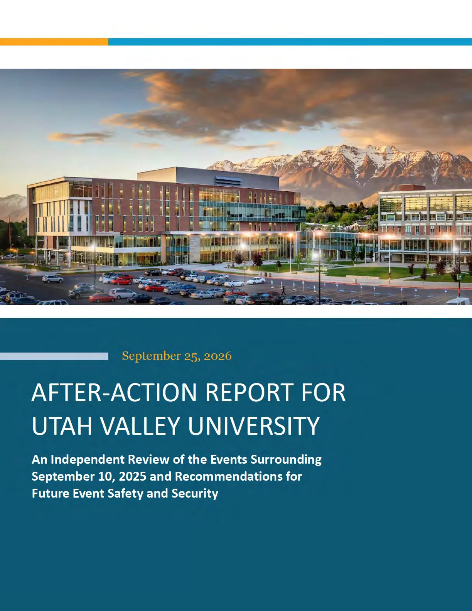
oe RD ioe —_ —_— eens okae," | ro _ itsaeAFTER-ACTION REPORT FORUTAH VALLEY UNIVERSITYAn Independent Review of the Events SurroundingSeptember 10, 2025 and Recommendations forFuture Event Safety and Security
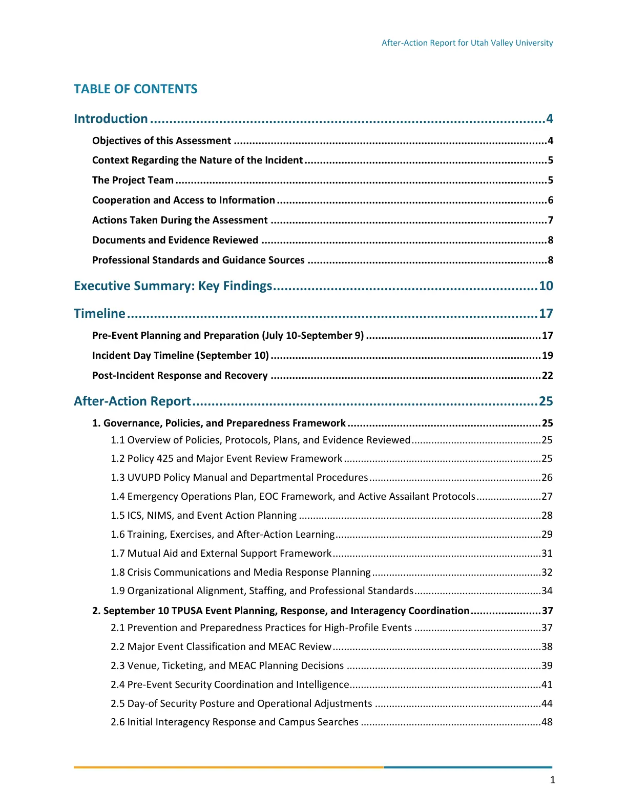
After-Action Report for Utah Valley University1TABLE OF CONTENTSIntroduction ....................................................................................................... 4Objectives of this Assessment ...................................................................................................... 4Context Regarding the Nature of the Incident ............................................................................... 5The Project Team ......................................................................................................................... 5Cooperation and Access to Information ........................................................................................ 6Actions Taken During the Assessment .......................................................................................... 7Documents and Evidence Reviewed ............................................................................................. 8Professional Standards and Guidance Sources .............................................................................. 8Executive Summary: Key Findings ..................................................................... 10Timeline ........................................................................................................... 17Pre-Event Planning and Preparation (July 10-September 9) ......................................................... 17Incident Day Timeline (September 10) ........................................................................................ 19Post-Incident Response and Recovery ........................................................................................ 22After-Action Report .......................................................................................... 251. Governance, Policies, and Preparedness Framework ............................................................... 251.1 Overview of Policies, Protocols, Plans, and Evidence Reviewed .............................................. 251.2 Policy 425 and Major Event Review Framework ...................................................................... 251.3 UVUPD Policy Manual and Departmental Procedures ............................................................. 261.4 Emergency Operations Plan, EOC Framework, and Active Assailant Protocols ....................... 271.5 ICS, NIMS, and Event Action Planning ...................................................................................... 281.6 Training, Exercises, and After-Action Learning ......................................................................... 291.7 Mutual Aid and External Support Framework .......................................................................... 311.8 Crisis Communications and Media Response Planning ............................................................ 321.9 Organizational Alignment, Staffing, and Professional Standards ............................................. 342. September 10 TPUSA Event Planning, Response, and Interagency Coordination ....................... 372.1 Prevention and Preparedness Practices for High-Profile Events ............................................. 372.2 Major Event Classification and MEAC Review .......................................................................... 382.3 Venue, Ticketing, and MEAC Planning Decisions ..................................................................... 392.4 Pre-Event Security Coordination and Intelligence.................................................................... 412.5 Day-of Security Posture and Operational Adjustments ........................................................... 442.6 Initial Interagency Response and Campus Searches ................................................................ 48
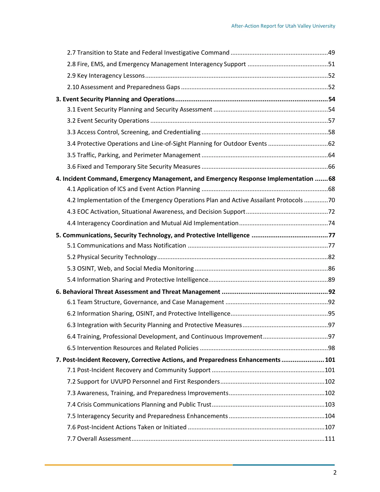
After-Action Report for Utah Valley University22.7 Transition to State and Federal Investigative Command ......................................................... 492.8 Fire, EMS, and Emergency Management Interagency Support ............................................... 512.9 Key Interagency Lessons ........................................................................................................... 522.10 Assessment and Preparedness Gaps ...................................................................................... 523. Event Security Planning and Operations .................................................................................. 543.1 Event Security Planning and Security Assessment ................................................................... 543.2 Event Security Operations ........................................................................................................ 573.3 Access Control, Screening, and Credentialing .......................................................................... 583.4 Protective Operations and Line-of-Sight Planning for Outdoor Events ................................... 623.5 Traffic, Parking, and Perimeter Management .......................................................................... 643.6 Fixed and Temporary Site Security Measures .......................................................................... 664. Incident Command, Emergency Management, and Emergency Response Implementation ....... 684.1 Application of ICS and Event Action Planning .......................................................................... 684.2 Implementation of the Emergency Operations Plan and Active Assailant Protocols .............. 704.3 EOC Activation, Situational Awareness, and Decision Support ................................................ 724.4 Interagency Coordination and Mutual Aid Implementation .................................................... 745. Communications, Security Technology, and Protective Intelligence ......................................... 775.1 Communications and Mass Notification .................................................................................. 775.2 Physical Security Technology .................................................................................................... 825.3 OSINT, Web, and Social Media Monitoring .............................................................................. 865.4 Information Sharing and Protective Intelligence...................................................................... 896. Behavioral Threat Assessment and Threat Management ......................................................... 926.1 Team Structure, Governance, and Case Management ............................................................ 926.2 Information Sharing, OSINT, and Protective Intelligence ......................................................... 956.3 Integration with Security Planning and Protective Measures .................................................. 976.4 Training, Professional Development, and Continuous Improvement ...................................... 976.5 Intervention Resources and Related Policies ........................................................................... 987. Post-Incident Recovery, Corrective Actions, and Preparedness Enhancements ....................... 1017.1 Post-Incident Recovery and Community Support .................................................................. 1017.2 Support for UVUPD Personnel and First Responders ............................................................. 1027.3 Awareness, Training, and Preparedness Improvements ........................................................ 1027.4 Crisis Communications Planning and Public Trust .................................................................. 1037.5 Interagency Security and Preparedness Enhancements ........................................................ 1047.6 Post-Incident Actions Taken or Initiated ................................................................................ 1077.7 Overall Assessment ................................................................................................................. 111
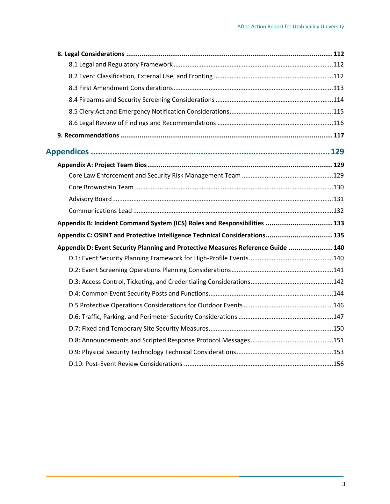
After-Action Report for Utah Valley University38. Legal Considerations ............................................................................................................ 1128.1 Legal and Regulatory Framework ........................................................................................... 1128.2 Event Classification, External Use, and Fronting .................................................................... 1128.3 First Amendment Considerations ........................................................................................... 1138.4 Firearms and Security Screening Considerations ................................................................... 1148.5 Clery Act and Emergency Notification Considerations ........................................................... 1158.6 Legal Review of Findings and Recommendations .................................................................. 1169. Recommendations ............................................................................................................... 117Appendices .................................................................................................... 129Appendix A: Project Team Bios ................................................................................................. 129Core Law Enforcement and Security Risk Management Team .................................................... 129Core Brownstein Team ................................................................................................................. 130Advisory Board .............................................................................................................................. 131Communications Lead .................................................................................................................. 132Appendix B: Incident Command System (ICS) Roles and Responsibilities ................................... 133Appendix C: OSINT and Protective Intelligence Technical Considerations ................................... 135Appendix D: Event Security Planning and Protective Measures Reference Guide ....................... 140D.1: Event Security Planning Framework for High-Profile Events ................................................ 140D.2: Event Screening Operations Planning Considerations .......................................................... 141D.3: Access Control, Ticketing, and Credentialing Considerations ............................................... 142D.4: Common Event Security Posts and Functions ....................................................................... 144D.5 Protective Operations Considerations for Outdoor Events ................................................... 146D.6: Traffic, Parking, and Perimeter Security Considerations ...................................................... 147D.7: Fixed and Temporary Site Security Measures ....................................................................... 150D.8: Announcements and Scripted Response Protocol Messages ............................................... 151D.9: Physical Security Technology Technical Considerations ....................................................... 153D.10: Post-Event Review Considerations ..................................................................................... 156
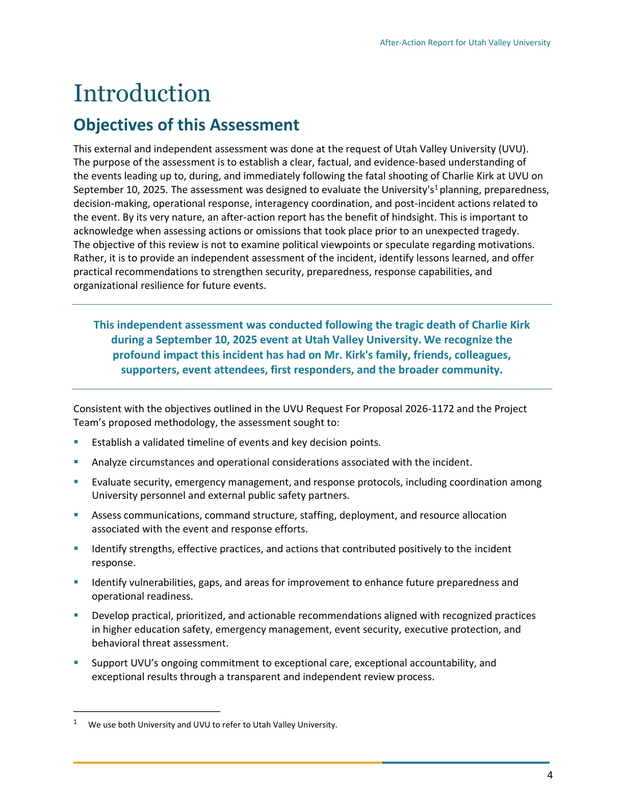
After-Action Report for Utah Valley University4IntroductionObjectives of this AssessmentThis external and independent assessment was done at the request of Utah Valley University (UVU).The purpose of the assessment is to establish a clear, factual, and evidence-based understanding ofthe events leading up to, during, and immediately following the fatal shooting of Charlie Kirk at UVU onSeptember 10, 2025. The assessment was designed to evaluate the University's1 planning, preparedness,decision-making, operational response, interagency coordination, and post-incident actions related tothe event. By its very nature, an after-action report has the benefit of hindsight. This is important toacknowledge when assessing actions or omissions that took place prior to an unexpected tragedy.The objective of this review is not to examine political viewpoints or speculate regarding motivations.Rather, it is to provide an independent assessment of the incident, identify lessons learned, and offerpractical recommendations to strengthen security, preparedness, response capabilities, andorganizational resilience for future events.This independent assessment was conducted following the tragic death of Charlie Kirkduring a September 10, 2025 event at Utah Valley University. We recognize theprofound impact this incident has had on Mr. Kirk's family, friends, colleagues,supporters, event attendees, first responders, and the broader community.Consistent with the objectives outlined in the UVU Request For Proposal 2026-1172 and the ProjectTeam’s proposed methodology, the assessment sought to:▪Establish a validated timeline of events and key decision points.▪Analyze circumstances and operational considerations associated with the incident.▪Evaluate security, emergency management, and response protocols, including coordination amongUniversity personnel and external public safety partners.▪Assess communications, command structure, staffing, deployment, and resource allocationassociated with the event and response efforts.▪Identify strengths, effective practices, and actions that contributed positively to the incidentresponse.▪Identify vulnerabilities, gaps, and areas for improvement to enhance future preparedness andoperational readiness.▪Develop practical, prioritized, and actionable recommendations aligned with recognized practicesin higher education safety, emergency management, event security, executive protection, andbehavioral threat assessment.▪Support UVU’s ongoing commitment to exceptional care, exceptional accountability, andexceptional results through a transparent and independent review process.1 We use both University and UVU to refer to Utah Valley University.
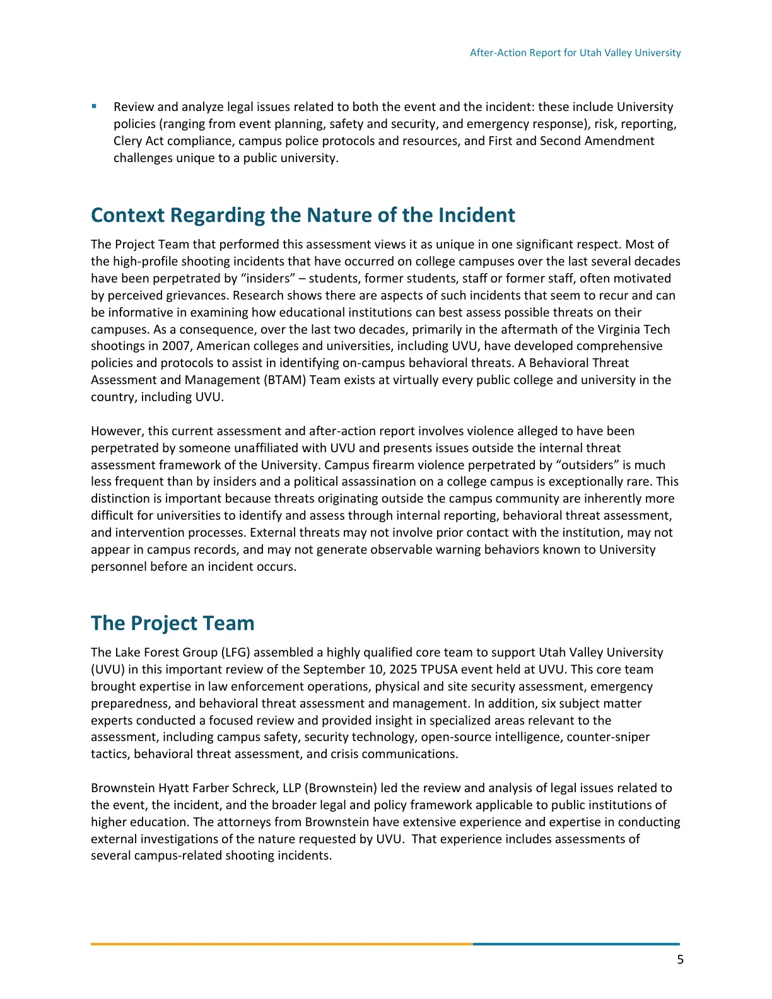
After-Action Report for Utah Valley University5▪Review and analyze legal issues related to both the event and the incident: these include Universitypolicies (ranging from event planning, safety and security, and emergency response), risk, reporting,Clery Act compliance, campus police protocols and resources, and First and Second Amendmentchallenges unique to a public university.Context Regarding the Nature of the IncidentThe Project Team that performed this assessment views it as unique in one significant respect. Most ofthe high-profile shooting incidents that have occurred on college campuses over the last several decadeshave been perpetrated by “insiders” – students, former students, staff or former staff, often motivatedby perceived grievances. Research shows there are aspects of such incidents that seem to recur and canbe informative in examining how educational institutions can best assess possible threats on theircampuses. As a consequence, over the last two decades, primarily in the aftermath of the Virginia Techshootings in 2007, American colleges and universities, including UVU, have developed comprehensivepolicies and protocols to assist in identifying on-campus behavioral threats. A Behavioral ThreatAssessment and Management (BTAM) Team exists at virtually every public college and university in thecountry, including UVU.However, this current assessment and after-action report involves violence alleged to have beenperpetrated by someone unaffiliated with UVU and presents issues outside the internal threatassessment framework of the University. Campus firearm violence perpetrated by “outsiders” is muchless frequent than by insiders and a political assassination on a college campus is exceptionally rare. Thisdistinction is important because threats originating outside the campus community are inherently moredifficult for universities to identify and assess through internal reporting, behavioral threat assessment,and intervention processes. External threats may not involve prior contact with the institution, may notappear in campus records, and may not generate observable warning behaviors known to Universitypersonnel before an incident occurs.The Project TeamThe Lake Forest Group (LFG) assembled a highly qualified core team to support Utah Valley University(UVU) in this important review of the September 10, 2025 TPUSA event held at UVU. This core teambrought expertise in law enforcement operations, physical and site security assessment, emergencypreparedness, and behavioral threat assessment and management. In addition, six subject matterexperts conducted a focused review and provided insight in specialized areas relevant to theassessment, including campus safety, security technology, open-source intelligence, counter-snipertactics, behavioral threat assessment, and crisis communications.Brownstein Hyatt Farber Schreck, LLP (Brownstein) led the review and analysis of legal issues related tothe event, the incident, and the broader legal and policy framework applicable to public institutions ofhigher education. The attorneys from Brownstein have extensive experience and expertise in conductingexternal investigations of the nature requested by UVU. That experience includes assessments ofseveral campus-related shooting incidents.
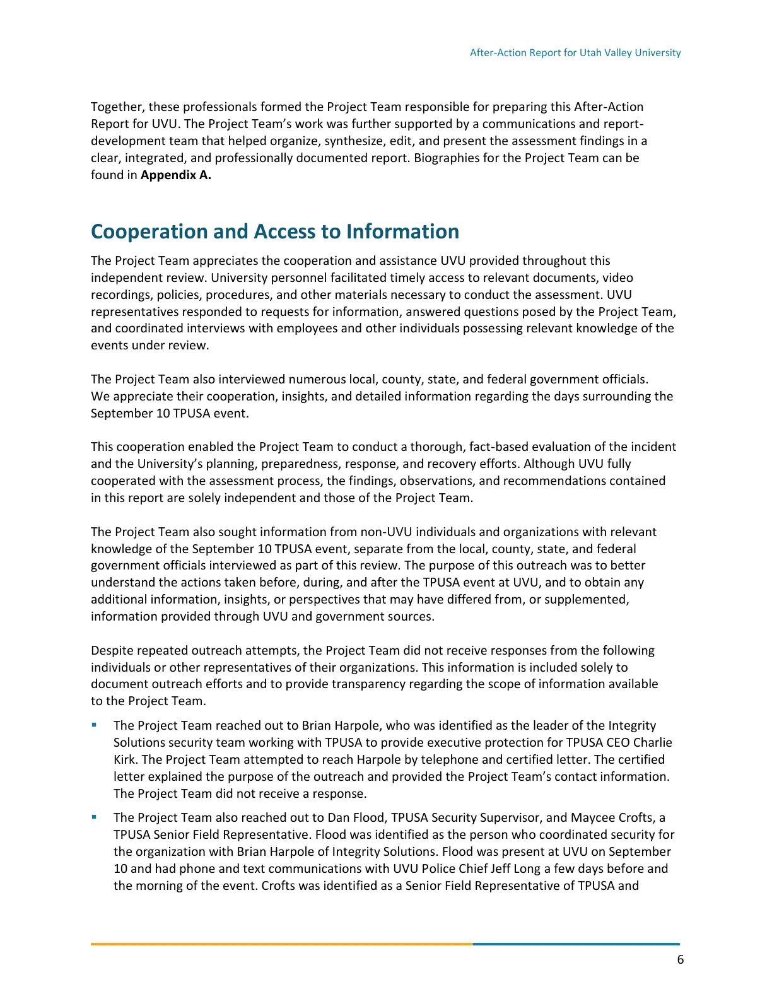
After-Action Report for Utah Valley University6Together, these professionals formed the Project Team responsible for preparing this After-ActionReport for UVU. The Project Team’s work was further supported by a communications and report-development team that helped organize, synthesize, edit, and present the assessment findings in aclear, integrated, and professionally documented report. Biographies for the Project Team can befound in Appendix A.Cooperation and Access to InformationThe Project Team appreciates the cooperation and assistance UVU provided throughout thisindependent review. University personnel facilitated timely access to relevant documents, videorecordings, policies, procedures, and other materials necessary to conduct the assessment. UVUrepresentatives responded to requests for information, answered questions posed by the Project Team,and coordinated interviews with employees and other individuals possessing relevant knowledge of theevents under review.The Project Team also interviewed numerous local, county, state, and federal government officials.We appreciate their cooperation, insights, and detailed information regarding the days surrounding theSeptember 10 TPUSA event.This cooperation enabled the Project Team to conduct a thorough, fact-based evaluation of the incidentand the University’s planning, preparedness, response, and recovery efforts. Although UVU fullycooperated with the assessment process, the findings, observations, and recommendations containedin this report are solely independent and those of the Project Team.The Project Team also sought information from non-UVU individuals and organizations with relevantknowledge of the September 10 TPUSA event, separate from the local, county, state, and federalgovernment officials interviewed as part of this review. The purpose of this outreach was to betterunderstand the actions taken before, during, and after the TPUSA event at UVU, and to obtain anyadditional information, insights, or perspectives that may have differed from, or supplemented,information provided through UVU and government sources.Despite repeated outreach attempts, the Project Team did not receive responses from the followingindividuals or other representatives of their organizations. This information is included solely todocument outreach efforts and to provide transparency regarding the scope of information availableto the Project Team.▪The Project Team reached out to Brian Harpole, who was identified as the leader of the IntegritySolutions security team working with TPUSA to provide executive protection for TPUSA CEO CharlieKirk. The Project Team attempted to reach Harpole by telephone and certified letter. The certifiedletter explained the purpose of the outreach and provided the Project Team’s contact information.The Project Team did not receive a response.▪The Project Team also reached out to Dan Flood, TPUSA Security Supervisor, and Maycee Crofts, aTPUSA Senior Field Representative. Flood was identified as the person who coordinated security forthe organization with Brian Harpole of Integrity Solutions. Flood was present at UVU on September10 and had phone and text communications with UVU Police Chief Jeff Long a few days before andthe morning of the event. Crofts was identified as a Senior Field Representative of TPUSA and
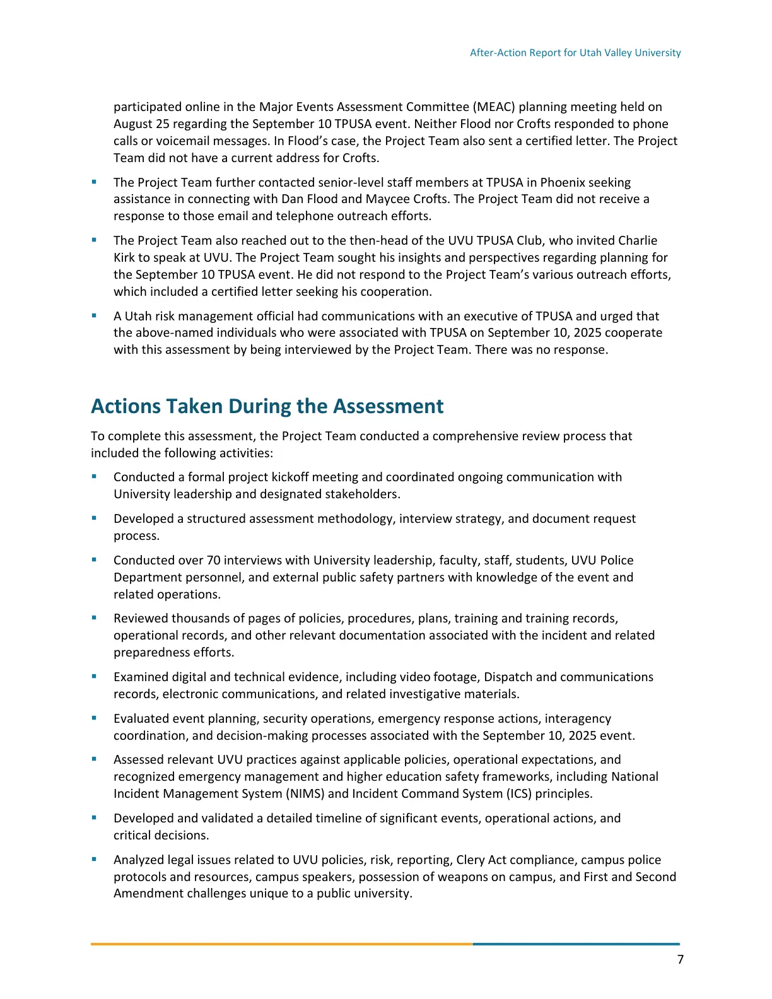
After-Action Report for Utah Valley University7participated online in the Major Events Assessment Committee (MEAC) planning meeting held onAugust 25 regarding the September 10 TPUSA event. Neither Flood nor Crofts responded to phonecalls or voicemail messages. In Flood’s case, the Project Team also sent a certified letter. The ProjectTeam did not have a current address for Crofts.▪The Project Team further contacted senior-level staff members at TPUSA in Phoenix seekingassistance in connecting with Dan Flood and Maycee Crofts. The Project Team did not receive aresponse to those email and telephone outreach efforts.▪The Project Team also reached out to the then-head of the UVU TPUSA Club, who invited CharlieKirk to speak at UVU. The Project Team sought his insights and perspectives regarding planning forthe September 10 TPUSA event. He did not respond to the Project Team’s various outreach efforts,which included a certified letter seeking his cooperation.▪A Utah risk management official had communications with an executive of TPUSA and urged thatthe above-named individuals who were associated with TPUSA on September 10, 2025 cooperatewith this assessment by being interviewed by the Project Team. There was no response.Actions Taken During the AssessmentTo complete this assessment, the Project Team conducted a comprehensive review process thatincluded the following activities:▪Conducted a formal project kickoff meeting and coordinated ongoing communication withUniversity leadership and designated stakeholders.▪Developed a structured assessment methodology, interview strategy, and document requestprocess.▪Conducted over 70 interviews with University leadership, faculty, staff, students, UVU PoliceDepartment personnel, and external public safety partners with knowledge of the event andrelated operations.▪Reviewed thousands of pages of policies, procedures, plans, training and training records,operational records, and other relevant documentation associated with the incident and relatedpreparedness efforts.▪Examined digital and technical evidence, including video footage, Dispatch and communicationsrecords, electronic communications, and related investigative materials.▪Evaluated event planning, security operations, emergency response actions, interagencycoordination, and decision-making processes associated with the September 10, 2025 event.▪Assessed relevant UVU practices against applicable policies, operational expectations, andrecognized emergency management and higher education safety frameworks, including NationalIncident Management System (NIMS) and Incident Command System (ICS) principles.▪Developed and validated a detailed timeline of significant events, operational actions, andcritical decisions.▪Analyzed legal issues related to UVU policies, risk, reporting, Clery Act compliance, campus policeprotocols and resources, campus speakers, possession of weapons on campus, and First and SecondAmendment challenges unique to a public university.
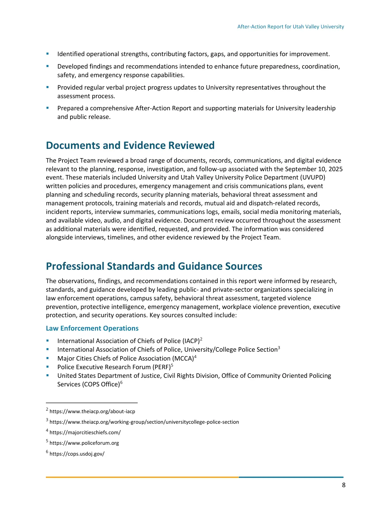
After-Action Report for Utah Valley University8▪Identified operational strengths, contributing factors, gaps, and opportunities for improvement.▪Developed findings and recommendations intended to enhance future preparedness, coordination,safety, and emergency response capabilities.▪Provided regular verbal project progress updates to University representatives throughout theassessment process.▪Prepared a comprehensive After-Action Report and supporting materials for University leadershipand public release.Documents and Evidence ReviewedThe Project Team reviewed a broad range of documents, records, communications, and digital evidencerelevant to the planning, response, investigation, and follow-up associated with the September 10, 2025event. These materials included University and Utah Valley University Police Department (UVUPD)written policies and procedures, emergency management and crisis communications plans, eventplanning and scheduling records, security planning materials, behavioral threat assessment andmanagement protocols, training materials and records, mutual aid and dispatch-related records,incident reports, interview summaries, communications logs, emails, social media monitoring materials,and available video, audio, and digital evidence. Document review occurred throughout the assessmentas additional materials were identified, requested, and provided. The information was consideredalongside interviews, timelines, and other evidence reviewed by the Project Team.Professional Standards and Guidance SourcesThe observations, findings, and recommendations contained in this report were informed by research,standards, and guidance developed by leading public- and private-sector organizations specializing inlaw enforcement operations, campus safety, behavioral threat assessment, targeted violenceprevention, protective intelligence, emergency management, workplace violence prevention, executiveprotection, and security operations. Key sources consulted include:Law Enforcement Operations▪International Association of Chiefs of Police (IACP)2▪International Association of Chiefs of Police, University/College Police Section3▪Major Cities Chiefs of Police Association (MCCA)4▪Police Executive Research Forum (PERF)5▪United States Department of Justice, Civil Rights Division, Office of Community Oriented PolicingServices (COPS Office)62 https://www.theiacp.org/about-iacp3 https://www.theiacp.org/working-group/section/universitycollege-police-section4 https://majorcitieschiefs.com/5 https://www.policeforum.org6 https://cops.usdoj.gov/
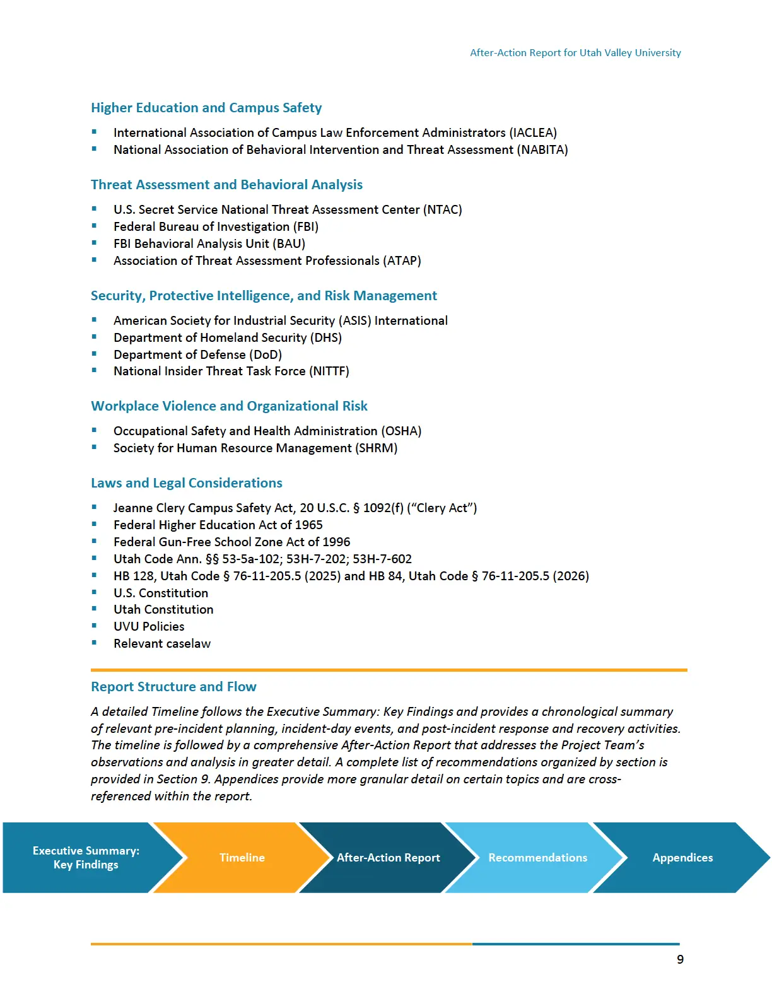
After-Action Report for Utah Valley UniversityHigher Education and Campus Safety= International Association of Campus Law Enforcement Administrators (IACLEA)® National Association of Behavioral Intervention and Threat Assessment (NABITA)Threat Assessment and Behavioral Analysis= U.S. Secret Service National Threat Assessment Center (NTAC)= Federal Bureau of Investigation (FBI)= FBI Behavioral Analysis Unit (BAU)= Association of Threat Assessment Professionals (ATAP)Security, Protective Intelligence, and Risk Management= American Society for Industrial Security (ASIS) International=" Department of Homeland Security (DHS)=" Department of Defense (DoD)= National Insider Threat Task Force (NITTF)Workplace Violence and Organizational Risk=" Occupational Safety and Health Administration (OSHA)= Society for Human Resource Management (SHRM)Laws and Legal Considerations= Jeanne Clery Campus Safety Act, 20 U.S.C. § 1092(f) (“Clery Act”)= Federal Higher Education Act of 1965=" Federal Gun-Free School Zone Act of 1996= Utah Code Ann. §§ 53-5a-102; 53H-7-202; 53H-7-602= HB 128, Utah Code § 76-11-205.5 (2025) and HB 84, Utah Code § 76-11-205.5 (2026)= U.S. Constitution=" Utah Constitution= UVU Policies=" Relevant caselawReport Structure and FlowA detailed Timeline follows the Executive Summary: Key Findings and provides a chronological summaryof relevant pre-incident planning, incident-day events, and post-incident response and recovery activities.The timeline is followed by a comprehensive After-Action Report that addresses the Project Team’sobservations and analysis in greater detail. A complete list of recommendations organized by section isprovided in Section 9. Appendices provide more granular detail on certain topics and are cross-referenced within the report.ina tcdcaribimel After-Action Report Recommendations AppendicesKey Findings
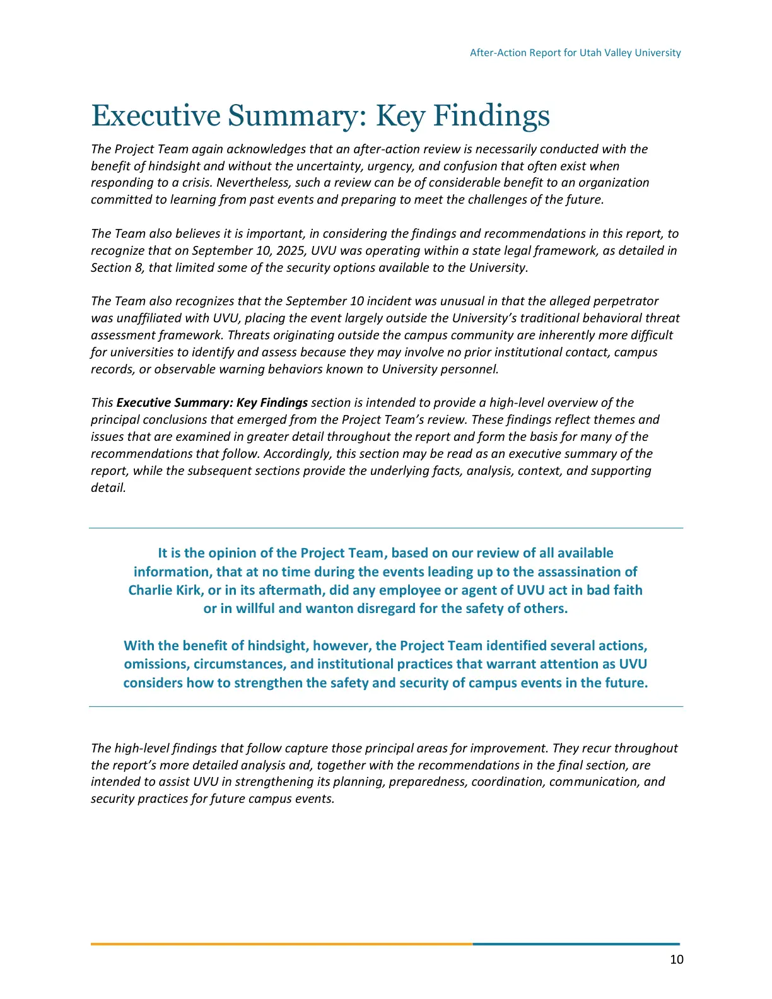
After-Action Report for Utah Valley University10Executive Summary: Key FindingsThe Project Team again acknowledges that an after-action review is necessarily conducted with thebenefit of hindsight and without the uncertainty, urgency, and confusion that often exist whenresponding to a crisis. Nevertheless, such a review can be of considerable benefit to an organizationcommitted to learning from past events and preparing to meet the challenges of the future.The Team also believes it is important, in considering the findings and recommendations in this report, torecognize that on September 10, 2025, UVU was operating within a state legal framework, as detailed inSection 8, that limited some of the security options available to the University.The Team also recognizes that the September 10 incident was unusual in that the alleged perpetratorwas unaffiliated with UVU, placing the event largely outside the University’s traditional behavioral threatassessment framework. Threats originating outside the campus community are inherently more difficultfor universities to identify and assess because they may involve no prior institutional contact, campusrecords, or observable warning behaviors known to University personnel.This Executive Summary: Key Findings section is intended to provide a high-level overview of theprincipal conclusions that emerged from the Project Team’s review. These findings reflect themes andissues that are examined in greater detail throughout the report and form the basis for many of therecommendations that follow. Accordingly, this section may be read as an executive summary of thereport, while the subsequent sections provide the underlying facts, analysis, context, and supportingdetail.It is the opinion of the Project Team, based on our review of all availableinformation, that at no time during the events leading up to the assassination ofCharlie Kirk, or in its aftermath, did any employee or agent of UVU act in bad faithor in willful and wanton disregard for the safety of others.With the benefit of hindsight, however, the Project Team identified several actions,omissions, circumstances, and institutional practices that warrant attention as UVUconsiders how to strengthen the safety and security of campus events in the future.The high-level findings that follow capture those principal areas for improvement. They recur throughoutthe report’s more detailed analysis and, together with the recommendations in the final section, areintended to assist UVU in strengthening its planning, preparedness, coordination, communication, andsecurity practices for future campus events.
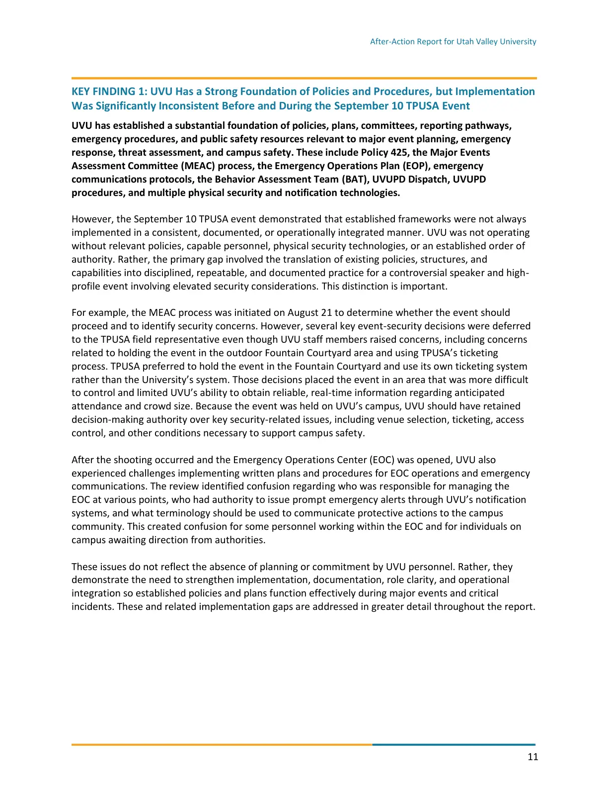
After-Action Report for Utah Valley University11UVU has established a substantial foundation of policies, plans, committees, reporting pathways,emergency procedures, and public safety resources relevant to major event planning, emergencyresponse, threat assessment, and campus safety. These include Policy 425, the Major EventsAssessment Committee (MEAC) process, the Emergency Operations Plan (EOP), emergencycommunications protocols, the Behavior Assessment Team (BAT), UVUPD Dispatch, UVUPDprocedures, and multiple physical security and notification technologies.However, the September 10 TPUSA event demonstrated that established frameworks were not alwaysimplemented in a consistent, documented, or operationally integrated manner. UVU was not operatingwithout relevant policies, capable personnel, physical security technologies, or an established order ofauthority. Rather, the primary gap involved the translation of existing policies, structures, andcapabilities into disciplined, repeatable, and documented practice for a controversial speaker and high-profile event involving elevated security considerations. This distinction is important.For example, the MEAC process was initiated on August 21 to determine whether the event shouldproceed and to identify security concerns. However, several key event-security decisions were deferredto the TPUSA field representative even though UVU staff members raised concerns, including concernsrelated to holding the event in the outdoor Fountain Courtyard area and using TPUSA’s ticketingprocess. TPUSA preferred to hold the event in the Fountain Courtyard and use its own ticketing systemrather than the University’s system. Those decisions placed the event in an area that was more difficultto control and limited UVU’s ability to obtain reliable, real-time information regarding anticipatedattendance and crowd size. Because the event was held on UVU’s campus, UVU should have retaineddecision-making authority over key security-related issues, including venue selection, ticketing, accesscontrol, and other conditions necessary to support campus safety.After the shooting occurred and the Emergency Operations Center (EOC) was opened, UVU alsoexperienced challenges implementing written plans and procedures for EOC operations and emergencycommunications. The review identified confusion regarding who was responsible for managing theEOC at various points, who had authority to issue prompt emergency alerts through UVU’s notificationsystems, and what terminology should be used to communicate protective actions to the campuscommunity. This created confusion for some personnel working within the EOC and for individuals oncampus awaiting direction from authorities.These issues do not reflect the absence of planning or commitment by UVU personnel. Rather, theydemonstrate the need to strengthen implementation, documentation, role clarity, and operationalintegration so established policies and plans function effectively during major events and criticalincidents. These and related implementation gaps are addressed in greater detail throughout the report.KEY FINDING 1: UVU Has a Strong Foundation of Policies and Procedures, but ImplementationWas Significantly Inconsistent Before and During the September 10 TPUSA Event
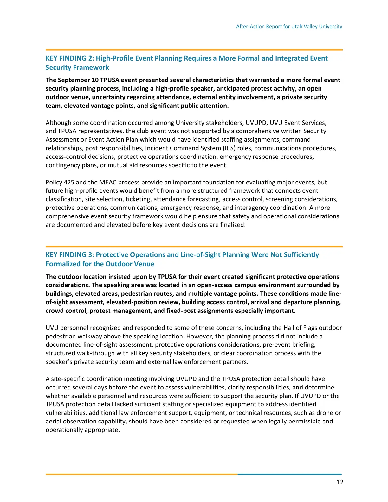
After-Action Report for Utah Valley University12The September 10 TPUSA event presented several characteristics that warranted a more formal eventsecurity planning process, including a high-profile speaker, anticipated protest activity, an openoutdoor venue, uncertainty regarding attendance, external entity involvement, a private securityteam, elevated vantage points, and significant public attention.Although some coordination occurred among University stakeholders, UVUPD, UVU Event Services,and TPUSA representatives, the club event was not supported by a comprehensive written SecurityAssessment or Event Action Plan which would have identified staffing assignments, commandrelationships, post responsibilities, Incident Command System (ICS) roles, communications procedures,access-control decisions, protective operations coordination, emergency response procedures,contingency plans, or mutual aid resources specific to the event.Policy 425 and the MEAC process provide an important foundation for evaluating major events, butfuture high-profile events would benefit from a more structured framework that connects eventclassification, site selection, ticketing, attendance forecasting, access control, screening considerations,protective operations, communications, emergency response, and interagency coordination. A morecomprehensive event security framework would help ensure that safety and operational considerationsare documented and elevated before key event decisions are finalized.The outdoor location insisted upon by TPUSA for their event created significant protective operationsconsiderations. The speaking area was located in an open-access campus environment surrounded bybuildings, elevated areas, pedestrian routes, and multiple vantage points. These conditions made line-of-sight assessment, elevated-position review, building access control, arrival and departure planning,crowd control, protest management, and fixed-post assignments especially important.UVU personnel recognized and responded to some of these concerns, including the Hall of Flags outdoorpedestrian walkway above the speaking location. However, the planning process did not include adocumented line-of-sight assessment, protective operations considerations, pre-event briefing,structured walk-through with all key security stakeholders, or clear coordination process with thespeaker’s private security team and external law enforcement partners.A site-specific coordination meeting involving UVUPD and the TPUSA protection detail should haveoccurred several days before the event to assess vulnerabilities, clarify responsibilities, and determinewhether available personnel and resources were sufficient to support the security plan. If UVUPD or theTPUSA protection detail lacked sufficient staffing or specialized equipment to address identifiedvulnerabilities, additional law enforcement support, equipment, or technical resources, such as drone oraerial observation capability, should have been considered or requested when legally permissible andoperationally appropriate.KEY FINDING 2: High-Profile Event Planning Requires a More Formal and Integrated EventSecurity FrameworkKEY FINDING 3: Protective Operations and Line-of-Sight Planning Were Not SufficientlyFormalized for the Outdoor Venue
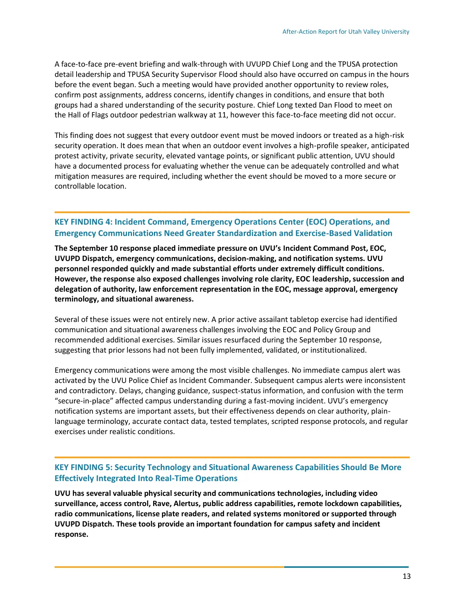
After-Action Report for Utah Valley University13A face-to-face pre-event briefing and walk-through with UVUPD Chief Long and the TPUSA protectiondetail leadership and TPUSA Security Supervisor Flood should also have occurred on campus in the hoursbefore the event began. Such a meeting would have provided another opportunity to review roles,confirm post assignments, address concerns, identify changes in conditions, and ensure that bothgroups had a shared understanding of the security posture. Chief Long texted Dan Flood to meet onthe Hall of Flags outdoor pedestrian walkway at 11, however this face-to-face meeting did not occur.This finding does not suggest that every outdoor event must be moved indoors or treated as a high-risksecurity operation. It does mean that when an outdoor event involves a high-profile speaker, anticipatedprotest activity, private security, elevated vantage points, or significant public attention, UVU shouldhave a documented process for evaluating whether the venue can be adequately controlled and whatmitigation measures are required, including whether the event should be moved to a more secure orcontrollable location.The September 10 response placed immediate pressure on UVU’s Incident Command Post, EOC,UVUPD Dispatch, emergency communications, decision-making, and notification systems. UVUpersonnel responded quickly and made substantial efforts under extremely difficult conditions.However, the response also exposed challenges involving role clarity, EOC leadership, succession anddelegation of authority, law enforcement representation in the EOC, message approval, emergencyterminology, and situational awareness.Several of these issues were not entirely new. A prior active assailant tabletop exercise had identifiedcommunication and situational awareness challenges involving the EOC and Policy Group andrecommended additional exercises. Similar issues resurfaced during the September 10 response,suggesting that prior lessons had not been fully implemented, validated, or institutionalized.Emergency communications were among the most visible challenges. No immediate campus alert wasactivated by the UVU Police Chief as Incident Commander. Subsequent campus alerts were inconsistentand contradictory. Delays, changing guidance, suspect-status information, and confusion with the term“secure-in-place” affected campus understanding during a fast-moving incident. UVU’s emergencynotification systems are important assets, but their effectiveness depends on clear authority, plain-language terminology, accurate contact data, tested templates, scripted response protocols, and regularexercises under realistic conditions.UVU has several valuable physical security and communications technologies, including videosurveillance, access control, Rave, Alertus, public address capabilities, remote lockdown capabilities,radio communications, license plate readers, and related systems monitored or supported throughUVUPD Dispatch. These tools provide an important foundation for campus safety and incidentresponse.KEY FINDING 4: Incident Command, Emergency Operations Center (EOC) Operations, andEmergency Communications Need Greater Standardization and Exercise-Based ValidationKEY FINDING 5: Security Technology and Situational Awareness Capabilities Should Be MoreEffectively Integrated Into Real-Time Operations
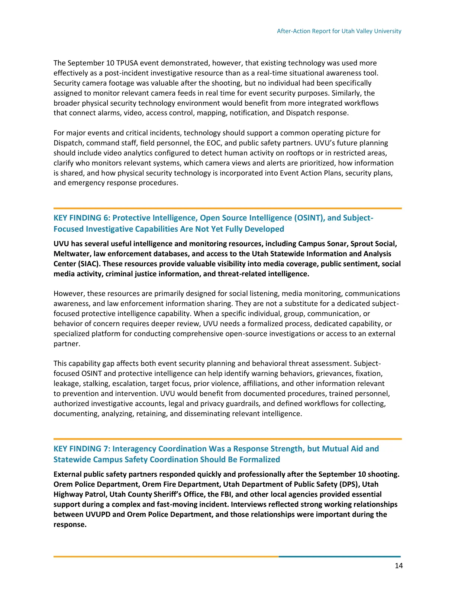
After-Action Report for Utah Valley University14The September 10 TPUSA event demonstrated, however, that existing technology was used moreeffectively as a post-incident investigative resource than as a real-time situational awareness tool.Security camera footage was valuable after the shooting, but no individual had been specificallyassigned to monitor relevant camera feeds in real time for event security purposes. Similarly, thebroader physical security technology environment would benefit from more integrated workflowsthat connect alarms, video, access control, mapping, notification, and Dispatch response.For major events and critical incidents, technology should support a common operating picture forDispatch, command staff, field personnel, the EOC, and public safety partners. UVU’s future planningshould include video analytics configured to detect human activity on rooftops or in restricted areas,clarify who monitors relevant systems, which camera views and alerts are prioritized, how informationis shared, and how physical security technology is incorporated into Event Action Plans, security plans,and emergency response procedures.UVU has several useful intelligence and monitoring resources, including Campus Sonar, Sprout Social,Meltwater, law enforcement databases, and access to the Utah Statewide Information and AnalysisCenter (SIAC). These resources provide valuable visibility into media coverage, public sentiment, socialmedia activity, criminal justice information, and threat-related intelligence.However, these resources are primarily designed for social listening, media monitoring, communicationsawareness, and law enforcement information sharing. They are not a substitute for a dedicated subject-focused protective intelligence capability. When a specific individual, group, communication, orbehavior of concern requires deeper review, UVU needs a formalized process, dedicated capability, orspecialized platform for conducting comprehensive open-source investigations or access to an externalpartner.This capability gap affects both event security planning and behavioral threat assessment. Subject-focused OSINT and protective intelligence can help identify warning behaviors, grievances, fixation,leakage, stalking, escalation, target focus, prior violence, affiliations, and other information relevantto prevention and intervention. UVU would benefit from documented procedures, trained personnel,authorized investigative accounts, legal and privacy guardrails, and defined workflows for collecting,documenting, analyzing, retaining, and disseminating relevant intelligence.External public safety partners responded quickly and professionally after the September 10 shooting.Orem Police Department, Orem Fire Department, Utah Department of Public Safety (DPS), UtahHighway Patrol, Utah County Sheriff’s Office, the FBI, and other local agencies provided essentialsupport during a complex and fast-moving incident. Interviews reflected strong working relationshipsbetween UVUPD and Orem Police Department, and those relationships were important during theresponse.KEY FINDING 6: Protective Intelligence, Open Source Intelligence (OSINT), and Subject-Focused Investigative Capabilities Are Not Yet Fully DevelopedKEY FINDING 7: Interagency Coordination Was a Response Strength, but Mutual Aid andStatewide Campus Safety Coordination Should Be Formalized
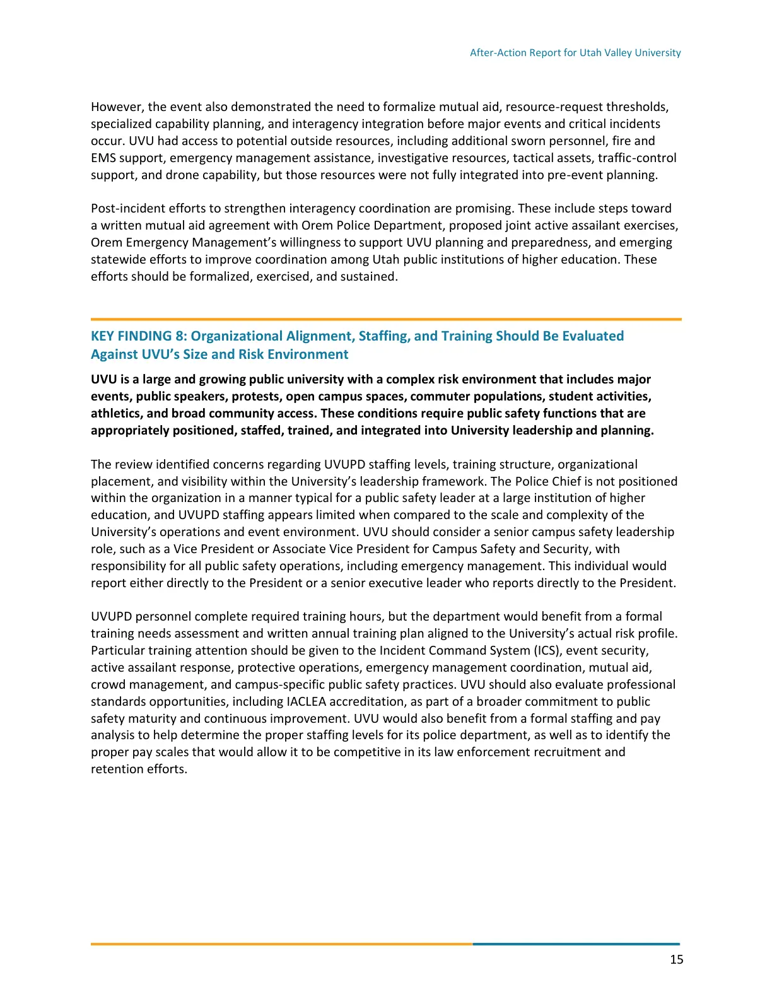
After-Action Report for Utah Valley University15However, the event also demonstrated the need to formalize mutual aid, resource-request thresholds,specialized capability planning, and interagency integration before major events and critical incidentsoccur. UVU had access to potential outside resources, including additional sworn personnel, fire andEMS support, emergency management assistance, investigative resources, tactical assets, traffic-controlsupport, and drone capability, but those resources were not fully integrated into pre-event planning.Post-incident efforts to strengthen interagency coordination are promising. These include steps towarda written mutual aid agreement with Orem Police Department, proposed joint active assailant exercises,Orem Emergency Management’s willingness to support UVU planning and preparedness, and emergingstatewide efforts to improve coordination among Utah public institutions of higher education. Theseefforts should be formalized, exercised, and sustained.UVU is a large and growing public university with a complex risk environment that includes majorevents, public speakers, protests, open campus spaces, commuter populations, student activities,athletics, and broad community access. These conditions require public safety functions that areappropriately positioned, staffed, trained, and integrated into University leadership and planning.The review identified concerns regarding UVUPD staffing levels, training structure, organizationalplacement, and visibility within the University’s leadership framework. The Police Chief is not positionedwithin the organization in a manner typical for a public safety leader at a large institution of highereducation, and UVUPD staffing appears limited when compared to the scale and complexity of theUniversity’s operations and event environment. UVU should consider a senior campus safety leadershiprole, such as a Vice President or Associate Vice President for Campus Safety and Security, withresponsibility for all public safety operations, including emergency management. This individual wouldreport either directly to the President or a senior executive leader who reports directly to the President.UVUPD personnel complete required training hours, but the department would benefit from a formaltraining needs assessment and written annual training plan aligned to the University’s actual risk profile.Particular training attention should be given to the Incident Command System (ICS), event security,active assailant response, protective operations, emergency management coordination, mutual aid,crowd management, and campus-specific public safety practices. UVU should also evaluate professionalstandards opportunities, including IACLEA accreditation, as part of a broader commitment to publicsafety maturity and continuous improvement. UVU would also benefit from a formal staffing and payanalysis to help determine the proper staffing levels for its police department, as well as to identify theproper pay scales that would allow it to be competitive in its law enforcement recruitment andretention efforts.KEY FINDING 8: Organizational Alignment, Staffing, and Training Should Be EvaluatedAgainst UVU’s Size and Risk Environment
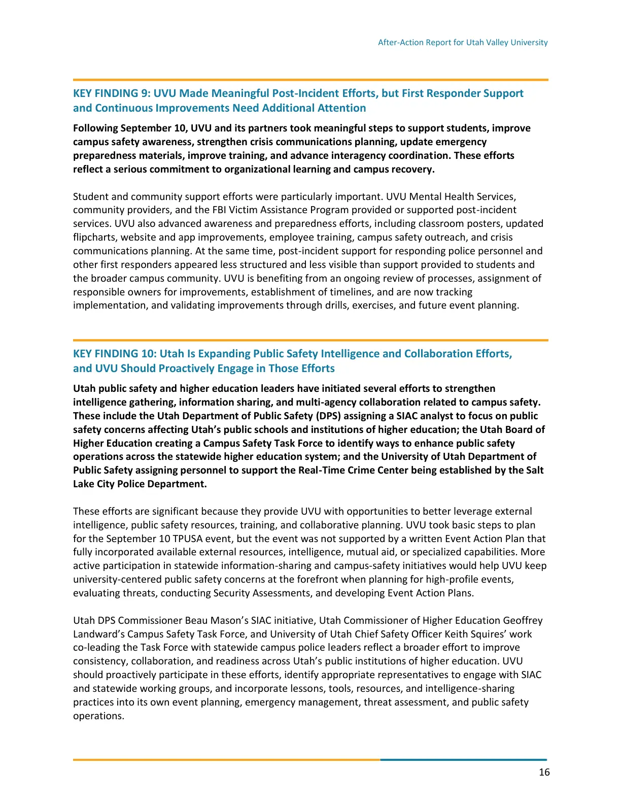
After-Action Report for Utah Valley University16Following September 10, UVU and its partners took meaningful steps to support students, improvecampus safety awareness, strengthen crisis communications planning, update emergencypreparedness materials, improve training, and advance interagency coordination. These effortsreflect a serious commitment to organizational learning and campus recovery.Student and community support efforts were particularly important. UVU Mental Health Services,community providers, and the FBI Victim Assistance Program provided or supported post-incidentservices. UVU also advanced awareness and preparedness efforts, including classroom posters, updatedflipcharts, website and app improvements, employee training, campus safety outreach, and crisiscommunications planning. At the same time, post-incident support for responding police personnel andother first responders appeared less structured and less visible than support provided to students andthe broader campus community. UVU is benefiting from an ongoing review of processes, assignment ofresponsible owners for improvements, establishment of timelines, and are now trackingimplementation, and validating improvements through drills, exercises, and future event planning.Utah public safety and higher education leaders have initiated several efforts to strengthenintelligence gathering, information sharing, and multi-agency collaboration related to campus safety.These include the Utah Department of Public Safety (DPS) assigning a SIAC analyst to focus on publicsafety concerns affecting Utah’s public schools and institutions of higher education; the Utah Board ofHigher Education creating a Campus Safety Task Force to identify ways to enhance public safetyoperations across the statewide higher education system; and the University of Utah Department ofPublic Safety assigning personnel to support the Real-Time Crime Center being established by the SaltLake City Police Department.These efforts are significant because they provide UVU with opportunities to better leverage externalintelligence, public safety resources, training, and collaborative planning. UVU took basic steps to planfor the September 10 TPUSA event, but the event was not supported by a written Event Action Plan thatfully incorporated available external resources, intelligence, mutual aid, or specialized capabilities. Moreactive participation in statewide information-sharing and campus-safety initiatives would help UVU keepuniversity-centered public safety concerns at the forefront when planning for high-profile events,evaluating threats, conducting Security Assessments, and developing Event Action Plans.Utah DPS Commissioner Beau Mason’s SIAC initiative, Utah Commissioner of Higher Education GeoffreyLandward’s Campus Safety Task Force, and University of Utah Chief Safety Officer Keith Squires’ workco-leading the Task Force with statewide campus police leaders reflect a broader effort to improveconsistency, collaboration, and readiness across Utah’s public institutions of higher education. UVUshould proactively participate in these efforts, identify appropriate representatives to engage with SIACand statewide working groups, and incorporate lessons, tools, resources, and intelligence-sharingpractices into its own event planning, emergency management, threat assessment, and public safetyoperations.KEY FINDING 9: UVU Made Meaningful Post-Incident Efforts, but First Responder Supportand Continuous Improvements Need Additional AttentionKEY FINDING 10: Utah Is Expanding Public Safety Intelligence and Collaboration Efforts,and UVU Should Proactively Engage in Those Efforts
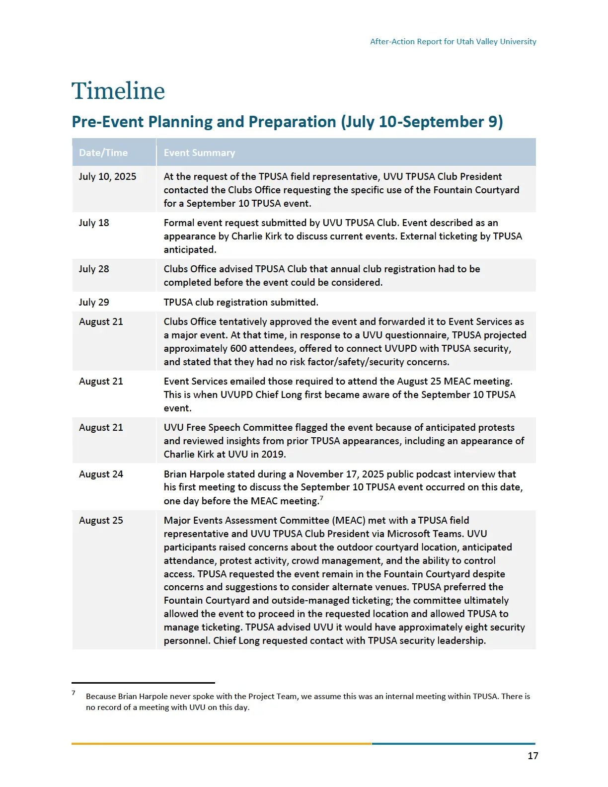
After-Action Report for Utah Valley UniversityTimelinePre-Event Planning and Preparation (July 10-September 9)July 10, 2025July 18July 28July 29August 21August 21August 21August 24August 257At the request of the TPUSA field representative, UVU TPUSA Club Presidentcontacted the Clubs Office requesting the specific use of the Fountain Courtyardfor a September 10 TPUSA event.Formal event request submitted by UVU TPUSA Club. Event described as anappearance by Charlie Kirk to discuss current events. External ticketing by TPUSAanticipated.Clubs Office advised TPUSA Club that annual club registration had to becompleted before the event could be considered.TPUSA club registration submitted.Clubs Office tentatively approved the event and forwarded it to Event Services asa major event. At that time, in response to a UVU questionnaire, TPUSA projectedapproximately 600 attendees, offered to connect UVUPD with TPUSA security,and stated that they had no risk factor/safety/security concerns.Event Services emailed those required to attend the August 25 MEAC meeting.This is when UVUPD Chief Long first became aware of the September 10 TPUSAevent.UVU Free Speech Committee flagged the event because of anticipated protestsand reviewed insights from prior TPUSA appearances, including an appearance ofCharlie Kirk at UVU in 2019.Brian Harpole stated during a November 17, 2025 public podcast interview thathis first meeting to discuss the September 10 TPUSA event occurred on this date,one day before the MEAC meeting.’Major Events Assessment Committee (MEAC) met with a TPUSA fieldrepresentative and UVU TPUSA Club President via Microsoft Teams. UVUparticipants raised concerns about the outdoor courtyard location, anticipatedattendance, protest activity, crowd management, and the ability to controlaccess. TPUSA requested the event remain in the Fountain Courtyard despiteconcerns and suggestions to consider alternate venues. TPUSA preferred theFountain Courtyard and outside-managed ticketing; the committee ultimatelyallowed the event to proceed in the requested location and allowed TPUSA tomanage ticketing. TPUSA advised UVU it would have approximately eight securitypersonnel. Chief Long requested contact with TPUSA security leadership.Because Brian Harpole never spoke with the Project Team, we assume this was an internal meeting within TPUSA. There isno record of a meeting with UVU on this day.17
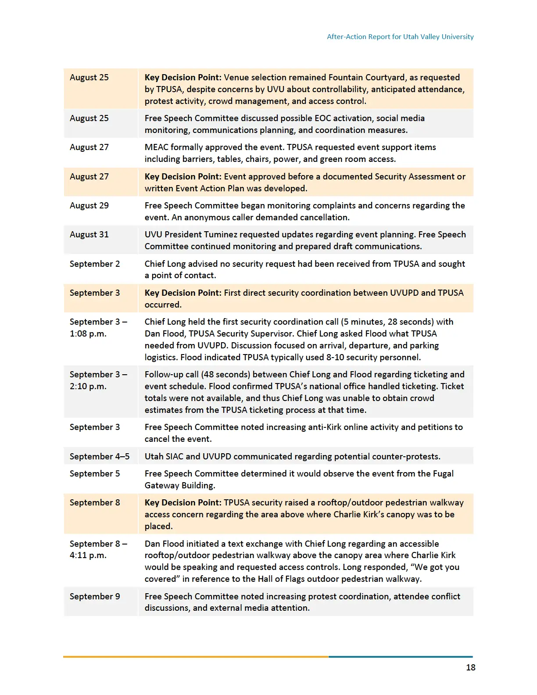
August 25August 25August 27August 27August 29August 31September 2September 3September 3 —1:08 p.m.September 3 —2:10 p.m.September 3September 4-5September 5September 8September 8 —4:11 p.m.September 9After-Action Report for Utah Valley UniversityKey Decision Point: Venue selection remained Fountain Courtyard, as requestedby TPUSA, despite concerns by UVU about controllability, anticipated attendance,protest activity, crowd management, and access control.Free Speech Committee discussed possible EOC activation, social mediamonitoring, communications planning, and coordination measures.MEAC formally approved the event. TPUSA requested event support itemsincluding barriers, tables, chairs, power, and green room access.Key Decision Point: Event approved before a documented Security Assessment orwritten Event Action Plan was developed.Free Speech Committee began monitoring complaints and concerns regarding theevent. An anonymous caller demanded cancellation.UVU President Tuminez requested updates regarding event planning. Free SpeechCommittee continued monitoring and prepared draft communications.Chief Long advised no security request had been received from TPUSA and soughta point of contact.Key Decision Point: First direct security coordination between UVUPD and TPUSAoccurred.Chief Long held the first security coordination call (5 minutes, 28 seconds) withDan Flood, TPUSA Security Supervisor. Chief Long asked Flood what TPUSAneeded from UVUPD. Discussion focused on arrival, departure, and parkinglogistics. Flood indicated TPUSA typically used 8-10 security personnel.Follow-up call (48 seconds) between Chief Long and Flood regarding ticketing andevent schedule. Flood confirmed TPUSA’s national office handled ticketing. Tickettotals were not available, and thus Chief Long was unable to obtain crowdestimates from the TPUSA ticketing process at that time.Free Speech Committee noted increasing anti-Kirk online activity and petitions tocancel the event.Utah SIAC and UVUPD communicated regarding potential counter-protests.Free Speech Committee determined it would observe the event from the FugalGateway Building.Key Decision Point: TPUSA security raised a rooftop/outdoor pedestrian walkwayaccess concern regarding the area above where Charlie Kirk’s canopy was to beplaced.Dan Flood initiated a text exchange with Chief Long regarding an accessiblerooftop/outdoor pedestrian walkway above the canopy area where Charlie Kirkwould be speaking and requested access controls. Long responded, “We got youcovered” in reference to the Hall of Flags outdoor pedestrian walkway.Free Speech Committee noted increasing protest coordination, attendee conflictdiscussions, and external media attention.18
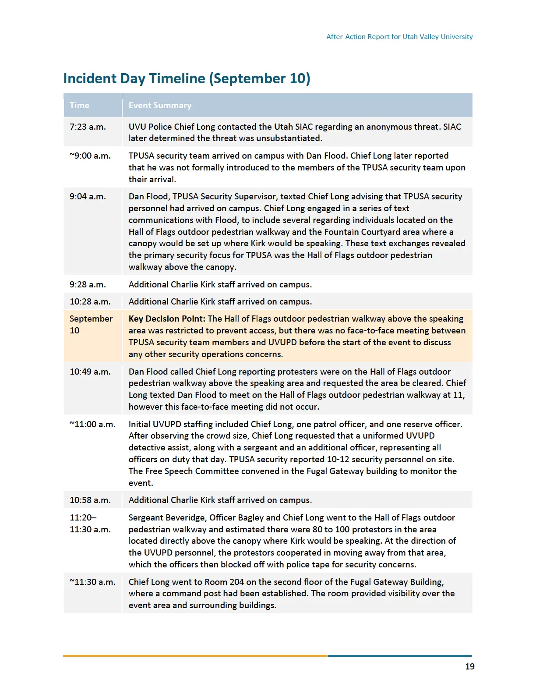
After-Action Report for Utah Valley UniversityIncident Day Timeline (September 10)7:23 a.m.~9:00 a.m.9:04 a.m.9:28 a.m.10:28 a.m.September1010:49 a.m.~11:00 a.m.10:58 a.m.11:20-11:30 a.m.~11:30 a.m.UVU Police Chief Long contacted the Utah SIAC regarding an anonymous threat. SIAClater determined the threat was unsubstantiated.TPUSA security team arrived on campus with Dan Flood. Chief Long later reportedthat he was not formally introduced to the members of the TPUSA security team upontheir arrival.Dan Flood, TPUSA Security Supervisor, texted Chief Long advising that TPUSA securitypersonnel had arrived on campus. Chief Long engaged in a series of textcommunications with Flood, to include several regarding individuals located on theHall of Flags outdoor pedestrian walkway and the Fountain Courtyard area where acanopy would be set up where Kirk would be speaking. These text exchanges revealedthe primary security focus for TPUSA was the Hall of Flags outdoor pedestrianwalkway above the canopy.Additional Charlie Kirk staff arrived on campus.Additional Charlie Kirk staff arrived on campus.Key Decision Point: The Hall of Flags outdoor pedestrian walkway above the speakingarea was restricted to prevent access, but there was no face-to-face meeting betweenTPUSA security team members and UVUPD before the start of the event to discussany other security operations concerns.Dan Flood called Chief Long reporting protesters were on the Hall of Flags outdoorpedestrian walkway above the speaking area and requested the area be cleared. ChiefLong texted Dan Flood to meet on the Hall of Flags outdoor pedestrian walkway at 11,however this face-to-face meeting did not occur.Initial UVUPD staffing included Chief Long, one patrol officer, and one reserve officer.After observing the crowd size, Chief Long requested that a uniformed UVUPDdetective assist, along with a sergeant and an additional officer, representing allofficers on duty that day. TPUSA security reported 10-12 security personnel on site.The Free Speech Committee convened in the Fugal Gateway building to monitor theevent.Additional Charlie Kirk staff arrived on campus.Sergeant Beveridge, Officer Bagley and Chief Long went to the Hall of Flags outdoorpedestrian walkway and estimated there were 80 to 100 protestors in the arealocated directly above the canopy where Kirk would be speaking. At the direction ofthe UVUPD personnel, the protestors cooperated in moving away from that area,which the officers then blocked off with police tape for security concerns.Chief Long went to Room 204 on the second floor of the Fugal Gateway Building,where a command post had been established. The room provided visibility over theevent area and surrounding buildings.19
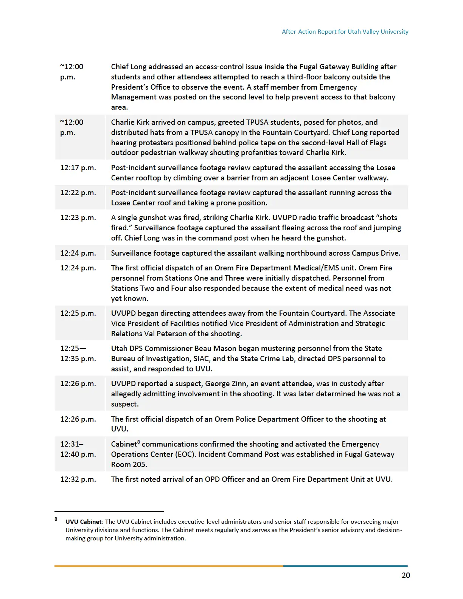
~12:00p.m.~12:00p.m.12:17 p.m.12:22 p.m.12:23 p.m.12:24 p.m.12:24 p.m.12:25 p.m.12:25—12:35 p.m.12:26 p.m.12:26 p.m.12:31-12:40 p.m.12:32 p.m.After-Action Report for Utah Valley UniversityChief Long addressed an access-control issue inside the Fugal Gateway Building afterstudents and other attendees attempted to reach a third-floor balcony outside thePresident’s Office to observe the event. A staff member from EmergencyManagement was posted on the second level to help prevent access to that balconyarea.Charlie Kirk arrived on campus, greeted TPUSA students, posed for photos, anddistributed hats from a TPUSA canopy in the Fountain Courtyard. Chief Long reportedhearing protesters positioned behind police tape on the second-level Hall of Flagsoutdoor pedestrian walkway shouting profanities toward Charlie Kirk.Post-incident surveillance footage review captured the assailant accessing the LoseeCenter rooftop by climbing over a barrier from an adjacent Losee Center walkway.Post-incident surveillance footage review captured the assailant running across theLosee Center roof and taking a prone position.Asingle gunshot was fired, striking Charlie Kirk. UVUPD radio traffic broadcast “shotsfired.” Surveillance footage captured the assailant fleeing across the roof and jumpingoff. Chief Long was in the command post when he heard the gunshot.Surveillance footage captured the assailant walking northbound across Campus Drive.The first official dispatch of an Orem Fire Department Medical/EMS unit. Orem Firepersonnel from Stations One and Three were initially dispatched. Personnel fromStations Two and Four also responded because the extent of medical need was notyet known.UVUPD began directing attendees away from the Fountain Courtyard. The AssociateVice President of Facilities notified Vice President of Administration and StrategicRelations Val Peterson of the shooting.Utah DPS Commissioner Beau Mason began mustering personnel from the StateBureau of Investigation, SIAC, and the State Crime Lab, directed DPS personnel toassist, and responded to UVU.UVUPD reported a suspect, George Zinn, an event attendee, was in custody afterallegedly admitting involvement in the shooting. It was later determined he was not asuspect.The first official dispatch of an Orem Police Department Officer to the shooting atUVU.Cabinet® communications confirmed the shooting and activated the EmergencyOperations Center (EOC). Incident Command Post was established in Fugal GatewayRoom 205.The first noted arrival of an OPD Officer and an Orem Fire Department Unit at UVU.UVU Cabinet: The UVU Cabinet includes executive-level administrators and senior staff responsible for overseeing majorUniversity divisions and functions. The Cabinet meets regularly and serves as the President’s senior advisory and decision-making group for University administration.20
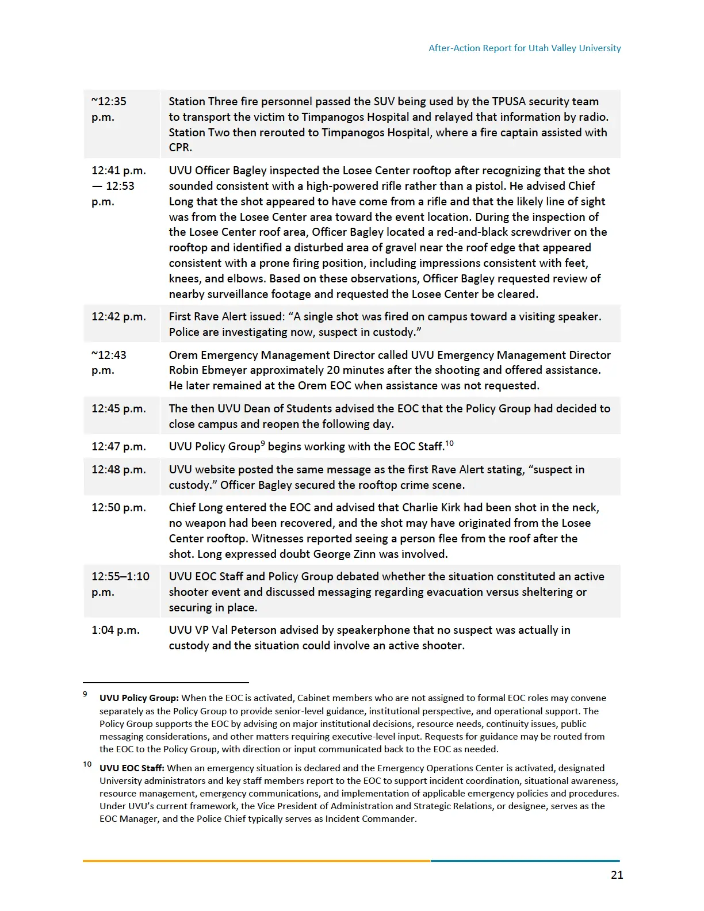
10™12:35p.m.12:41 p.m.— 12:53p.m.12:42 p.m.~12:43p.m.12:45 p.m.12:47 p.m.12:48 p.m.12:50 p.m.12:55-1:10p.m.1:04 p.m.After-Action Report for Utah Valley UniversityStation Three fire personnel passed the SUV being used by the TPUSA security teamto transport the victim to Timpanogos Hospital and relayed that information by radio.Station Two then rerouted to Timpanogos Hospital, where a fire captain assisted withCPR.UVU Officer Bagley inspected the Losee Center rooftop after recognizing that the shotsounded consistent with a high-powered rifle rather than a pistol. He advised ChiefLong that the shot appeared to have come from a rifle and that the likely line of sightwas from the Losee Center area toward the event location. During the inspection ofthe Losee Center roof area, Officer Bagley located a red-and-black screwdriver on therooftop and identified a disturbed area of gravel near the roof edge that appearedconsistent with a prone firing position, including impressions consistent with feet,knees, and elbows. Based on these observations, Officer Bagley requested review ofnearby surveillance footage and requested the Losee Center be cleared.First Rave Alert issued: “A single shot was fired on campus toward a visiting speaker.Police are investigating now, suspect in custody.”Orem Emergency Management Director called UVU Emergency Management DirectorRobin Ebmeyer approximately 20 minutes after the shooting and offered assistance.He later remained at the Orem EOC when assistance was not requested.The then UVU Dean of Students advised the EOC that the Policy Group had decided toclose campus and reopen the following day.UVU Policy Group® begins working with the EOC Staff.'°UVU website posted the same message as the first Rave Alert stating, “suspect incustody.” Officer Bagley secured the rooftop crime scene.Chief Long entered the EOC and advised that Charlie Kirk had been shot in the neck,no weapon had been recovered, and the shot may have originated from the LoseeCenter rooftop. Witnesses reported seeing a person flee from the roof after theshot. Long expressed doubt George Zinn was involved.UVU EOC Staff and Policy Group debated whether the situation constituted an activeshooter event and discussed messaging regarding evacuation versus sheltering orsecuring in place.UVU VP Val Peterson advised by speakerphone that no suspect was actually incustody and the situation could involve an active shooter.UVU Policy Group: When the EOC is activated, Cabinet members who are not assigned to formal EOC roles may conveneseparately as the Policy Group to provide senior-level guidance, institutional perspective, and operational support. ThePolicy Group supports the EOC by advising on major institutional decisions, resource needs, continuity issues, publicmessaging considerations, and other matters requiring executive-level input. Requests for guidance may be routed fromthe EOC to the Policy Group, with direction or input communicated back to the EOC as needed.UVU EOC Staff: When an emergency situation is declared and the Emergency Operations Center is activated, designatedUniversity administrators and key staff members report to the EOC to support incident coordination, situational awareness,resource management, emergency communications, and implementation of applicable emergency policies and procedures.Under UVU’s current framework, the Vice President of Administration and Strategic Relations, or designee, serves as theEOC Manager, and the Police Chief typically serves as Incident Commander.21
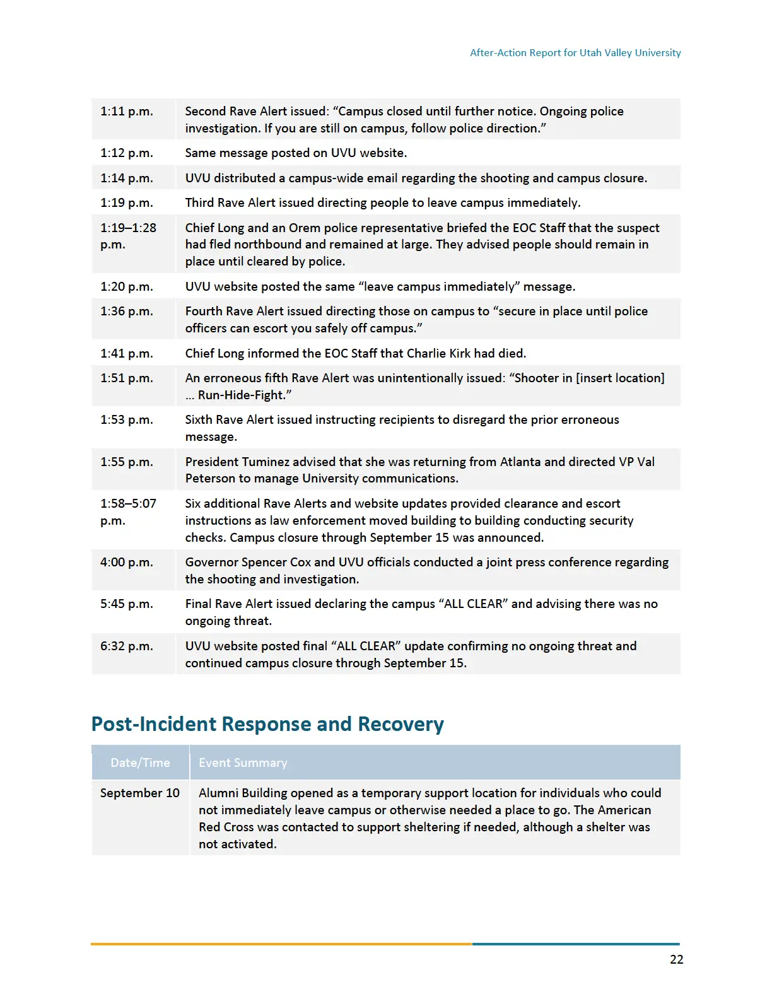
1:11 p.m.1:12 p.m.1:14 p.m.1:19 p.m.1:19-1:28p.m.1:20 p.m.1:36 p.m.1:41 p.m.1:51 p.m.1:53 p.m.1:55 p.m.1:58-5:07p.m.4:00 p.m.5:45 p.m.6:32 p.m.After-Action Report for Utah Valley UniversitySecond Rave Alert issued: “Campus closed until further notice. Ongoing policeinvestigation. If you are still on campus, follow police direction.”Same message posted on UVU website.UVU distributed a campus-wide email regarding the shooting and campus closure.Third Rave Alert issued directing people to leave campus immediately.Chief Long and an Orem police representative briefed the EOC Staff that the suspecthad fled northbound and remained at large. They advised people should remain inplace until cleared by police.UVU website posted the same “leave campus immediately” message.Fourth Rave Alert issued directing those on campus to “secure in place until policeofficers can escort you safely off campus.”Chief Long informed the EOC Staff that Charlie Kirk had died.An erroneous fifth Rave Alert was unintentionally issued: “Shooter in [insert location]... Run-Hide-Fight.”Sixth Rave Alert issued instructing recipients to disregard the prior erroneousmessage.President Tuminez advised that she was returning from Atlanta and directed VP ValPeterson to manage University communications.Six additional Rave Alerts and website updates provided clearance and escortinstructions as law enforcement moved building to building conducting securitychecks. Campus closure through September 15 was announced.Governor Spencer Cox and UVU officials conducted a joint press conference regardingthe shooting and investigation.Final Rave Alert issued declaring the campus “ALL CLEAR” and advising there was noongoing threat.UVU website posted final “ALL CLEAR” update confirming no ongoing threat andcontinued campus closure through September 15.Post-Incident Response and RecoverySeptember 10Alumni Building opened as a temporary support location for individuals who couldnot immediately leave campus or otherwise needed a place to go. The AmericanRed Cross was contacted to support sheltering if needed, although a shelter wasnot activated.22
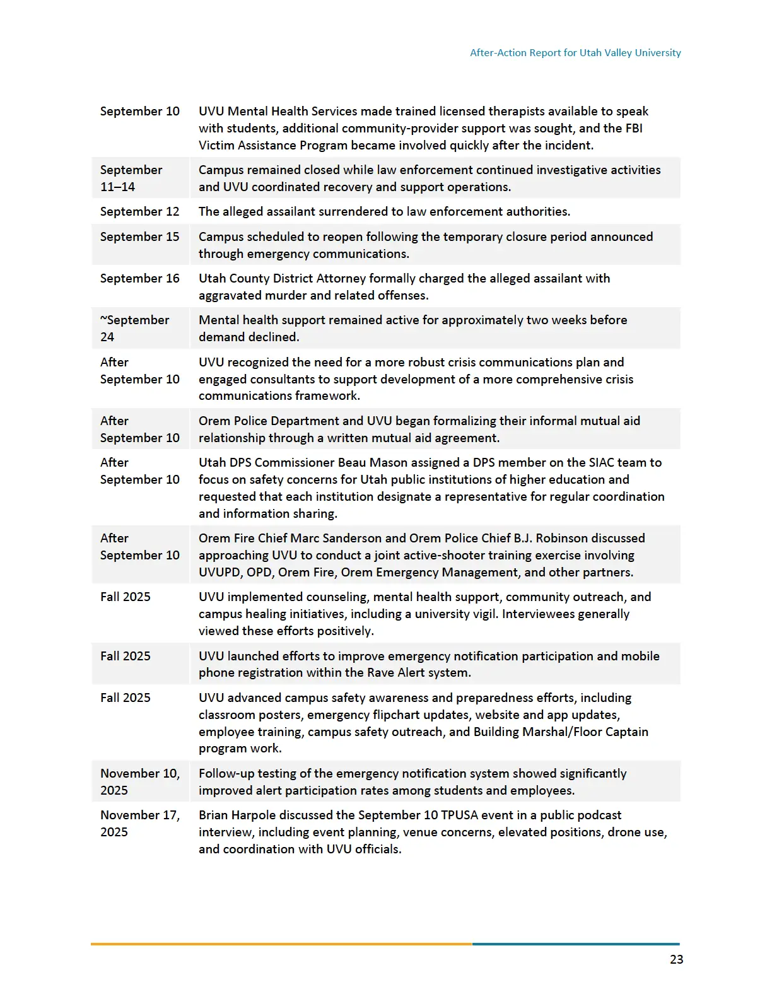
September 10September11-14September 12September 15September 16~September24AfterSeptember 10AfterSeptember 10AfterSeptember 10AfterSeptember 10Fall 2025Fall 2025Fall 2025November 10,2025November 17,2025After-Action Report for Utah Valley UniversityUVU Mental Health Services made trained licensed therapists available to speakwith students, additional community-provider support was sought, and the FBIVictim Assistance Program became involved quickly after the incident.Campus remained closed while law enforcement continued investigative activitiesand UVU coordinated recovery and support operations.The alleged assailant surrendered to law enforcement authorities.Campus scheduled to reopen following the temporary closure period announcedthrough emergency communications.Utah County District Attorney formally charged the alleged assailant withaggravated murder and related offenses.Mental health support remained active for approximately two weeks beforedemand declined.UVU recognized the need for a more robust crisis communications plan andengaged consultants to support development of a more comprehensive crisiscommunications framework.Orem Police Department and UVU began formalizing their informal mutual aidrelationship through a written mutual aid agreement.Utah DPS Commissioner Beau Mason assigned a DPS member on the SIAC team tofocus on safety concerns for Utah public institutions of higher education andrequested that each institution designate a representative for regular coordinationand information sharing.Orem Fire Chief Marc Sanderson and Orem Police Chief B.J. Robinson discussedapproaching UVU to conduct a joint active-shooter training exercise involvingUVUPD, OPD, Orem Fire, Orem Emergency Management, and other partners.UVU implemented counseling, mental health support, community outreach, andcampus healing initiatives, including a university vigil. Interviewees generallyviewed these efforts positively.UVU launched efforts to improve emergency notification participation and mobilephone registration within the Rave Alert system.UVU advanced campus safety awareness and preparedness efforts, includingclassroom posters, emergency flipchart updates, website and app updates,employee training, campus safety outreach, and Building Marshal/Floor Captainprogram work.Follow-up testing of the emergency notification system showed significantlyimproved alert participation rates among students and employees.Brian Harpole discussed the September 10 TPUSA event in a public podcastinterview, including event planning, venue concerns, elevated positions, drone use,and coordination with UVU officials.23
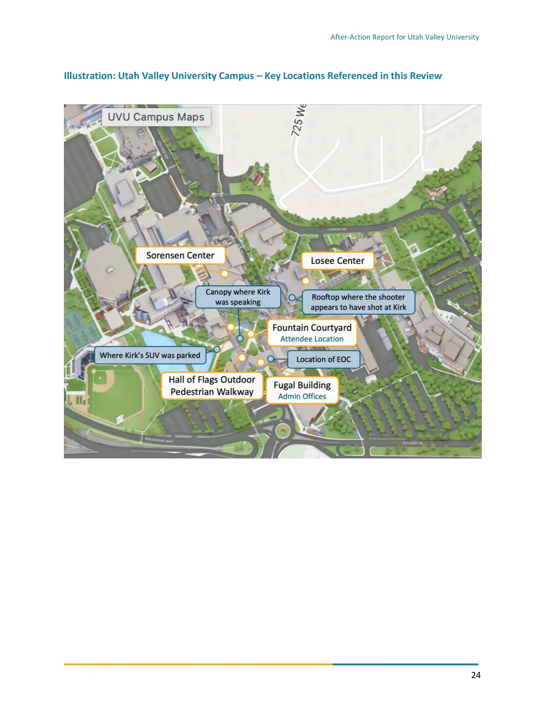
After-Action Report for Utah Valley University24Illustration: Utah Valley University Campus – Key Locations Referenced in this Review
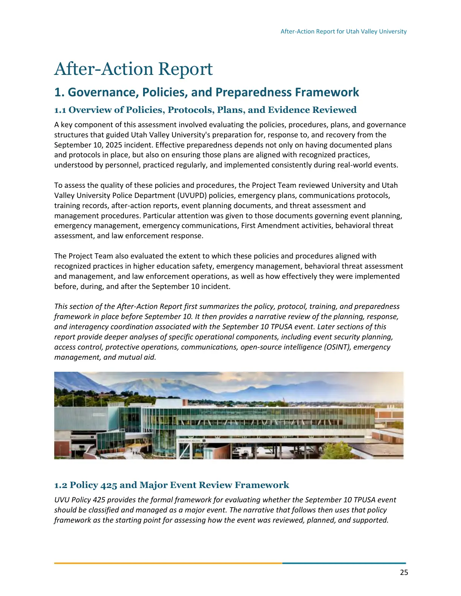
After-Action Report for Utah Valley University25After-Action Report1. Governance, Policies, and Preparedness Framework1.1 Overview of Policies, Protocols, Plans, and Evidence ReviewedA key component of this assessment involved evaluating the policies, procedures, plans, and governancestructures that guided Utah Valley University's preparation for, response to, and recovery from theSeptember 10, 2025 incident. Effective preparedness depends not only on having documented plansand protocols in place, but also on ensuring those plans are aligned with recognized practices,understood by personnel, practiced regularly, and implemented consistently during real-world events.To assess the quality of these policies and procedures, the Project Team reviewed University and UtahValley University Police Department (UVUPD) policies, emergency plans, communications protocols,training records, after-action reports, event planning documents, and threat assessment andmanagement procedures. Particular attention was given to those documents governing event planning,emergency management, emergency communications, First Amendment activities, behavioral threatassessment, and law enforcement response.The Project Team also evaluated the extent to which these policies and procedures aligned withrecognized practices in higher education safety, emergency management, behavioral threat assessmentand management, and law enforcement operations, as well as how effectively they were implementedbefore, during, and after the September 10 incident.This section of the After-Action Report first summarizes the policy, protocol, training, and preparednessframework in place before September 10. It then provides a narrative review of the planning, response,and interagency coordination associated with the September 10 TPUSA event. Later sections of thisreport provide deeper analyses of specific operational components, including event security planning,access control, protective operations, communications, open-source intelligence (OSINT), emergencymanagement, and mutual aid.1.2 Policy 425 and Major Event Review FrameworkUVU Policy 425 provides the formal framework for evaluating whether the September 10 TPUSA eventshould be classified and managed as a major event. The narrative that follows then uses that policyframework as the starting point for assessing how the event was reviewed, planned, and supported.
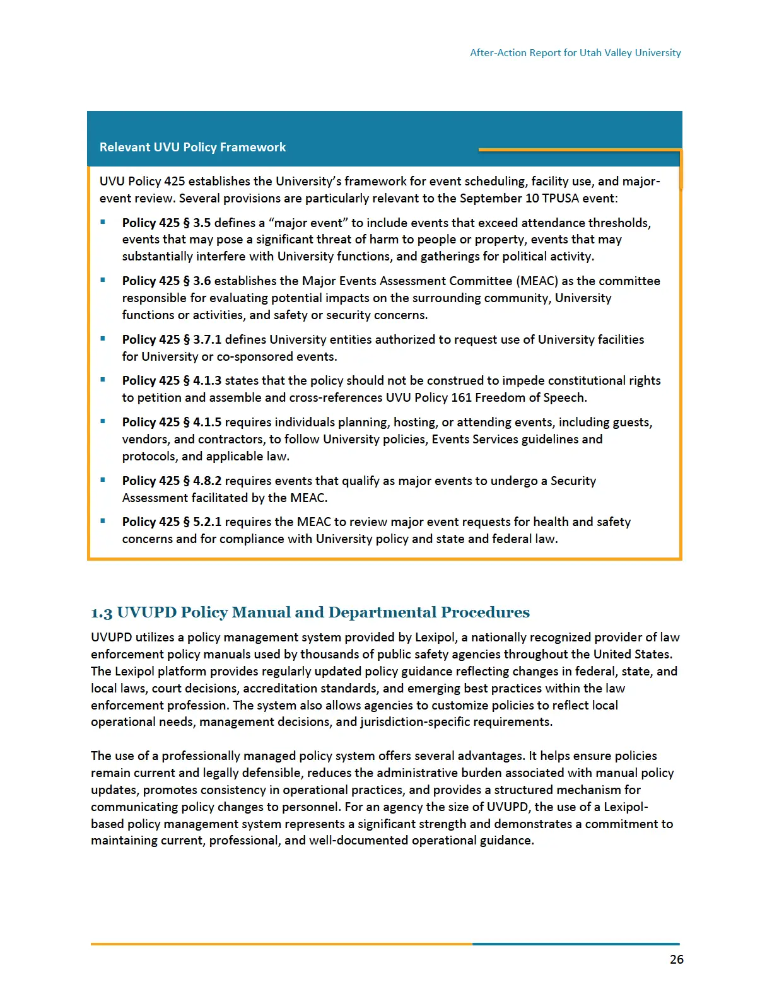
After-Action Report for Utah Valley UniversityRelevant UVU Policy FrameworkUVU Policy 425 establishes the University’s framework for event scheduling, facility use, and major-event review. Several provisions are particularly relevant to the September 10 TPUSA event:= Policy 425 § 3.5 defines a “major event” to include events that exceed attendance thresholds,events that may pose a significant threat of harm to people or property, events that maysubstantially interfere with University functions, and gatherings for political activity.Policy 425 § 3.6 establishes the Major Events Assessment Committee (MEAC) as the committeeresponsible for evaluating potential impacts on the surrounding community, Universityfunctions or activities, and safety or security concerns.Policy 425 § 3.7.1 defines University entities authorized to request use of University facilitiesfor University or co-sponsored events.Policy 425 § 4.1.3 states that the policy should not be construed to impede constitutional rightsto petition and assemble and cross-references UVU Policy 161 Freedom of Speech.Policy 425 § 4.1.5 requires individuals planning, hosting, or attending events, including guests,vendors, and contractors, to follow University policies, Events Services guidelines andprotocols, and applicable law.Policy 425 § 4.8.2 requires events that qualify as major events to undergo a SecurityAssessment facilitated by the MEAC.Policy 425 § 5.2.1 requires the MEAC to review major event requests for health and safetyconcerns and for compliance with University policy and state and federal law.1.3 UVUPD Policy Manual and Departmental ProceduresUVUPD utilizes a policy management system provided by Lexipol, a nationally recognized provider of lawenforcement policy manuals used by thousands of public safety agencies throughout the United States.The Lexipol platform provides regularly updated policy guidance reflecting changes in federal, state, andlocal laws, court decisions, accreditation standards, and emerging best practices within the lawenforcement profession. The system also allows agencies to customize policies to reflect localoperational needs, management decisions, and jurisdiction-specific requirements.The use of a professionally managed policy system offers several advantages. It helps ensure policiesremain current and legally defensible, reduces the administrative burden associated with manual policyupdates, promotes consistency in operational practices, and provides a structured mechanism forcommunicating policy changes to personnel. For an agency the size of UVUPD, the use of a Lexipol-based policy management system represents a significant strength and demonstrates a commitment tomaintaining current, professional, and well-documented operational guidance.26
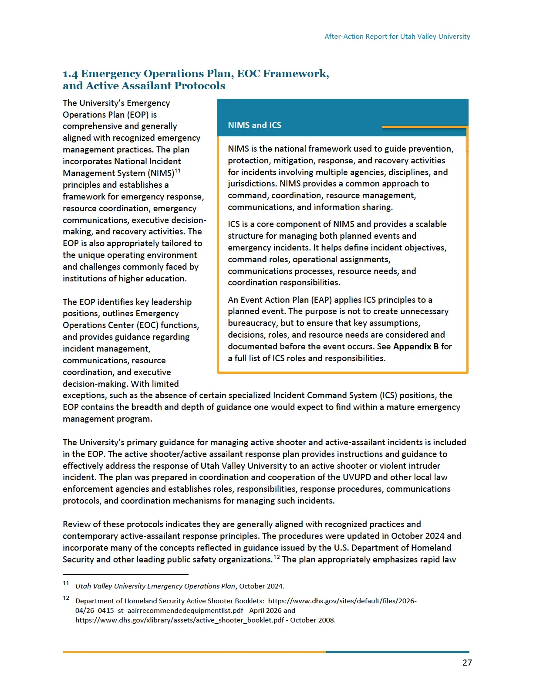
After-Action Report for Utah Valley University1.4 Emergency Operations Plan, EOC Framework,and Active Assailant ProtocolsThe University’s EmergencyOperations Plan (EOP) iscomprehensive and generallyaligned with recognized emergencymanagement practices. The planincorporates National IncidentManagement System (NIMS)"'principles and establishes aframework for emergency response,resource coordination, emergencycommunications, executive decision-making, and recovery activities. TheEOP is also appropriately tailored tothe unique operating environmentand challenges commonly faced byinstitutions of higher education.The EOP identifies key leadershippositions, outlines EmergencyOperations Center (EOC) functions,and provides guidance regardingincident management,communications, resourcecoordination, and executivedecision-making. With limitedNIMS and ICSNIMS is the national framework used to guide prevention,protection, mitigation, response, and recovery activitiesfor incidents involving multiple agencies, disciplines, andjurisdictions. NIMS provides a common approach tocommand, coordination, resource management,communications, and information sharing.ICS is a core component of NIMS and provides a scalablestructure for managing both planned events andemergency incidents. It helps define incident objectives,command roles, operational assignments,communications processes, resource needs, andcoordination responsibilities.An Event Action Plan (EAP) applies ICS principles to aplanned event. The purpose is not to create unnecessarybureaucracy, but to ensure that key assumptions,decisions, roles, and resource needs are considered anddocumented before the event occurs. See Appendix B fora full list of ICS roles and responsibilities.exceptions, such as the absence of certain specialized Incident Command System (ICS) positions, theEOP contains the breadth and depth of guidance one would expect to find within a mature emergencymanagement program.The University’s primary guidance for managing active shooter and active-assailant incidents is includedin the EOP. The active shooter/active assailant response plan provides instructions and guidance toeffectively address the response of Utah Valley University to an active shooter or violent intruderincident. The plan was prepared in coordination and cooperation of the UVUPD and other local lawenforcement agencies and establishes roles, responsibilities, response procedures, communicationsprotocols, and coordination mechanisms for managing such incidents.Review of these protocols indicates they are generally aligned with recognized practices andcontemporary active-assailant response principles. The procedures were updated in October 2024 andincorporate many of the concepts reflected in guidance issued by the U.S. Department of HomelandSecurity and other leading public safety organizations. '* The plan appropriately emphasizes rapid law1112Utah Valley University Emergency Operations Plan, October 2024.Department of Homeland Security Active Shooter Booklets: https://www.dhs.gov/sites/default/files/2026-04/26_0415_st_aairrecommendedequipmentiist.pdf - April 2026 andhttps://www.dhs.gov/xlibrary/assets/active_shooter_booklet.pdf - October 2008.27
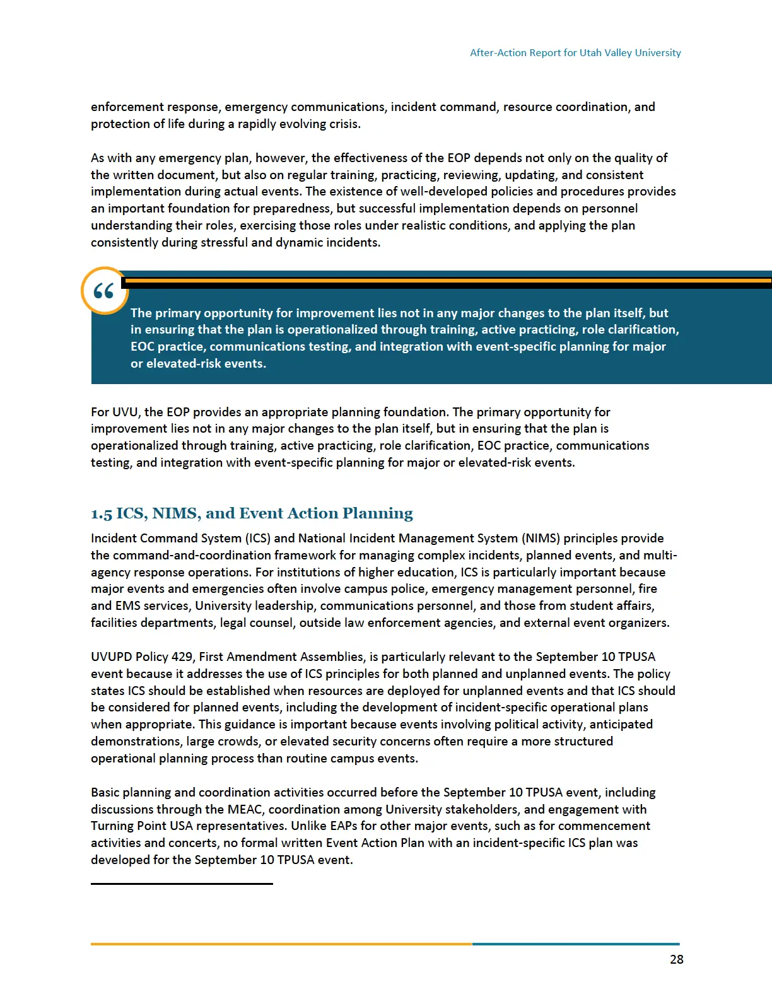
After-Action Report for Utah Valley Universityenforcement response, emergency communications, incident command, resource coordination, andprotection of life during a rapidly evolving crisis.As with any emergency plan, however, the effectiveness of the EOP depends not only on the quality ofthe written document, but also on regular training, practicing, reviewing, updating, and consistentimplementation during actual events. The existence of well-developed policies and procedures providesan important foundation for preparedness, but successful implementation depends on personnelunderstanding their roles, exercising those roles under realistic conditions, and applying the planconsistently during stressful and dynamic incidents.The primary opportunity for improvement lies not in any major changes to the plan itself, butin ensuring that the plan is operationalized through training, active practicing, role clarification,EOC practice, communications testing, and integration with event-specific planning for majoror elevated-risk events.For UVU, the EOP provides an appropriate planning foundation. The primary opportunity forimprovement lies not in any major changes to the plan itself, but in ensuring that the plan isoperationalized through training, active practicing, role clarification, EOC practice, communicationstesting, and integration with event-specific planning for major or elevated-risk events.1.5 ICS, NIMS, and Event Action PlanningIncident Command System (ICS) and National Incident Management System (NIMS) principles providethe command-and-coordination framework for managing complex incidents, planned events, and multi-agency response operations. For institutions of higher education, ICS is particularly important becausemajor events and emergencies often involve campus police, emergency management personnel, fireand EMS services, University leadership, communications personnel, and those from student affairs,facilities departments, legal counsel, outside law enforcement agencies, and external event organizers.UVUPD Policy 429, First Amendment Assemblies, is particularly relevant to the September 10 TPUSAevent because it addresses the use of ICS principles for both planned and unplanned events. The policystates ICS should be established when resources are deployed for unplanned events and that ICS shouldbe considered for planned events, including the development of incident-specific operational planswhen appropriate. This guidance is important because events involving political activity, anticipateddemonstrations, large crowds, or elevated security concerns often require a more structuredoperational planning process than routine campus events.Basic planning and coordination activities occurred before the September 10 TPUSA event, includingdiscussions through the MEAC, coordination among University stakeholders, and engagement withTurning Point USA representatives. Unlike EAPs for other major events, such as for commencementactivities and concerts, no formal written Event Action Plan with an incident-specific ICS plan wasdeveloped for the September 10 TPUSA event.28
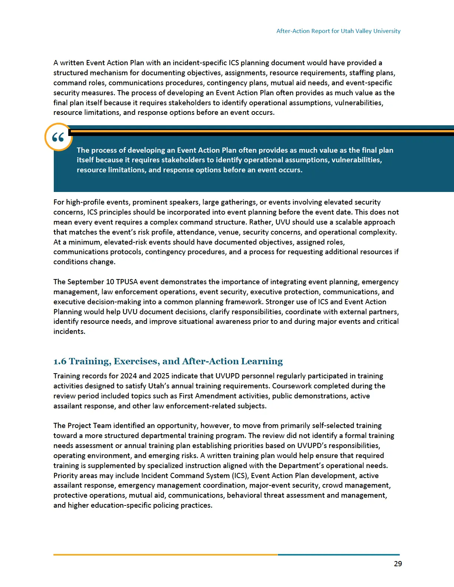
After-Action Report for Utah Valley UniversityA written Event Action Plan with an incident-specific ICS planning document would have provided astructured mechanism for documenting objectives, assignments, resource requirements, staffing plans,command roles, communications procedures, contingency plans, mutual aid needs, and event-specificsecurity measures. The process of developing an Event Action Plan often provides as much value as thefinal plan itself because it requires stakeholders to identify operational assumptions, vulnerabilities,resource limitations, and response options before an event occurs.The process of developing an Event Action Plan often provides as much value as the final planitself because it requires stakeholders to identify operational assumptions, vulnerabilities,resource limitations, and response options before an event occurs.For high-profile events, prominent speakers, large gatherings, or events involving elevated securityconcerns, ICS principles should be incorporated into event planning before the event date. This does notmean every event requires a complex command structure. Rather, UVU should use a scalable approachthat matches the event’s risk profile, attendance, venue, security concerns, and operational complexity.At a minimum, elevated-risk events should have documented objectives, assigned roles,communications protocols, contingency procedures, and a process for requesting additional resources ifconditions change.The September 10 TPUSA event demonstrates the importance of integrating event planning, emergencymanagement, law enforcement operations, event security, executive protection, communications, andexecutive decision-making into a common planning framework. Stronger use of ICS and Event ActionPlanning would help UVU document decisions, clarify responsibilities, coordinate with external partners,identify resource needs, and improve situational awareness prior to and during major events and criticalincidents.1.6 Training, Exercises, and After-Action LearningTraining records for 2024 and 2025 indicate that UVUPD personnel regularly participated in trainingactivities designed to satisfy Utah’s annual training requirements. Coursework completed during thereview period included topics such as First Amendment activities, public demonstrations, activeassailant response, and other law enforcement-related subjects.The Project Team identified an opportunity, however, to move from primarily self-selected trainingtoward a more structured departmental training program. The review did not identify a formal trainingneeds assessment or annual training plan establishing priorities based on UVUPD’s responsibilities,operating environment, and emerging risks. A written training plan would help ensure that requiredtraining is supplemented by specialized instruction aligned with the Department’s operational needs.Priority areas may include Incident Command System (ICS), Event Action Plan development, activeassailant response, emergency management coordination, major-event security, crowd management,protective operations, mutual aid, communications, behavioral threat assessment and management,and higher education-specific policing practices.29
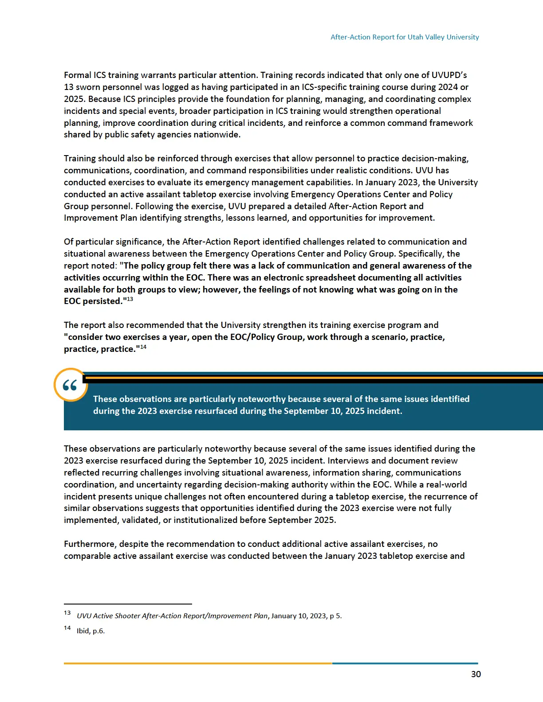
After-Action Report for Utah Valley UniversityFormal ICS training warrants particular attention. Training records indicated that only one of UVUPD’s13 sworn personnel was logged as having participated in an ICS-specific training course during 2024 or2025. Because ICS principles provide the foundation for planning, managing, and coordinating complexincidents and special events, broader participation in ICS training would strengthen operationalplanning, improve coordination during critical incidents, and reinforce a common command frameworkshared by public safety agencies nationwide.Training should also be reinforced through exercises that allow personnel to practice decision-making,communications, coordination, and command responsibilities under realistic conditions. UVU hasconducted exercises to evaluate its emergency management capabilities. In January 2023, the Universityconducted an active assailant tabletop exercise involving Emergency Operations Center and PolicyGroup personnel. Following the exercise, UVU prepared a detailed After-Action Report andImprovement Plan identifying strengths, lessons learned, and opportunities for improvement.Of particular significance, the After-Action Report identified challenges related to communication andsituational awareness between the Emergency Operations Center and Policy Group. Specifically, thereport noted: "The policy group felt there was a lack of communication and general awareness of theactivities occurring within the EOC. There was an electronic spreadsheet documenting all activitiesavailable for both groups to view; however, the feelings of not knowing what was going on in theEOC persisted."?The report also recommended that the University strengthen its training exercise program and"consider two exercises a year, open the EOC/Policy Group, work through a scenario, practice,practice, practice."*These observations are particularly noteworthy because several of the same issues identifiedduring the 2023 exercise resurfaced during the September 10, 2025 incident.These observations are particularly noteworthy because several of the same issues identified during the2023 exercise resurfaced during the September 10, 2025 incident. Interviews and document reviewreflected recurring challenges involving situational awareness, information sharing, communicationscoordination, and uncertainty regarding decision-making authority within the EOC. While a real-worldincident presents unique challenges not often encountered during a tabletop exercise, the recurrence ofsimilar observations suggests that opportunities identified during the 2023 exercise were not fullyimplemented, validated, or institutionalized before September 2025.Furthermore, despite the recommendation to conduct additional active assailant exercises, nocomparable active assailant exercise was conducted between the January 2023 tabletop exercise and13 UVvU Active Shooter After-Action Report/Improvement Plan, January 10, 2023, p 5.14 Ibid, p.6.30
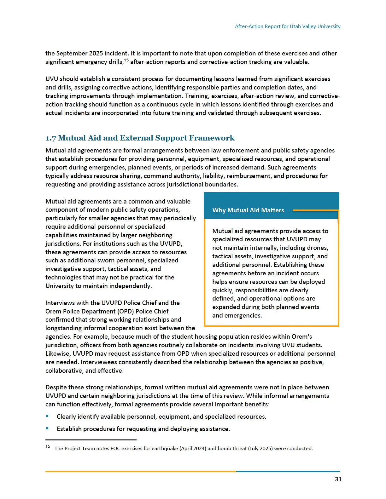
After-Action Report for Utah Valley Universitythe September 2025 incident. It is important to note that upon completion of these exercises and othersignificant emergency drills,'° after-action reports and corrective-action tracking are valuable.UVU should establish a consistent process for documenting lessons learned from significant exercisesand drills, assigning corrective actions, identifying responsible parties and completion dates, andtracking improvements through implementation. Training, exercises, after-action review, and corrective-action tracking should function as a continuous cycle in which lessons identified through exercises andactual incidents are incorporated into future training and validated through subsequent exercises.1.7 Mutual Aid and External Support FrameworkMutual aid agreements are formal arrangements between law enforcement and public safety agenciesthat establish procedures for providing personnel, equipment, specialized resources, and operationalsupport during emergencies, planned events, or periods of increased demand. Such agreementstypically address resource sharing, command authority, liability, reimbursement, and procedures forrequesting and providing assistance across jurisdictional boundaries.Mutual aid agreements are a common and valuablecomponent of modern public safety operations, Why Mutual Aid Mattersparticularly for smaller agencies that may periodicallyrequire additional personnel or specializedcapabilities maintained by larger neighboringjurisdictions. For institutions such as the UVUPD,these agreements can provide access to resourcessuch as additional sworn personnel, specializedinvestigative support, tactical assets, andtechnologies that may not be practical for theUniversity to maintain independently.Mutual aid agreements provide access tospecialized resources that UVUPD maynot maintain internally, including drones,tactical assets, investigative support, andadditional personnel. Establishing theseagreements before an incident occurshelps ensure resources can be deployedquickly, responsibilities are clearlydefined, and operational options areexpanded during both planned eventsand emergencies.Interviews with the UVUPD Police Chief and theOrem Police Department (OPD) Police Chiefconfirmed that strong working relationships andlongstanding informal cooperation exist between theagencies. For example, because much of the student housing population resides within Orem'sjurisdiction, officers from both agencies routinely collaborate on incidents involving UVU students.Likewise, UVUPD may request assistance from OPD when specialized resources or additional personnelare needed. Interviewees consistently described the relationship between the agencies as positive,collaborative, and effective.Despite these strong relationships, formal written mutual aid agreements were not in place betweenUVUPD and certain neighboring jurisdictions at the time of this review. While informal arrangementscan function effectively, formal agreements provide several important benefits:= Clearly identify available personnel, equipment, and specialized resources.= Establish procedures for requesting and deploying assistance.15 The Project Team notes EOC exercises for earthquake (April 2024) and bomb threat (July 2025) were conducted.31
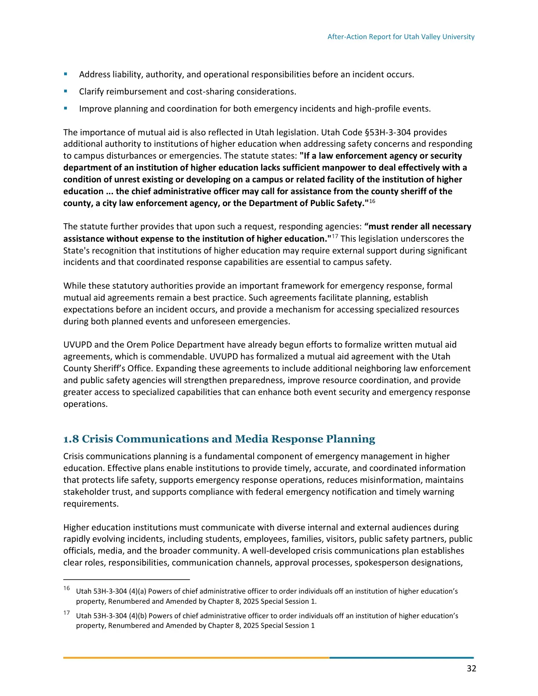
After-Action Report for Utah Valley University32▪Address liability, authority, and operational responsibilities before an incident occurs.▪Clarify reimbursement and cost-sharing considerations.▪Improve planning and coordination for both emergency incidents and high-profile events.The importance of mutual aid is also reflected in Utah legislation. Utah Code §53H-3-304 providesadditional authority to institutions of higher education when addressing safety concerns and respondingto campus disturbances or emergencies. The statute states: "If a law enforcement agency or securitydepartment of an institution of higher education lacks sufficient manpower to deal effectively with acondition of unrest existing or developing on a campus or related facility of the institution of highereducation ... the chief administrative officer may call for assistance from the county sheriff of thecounty, a city law enforcement agency, or the Department of Public Safety."16The statute further provides that upon such a request, responding agencies: “must render all necessaryassistance without expense to the institution of higher education."17 This legislation underscores theState's recognition that institutions of higher education may require external support during significantincidents and that coordinated response capabilities are essential to campus safety.While these statutory authorities provide an important framework for emergency response, formalmutual aid agreements remain a best practice. Such agreements facilitate planning, establishexpectations before an incident occurs, and provide a mechanism for accessing specialized resourcesduring both planned events and unforeseen emergencies.UVUPD and the Orem Police Department have already begun efforts to formalize written mutual aidagreements, which is commendable. UVUPD has formalized a mutual aid agreement with the UtahCounty Sheriff’s Office. Expanding these agreements to include additional neighboring law enforcementand public safety agencies will strengthen preparedness, improve resource coordination, and providegreater access to specialized capabilities that can enhance both event security and emergency responseoperations.1.8 Crisis Communications and Media Response PlanningCrisis communications planning is a fundamental component of emergency management in highereducation. Effective plans enable institutions to provide timely, accurate, and coordinated informationthat protects life safety, supports emergency response operations, reduces misinformation, maintainsstakeholder trust, and supports compliance with federal emergency notification and timely warningrequirements.Higher education institutions must communicate with diverse internal and external audiences duringrapidly evolving incidents, including students, employees, families, visitors, public safety partners, publicofficials, media, and the broader community. A well-developed crisis communications plan establishesclear roles, responsibilities, communication channels, approval processes, spokesperson designations,16 Utah 53H-3-304 (4)(a) Powers of chief administrative officer to order individuals off an institution of higher education’sproperty, Renumbered and Amended by Chapter 8, 2025 Special Session 1.17 Utah 53H-3-304 (4)(b) Powers of chief administrative officer to order individuals off an institution of higher education’sproperty, Renumbered and Amended by Chapter 8, 2025 Special Session 1
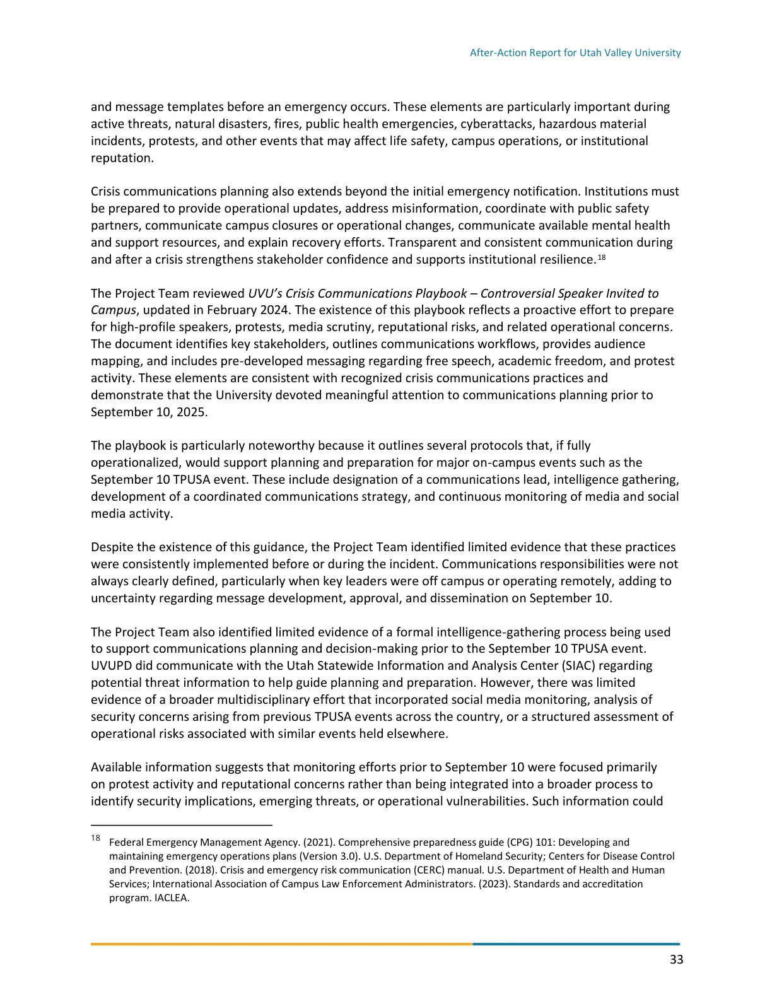
After-Action Report for Utah Valley University33and message templates before an emergency occurs. These elements are particularly important duringactive threats, natural disasters, fires, public health emergencies, cyberattacks, hazardous materialincidents, protests, and other events that may affect life safety, campus operations, or institutionalreputation.Crisis communications planning also extends beyond the initial emergency notification. Institutions mustbe prepared to provide operational updates, address misinformation, coordinate with public safetypartners, communicate campus closures or operational changes, communicate available mental healthand support resources, and explain recovery efforts. Transparent and consistent communication duringand after a crisis strengthens stakeholder confidence and supports institutional resilience.18The Project Team reviewed UVU’s Crisis Communications Playbook – Controversial Speaker Invited toCampus, updated in February 2024. The existence of this playbook reflects a proactive effort to preparefor high-profile speakers, protests, media scrutiny, reputational risks, and related operational concerns.The document identifies key stakeholders, outlines communications workflows, provides audiencemapping, and includes pre-developed messaging regarding free speech, academic freedom, and protestactivity. These elements are consistent with recognized crisis communications practices anddemonstrate that the University devoted meaningful attention to communications planning prior toSeptember 10, 2025.The playbook is particularly noteworthy because it outlines several protocols that, if fullyoperationalized, would support planning and preparation for major on-campus events such as theSeptember 10 TPUSA event. These include designation of a communications lead, intelligence gathering,development of a coordinated communications strategy, and continuous monitoring of media and socialmedia activity.Despite the existence of this guidance, the Project Team identified limited evidence that these practiceswere consistently implemented before or during the incident. Communications responsibilities were notalways clearly defined, particularly when key leaders were off campus or operating remotely, adding touncertainty regarding message development, approval, and dissemination on September 10.The Project Team also identified limited evidence of a formal intelligence-gathering process being usedto support communications planning and decision-making prior to the September 10 TPUSA event.UVUPD did communicate with the Utah Statewide Information and Analysis Center (SIAC) regardingpotential threat information to help guide planning and preparation. However, there was limitedevidence of a broader multidisciplinary effort that incorporated social media monitoring, analysis ofsecurity concerns arising from previous TPUSA events across the country, or a structured assessment ofoperational risks associated with similar events held elsewhere.Available information suggests that monitoring efforts prior to September 10 were focused primarilyon protest activity and reputational concerns rather than being integrated into a broader process toidentify security implications, emerging threats, or operational vulnerabilities. Such information could18 Federal Emergency Management Agency. (2021). Comprehensive preparedness guide (CPG) 101: Developing andmaintaining emergency operations plans (Version 3.0). U.S. Department of Homeland Security; Centers for Disease Controland Prevention. (2018). Crisis and emergency risk communication (CERC) manual. U.S. Department of Health and HumanServices; International Association of Campus Law Enforcement Administrators. (2023). Standards and accreditationprogram. IACLEA.
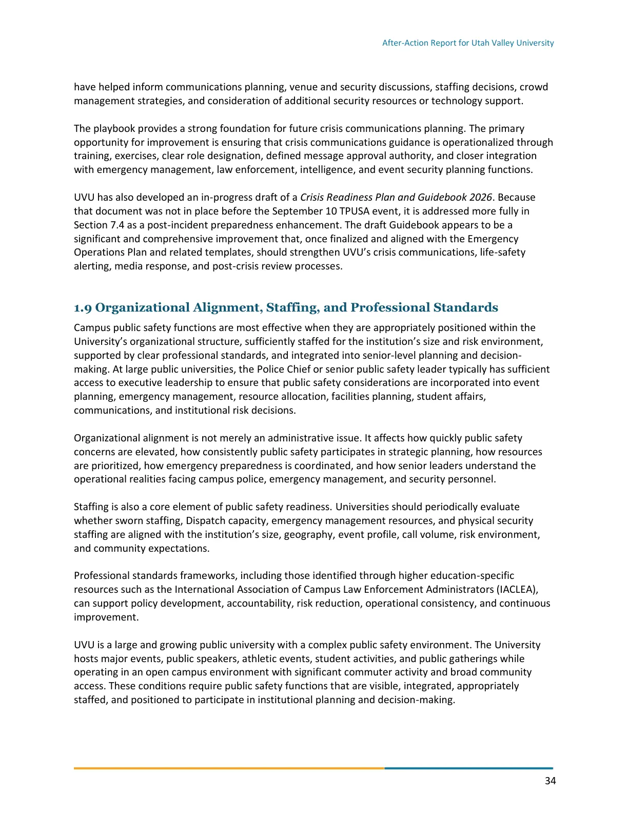
After-Action Report for Utah Valley University34have helped inform communications planning, venue and security discussions, staffing decisions, crowdmanagement strategies, and consideration of additional security resources or technology support.The playbook provides a strong foundation for future crisis communications planning. The primaryopportunity for improvement is ensuring that crisis communications guidance is operationalized throughtraining, exercises, clear role designation, defined message approval authority, and closer integrationwith emergency management, law enforcement, intelligence, and event security planning functions.UVU has also developed an in-progress draft of a Crisis Readiness Plan and Guidebook 2026. Becausethat document was not in place before the September 10 TPUSA event, it is addressed more fully inSection 7.4 as a post-incident preparedness enhancement. The draft Guidebook appears to be asignificant and comprehensive improvement that, once finalized and aligned with the EmergencyOperations Plan and related templates, should strengthen UVU’s crisis communications, life-safetyalerting, media response, and post-crisis review processes.1.9 Organizational Alignment, Staffing, and Professional StandardsCampus public safety functions are most effective when they are appropriately positioned within theUniversity’s organizational structure, sufficiently staffed for the institution’s size and risk environment,supported by clear professional standards, and integrated into senior-level planning and decision-making. At large public universities, the Police Chief or senior public safety leader typically has sufficientaccess to executive leadership to ensure that public safety considerations are incorporated into eventplanning, emergency management, resource allocation, facilities planning, student affairs,communications, and institutional risk decisions.Organizational alignment is not merely an administrative issue. It affects how quickly public safetyconcerns are elevated, how consistently public safety participates in strategic planning, how resourcesare prioritized, how emergency preparedness is coordinated, and how senior leaders understand theoperational realities facing campus police, emergency management, and security personnel.Staffing is also a core element of public safety readiness. Universities should periodically evaluatewhether sworn staffing, Dispatch capacity, emergency management resources, and physical securitystaffing are aligned with the institution’s size, geography, event profile, call volume, risk environment,and community expectations.Professional standards frameworks, including those identified through higher education-specificresources such as the International Association of Campus Law Enforcement Administrators (IACLEA),can support policy development, accountability, risk reduction, operational consistency, and continuousimprovement.UVU is a large and growing public university with a complex public safety environment. The Universityhosts major events, public speakers, athletic events, student activities, and public gatherings whileoperating in an open campus environment with significant commuter activity and broad communityaccess. These conditions require public safety functions that are visible, integrated, appropriatelystaffed, and positioned to participate in institutional planning and decision-making.
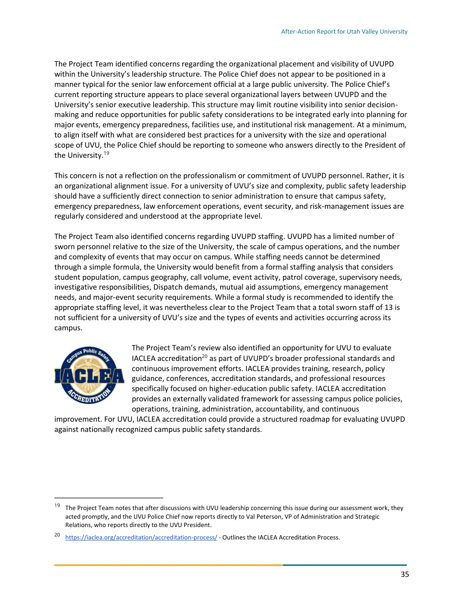
After-Action Report for Utah Valley University35The Project Team identified concerns regarding the organizational placement and visibility of UVUPDwithin the University’s leadership structure. The Police Chief does not appear to be positioned in amanner typical for the senior law enforcement official at a large public university. The Police Chief’scurrent reporting structure appears to place several organizational layers between UVUPD and theUniversity’s senior executive leadership. This structure may limit routine visibility into senior decision-making and reduce opportunities for public safety considerations to be integrated early into planning formajor events, emergency preparedness, facilities use, and institutional risk management. At a minimum,to align itself with what are considered best practices for a university with the size and operationalscope of UVU, the Police Chief should be reporting to someone who answers directly to the President ofthe University.19This concern is not a reflection on the professionalism or commitment of UVUPD personnel. Rather, it isan organizational alignment issue. For a university of UVU’s size and complexity, public safety leadershipshould have a sufficiently direct connection to senior administration to ensure that campus safety,emergency preparedness, law enforcement operations, event security, and risk-management issues areregularly considered and understood at the appropriate level.The Project Team also identified concerns regarding UVUPD staffing. UVUPD has a limited number ofsworn personnel relative to the size of the University, the scale of campus operations, and the numberand complexity of events that may occur on campus. While staffing needs cannot be determinedthrough a simple formula, the University would benefit from a formal staffing analysis that considersstudent population, campus geography, call volume, event activity, patrol coverage, supervisory needs,investigative responsibilities, Dispatch demands, mutual aid assumptions, emergency managementneeds, and major-event security requirements. While a formal study is recommended to identify theappropriate staffing level, it was nevertheless clear to the Project Team that a total sworn staff of 13 isnot sufficient for a university of UVU’s size and the types of events and activities occurring across itscampus.The Project Team’s review also identified an opportunity for UVU to evaluateIACLEA accreditation20 as part of UVUPD’s broader professional standards andcontinuous improvement efforts. IACLEA provides training, research, policyguidance, conferences, accreditation standards, and professional resourcesspecifically focused on higher-education public safety. IACLEA accreditationprovides an externally validated framework for assessing campus police policies,operations, training, administration, accountability, and continuousimprovement. For UVU, IACLEA accreditation could provide a structured roadmap for evaluating UVUPDagainst nationally recognized campus public safety standards.19 The Project Team notes that after discussions with UVU leadership concerning this issue during our assessment work, theyacted promptly, and the UVU Police Chief now reports directly to Val Peterson, VP of Administration and StrategicRelations, who reports directly to the UVU President.20 https://iaclea.org/accreditation/accreditation-process/ - Outlines the IACLEA Accreditation Process.
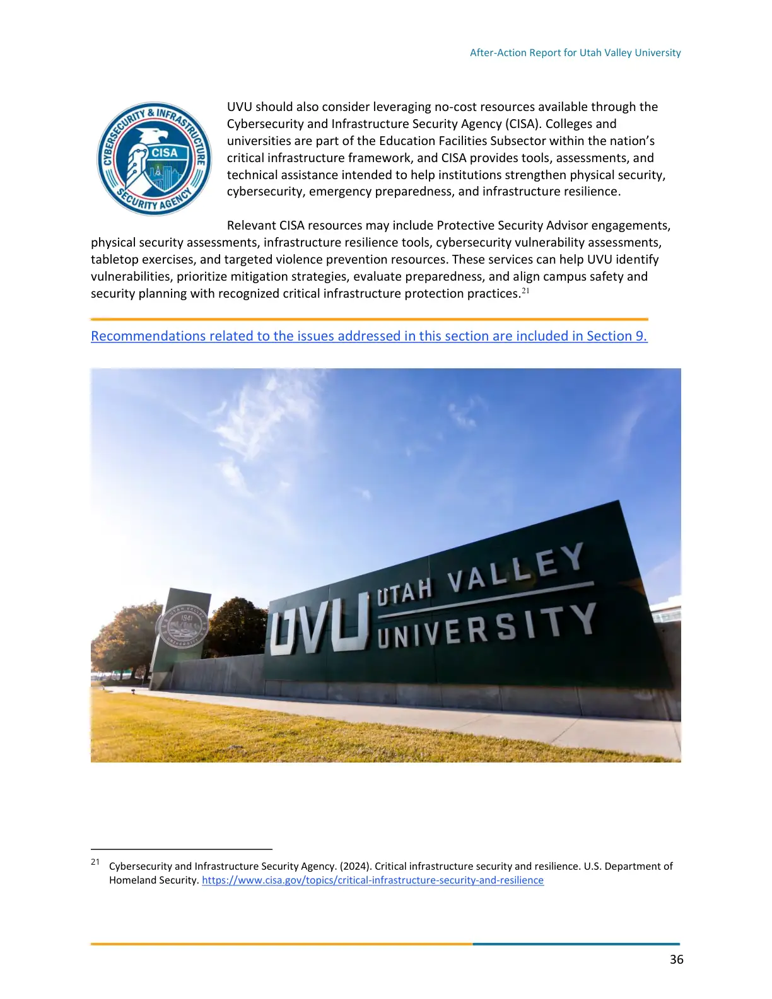
After-Action Report for Utah Valley University36UVU should also consider leveraging no-cost resources available through theCybersecurity and Infrastructure Security Agency (CISA). Colleges anduniversities are part of the Education Facilities Subsector within the nation’scritical infrastructure framework, and CISA provides tools, assessments, andtechnical assistance intended to help institutions strengthen physical security,cybersecurity, emergency preparedness, and infrastructure resilience.Relevant CISA resources may include Protective Security Advisor engagements,physical security assessments, infrastructure resilience tools, cybersecurity vulnerability assessments,tabletop exercises, and targeted violence prevention resources. These services can help UVU identifyvulnerabilities, prioritize mitigation strategies, evaluate preparedness, and align campus safety andsecurity planning with recognized critical infrastructure protection practices.2121 Cybersecurity and Infrastructure Security Agency. (2024). Critical infrastructure security and resilience. U.S. Department ofHomeland Security. https://www.cisa.gov/topics/critical-infrastructure-security-and-resilienceRecommendations related to the issues addressed in this section are included in Section 9.
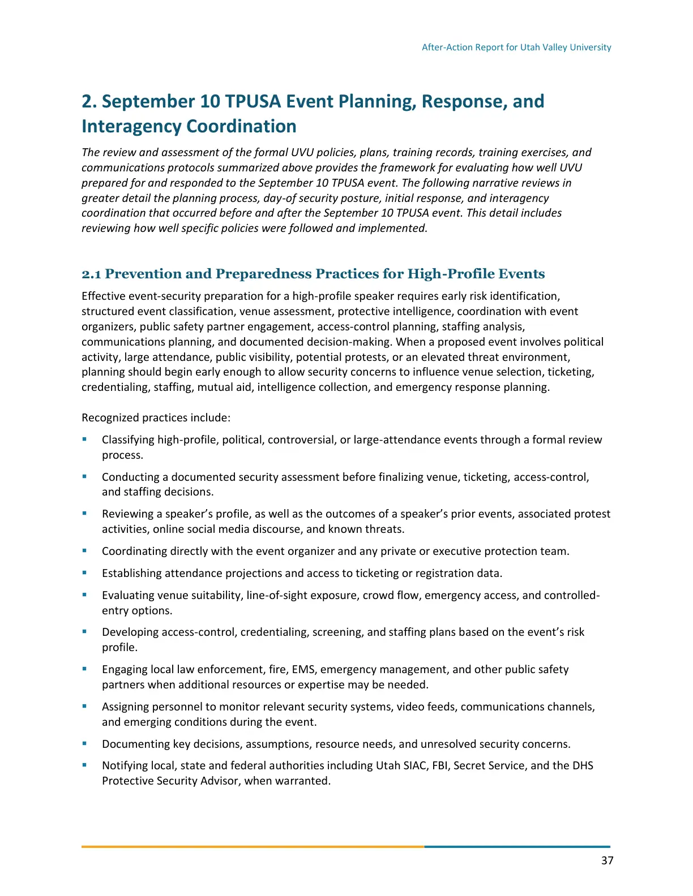
After-Action Report for Utah Valley University372. September 10 TPUSA Event Planning, Response, andInteragency CoordinationThe review and assessment of the formal UVU policies, plans, training records, training exercises, andcommunications protocols summarized above provides the framework for evaluating how well UVUprepared for and responded to the September 10 TPUSA event. The following narrative reviews ingreater detail the planning process, day-of security posture, initial response, and interagencycoordination that occurred before and after the September 10 TPUSA event. This detail includesreviewing how well specific policies were followed and implemented.2.1 Prevention and Preparedness Practices for High-Profile EventsEffective event-security preparation for a high-profile speaker requires early risk identification,structured event classification, venue assessment, protective intelligence, coordination with eventorganizers, public safety partner engagement, access-control planning, staffing analysis,communications planning, and documented decision-making. When a proposed event involves politicalactivity, large attendance, public visibility, potential protests, or an elevated threat environment,planning should begin early enough to allow security concerns to influence venue selection, ticketing,credentialing, staffing, mutual aid, intelligence collection, and emergency response planning.Recognized practices include:▪Classifying high-profile, political, controversial, or large-attendance events through a formal reviewprocess.▪Conducting a documented security assessment before finalizing venue, ticketing, access-control,and staffing decisions.▪Reviewing a speaker’s profile, as well as the outcomes of a speaker’s prior events, associated protestactivities, online social media discourse, and known threats.▪Coordinating directly with the event organizer and any private or executive protection team.▪Establishing attendance projections and access to ticketing or registration data.▪Evaluating venue suitability, line-of-sight exposure, crowd flow, emergency access, and controlled-entry options.▪Developing access-control, credentialing, screening, and staffing plans based on the event’s riskprofile.▪Engaging local law enforcement, fire, EMS, emergency management, and other public safetypartners when additional resources or expertise may be needed.▪Assigning personnel to monitor relevant security systems, video feeds, communications channels,and emerging conditions during the event.▪Documenting key decisions, assumptions, resource needs, and unresolved security concerns.▪Notifying local, state and federal authorities including Utah SIAC, FBI, Secret Service, and the DHSProtective Security Advisor, when warranted.
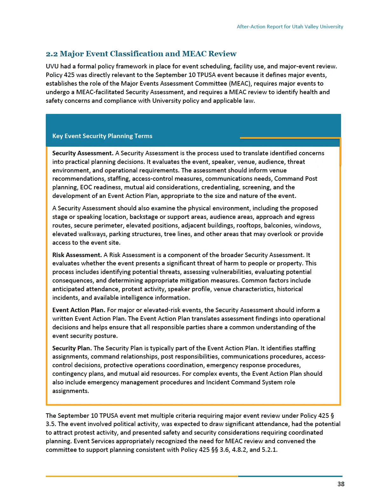
After-Action Report for Utah Valley University2.2 Major Event Classification and MEAC ReviewUVU had a formal policy framework in place for event scheduling, facility use, and major-event review.Policy 425 was directly relevant to the September 10 TPUSA event because it defines major events,establishes the role of the Major Events Assessment Committee (MEAC), requires major events toundergo a MEAC-facilitated Security Assessment, and requires a MEAC review to identify health andsafety concerns and compliance with University policy and applicable law.Key Event Security Planning TermsSecurity Assessment. A Security Assessment is the process used to translate identified concernsinto practical planning decisions. It evaluates the event, speaker, venue, audience, threatenvironment, and operational requirements. The assessment should inform venuerecommendations, staffing, access-control measures, communications needs, Command Postplanning, EOC readiness, mutual aid considerations, credentialing, screening, and thedevelopment of an Event Action Plan, appropriate to the size and nature of the event.A Security Assessment should also examine the physical environment, including the proposedstage or speaking location, backstage or support areas, audience areas, approach and egressroutes, secure perimeter, elevated positions, adjacent buildings, rooftops, balconies, windows,elevated walkways, parking structures, tree lines, and other areas that may overlook or provideaccess to the event site.Risk Assessment. A Risk Assessment is a component of the broader Security Assessment. Itevaluates whether the event presents a significant threat of harm to people or property. Thisprocess includes identifying potential threats, assessing vulnerabilities, evaluating potentialconsequences, and determining appropriate mitigation measures. Common factors includeanticipated attendance, protest activity, speaker profile, venue characteristics, historicalincidents, and available intelligence information.Event Action Plan. For major or elevated-risk events, the Security Assessment should inform awritten Event Action Plan. The Event Action Plan translates assessment findings into operationaldecisions and helps ensure that all responsible parties share a common understanding of theevent security posture.Security Plan. The Security Plan is typically part of the Event Action Plan. It identifies staffingassignments, command relationships, post responsibilities, communications procedures, access-control decisions, protective operations coordination, emergency response procedures,contingency plans, and mutual aid resources. For complex events, the Event Action Plan shouldalso include emergency management procedures and Incident Command System roleassignments.The September 10 TPUSA event met multiple criteria requiring major event review under Policy 425 §3.5. The event involved political activity, was expected to draw significant attendance, had the potentialto attract protest activity, and presented safety and security considerations requiring coordinatedplanning. Event Services appropriately recognized the need for MEAC review and convened thecommittee to support planning consistent with Policy 425 §§ 3.6, 4.8.2, and 5.2.1.38
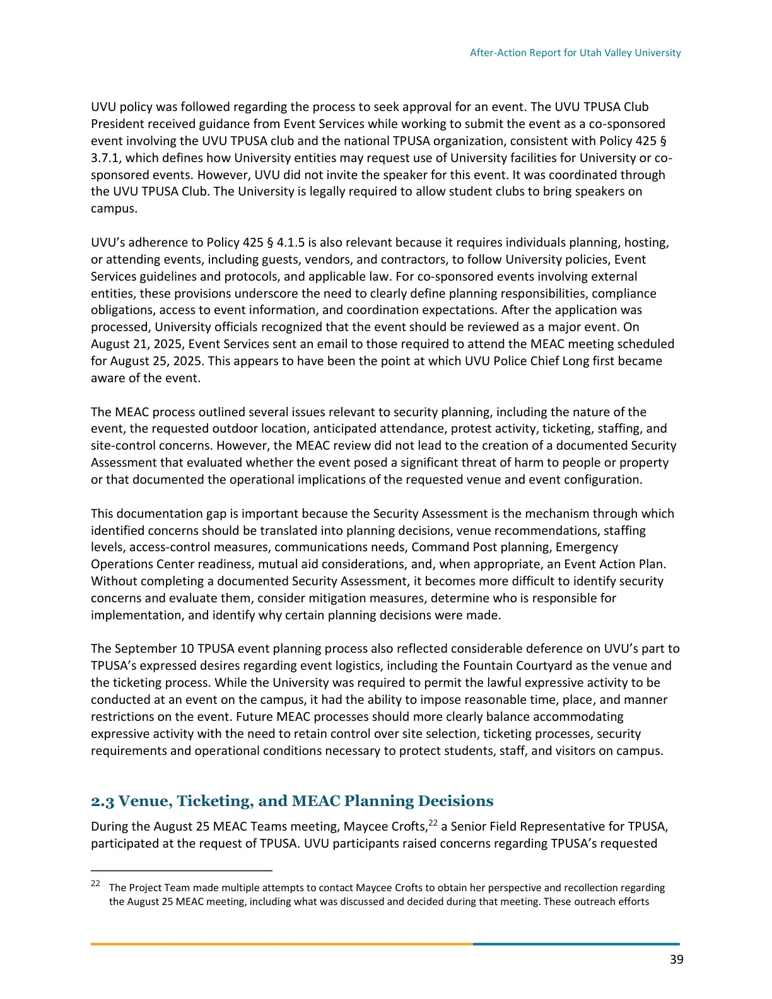
After-Action Report for Utah Valley University39UVU policy was followed regarding the process to seek approval for an event. The UVU TPUSA ClubPresident received guidance from Event Services while working to submit the event as a co-sponsoredevent involving the UVU TPUSA club and the national TPUSA organization, consistent with Policy 425 §3.7.1, which defines how University entities may request use of University facilities for University or co-sponsored events. However, UVU did not invite the speaker for this event. It was coordinated throughthe UVU TPUSA Club. The University is legally required to allow student clubs to bring speakers oncampus.UVU’s adherence to Policy 425 § 4.1.5 is also relevant because it requires individuals planning, hosting,or attending events, including guests, vendors, and contractors, to follow University policies, EventServices guidelines and protocols, and applicable law. For co-sponsored events involving externalentities, these provisions underscore the need to clearly define planning responsibilities, complianceobligations, access to event information, and coordination expectations. After the application wasprocessed, University officials recognized that the event should be reviewed as a major event. OnAugust 21, 2025, Event Services sent an email to those required to attend the MEAC meeting scheduledfor August 25, 2025. This appears to have been the point at which UVU Police Chief Long first becameaware of the event.The MEAC process outlined several issues relevant to security planning, including the nature of theevent, the requested outdoor location, anticipated attendance, protest activity, ticketing, staffing, andsite-control concerns. However, the MEAC review did not lead to the creation of a documented SecurityAssessment that evaluated whether the event posed a significant threat of harm to people or propertyor that documented the operational implications of the requested venue and event configuration.This documentation gap is important because the Security Assessment is the mechanism through whichidentified concerns should be translated into planning decisions, venue recommendations, staffinglevels, access-control measures, communications needs, Command Post planning, EmergencyOperations Center readiness, mutual aid considerations, and, when appropriate, an Event Action Plan.Without completing a documented Security Assessment, it becomes more difficult to identify securityconcerns and evaluate them, consider mitigation measures, determine who is responsible forimplementation, and identify why certain planning decisions were made.The September 10 TPUSA event planning process also reflected considerable deference on UVU’s part toTPUSA’s expressed desires regarding event logistics, including the Fountain Courtyard as the venue andthe ticketing process. While the University was required to permit the lawful expressive activity to beconducted at an event on the campus, it had the ability to impose reasonable time, place, and mannerrestrictions on the event. Future MEAC processes should more clearly balance accommodatingexpressive activity with the need to retain control over site selection, ticketing processes, securityrequirements and operational conditions necessary to protect students, staff, and visitors on campus.2.3 Venue, Ticketing, and MEAC Planning DecisionsDuring the August 25 MEAC Teams meeting, Maycee Crofts,22 a Senior Field Representative for TPUSA,participated at the request of TPUSA. UVU participants raised concerns regarding TPUSA’s requested22 The Project Team made multiple attempts to contact Maycee Crofts to obtain her perspective and recollection regardingthe August 25 MEAC meeting, including what was discussed and decided during that meeting. These outreach efforts
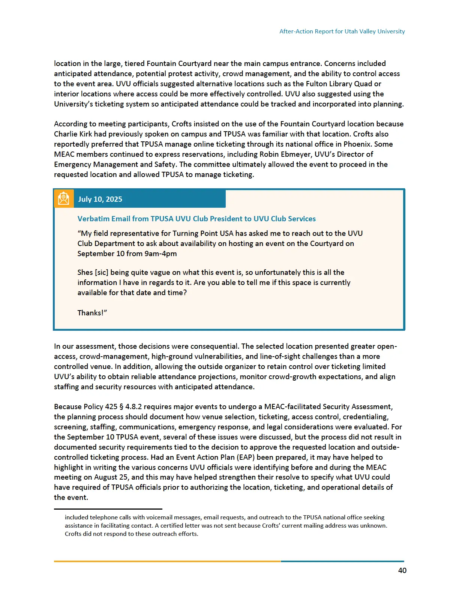
After-Action Report for Utah Valley Universitylocation in the large, tiered Fountain Courtyard near the main campus entrance. Concerns includedanticipated attendance, potential protest activity, crowd management, and the ability to control accessto the event area. UVU officials suggested alternative locations such as the Fulton Library Quad orinterior locations where access could be more effectively controlled. UVU also suggested using theUniversity’s ticketing system so anticipated attendance could be tracked and incorporated into planning.According to meeting participants, Crofts insisted on the use of the Fountain Courtyard location becauseCharlie Kirk had previously spoken on campus and TPUSA was familiar with that location. Crofts alsoreportedly preferred that TPUSA manage online ticketing through its national office in Phoenix. SomeMEAC members continued to express reservations, including Robin Ebmeyer, UVU’s Director ofEmergency Management and Safety. The committee ultimately allowed the event to proceed in therequested location and allowed TPUSA to manage ticketing.July 10, 2025Verbatim Email from TPUSA UVU Club President to UVU Club Services“My field representative for Turning Point USA has asked me to reach out to the UVUClub Department to ask about availability on hosting an event on the Courtyard onSeptember 10 from 9am-4pmShes [sic] being quite vague on what this event is, so unfortunately this is all theinformation | have in regards to it. Are you able to tell me if this space is currentlyavailable for that date and time?Thanks!”In our assessment, those decisions were consequential. The selected location presented greater open-access, crowd-management, high-ground vulnerabilities, and line-of-sight challenges than a morecontrolled venue. In addition, allowing the outside organizer to retain control over ticketing limitedUVU’s ability to obtain reliable attendance projections, monitor crowd-growth expectations, and alignstaffing and security resources with anticipated attendance.Because Policy 425 § 4.8.2 requires major events to undergo a MEAC-facilitated Security Assessment,the planning process should document how venue selection, ticketing, access control, credentialing,screening, staffing, communications, emergency response, and legal considerations were evaluated. Forthe September 10 TPUSA event, several of these issues were discussed, but the process did not result indocumented security requirements tied to the decision to approve the requested location and outside-controlled ticketing process. Had an Event Action Plan (EAP) been prepared, it may have helped tohighlight in writing the various concerns UVU officials were identifying before and during the MEACmeeting on August 25, and this may have helped strengthen their resolve to specify what UVU couldhave required of TPUSA officials prior to authorizing the location, ticketing, and operational details ofthe event.included telephone calls with voicemail messages, email requests, and outreach to the TPUSA national office seekingassistance in facilitating contact. A certified letter was not sent because Crofts’ current mailing address was unknown.Crofts did not respond to these outreach efforts.
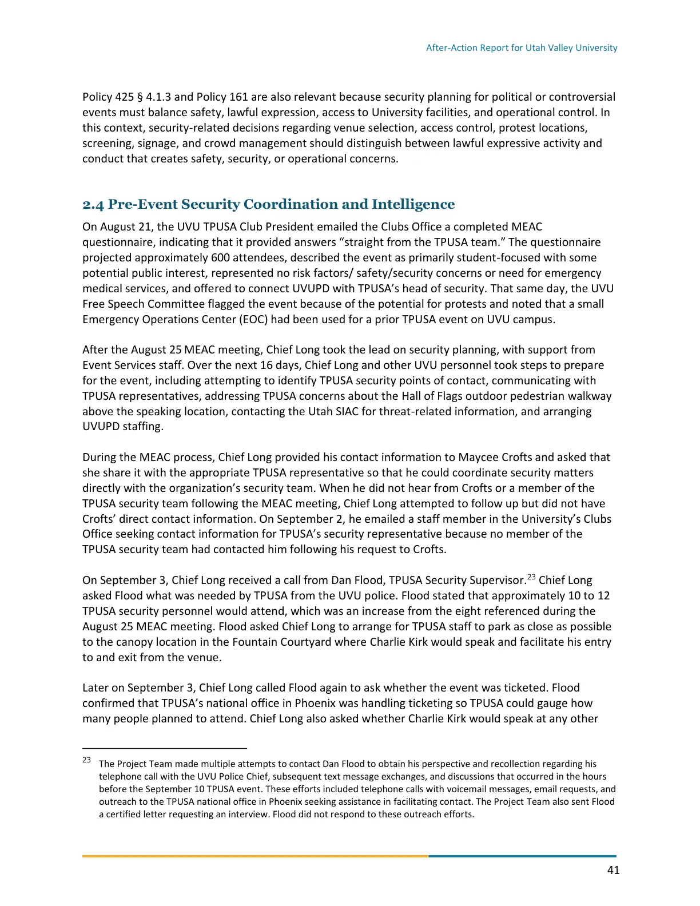
After-Action Report for Utah Valley University41Policy 425 § 4.1.3 and Policy 161 are also relevant because security planning for political or controversialevents must balance safety, lawful expression, access to University facilities, and operational control. Inthis context, security-related decisions regarding venue selection, access control, protest locations,screening, signage, and crowd management should distinguish between lawful expressive activity andconduct that creates safety, security, or operational concerns.2.4 Pre-Event Security Coordination and IntelligenceOn August 21, the UVU TPUSA Club President emailed the Clubs Office a completed MEACquestionnaire, indicating that it provided answers “straight from the TPUSA team.” The questionnaireprojected approximately 600 attendees, described the event as primarily student-focused with somepotential public interest, represented no risk factors/ safety/security concerns or need for emergencymedical services, and offered to connect UVUPD with TPUSA’s head of security. That same day, the UVUFree Speech Committee flagged the event because of the potential for protests and noted that a smallEmergency Operations Center (EOC) had been used for a prior TPUSA event on UVU campus.After the August 25 MEAC meeting, Chief Long took the lead on security planning, with support fromEvent Services staff. Over the next 16 days, Chief Long and other UVU personnel took steps to preparefor the event, including attempting to identify TPUSA security points of contact, communicating withTPUSA representatives, addressing TPUSA concerns about the Hall of Flags outdoor pedestrian walkwayabove the speaking location, contacting the Utah SIAC for threat-related information, and arrangingUVUPD staffing.During the MEAC process, Chief Long provided his contact information to Maycee Crofts and asked thatshe share it with the appropriate TPUSA representative so that he could coordinate security mattersdirectly with the organization’s security team. When he did not hear from Crofts or a member of theTPUSA security team following the MEAC meeting, Chief Long attempted to follow up but did not haveCrofts’ direct contact information. On September 2, he emailed a staff member in the University’s ClubsOffice seeking contact information for TPUSA’s security representative because no member of theTPUSA security team had contacted him following his request to Crofts.On September 3, Chief Long received a call from Dan Flood, TPUSA Security Supervisor.23 Chief Longasked Flood what was needed by TPUSA from the UVU police. Flood stated that approximately 10 to 12TPUSA security personnel would attend, which was an increase from the eight referenced during theAugust 25 MEAC meeting. Flood asked Chief Long to arrange for TPUSA staff to park as close as possibleto the canopy location in the Fountain Courtyard where Charlie Kirk would speak and facilitate his entryto and exit from the venue.Later on September 3, Chief Long called Flood again to ask whether the event was ticketed. Floodconfirmed that TPUSA’s national office in Phoenix was handling ticketing so TPUSA could gauge howmany people planned to attend. Chief Long also asked whether Charlie Kirk would speak at any other23 The Project Team made multiple attempts to contact Dan Flood to obtain his perspective and recollection regarding histelephone call with the UVU Police Chief, subsequent text message exchanges, and discussions that occurred in the hoursbefore the September 10 TPUSA event. These efforts included telephone calls with voicemail messages, email requests, andoutreach to the TPUSA national office in Phoenix seeking assistance in facilitating contact. The Project Team also sent Flooda certified letter requesting an interview. Flood did not respond to these outreach efforts.
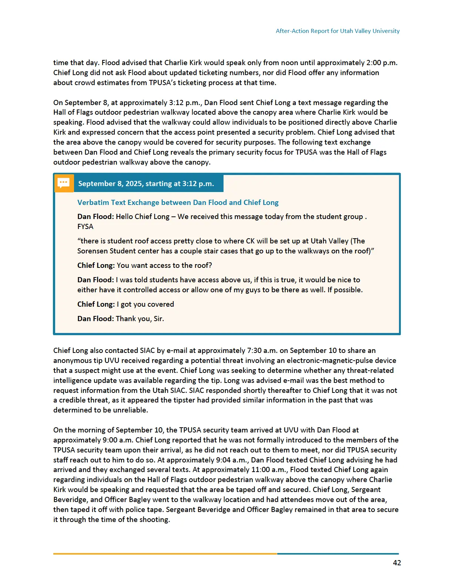
After-Action Report for Utah Valley Universitytime that day. Flood advised that Charlie Kirk would speak only from noon until approximately 2:00 p.m.Chief Long did not ask Flood about updated ticketing numbers, nor did Flood offer any informationabout crowd estimates from TPUSA’s ticketing process at that time.On September 8, at approximately 3:12 p.m., Dan Flood sent Chief Long a text message regarding theHall of Flags outdoor pedestrian walkway located above the canopy area where Charlie Kirk would bespeaking. Flood advised that the walkway could allow individuals to be positioned directly above CharlieKirk and expressed concern that the access point presented a security problem. Chief Long advised thatthe area above the canopy would be covered for security purposes. The following text exchangebetween Dan Flood and Chief Long reveals the primary security focus for TPUSA was the Hall of Flagsoutdoor pedestrian walkway above the canopy.a September 8, 2025, starting at 3:12 p.m.Verbatim Text Exchange between Dan Flood and Chief LongDan Flood: Hello Chief Long — We received this message today from the student group .FYSA“there is student roof access pretty close to where CK will be set up at Utah Valley (TheSorensen Student center has a couple stair cases that go up to the walkways on the roof)”Chief Long: You want access to the roof?Dan Flood: | was told students have access above us, if this is true, it would be nice toeither have it controlled access or allow one of my guys to be there as well. If possible.Chief Long: | got you coveredDan Flood: Thank you, Sir.Chief Long also contacted SIAC by e-mail at approximately 7:30 a.m. on September 10 to share ananonymous tip UVU received regarding a potential threat involving an electronic-magnetic-pulse devicethat a suspect might use at the event. Chief Long was seeking to determine whether any threat-relatedintelligence update was available regarding the tip. Long was advised e-mail was the best method torequest information from the Utah SIAC. SIAC responded shortly thereafter to Chief Long that it was nota credible threat, as it appeared the tipster had provided similar information in the past that wasdetermined to be unreliable.On the morning of September 10, the TPUSA security team arrived at UVU with Dan Flood atapproximately 9:00 a.m. Chief Long reported that he was not formally introduced to the members of theTPUSA security team upon their arrival, as he did not reach out to them to meet, nor did TPUSA securitystaff reach out to him to do so. At approximately 9:04 a.m., Dan Flood texted Chief Long advising he hadarrived and they exchanged several texts. At approximately 11:00 a.m., Flood texted Chief Long againregarding individuals on the Hall of Flags outdoor pedestrian walkway above the canopy where CharlieKirk would be speaking and requested that the area be taped off and secured. Chief Long, SergeantBeveridge, and Officer Bagley went to the walkway location and had attendees move out of the area,then taped it off with police tape. Sergeant Beveridge and Officer Bagley remained in that area to secureit through the time of the shooting.42
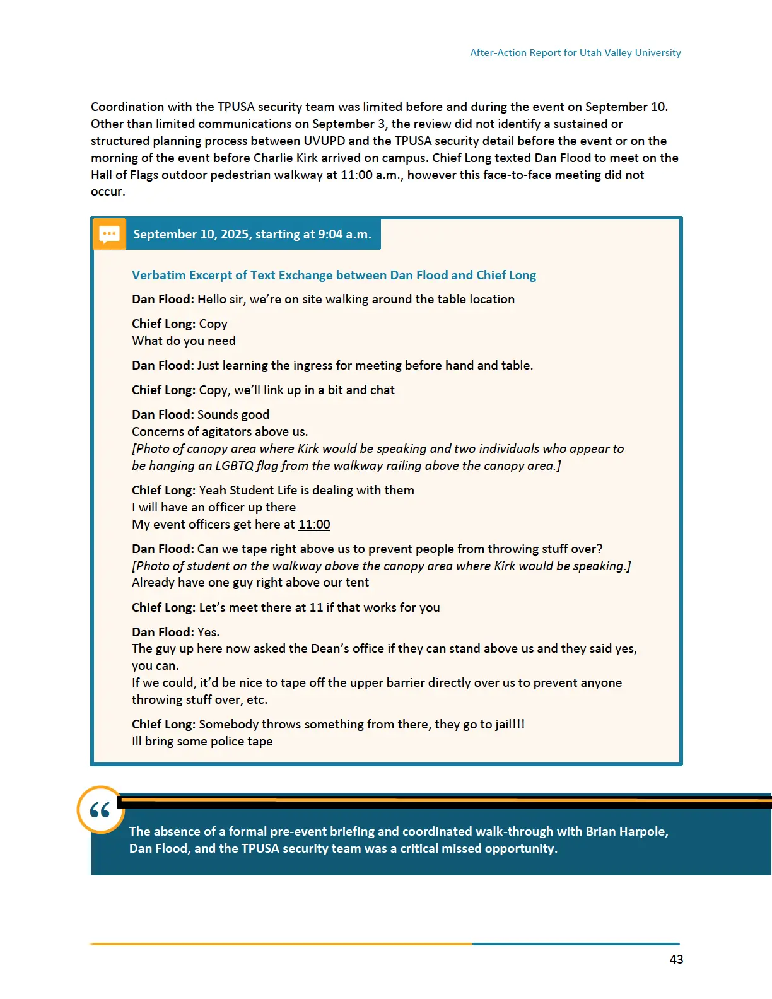
After-Action Report for Utah Valley UniversityCoordination with the TPUSA security team was limited before and during the event on September 10.Other than limited communications on September 3, the review did not identify a sustained orstructured planning process between UVUPD and the TPUSA security detail before the event or on themorning of the event before Charlie Kirk arrived on campus. Chief Long texted Dan Flood to meet on theHall of Flags outdoor pedestrian walkway at 11:00 a.m., however this face-to-face meeting did notoccur.oe September 10, 2025, starting at 9:04 a.m.Verbatim Excerpt of Text Exchange between Dan Flood and Chief LongDan Flood: Hello sir, we’re on site walking around the table locationChief Long: CopyWhat do you needDan Flood: Just learning the ingress for meeting before hand and table.Chief Long: Copy, we'll link up in a bit and chatDan Flood: Sounds goodConcerns of agitators above us.[Photo of canopy area where Kirk would be speaking and two individuals who appear tobe hanging an LGBTQ flag from the walkway railing above the canopy area.]Chief Long: Yeah Student Life is dealing with them| will have an officer up thereMy event officers get here at 11:00Dan Flood: Can we tape right above us to prevent people from throwing stuff over?[Photo of student on the walkway above the canopy area where Kirk would be speaking.]Already have one guy right above our tentChief Long: Let’s meet there at 11 if that works for youDan Flood: Yes.The guy up here now asked the Dean’s office if they can stand above us and they said yes,you can.If we could, it’d be nice to tape off the upper barrier directly over us to prevent anyonethrowing stuff over, etc.Chief Long: Somebody throws something from there, they go to jail!!!Ill bring some police tapeThe absence of a formal pre-event briefing and coordinated walk-through with Brian Harpole,Dan Flood, and the TPUSA security team was a critical missed opportunity.43
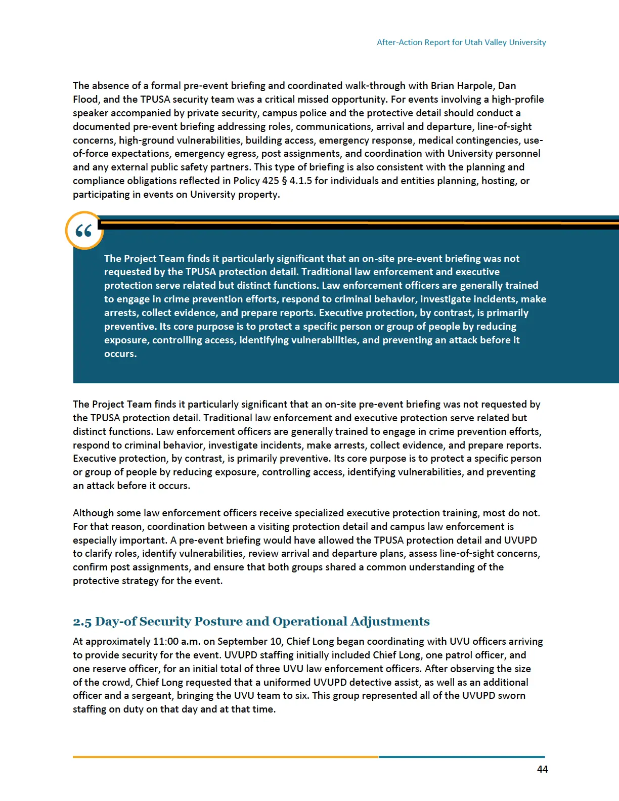
After-Action Report for Utah Valley UniversityThe absence of a formal pre-event briefing and coordinated walk-through with Brian Harpole, DanFlood, and the TPUSA security team was a critical missed opportunity. For events involving a high-profilespeaker accompanied by private security, campus police and the protective detail should conduct adocumented pre-event briefing addressing roles, communications, arrival and departure, line-of-sightconcerns, high-ground vulnerabilities, building access, emergency response, medical contingencies, use-of-force expectations, emergency egress, post assignments, and coordination with University personneland any external public safety partners. This type of briefing is also consistent with the planning andcompliance obligations reflected in Policy 425 § 4.1.5 for individuals and entities planning, hosting, orparticipating in events on University property.The Project Team finds it particularly significant that an on-site pre-event briefing was notrequested by the TPUSA protection detail. Traditional law enforcement and executiveprotection serve related but distinct functions. Law enforcement officers are generally trainedto engage in crime prevention efforts, respond to criminal behavior, investigate incidents, makearrests, collect evidence, and prepare reports. Executive protection, by contrast, is primarilypreventive. Its core purpose is to protect a specific person or group of people by reducingexposure, controlling access, identifying vulnerabilities, and preventing an attack before itoccurs.The Project Team finds it particularly significant that an on-site pre-event briefing was not requested bythe TPUSA protection detail. Traditional law enforcement and executive protection serve related butdistinct functions. Law enforcement officers are generally trained to engage in crime prevention efforts,respond to criminal behavior, investigate incidents, make arrests, collect evidence, and prepare reports.Executive protection, by contrast, is primarily preventive. Its core purpose is to protect a specific personor group of people by reducing exposure, controlling access, identifying vulnerabilities, and preventingan attack before it occurs.Although some law enforcement officers receive specialized executive protection training, most do not.For that reason, coordination between a visiting protection detail and campus law enforcement isespecially important. A pre-event briefing would have allowed the TPUSA protection detail and UVUPDto clarify roles, identify vulnerabilities, review arrival and departure plans, assess line-of-sight concerns,confirm post assignments, and ensure that both groups shared a common understanding of theprotective strategy for the event.2.5 Day-of Security Posture and Operational AdjustmentsAt approximately 11:00 a.m. on September 10, Chief Long began coordinating with UVU officers arrivingto provide security for the event. UVUPD staffing initially included Chief Long, one patrol officer, andone reserve officer, for an initial total of three UVU law enforcement officers. After observing the sizeof the crowd, Chief Long requested that a uniformed UVUPD detective assist, as well as an additionalofficer and a sergeant, bringing the UVU team to six. This group represented all of the UVUPD swornstaffing on duty on that day and at that time.
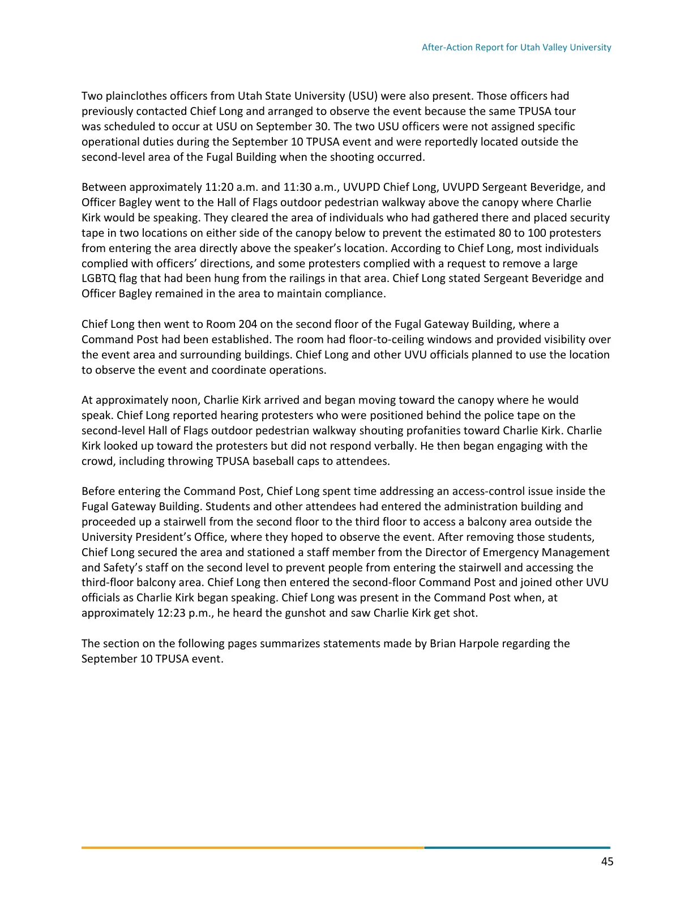
After-Action Report for Utah Valley University45Two plainclothes officers from Utah State University (USU) were also present. Those officers hadpreviously contacted Chief Long and arranged to observe the event because the same TPUSA tourwas scheduled to occur at USU on September 30. The two USU officers were not assigned specificoperational duties during the September 10 TPUSA event and were reportedly located outside thesecond-level area of the Fugal Building when the shooting occurred.Between approximately 11:20 a.m. and 11:30 a.m., UVUPD Chief Long, UVUPD Sergeant Beveridge, andOfficer Bagley went to the Hall of Flags outdoor pedestrian walkway above the canopy where CharlieKirk would be speaking. They cleared the area of individuals who had gathered there and placed securitytape in two locations on either side of the canopy below to prevent the estimated 80 to 100 protestersfrom entering the area directly above the speaker’s location. According to Chief Long, most individualscomplied with officers’ directions, and some protesters complied with a request to remove a largeLGBTQ flag that had been hung from the railings in that area. Chief Long stated Sergeant Beveridge andOfficer Bagley remained in the area to maintain compliance.Chief Long then went to Room 204 on the second floor of the Fugal Gateway Building, where aCommand Post had been established. The room had floor-to-ceiling windows and provided visibility overthe event area and surrounding buildings. Chief Long and other UVU officials planned to use the locationto observe the event and coordinate operations.At approximately noon, Charlie Kirk arrived and began moving toward the canopy where he wouldspeak. Chief Long reported hearing protesters who were positioned behind the police tape on thesecond-level Hall of Flags outdoor pedestrian walkway shouting profanities toward Charlie Kirk. CharlieKirk looked up toward the protesters but did not respond verbally. He then began engaging with thecrowd, including throwing TPUSA baseball caps to attendees.Before entering the Command Post, Chief Long spent time addressing an access-control issue inside theFugal Gateway Building. Students and other attendees had entered the administration building andproceeded up a stairwell from the second floor to the third floor to access a balcony area outside theUniversity President’s Office, where they hoped to observe the event. After removing those students,Chief Long secured the area and stationed a staff member from the Director of Emergency Managementand Safety’s staff on the second level to prevent people from entering the stairwell and accessing thethird-floor balcony area. Chief Long then entered the second-floor Command Post and joined other UVUofficials as Charlie Kirk began speaking. Chief Long was present in the Command Post when, atapproximately 12:23 p.m., he heard the gunshot and saw Charlie Kirk get shot.The section on the following pages summarizes statements made by Brian Harpole regarding theSeptember 10 TPUSA event.
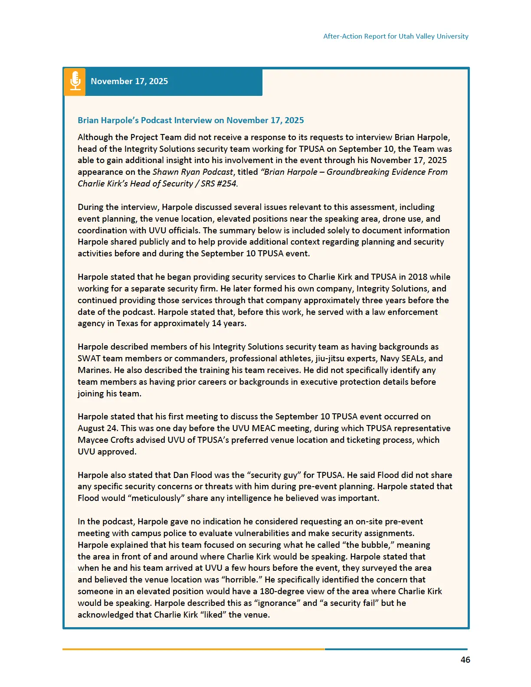
After-Action Report for Utah Valley University€ November 17, 2025Brian Harpole’s Podcast Interview on November 17, 2025Although the Project Team did not receive a response to its requests to interview Brian Harpole,head of the Integrity Solutions security team working for TPUSA on September 10, the Team wasable to gain additional insight into his involvement in the event through his November 17, 2025appearance on the Shawn Ryan Podcast, titled “Brian Harpole — Groundbreaking Evidence FromCharlie Kirk’s Head of Security / SRS #254.During the interview, Harpole discussed several issues relevant to this assessment, includingevent planning, the venue location, elevated positions near the speaking area, drone use, andcoordination with UVU officials. The summary below is included solely to document informationHarpole shared publicly and to help provide additional context regarding planning and securityactivities before and during the September 10 TPUSA event.Harpole stated that he began providing security services to Charlie Kirk and TPUSA in 2018 whileworking for a separate security firm. He later formed his own company, Integrity Solutions, andcontinued providing those services through that company approximately three years before thedate of the podcast. Harpole stated that, before this work, he served with a law enforcementagency in Texas for approximately 14 years.Harpole described members of his Integrity Solutions security team as having backgrounds asSWAT team members or commanders, professional athletes, jiu-jitsu experts, Navy SEALs, andMarines. He also described the training his team receives. He did not specifically identify anyteam members as having prior careers or backgrounds in executive protection details beforejoining his team.Harpole stated that his first meeting to discuss the September 10 TPUSA event occurred onAugust 24. This was one day before the UVU MEAC meeting, during which TPUSA representativeMaycee Crofts advised UVU of TPUSA’s preferred venue location and ticketing process, whichUVU approved.Harpole also stated that Dan Flood was the “security guy” for TPUSA. He said Flood did not shareany specific security concerns or threats with him during pre-event planning. Harpole stated thatFlood would “meticulously” share any intelligence he believed was important.In the podcast, Harpole gave no indication he considered requesting an on-site pre-eventmeeting with campus police to evaluate vulnerabilities and make security assignments.Harpole explained that his team focused on securing what he called “the bubble,” meaningthe area in front of and around where Charlie Kirk would be speaking. Harpole stated thatwhen he and his team arrived at UVU a few hours before the event, they surveyed the areaand believed the venue location was “horrible.” He specifically identified the concern thatsomeone in an elevated position would have a 180-degree view of the area where Charlie Kirkwould be speaking. Harpole described this as “ignorance” and “a security fail” but heacknowledged that Charlie Kirk “liked” the venue.46
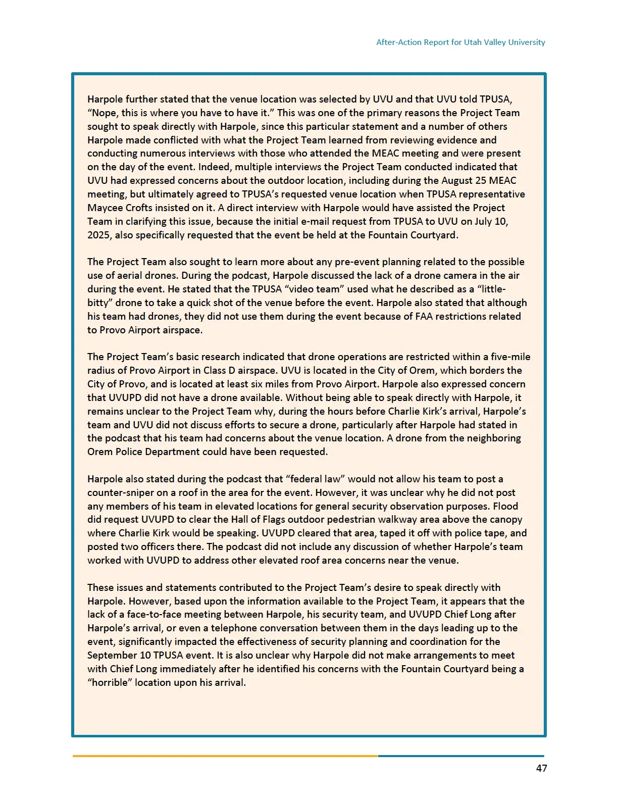
After-Action Report for Utah Valley UniversityHarpole further stated that the venue location was selected by UVU and that UVU told TPUSA,“Nope, this is where you have to have it.” This was one of the primary reasons the Project Teamsought to speak directly with Harpole, since this particular statement and a number of othersHarpole made conflicted with what the Project Team learned from reviewing evidence andconducting numerous interviews with those who attended the MEAC meeting and were presenton the day of the event. Indeed, multiple interviews the Project Team conducted indicated thatUVU had expressed concerns about the outdoor location, including during the August 25 MEACmeeting, but ultimately agreed to TPUSA’s requested venue location when TPUSA representativeMaycee Crofts insisted on it. A direct interview with Harpole would have assisted the ProjectTeam in clarifying this issue, because the initial e-mail request from TPUSA to UVU on July 10,2025, also specifically requested that the event be held at the Fountain Courtyard.The Project Team also sought to learn more about any pre-event planning related to the possibleuse of aerial drones. During the podcast, Harpole discussed the lack of a drone camera in the airduring the event. He stated that the TPUSA “video team” used what he described as a “little-bitty” drone to take a quick shot of the venue before the event. Harpole also stated that althoughhis team had drones, they did not use them during the event because of FAA restrictions relatedto Provo Airport airspace.The Project Team’s basic research indicated that drone operations are restricted within a five-mileradius of Provo Airport in Class D airspace. UVU is located in the City of Orem, which borders theCity of Provo, and is located at least six miles from Provo Airport. Harpole also expressed concernthat UVUPD did not have a drone available. Without being able to speak directly with Harpole, itremains unclear to the Project Team why, during the hours before Charlie Kirk’s arrival, Harpole’steam and UVU did not discuss efforts to secure a drone, particularly after Harpole had stated inthe podcast that his team had concerns about the venue location. A drone from the neighboringOrem Police Department could have been requested.Harpole also stated during the podcast that “federal law” would not allow his team to post acounter-sniper on a roof in the area for the event. However, it was unclear why he did not postany members of his team in elevated locations for general security observation purposes. Flooddid request UVUPD to clear the Hall of Flags outdoor pedestrian walkway area above the canopywhere Charlie Kirk would be speaking. UVUPD cleared that area, taped it off with police tape, andposted two officers there. The podcast did not include any discussion of whether Harpole’s teamworked with UVUPD to address other elevated roof area concerns near the venue.These issues and statements contributed to the Project Team’s desire to speak directly withHarpole. However, based upon the information available to the Project Team, it appears that thelack of a face-to-face meeting between Harpole, his security team, and UVUPD Chief Long afterHarpole’s arrival, or even a telephone conversation between them in the days leading up to theevent, significantly impacted the effectiveness of security planning and coordination for theSeptember 10 TPUSA event. It is also unclear why Harpole did not make arrangements to meetwith Chief Long immediately after he identified his concerns with the Fountain Courtyard being a“horrible” location upon his arrival.47
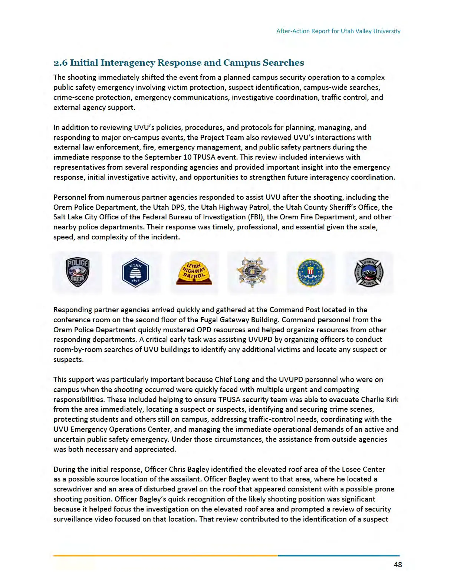
After-Action Report for Utah Valley University2.6 Initial Interagency Response and Campus SearchesThe shooting immediately shifted the event from a planned campus security operation to a complexpublic safety emergency involving victim protection, suspect identification, campus-wide searches,crime-scene protection, emergency communications, investigative coordination, traffic control, andexternal agency support.In addition to reviewing UVU’s policies, procedures, and protocols for planning, managing, andresponding to major on-campus events, the Project Team also reviewed UVU’s interactions withexternal law enforcement, fire, emergency management, and public safety partners during theimmediate response to the September 10 TPUSA event. This review included interviews withrepresentatives from several responding agencies and provided important insight into the emergencyresponse, initial investigative activity, and opportunities to strengthen future interagency coordination.Personnel from numerous partner agencies responded to assist UVU after the shooting, including theOrem Police Department, the Utah DPS, the Utah Highway Patrol, the Utah County Sheriff’s Office, theSalt Lake City Office of the Federal Bureau of Investigation (FBI), the Orem Fire Department, and othernearby police departments. Their response was timely, professional, and essential given the scale,speed, and complexity of the incident.9 6 @Responding partner agencies arrived quickly and gathered at the Command Post located in theconference room on the second floor of the Fugal Gateway Building. Command personnel from theOrem Police Department quickly mustered OPD resources and helped organize resources from otherresponding departments. A critical early task was assisting UVUPD by organizing officers to conductroom-by-room searches of UVU buildings to identify any additional victims and locate any suspect orsuspects.This support was particularly important because Chief Long and the UVUPD personnel who were oncampus when the shooting occurred were quickly faced with multiple urgent and competingresponsibilities. These included helping to ensure TPUSA security team was able to evacuate Charlie Kirkfrom the area immediately, locating a suspect or suspects, identifying and securing crime scenes,protecting students and others still on campus, addressing traffic-control needs, coordinating with theUVU Emergency Operations Center, and managing the immediate operational demands of an active anduncertain public safety emergency. Under those circumstances, the assistance from outside agencieswas both necessary and appreciated.During the initial response, Officer Chris Bagley identified the elevated roof area of the Losee Centeras a possible source location of the assailant. Officer Bagley went to that area, where he located ascrewdriver and an area of disturbed gravel on the roof that appeared consistent with a possible proneshooting position. Officer Bagley’s quick recognition of the likely shooting position was significantbecause it helped focus the investigation on the elevated roof area and prompted a review of securitysurveillance video focused on that location. That review contributed to the identification of a suspect
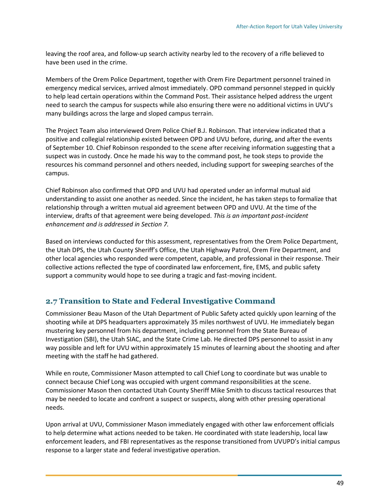
After-Action Report for Utah Valley University49leaving the roof area, and follow-up search activity nearby led to the recovery of a rifle believed tohave been used in the crime.Members of the Orem Police Department, together with Orem Fire Department personnel trained inemergency medical services, arrived almost immediately. OPD command personnel stepped in quicklyto help lead certain operations within the Command Post. Their assistance helped address the urgentneed to search the campus for suspects while also ensuring there were no additional victims in UVU’smany buildings across the large and sloped campus terrain.The Project Team also interviewed Orem Police Chief B.J. Robinson. That interview indicated that apositive and collegial relationship existed between OPD and UVU before, during, and after the eventsof September 10. Chief Robinson responded to the scene after receiving information suggesting that asuspect was in custody. Once he made his way to the command post, he took steps to provide theresources his command personnel and others needed, including support for sweeping searches of thecampus.Chief Robinson also confirmed that OPD and UVU had operated under an informal mutual aidunderstanding to assist one another as needed. Since the incident, he has taken steps to formalize thatrelationship through a written mutual aid agreement between OPD and UVU. At the time of theinterview, drafts of that agreement were being developed. This is an important post-incidentenhancement and is addressed in Section 7.Based on interviews conducted for this assessment, representatives from the Orem Police Department,the Utah DPS, the Utah County Sheriff’s Office, the Utah Highway Patrol, Orem Fire Department, andother local agencies who responded were competent, capable, and professional in their response. Theircollective actions reflected the type of coordinated law enforcement, fire, EMS, and public safetysupport a community would hope to see during a tragic and fast-moving incident.2.7 Transition to State and Federal Investigative CommandCommissioner Beau Mason of the Utah Department of Public Safety acted quickly upon learning of theshooting while at DPS headquarters approximately 35 miles northwest of UVU. He immediately beganmustering key personnel from his department, including personnel from the State Bureau ofInvestigation (SBI), the Utah SIAC, and the State Crime Lab. He directed DPS personnel to assist in anyway possible and left for UVU within approximately 15 minutes of learning about the shooting and aftermeeting with the staff he had gathered.While en route, Commissioner Mason attempted to call Chief Long to coordinate but was unable toconnect because Chief Long was occupied with urgent command responsibilities at the scene.Commissioner Mason then contacted Utah County Sheriff Mike Smith to discuss tactical resources thatmay be needed to locate and confront a suspect or suspects, along with other pressing operationalneeds.Upon arrival at UVU, Commissioner Mason immediately engaged with other law enforcement officialsto help determine what actions needed to be taken. He coordinated with state leadership, local lawenforcement leaders, and FBI representatives as the response transitioned from UVUPD’s initial campusresponse to a larger state and federal investigative operation.
Interviews indicated that once Commissioner Masonarrived at UVU, he helped organize the investigativecommand structure among agencies at the scene. Hegathered law enforcement officials and advised themthat the Governor had directed him to take the leadon the investigation. At the same time, heemphasized that the investigation would requirecoordinated participation among all involvedagencies. This helped establish a clearer lead-agencyframework while reinforcing the need for continuedinteragency cooperation.Upon meeting with the Special Agent in Charge (SAC)of the Salt Lake City Office of the FBI at UVU, Masonlearned the SAC was told to lead the investigation.After discussing this with the SAC, they determinedthe Utah DPS and the FBI would co-lead theinvestigation. This approach was appropriate giventhat both had major crimes occur requiring distinctfollow-up, with the state’s homicide investigationfocusing upon Utah Criminal Code violations requiringlocal prosecution and the federal interests involvingpotential federal hate crimes and domestic terrorism.When the local FBI Special Agent in Charge concurredwith the decision to co-lead the investigation withCommissioner Mason, the investigative commandstructure continued to evolve in a coordinatedmanner. This shared leadership arrangement was alsoreflected during the press conference held on theafternoon of September 10.Overall, the transition from UVUPD’s initial campusresponse to a multi-agency state and federalinvestigation occurred quickly and with significantoutside agency involvement. The early actions byUVUPD personnel, the rapid engagement of the OremPolice Department, Utah County Sheriff’s Office andAfter-Action Report for Utah Valley UniversityPost-Incident Statewide Higher-Education Information SharingFollowing the September 10 incident,Commissioner Beau Mason of the UtahDepartment of Public Safety tookadditional steps to strengthen statewidesafety coordination for institutions ofhigher education. Commissioner Masonon his own initiative assigned a DPSmember on the SIAC team to focus onlocating and analyzing availableinformation associated with safetyconcerns for Utah’s colleges anduniversities.Commissioner Mason also requestedthat each Utah institution of highereducation designate at least onerepresentative to participate in a newgroup intended to support regularinteraction, coordination, andinformation sharing among institutions.Had these steps not already beeninitiated, they would have beenappropriate recommendations stemmingfrom this After-Action Report.These actions represent a meaningfulenhancement to statewide situationalawareness and should be incorporatedinto UVU’s ongoing threat intelligence,event-planning, and emergencymanagement processes. They are alsodiscussed in Section 7 as post-incidentsecurity enhancements.other local partners, the quick and collaborative response of the local FBI field office, and the leadershipshown by the Utah Department of Public Safety helped establish investigative direction quickly during achaotic and fast-moving incident. The broader interagency coordination lessons from this transition areaddressed in Section 4.4.50
After-Action Report for Utah Valley University512.8 Fire, EMS, and Emergency Management Interagency SupportThe Project Team also interviewed Chief Marc Sanderson of the Orem Fire Department. Chief Sandersonwas in Wisconsin on September 10 coordinating the building of a new fire truck for the department, buthe provided detailed information regarding Orem Fire’s response.Fire personnel from Station One and Station Three were initially dispatched to the scene of the shooting.Personnel from Stations Two and Four also responded because the extent of medical need was not yetknown. While en route, the Station Three fire truck passed near the SUV being used by the TPUSAsecurity team to transport Charlie Kirk to Timpanogos Hospital. Station Three personnel provided thatinformation over the radio. Station Two then rerouted to Timpanogos Hospital, where the Fire Captainfrom Station Two assisted in providing CPR to Charlie Kirk at the hospital.In addition, one Orem Fire Captain went to the UVU Command Post to provide assistance, and twoOrem Fire paramedics joined a police officer on scene to help search for victims who may have neededmedical assistance.Chief Sanderson also advised that he had recently spoken with Chief Robinson about approaching UVUwith an offer to conduct a joint active shooter training exercise. The purpose of such an exercise wouldbe to help ensure that UVU, OPD, and Orem Fire are able to operate as efficiently and effectively aspossible should another major public safety incident occur on campus.The Project Team also interviewed Keith Stevenson, Emergency Management Director for the City ofOrem. The purpose of this interview was to understand what role Orem Emergency Management playedon September 10, what mutual aid assistance may have been available, and how Orem EmergencyManagement may be able to support UVU in the future. Stevenson demonstrated strong familiarity withthe National Incident Management System (NIMS) and the Incident Command System (ICS) framework,both of which are national standards for multi-agency emergency response.When Stevenson learned of the shooting moments after it occurred, he recalled from a prior LocalEmergency Planning Committee (LEPC) meeting that UVU Emergency Management Director RobinEbmeyer was scheduled to be out of state on vacation that day. The LEPC meets twice a month at theUtah County Sheriff’s Office, and Ebmeyer is a member. Stevenson estimated that he called Ebmeyerapproximately 20 minutes after the shooting and offered any assistance he could provide. According toStevenson, Ebmeyer declined assistance.Because he was not asked to respond to UVU, Stevenson remained at the Orem EOC located within theOrem City Hall complex. From there, Orem City officials coordinated fire operations for personneldispatched to UVU and remained prepared to assist if requested. Stevenson advised that those presentin the Orem EOC included the City Manager, Assistant City Manager, a Deputy City Manager, andpersonnel from the Police and Fire Departments. He also advised that Orem Emergency Managementremains willing to assist UVU with future emergency management policy development, training, andpreparedness efforts.
After-Action Report for Utah Valley University2.9 Key Interagency LessonsThe September 10 response demonstrated the value of UVU’s relationships with external lawenforcement, as well as fire, emergency management, and other public safety partners. OPD, Orem Fire,Utah DPS, the Utah County Sheriffs Office, the FBI, and other responding agencies provided criticalsupport during a fast-moving and highly complex incident.At the same time, the incident showed the importance of identifying, requesting, and integratingexternal resources early and in advance, particularly when an event involves uncertainty, high-profilespeakers or government officials, potential mass-casualty concerns, an active or unknown suspect orthreat, extensive campus searches, multiple crime scenes, and significant public communicationdemands. External public safety and emergency management partners had both the willingness andcapability to assist UVU. In some cases, those resources were used effectively. In other cases, availablesupport was not fully leveraged in advance.Available Partner Resources and Future Event PlanningSeveral external partners described capabilities that were available to UVU or could support futuremajor-event planning. Chief B.J. Robinson advised that the Orem Police Department has aerialdrone capability that can provide live video footage. He would have provided that resource to ChiefLong had it been requested and had OPD known more in advance about the event details,including the specific location of the event on campus.Orem Emergency Management Director Keith Stevenson also advised that he was willing to assistUVU on September 10 and remains willing to support future emergency management policydevelopment, training, and preparedness efforts. Orem City officials were present in the Orem EOCand prepared to assist if requested.These observations reinforce the importance of identifying external resources before major events,including drones, tactical assets, traffic-control support, fire/EMS staging, emergency managementpersonnel, investigative resources, and communications support. These capabilities should beidentified in advance, documented in event plans, and incorporated into exercises and major-eventplanning protocols.2.10 Assessment and Preparedness GapsIn the Project Team’s assessment, UVU personnel made some meaningful preparation efforts undercompressed timelines. Event Services recognized the TPUSA Club event required major event reviewunder Policy 425 § 3.5. The MEAC convened a meeting for the event consistent with Policy 425 §§ 3.6,4.8.2, and 5.2.1. UVUPD also identified concerns regarding location, ticketing, crowd size, potentialprotest activity, and elevated access areas. Event Services subsequently provided bicycle rack barriersthat TPUSA requested to help secure the area where Charlie Kirk would be speaking. Chief Long wasunsuccessful in attempts to coordinate with Maycee Crofts but was able to interact with Dan Flood ofTPUSA. Chief Long also contacted SIAC; arranged available UVUPD staffing; responded to concernsraised by TPUSA by clearing the Hall of Flags outdoor pedestrian walkway located above the speaker’scanopy; and established a Command Post with visibility over the event area.52
After-Action Report for Utah Valley University53At the same time, the preparation process revealed several important gaps. There was limited timebetween Chief Long first learning of the event and the event date. The Security Assessment processdid not result in documented requirements for venue modification, University-controlled ticketing,controlled access, credentialing, screening, or additional staffing. UVU did not have reliable access toticketing or registration data. Coordination with TPUSA’s security team was very limited and did notinclude a structured pre-event briefing or site walk-through before or on September 10 between BrianHarpole, Dan Flood, and UVUPD. Chief Long did not initiate a mutual aid request to the Orem PoliceDepartment or other local public safety partners before the event, and additional external resourceswere not requested after the crowd size became apparent. There also was not a dedicated assignmentfor real-time security video monitoring by UVUPD Dispatch personnel or others from anotheroperational location during the event.The primary security concern among many UVU officials appeared to be potential disruption or safetyissues associated with student or non-student protest activity. That concern was reasonable given theFirst Amendment nature of the event, addressed in Policy 425 § 4.1.3, and UVU Policy 161. However, abroader site Security Assessment was warranted. Protest activity, crowd size, open access, line-of-sightexposure, the speaker’s public profile, the external organizer’s control over ticketing, and theinvolvement of private security all should have prompted a more comprehensive Event Action Plan andearlier coordination with public safety partners. TPUSA was the final decision maker for the event siteselection, but this authority should be with the University.In the Project Team’s assessment, the preparation for September 10 reflected committed efforts byUVU personnel but also demonstrated the limitations of relying on informal coordination, ad hocdecision-making, and available internal staffing and equipment for a high-profile outdoor event. Theevent required a more structured planning process, stronger documentation of security decisions underPolicy 425, earlier protective intelligence review, more formal coordination with external security andpublic safety partners for personnel and technology resource assistance, and a clearer process forelevating unresolved concerns to University leadership before final venue and operational decisionswere accepted.Recommendations related to the issues addressed in this section are included in Section 9.
After-Action Report for Utah Valley University3. Event Security Planning and OperationsThe preceding section provides the main narrative of how the September 10 TPUSA event was classified,planned, staffed, and supported. The following section takes a deeper look at the specific event-securityplanning practices that should guide future high-profile events at UVU. These topics are introduced inthe narrative above but are analyzed here in greateroperational detail.3.1 Event Security Planning andSecurity AssessmentRecognized PracticesFor major events, the security planning processshould include a documented Security Assessmentthat evaluates the event, speaker, venue, audience,threat environment, and operational requirements.The purpose is not to predict a specific act ofviolence, but to identify foreseeable conditions thatcould affect safety, disrupt operations, or requireenhanced planning.A Security Assessment should inform decisionsregarding venue selection, staffing, access control,screening, crowd management, emergency response,communications, traffic control, Command Postoperations, Emergency Operations Center readiness,and coordination with external partners. For outdoorevents, the assessment should also consideremergency egress routes, protest activity, arrival anddeparture routes, surrounding buildings, elevatedvantage points, line-of-sight vulnerabilities,emergency vehicle access, security camera coverage,and staffing needs.For major or elevated-risk events, the SecurityAssessment should typically inform a written EventAction Plan. The Event Action Plan translatesassessment findings into operational decisions andhelps ensure that responsible parties have a commonunderstanding of staffing assignments, commandstructure, communications protocols, venue controls,emergency procedures, mutual aid resources, andpost-event review expectations.Event Security PlanningFramework SummaryA detailed Event Security PlanningFramework is included in Appendix D.1.The framework provides a practical toolfor planning high-profile events, high-profile speakers, large gatherings, andevents involving elevated securityconcerns. It is intended to help UVUdocument planning assumptions, identifyresource needs, assign responsibilities,and communicate operational decisionsto relevant stakeholders before theevent. The framework addresses:= Event intake and risk classificationThreat, vulnerability, and venueassessmentHistorical research and intelligenceconsiderationsStakeholder coordination andexecutive protection planningVenue selection and site-layoutconsiderationsTicketing, registration, andattendance forecastingStaffing, post assignments, andaccess-control decisionsScreening, credentialing, andrestricted-area managementTraffic, parking, perimeter, andpedestrian-flow planningCommunications, emergencynotification, and public messagingEOC, ICS, and Event Action PlanintegrationMutual aid and external public safetycoordinationPre-event briefing, day-ofmonitoring, and post-event review
UVU Application and AssessmentThe September 10 TPUSA event presented acomplex security environment. The outdoorvenue requested by TPUSA was located in anopen-access campus setting surrounded byadjacent buildings, elevated walkways, andmultiple vantage points overlooking the eventarea. These physical conditions created line-of-sight concerns, high-ground vulnerabilities,complicated perimeter management, andincreased the difficulty of maintainingsituational awareness across the surroundingenvironment.Interviews and document review indicated thatconcerns regarding venue selection, anticipatedcrowd size, and protest activity were raisedduring planning discussions beginning with theAugust 25 MEAC meeting. The Project Team’sreview also identified pre-event coordinationactivities among University stakeholders, eventorganizers, and UVUPD. However, the planningprocess did not produce a formal writtenSecurity Assessment documenting identifiedconcerns, mitigation measures, planningassumptions, or resource requirements for theTPUSA event.The Project Team learned that a written EventAction Plan was not created for the September10 TPUSA event. The absence of a writtenMEAC-Facilitated SecurityvRisk Factors ConsideredvPlanning DecisionsVvWritten Event Action PlanvPre-Event Briefing andvEvent Operations andAfter-Action Report for Utah Valley Universityillustration: Major Event Security PlanningMajor Event IdentifiedAssessmentVenue, speaker profile, attendance,protest activity, intelligence, line-of-sight,access control, emergency response©Venue, staffing, screening, ticketing,communications, mutual aid, EOC posture@Roles, posts, communications, emergencyprocedures, command structureSite Walk-ThroughPost-Event Review@Security Assessment and Event Action Plan limited UVU’s ability to establish a coordinated securityposture among UVUPD, Event Services, TPUSA representatives, TPUSA’s security detail, Universitystakeholders, and potential external public safety partners. It also limited the ability to documentplanning assumptions, identify resource gaps, assign responsibilities, and adjust the plan as attendance,protest activity, or other conditions changed.The absence of a written Security Assessment and Event Action Plan limited UVU’s ability toestablish a coordinated security posture among UVUPD, Event Services, TPUSA representatives,TPUSA’s security detail, University stakeholders, and potential external public safety partners.55
After-Action Report for Utah Valley University2018-2025Historical Security Concerns Associated with TPUSA and Charlie Kirk EventsEvent security planning for high-profile speakers should consider not only the specificevent being planned, but also reasonably available information about comparableevents. Prior events involving the same speaker, organization, venue type, audienceprofile, protest activity, or security concerns can provide useful context for evaluatingforeseeable conditions, even when they do not predict a specific threat or outcome.Several of our interviewees stated that UVU made no inquiries with previous eventsites because they were hosting the first TPUSA campus speaking event of theacademic year.For the September 10 TPUSA event, prior Charlie Kirk and TPUSA campus speakingevents were relevant because they could have informed UVU’s assessment of venuesuitability, anticipated attendance, protest activity, access control, crowdmanagement, staffing, communications planning, and the potential need for enhancedsecurity measures. The examples below are not included to suggest that priorincidents predicted the violence at UVU. Rather, they illustrate that similar events atother institutions had generated protest activity, crowd-control concerns, physicalconfrontations, and enhanced security measures. This type of historical context shouldbe considered as part of the Security Assessment and Event Action Plan process formajor or elevated-risk events. For example, the following TPUSA events held over thelast several years could have provided some useful operational considerations hadthey been a part of the MEAC discussion held on August 25:= October 23, 2018 — California State University, Long Beach: Large-scale protestsand disruptions required security intervention.February 21, 2019 — UC Berkeley: A Turning Point USA supporter was physicallyassaulted during campus activity associated with the organization.March 14, 2023 — UC Davis: Approximately 100 protesters gathered outside aCharlie Kirk event, blocked entrances and pathways, threw eggs and other objects,damaged venue doors, and assaulted a police officer. In anticipation of these risks,the university implemented extensive security measures including ticketingcontrols, identification verification, metal detectors, bag restrictions, and asignificant law enforcement presence.April 3, 2025 — UC Davis: Protesters disrupted a Turning Point USA event before itbegan, resulting in reported assaults, physical altercations, and property damage.Footnotes for the above incidents:7*24 https://www.presstelegram.com/2018/10/24/cal-state-long-beach-conservative-meeting-prompts-protest/;https://www.foxnews.com/us/conservative-activist-assaulted-at-uc-berkeley-campus-during-recruitment-drive;UC Davis official news release; Sacramento Bee reporting; ABC10 local reporting; UC Davis statement.56
After-Action Report for Utah Valley University573.2 Event Security OperationsRecognized PracticesEvent security operations translate planning assumptions into real-time protective measures designedto maintain safety, facilitate lawful activity, manage crowds, and support effective response if conditionschange. For major or elevated-risk events, operational planning should connect Security Assessment,venue conditions, staffing, post assignments, access control, communications, executive protectioncoordination, emergency response procedures, and contingency planning.A well-designed event security plan uses layered protection across the outer, middle, and innerperimeters. The outer perimeter generally encompasses public areas, the middle perimeter controlsaccess to the event, and the inner perimeter includes the event space and restricted areas. This layeredmodel supports deterrence, detection, delay, response, and recovery.Illustration: The Layered Event Security ModelUVU Application and AssessmentBased on interviews, documentation, and available video evidence, UVUPD personnel were deployedthroughout the event area and performed a range of security functions before, during, and after theevent. Officers monitored crowd activity, supported event operations, managed protest-relatedconcerns, and responded to emerging incidents. However, while UVUPD coordinated some securityissues with event organizers just prior to the event, such as the concern of the Hall of Flags outdoorpedestrian walkway located above the speaker’s canopy, no actual face-to-face contact or pre-eventdebriefing activities occurred between the UVUPD Police Chief or TPUSA security representatives. Thisrepresents a lost opportunity to identify and mitigate any real-time security concerns prior to thebeginning of an event. UVUPD did not establish fixed or mobile security posts, which limited its visiblelaw enforcement presence during the event.Recommendations related to the issues addressed in this section are included in Section 9.
After-Action Report for Utah Valley University58The outdoor venue presented significant operational challenges. The event area included multipleaccess points, adjacent buildings, elevated walkways, open pedestrian areas, and numerous locationsfrom which attendees, protesters, and bystanders could observe the event. These features increasedthe complexity of crowd management, situational awareness, perimeter security, and responseoperations.Staffing decisions appear to have been made based on information available at the time. However,the absence of a formal Security Assessment, reliable attendance estimate, and written Event ActionPlan limited the ability to systematically evaluate staffing needs and resource requirements. Historicalincidents involving similar events may also have supported consideration of additional securitymeasures.The Project Team also identified the importance of clearly defining operational responsibilities andcommand relationships during major events. Leadership and decision-making roles, such as IncidentCommander and EOC Manager need to include both primary and backup personnel. Security operationsare most effective when assignments, reporting relationships, emergency procedures, communicationsprotocols, and contingency plans are documented and briefed before the event. This provides acommon operating picture and supports effective decision-making if conditions change rapidly.Officers responded quickly following the shooting and initiated emergency response actions. Theincident nevertheless demonstrated the challenges associated with managing a high-profile event ina complex, open-access environment. Future planning efforts would benefit from a more formalizedprocess that links Security Assessments, staffing decisions, command structures, security technologies,and emergency response procedures into a unified operational framework.For the September 10 TPUSA event, the Director of Emergency Management and Safety assigned twoUVU Emergency Medical Services (EMS) personnel. Both were Emergency Medical Technicians (EMTs)trained to provide prehospital emergency medical care before patients reach a hospital. EMTs maydeliver non-invasive, lifesaving interventions and help stabilize patients during emergencies. Both EMTswere equipped with trauma packs and rendered aid after the shooting, including assisting individualswho experienced trips and falls, breathing difficulty, and panic attacks during the ensuing chaosfollowing the shooting. It is important to note that the EMTs could not transport patients, includingCharlie Kirk, to the hospital. No ambulance was staged on site for the September 10 TPUSA event.3.3 Access Control, Screening, and CredentialingRecognized PracticesAccess control, screening, and credentialing are core components of event security planning. Together,they help define who may enter an event space, what items may be brought into the venue, which areasare restricted, how attendance is monitored, and how security personnel identify authorized individuals.Effective access-control planning integrates personnel, technology, physical barriers, writtenprocedures, emergency management, event organizers, and coordination with law enforcement, fire,EMS, and other critical partners.Recommendations related to the issues addressed in this section are included in Section 9.
After-Action Report for Utah Valley UniversityFor elevated-risk events, access-control planning typically addresses whether the venue can supportcontrolled entry, ticket verification, credentialing, screening, designated entry and exit points,restricted-access areas, and emergency egress. These decisions are influenced by the event’s risk profile,venue characteristics, anticipated crowd size, speaker profile, threat environment, legal considerations,and operational capacity.Traditional magnetometers and X-ray systemsprovide structured screening but require adequate Typical Screening Measuresstaffing, training, calibration, and queuemanagement. Emerging weapons-detection systems Screening measures vary depending onand video analytics may allow less-invasive screening the event and may include:and faster throughput, but they also raiseconsiderations regarding reliability, legal compliance,cost, staffing, false alarm rates, privacy, andintegration with law enforcement response. SeeAppendix D.2: Event Screening Operations PlanningConsiderations for more information.Visual screeningBag checksHandheld metal detectorsWalk-through magnetometersVideo analytics for weaponsdetectionX-ray screening for personal itemsClear-bag requirementsExpress lanes for attendees withoutbagsDesignated lanes for medical devicesor ADA-related needsSecondary screening proceduresBecause Utah law places specific limits on how publicinstitutions may regulate firearms on campus, eventaccess-control and screening practices must bedeveloped with legal constraints in mind. The legalframework governing concealed carry, open carry,campus firearms restrictions, state preemption, andweapons screening is addressed in Section 8: LegalConsiderations. This section focuses on theoperational planning implications, including howfirearms laws affect access control, screening, staffing, signage, communications, and emergencyresponse planning.Permitted and prohibited-items policies, when legally permissible and operationally appropriate, arealso part of effective event planning. Clear pre-event communication helps attendees understandscreening procedures, bag restrictions, prohibited items, and conditions of entry before they arrive.Signage, ticketing language, event websites, social media, and pre-event communications can all be usedto reduce confusion and improve compliance at entrypoints.Operational Value ofTicketing and credentialing are security tools, not Ticketing Datamerely administrative functions. Ticketing systemssupport attendance projections, crowd-densityplanning, occupancy management, staffing decisions,emergency planning, and access-control operations.For major events, attendance projections and real-time registration data can help determine whetherthe selected venue remains appropriate, whetheradditional staffing or mutual aid is needed, whetheraccess-control measures are required, whetherAttendance forecastingVenue capacity managementCrowd-density planningStaffing decisionsEmergency planningAccess-control operationsReal-time attendance reportingLife-safety compliance59
After-Action Report for Utah Valley Universityemergency departure routes are sufficient, and whether the Emergency Operations Center or CommandPost should be activated or staffed in advance.”°Credentialing provides an additional layer of access control by allowing event planners to differentiatepublic areas, restricted areas, controlled-access zones, VIP areas, media areas, technical areas,Command Posts, vendor areas, and other secure locations. Credentials may include staff badges,contractor passes, media credentials, law enforcement or emergency responder credentials, VIP passes,digital tickets, parking passes, or other event-specific identifiers. See Appendix D.3: Access Control,Ticketing, and Credentialing Considerations for more information.Post coverage and personnel deployment are alsofundamental to access-control operations. Eventsecurity plans typically identify where security Common Event Securitypersonnel will be assigned, define the purpose of Posts and Functionseach post, establish supervisory responsibilities, anddocument how personnel will communicate andrespond to incidents. Depending on the size andcomplexity of the event, post assignments mayinclude entrances, exits, checkpoints, crowd-management positions, stage and VIP areas,perimeter locations, rooftops, roving patrols,command posts, arrival and departure areas, parkingoperations, and emergency response resources.Supervisory postsAccess-control and screening postsCrowd-management postsStage and VIP protection postsPerimeter security postsRoving patrol postsParking and traffic postsCommanc-post staffingEmergency response teamsAdditional information regarding; common event security posts,The September 10 TPUSA event was conducted in a responsibilities, staffing considerations,largely open-access outdoor campus environment. and deployment models is provided inThe selected location near the large, tiered Fountain Appendix D.4.Courtyard allowed broad public access and wassurrounded by adjacent buildings, elevated walkways,and multiple vantage points. These conditions made controlled entry, attendance monitoring,restricted-area management, and line-of-sight mitigation more difficult than they would have been in amore controlled venue.UVU Application and AssessmentRegistration was managed by TPUSA through its national office rather than through UVU’s ticketingsystem. The Project Team noted that TPUSA never issued tickets to those who registered for the event,nor did they require tickets at the actual event. As a result, UVU had limited visibility into anticipatedattendance levels leading up to the event. Several individuals interviewed during this assessmentindicated that uncertainty regarding expected crowd size complicated planning efforts and limited theability to evaluate staffing requirements, venue suitability, access-control measures, emergency egressplanning, Command Post and EOC readiness, and other operational considerations. The lack of reliableattendance data reduced UVU’s ability to align crowd-management, staffing, emergencycommunications, access-control, and Event Action Plan decisions with expected turnout.25 https://www.academia.edu/109320797/Analysis_of_Event_Marketing_Registration_and_Ticketing_Digitalization;Online Events Ticketing Management System: A Case Study of Namboole Stadium (2023); A Study into the Aspect ofCrowd Management (2025); Framework for Efficient Crowd Management with Modern Technologies (2024).
After-Action Report for Utah Valley University61No formal attendee screening operation was established at entry points. Attendees generally accessedthe event area without passing through a controlled security perimeter. No formal credentialing processwas used to differentiate event participants, TPUSA personnel, University staff, vendors, mediarepresentatives, VIPs, emergency responders, or other authorized personnel. While legal andoperational constraints may affect the feasibility of screening and weapons-related restrictions on publicUniversity property, the absence of controlled access points, credentialing procedures, and attendeescreening reduced UVU’s ability to manage entry, monitor attendance, identify unauthorized access, andenforce event-specific security protocols.The event also presented access-control concerns beyond the immediate audience area. Before theshooting, individuals entered the Fugal Gateway Building and attempted to access an upper balconyarea outside the University President’s Office to observe the event. Chief Long addressed this issue andhad a staff member from the Director of Emergency Management and Safety’s staff posted on thesecond level to help prevent people from entering the stairwell and accessing the third-floor balconyarea. This incident illustrated the difficulty of managing access to surrounding buildings and elevatedviewing areas during an open-air campus event.The elevated Hall of Flags outdoor pedestrian walkway above the speaker location presented anotheraccess-control issue. TPUSA Security Supervisor Dan Flood raised concerns through text messaging withChief Long before the event about individuals being able to access the area above the canopy whereCharlie Kirk would speak. On the morning of September 10 and prior to Charlie Kirk’s arrival on campus,Chief Long and UVUPD personnel cleared people from the Hall of Flags outdoor pedestrian walkway,placed security tape in two locations, and assigned two sworn personnel to the area to maintaincompliance. This action addressed a visible and immediate access concern, but it also demonstratedthe need for more formal pre-event identification of restricted areas, post assignments, and access-control responsibilities.The absence of a written access-control, screening, credentialing, and post-coverage plan limited theability to document how public areas, restricted areas, elevated positions, building access points,command-post access, media areas, staff areas, VIP areas, and emergency response routes would bemanaged. It also limited the ability to define responsibilities for entry management, exception handling,late entry, re-entry, restricted-area enforcement, suspicious activity reporting, and escalation to lawenforcement.The September 10 TPUSA event presented access-control challenges that were foreseeable given theoutdoor location, open campus environment, political nature of the event, protest concerns, externalorganizer involvement, and presence of a private security team. UVU personnel took practical steps toaddress access concerns as they emerged, including clearing the elevated Hall of Flags outdoorpedestrian walkway and limiting access to the third-floor balcony area. However, those actions occurredwithout the benefit of a comprehensive written access-control and credentialing plan developed beforethe event.Recommendations related to the issues addressed in this section are included in Section 9.
After-Action Report for Utah Valley University3.4 Protective Operations and Line-of-Sight Planning for Outdoor EventsRecognized PracticesOutdoor events, public speaking engagements, rallies, concerts, and other open-air gatherings presentunique security challenges, particularly when the event involves a high-profile speaker. Protectiveoperations for these events require attention not only to the event site itself, but also to thesurrounding environment. Relevant considerations include line-of-sight exposure, elevated positions,adjacent buildings, windows, rooftops, balconies, elevated walkways, parking structures, tree lines,arrival and departure routes, crowd placement, protest activity, emergency access, and the ability oflaw enforcement and security personnel to control or monitor areas that may affect event security.For high-profile outdoor events, recognized practices include conducting a site-specific SecurityAssessment before approving or finalizing the event location. This assessment typically evaluates theproposed stage or speaking location, backstage or support areas, audience areas, approach routes,egress routes, secure perimeter, elevated positions, adjacent buildings, rooftops, balconies, windows,elevated walkways, parking structures, tree lines, and other areas that may overlook or provide accessto the event site.Protective operations planning also includes direct coordination among event organizers, campus police,emergency management, local law enforcement, and any private security or executive protection detailassigned to the speaker or VIP. While campus police are not expected to function as the speaker’sprivate protective detail, campus police and event planners need sufficient executive protectionawareness to evaluate site conditions, identify vulnerabilities, coordinate movement, clarify roles, andsupport emergency response. Pre-event briefings and walk-throughs allow stakeholders to evaluate thevenue together, identify vulnerabilities, clarify responsibilities, and determine whether mitigationmeasures are sufficient or whether the event should be relocated to a more controllable environment.When an outdoor location presents significant exposure, the planning process should include adocumented review of mitigation options. These may include controlling access to buildings, rooftops,balconies, windows, elevated walkways, and other observation points; assigning fixed posts; maintainingmobile response capacity; designating protest areas; protecting arrival and departure routes; preservingemergency access and egress; establishing medical contingency plans; identifying emergency movementroutes; and coordinating support from external law enforcement partners.Protective intelligence is also part of this planning process. The speaker’s profile, prior event history,associated protest activity, publicly available rhetoric, known threats, concerning communications, andinformation from law enforcement or fusion center partners can inform decisions regarding venuesuitability, staffing numbers, post locations, incident response capacity, building access, protestlocations, emergency preparedness, mutual aid support, indoor relocation, or other protectivemeasures.For high-profile events involving a private security or executive protection detail, coordinationshould occur early enough to influence site selection, staging, crowd configuration, staffing,communications, emergency response procedures, and the Event Action Plan.62
After-Action Report for Utah Valley University63For high-profile events involving a private security or executive protection detail, coordination shouldoccur early enough to influence site selection, staging, crowd configuration, staffing, communications,emergency response procedures, and the Event Action Plan. Protective details can provide importantinformation regarding the speaker’s threat environment, movement preferences, arrival and departureneeds, known concerns from prior events, and protective expectations. Event security planning shouldintegrate, as appropriate, the resources and information available from the event organizer, theprotective detail, UVUPD, emergency management, and external public safety partners.UVU Application and AssessmentThe September 10 TPUSA event was held in an outdoor, open-access campus location near the large,tiered Fountain Courtyard. The venue was surrounded by adjacent buildings, elevated areas, and theHall of Flags outdoor pedestrian walkway above the canopy where Charlie Kirk was scheduled to speak.These conditions created line-of-sight and elevated-position concerns that were directly relevant toprotective operations planning.As discussed in Section 2, UVU participants raised concerns during the MEAC process regarding thecontrollability of the requested outdoor location and suggested an alternative location where accesscould be more effectively managed. The event ultimately proceeded in the Fountain Courtyard, asrequested by TPUSA. In our assessment, that decision increased the importance of conducting adocumented line-of-sight assessment, identifying elevated positions, assigning fixed posts, documentingmitigation measures, and coordinating protective operations before the event.The elevated Hall of Flags outdoor pedestrian walkway above the speaking area became a specificsecurity concern before the event. TPUSA Security Supervisor Dan Flood raised this concern with ChiefLong on September 8, and UVUPD personnel promptly cleared, taped off, and assigned two UVUPDofficers to the walkway shortly before the event began. This action addressed an immediate and visiblevulnerability, but it occurred without the benefit of a documented Security Assessment or Event ActionPlan developed before the event.The selected location also presented broader environmental concerns beyond the elevated Hall of Flagsoutdoor pedestrian walkway. The surrounding buildings, elevated vantage points, open pedestrianareas, and multiple access routes made it difficult to fully control or monitor the event environment.These conditions affected line-of-sight planning, crowd placement, protest management, emergencyaccess, and the ability to identify and control restricted or sensitive areas before the event began.Coordination with TPUSA’s security team was also limited. UVUPD, TPUSA’s security team, emergencymanagement, and event organizers did not conduct a formal pre-event briefing and walk-throughfocused on line-of-sight concerns, elevated positions, arrival and departure routes, building access,communications, emergency response, staffing, emergency egress, medical contingencies, postassignments, and responsibility for specific security functions. If local law enforcement or other externalpublic safety agencies are asked to support future events, those agencies should also participate in pre-event briefings and walk-throughs.Event-related protective intelligence was another relevant planning consideration. Prior incidentsinvolving similar speakers or organizations did not predict violence at UVU, but they provided relevantinformation regarding protest activity, crowd-control issues, disruption, and security measures used atother institutions. That information could have supported a more structured discussion of venue
After-Action Report for Utah Valley University64suitability, staffing, access control, protest management, screening, mutual aid, and other protectivemeasures.In our assessment, UVU personnel recognized and responded to some protective operations concerns,particularly the elevated Hall of Flags outdoor pedestrian walkway. However, the planning process didnot produce a Security Assessment documenting line-of-sight concerns, a formal Event Action Planproviding specific protective operations measures, or a structured coordination process among thespeaker’s security team, UVUPD, emergency management, event organizers, and external lawenforcement partners before the event. For future high-profile outdoor events, UVU would benefit froma more formal process for identifying line-of-sight concerns, advising University leadership and eventorganizers of protective operations issues, documenting mitigation options, and determining whetheran outdoor venue remains appropriate. See Appendix D.5: Protective Operations Considerations forOutdoor Events for more information.3.5 Traffic, Parking, and Perimeter ManagementRecognized PracticesTraffic, parking, and perimeter management are important components of event security planning,particularly for outdoor events, large gatherings, and events involving high-profile speakers or elevatedsecurity concerns. These functions support attendee safety, emergency response access, crowdmovement, and overall site control.For major events, planning typically addresses how attendees, participants, vendors, emergencyresponders, and event staff will arrive, move through the area, park, access the venue, and depart.Traffic and parking plans also help identify where pedestrians and vehicles may intersect, howemergency vehicles will reach the event site, and what conditions may require law enforcement,parking, transportation, or mutual aid support.Parking areas are part of the event security environment. They are often the first and last points ofinteraction attendees have with an event and may present opportunities for criminal activity, suspiciousbehavior, unattended property, traffic congestion, or emergency incidents. Parking operations shouldtherefore be considered as part of the event’s broader security and Event Action Plan.Perimeter management helps define the event boundary, direct pedestrian movement, support access-control operations, and protect emergency access routes. Depending on the venue, risk environment,and event layout, perimeter measures may include physical barriers, staffed posts, signage, vehicle-control points, or other controls designed to manage movement and reduce unauthorized access.Emergency departure planning is also important. During a fast-moving incident, attendees, students,faculty, staff, and visitors may need clear instructions regarding which areas to avoid, which routes areavailable, and how to leave campus safely. These decisions are most effective when identified beforethe event and coordinated with Dispatch, the EOC, Communications, UVUPD, parking personnel, andpublic safety partners.Recommendations related to the issues addressed in this section are included in Section 9.
After-Action Report for Utah Valley UniversityUVU Application and AssessmentThe September 10 TPUSA event was held in an open outdoor area on an active campus, near campusbuildings, pedestrian routes, parking areas, and public access points. These conditions made traffic,parking, pedestrian movement, emergency vehicle access, and perimeter management importantoperational considerations.Parking and vehicle access were discussed primarilyin relation to TPUSA’s request for parking close to the Traffic, Parking, andcanopy location. The available information does not Perimeter Considerationsreflect a broader documented traffic, parking, orperimeter plan tied to anticipated attendance, Arrival and departure routespedestrian flow, protest activity, emergency access, Emergency vehicle accesspre-event arrival, post-event departure, or first Parking-lot capacity and overflowresponder movement. plansShuttle and rideshare operationsUVU also had limited visibility into anticipated Pedestrian and vehicle interactionattendance because TPUSA managed ticketing pointsthrough its national office and did not share Parking security and patrolsanticipated attendee numbers, which limited UVU’s Road closures and traffic controlability to forecast vehicle volume, pedestrian Perimeter barriers and access pointsmovement, parking demand, crowd-density patterns, Signage and wayfindingand departure needs. It also made it more difficult to Emergency evacuation routesdetermine whether additional traffic-control, parking,perimeter, or mutual aid resources were needed Additional information is providedbefore the event. in Appendix D.6: Traffic, Parking, andPerimeter Security Considerations.The open-access location further complicatedperimeter management. Attendees generallyaccessed the event area without passing through a controlled security perimeter, and no formalscreening or credentialing perimeter was established. These conditions limited UVU’s ability to definethe event boundary, manage access routes, monitor attendance, and establish controlled operationalzones.The incident also underscored the importance of emergency departure planning. During a fast-movingincident, emergency messages may need to direct people to avoid certain areas, leave by designatedroutes, remain away from specific roads or buildings, or wait for law enforcement direction. Pre-identified departure routes and traffic-control assumptions would have supported more informedemergency communications and EOC decision-making.In our assessment, the event would have benefited from a documented traffic, parking, and perimeterplan. Such a plan would have helped identify vehicle routes, pedestrian routes, emergency accesspoints, restricted areas, staff or VIP parking, protest areas, signage needs, departure routes, andconditions requiring assistance from local public safety partners.Recommendations related to the issues addressed in this section are included in Section 9.65
After-Action Report for Utah Valley University663.6 Fixed and Temporary Site Security MeasuresRecognized PracticesFixed and temporary site security measures help control movement, define event boundaries, protectpedestrian areas, support screening operations, reduce unauthorized access, and preserve emergencyaccess and egress. These measures are selected based on the event’s risk profile, venue characteristics,crowd size, traffic patterns, pedestrian flow, and emergency response needs.For outdoor events, common measures include temporary fencing, gates, barricades, stanchions,signage, concrete barriers, water-filled barriers, vehicles, planters, bollards, and other physical controls.These measures can help establish event perimeters, guide pedestrian movement, limit vehicle access,protect screening areas, create buffer zones, and distinguish public spaces from restricted or controlledareas.When roads, vehicle routes, parking lots, or public access points remain open near an event site,physical controls are typically evaluated in connection with staffing, traffic management, emergencyvehicle access, and law enforcement support. Temporary barriers are most effective when they areincorporated into a broader security plan that identifies who will staff, monitor, inspect, and adjustthem as conditions change.Site security measures also support screening and access-control operations. When screening is used,planning accounts for queueing areas, screening tables, lighting, signage, secondary screening locations,express lanes, ADA or medical-device lanes, staff or participant lanes, vendor and delivery access, andbackup procedures if equipment fails or crowd conditions change. Detailed screening considerations areaddressed in Section 3.3. And additional information is provided in Appendix D.7: Fixed and TemporarySite Security Measures.UVU Application and AssessmentThe September 10 TPUSA event occurred in a largely open-access outdoor environment. The ProjectTeam learned that UVUPD did not establish a comprehensive physical perimeter around the event area,use temporary fencing or barricades to define controlled entry points, or create a screening areathrough fixed or temporary site security measures. Bicycle racks placed to help secure the area near thespeaker’s canopy were the only barriers used on September 10, but they were not intended to be usedas entry- and exit-point controls. Immediately after the shooting, the crowd knocked down the racks byrunning towards the canopy area and away from where the assailant was located.The most notable temporary control measure used before the event was security tape placed on theelevated Hall of Flags outdoor pedestrian walkway along with two UVUPD officers posted above thecanopy where Charlie Kirk would speak. This measure helped restrict access to the area directly abovethe speaker location after TPUSA raised concerns about that location. While this was a practicalresponse to an immediate access concern, it also reflected a reactive measure rather than adocumented site-security plan developed before the event.The open nature of the event site also affected nearby buildings. Individuals entered the Fugal GatewayBuilding and attempted to access an upper balcony area overlooking the event. UVU personnel tooksteps to limit access to that area, but the issue illustrates the importance of incorporating adjacent
After-Action Report for Utah Valley University67buildings, stairwells, balconies, rooftops, and other elevated viewing areas into site-security planning foroutdoor events.No attendee screening operation was conducted at entry points, and non-ticketed attendees generallyaccessed the event area without passing through a controlled security perimeter. No formalcredentialing process was used to distinguish staff, vendors, media, VIPs, private security personnel,emergency responders, or other controlled-access groups. While legal and operational factors mayaffect what measures are feasible on public University property, the absence of defined site-securitycontrols reduced UVU’s ability to manage movement, control restricted areas, support screening, andmaintain a clear event boundary.In the Project Team’s assessment, UVUPD personnel addressed specific access concerns as theyemerged, including the elevated Hall of Flags outdoor pedestrian walkway and access to an upperbalcony area. However, the event was not supported by a documented site-security plan that identifiedphysical controls, staffing responsibilities, perimeter boundaries, screening-support measures, adjacentbuilding controls, emergency routes, or backup measures before the event began.Recommendations related to the issues addressed in this section are included in Section 9.
After-Action Report for Utah Valley University684. Incident Command, Emergency Management, andEmergency Response ImplementationSection 1 describes the policies, plans, and preparedness framework that existed before September 10.Section 2 summarizes planning, security, response, and coordination related to the September 10 TPUSAevent. Section 3 addresses event security planning and operations. This section focuses on how specificemergency management systems were applied in practice on September 10 and where implementationcould be strengthened for future major events and critical incidents.Emergency management systems are most effective when written plans, command structures,communications procedures, resource coordination, and decision-making processes are understoodbefore an incident and applied consistently during an incident. In a university environment, thesesystems must account for students, employees, visitors, academic operations, public events, mediaattention, outside public safety agencies, legal considerations, and senior leadership decision-making.4.1 Application of ICS and Event Action PlanningRecognized PracticesIncident Command System (ICS) principles provide a scalable structure for managing both plannedevents and emergency incidents. In a university setting, ICS helps clarify event objectives, commandroles, operational assignments, communications procedures, resource needs, contingency plans, andcoordination responsibilities among campus police, emergency management, University leadership, fireand EMS, communications personnel, facilities, student affairs, partner law enforcement agencies, andexternal event organizers.For major or elevated-risk events, an Event Action Plan or similar operational document is a practicalway to apply ICS principles before the event occurs. An Event Action Plan may document eventobjectives, staffing assignments, command structure, communications procedures, access-controlmeasures, contingency plans, mutual aid resources, and post-event review expectations. The purpose isnot to create unnecessary administrative burden, but to ensure that key assumptions, decisions, roles,and resource needs are identified and documented before the event.Event Action Plans are particularly useful when an event involves one or more of the followingconditions:▪A high-profile or controversial speaker▪Anticipated protest or counter-protest activity▪A large or uncertain crowd size▪An outdoor venue with open access or elevated-position concerns▪An external organizer or private security team▪Multiple university departments with operational responsibilities▪A need for law enforcement, fire, EMS, or emergency management coordination▪Potential need for mutual aid or specialized resources▪Significant media, public, or government attention▪An elevated risk environment based on a credible threat(s)
After-Action Report for Utah Valley University69The following is an example of a standard Incident Command System (ICS) organizational chart based onmodels FEMA provides to agencies across the nation. Additional information regarding commonly usedICS command and general staff positions is provided in Appendix B: Incident Command System Rolesand Responsibilities.Illustration: FEMA ICS Organizational Chart26UVU Application and AssessmentUVUPD Policy 429, First Amendment Assemblies, is particularly relevant to the assessment because itaddresses the use of ICS principles for both planned and unplanned UVU events. The policy states thatICS should be established when resources are deployed for unplanned events and that ICS should beconsidered for planned events, including the development of incident-specific operational plans whenappropriate.Basic planning and coordination occurred before the September 10 TPUSA event. The Major EventsAssessment Committee (MEAC) convened on August 25 via Microsoft Teams, during which Universityand UVUPD stakeholders discussed the event and engaged with TPUSA representative Maycee Crofts.On September 3, Chief Long received a call from Dan Flood, TPUSA Security Supervisor. Chief Long askedFlood what was needed by TPUSA from the UVU police. Later on September 3, Chief Long called Floodagain to ask whether the event was ticketed. Flood confirmed that TPUSA’s national office in Phoenixwas handling ticketing so TPUSA could gauge how many people planned to attend. Chief Long did notask Flood about updated ticketing numbers, nor did Flood offer any information about crowd estimatesfrom TPUSA’s ticketing process at that time. On September 8 and 10, Chief Long coordinated directlywith TPUSA Security Supervisor Dan Flood by text.26 Retrieved from https://emilms.fema.gov/is_0552/groups/51.html.
After-Action Report for Utah Valley University70Unlike other major events, such as previous commencement activities or concerts, no formal writtenEvent Action Plan or incident-specific ICS planning document was developed for the September 10TPUSA event. This was significant because the event involved political activity, a high-profile speaker,expected protest activity, an outdoor open-access venue, uncertain attendance, a private security team,and multiple operational concerns involving access control, line-of-sight exposure, staffing,communications, and emergency response.The absence of a written operational plan limited the opportunity to formally document planningassumptions, resource requirements, assignments, communications procedures, contingency plans,mutual aid thresholds, and real-time monitoring responsibilities. It also limited UVU’s ability to create ashared written record of decisions regarding the selected outdoor venue, attendance uncertainty,protest activity, line-of-sight concerns, high-ground vulnerability, TPUSA security coordination, security-post assignments, and the role of external public safety partners.The lack of a written Event Action Plan did not mean that planning was absent. Chief Long and otherUVU personnel took practical steps to prepare for the event, including attempting to identify TPUSAsecurity contacts; contacting SIAC; arranging available UVUPD staffing; responding to TPUSA concernsregarding the Hall of Flags outdoor pedestrian walkway; clearing, taping off, and posting two UVUPDofficers at the Hall of Flags outdoor pedestrian walkway above the speaker location; and establishing aCommand Post in Room 204 of the Fugal Gateway Building. However, these efforts were not captured ina formal Event Action Plan that assigned responsibilities, identified resource gaps, clarified commandrelationships, or established escalation thresholds before the event began.In our assessment, the September 10 TPUSA event illustrates the operational value of using ICS and anEvent Action Plan for major events before conditions deteriorate. A scalable Event Action Plan couldhave helped UVU document who was responsible for specific functions, how security personnel wouldbe deployed, how information would move, when additional resources would be requested, howTPUSA’s security team would be integrated, and how the University would transition from eventmonitoring to emergency response if conditions changed. It also might well have highlighted the needto insist that UVU determine the venue location due to security concerns, as well as insist that theUVU ticketing system be used instead of TPUSA’s as part of the agreement requirements for usingUVU facilities.4.2 Implementation of the Emergency Operations Planand Active Assailant ProtocolsRecognized PracticesAn Emergency Operations Plan provides the framework for managing significant incidents. In practice,an EOP connects field response, emergency communications, EOC operations, executive decision-making, public information, resource coordination, and recovery efforts. The plan is most useful whenpersonnel understand their roles, know when and how the plan is activated, and have practiced theprocedures on a regular basis, either in training, such as a practical exercise, or under realisticconditions.Recommendations related to the issues addressed in this section are included in Section 9.
After-Action Report for Utah Valley University71Active assailant protocols are a critical component of campus emergency preparedness. Effectiveprotocols emphasize protection of life, rapid law enforcement response, emergency notification,lockdown or evacuation decision-making, coordination with fire and EMS, public information,reunification considerations, crime-scene preservation, and transition from immediate response toinvestigation and recovery.Emergency preparedness also depends on whether students, employees, visitors, and event participantsand attendees understand what actions to take during an active threat. Public education and emergencymessaging should reinforce plain-language protective actions, including active assailant response;lockdown; evacuation; and shelter-in-place.UVU Application and AssessmentUVU’s Emergency Operations Plan (EOP) is comprehensive and generally aligned with recognizedemergency management practices. The plan incorporates NIMS principles and establishes a frameworkfor emergency response, resource coordination, emergency communications, executive decision-making, and recovery activities. The EOP also identifies key leadership positions, outlines EmergencyOperations Center functions, and provides guidance regarding incident management, communications,resource coordination, and executive decision-making.The University’s primary guidance for managing active shooter and active-assailant incidents iscontained within the EOP which establishes roles, responsibilities, response procedures,communications protocols, and coordination mechanisms for managing such incidents. The procedureswere updated in October 2024 and appropriately emphasize rapid law enforcement response,emergency communications, incident command, resource coordination, and protection of life during arapidly evolving crisis.The September 10 incident placed significant pressure on UVU’s emergency management framework.The incident involved a high-profile outdoor event, an open campus environment, uncertainty regardingsuspect status, multiple responding agencies, emergency notifications, campus searches, crime-sceneprotection, traffic concerns, media attention, and public anxiety. These conditions required rapidcoordination among Chief Long and UVUPD personnel, command post, Dispatch, the EmergencyOperations Center, University leadership, communications personnel, and external public safetypartners.The incident demonstrated that even well-developed plans can be difficult to execute when personnelare managing competing operational demands, incomplete information, and rapid escalation. UVU’splan had an appropriate written foundation, but implementation depended on how quickly personnelcould activate the relevant structures, understand their roles, obtain accurate information, coordinatewith outside agencies, and communicate protective actions to the campus community.The September 10 response also underscored the importance of aligning active-assailant protocolswith emergency messaging. Emergency terms and instructions must be understandable to students,employees, visitors, and event participants and attendees in real time. When emergency messages usesimilar-sounding terms or do not provide clear protective actions to take using commonly understoodlanguage, recipients may be uncertain about whether to leave, hide, lock down, shelter, avoid an area,or wait for further instructions.
After-Action Report for Utah Valley University72In our assessment, UVU’s EOP and active-assailant protocols provide an appropriate planningfoundation. The greater opportunity lies in translating those plans into practical tools, training,exercises, and plain-language emergency instructions that can be used quickly during rapidlyevolving incidents.4.3 EOC Activation, Situational Awareness, and Decision SupportRecognized PracticesAn Emergency Operations Center supports incident management by bringing together personnel,information, resources, and decision-makers in a coordinated environment. The EOC does not replacea Command Post or field command. Instead, it supports field operations by maintaining situationalawareness, coordinating resources, supporting emergency communications, documenting decisions,briefing senior leadership, coordinating with external partners, and helping manage broaderinstitutional consequences.Effective EOC operations require clear activation criteria, defined roles, trained personnel, reliableinformation flow, shared situational awareness, and a common understanding of decision-makingauthority. During a fast-moving incident, EOC personnel need timely and verified information regardingthe nature of the threat, suspect status, victim information, campus conditions, law enforcementactivity, emergency notifications, building status, traffic conditions, media attention, and public safetypartner activity.For high-profile or elevated-risk events, some institutions use an EOC monitoring posture even whenfull activation is not required. This approach allows emergency management, communications, theCommand Post, Dispatch, public safety personnel, senior administration, and Policy Grouprepresentatives to maintain awareness and transition quickly if conditions change. The Policy Group alsoplays an important role in communicating with governing bodies and other stakeholders as needed andsupporting the emergency management and business continuity roles and responsibilities identified inthe Emergency Operations Plan.UVU Application and AssessmentUVU’s Emergency Operations Plan establishes an Emergency Operations Center framework andidentifies key leadership positions, EOC functions, Incident Command System principles, incidentmanagement responsibilities, communications processes, resource coordination mechanisms, andexecutive decision-making roles. This framework provided an important foundation for the September10 response.Following the shooting, UVU activated its EOC in the Fugal Gateway Trustees Conference Room andassembled EOC personnel and the University’s Policy Group. EOC members responded quickly and madesubstantial efforts to coordinate the University’s response under rapidly evolving circumstances. Theactivation itself reflected a prompt good-faith response to a complex emergency.Recommendations related to the issues addressed in this section are included in Section 9.
After-Action Report for Utah Valley University73The incident also exposed several implementation challenges involving EOC leadership, succession,delegation of authority, communications coordination, law enforcement representation, and situationalawareness. These challenges were not primarily the result of individual performance. Rather, theyreflected the difficulty of applying written EOC procedures during a fast-moving incident when severalkey leaders were away from campus, participating remotely, or managing competing responsibilities.The University’s Emergency Operations Plan designates Val Peterson, Vice President of Administrationand Strategic Relations, as the Emergency Operations Center Manager. At the time of the shooting,Peterson was approximately 45 minutes from campus. He joined response discussions by speakerphonewhile traveling to UVU and remained actively engaged. However, his delayed arrival created a periodduring which EOC participants expressed uncertainty regarding leadership responsibilities, decision-making authority, and message approval processes. Interviews reflected broad confidence in Peterson’sabilities and qualifications but also indicated that clearer succession and delegation procedures wouldhave supported EOC operations more effectively during the initial phase of the response.Peterson also had competing responsibilities during the response, including communications with theGovernor’s Office, preparation for a joint press conference, and assistance with public statements.These responsibilities required him to divide his attention between EOC management and externalcommunications activities at critical moments, which led him to move in and out of the EOC duringthe incident.The response was also affected by the physical absence of Robin Ebmeyer, UVU’s Director of EmergencyManagement and Safety, who was out of state at the time of the incident. Ebmeyer engaged remotelyby telephone and by the Microsoft Teams online meeting platform, and she worked diligently to supportEOC operations. Her remote participation was valuable, but it also created coordination challengesbecause she had significant familiarity with the University’s Rave emergency notification system andassumed a leading role in preparing and distributing emergency messages.During the period when both the Vice President of Administration and Strategic Relations and theDirector of Emergency Management and Safety were not physically present in the EOC, some Cabinetmembers believed that Jim Mortensen, Vice President of Finance and Auxiliary Services, was in charge.On September 5, the UVU President issued an email and memorandum designating Mortensen as theacting administrator and authorized signatory while she was traveling on September 10. Thatdesignation had not been communicated to all Cabinet members, which contributed to uncertaintyregarding Mortensen’s role.The review also identified a potential inconsistency among the Emergency Operations Plan, the Campus-Wide Emergency Communication Plan, and UVU’s Green Card succession process. The Project Teamlearned that UVU maintains a Green Card which documents EOC members’ roles, contact information,and succession process on a wallet-sized green card. The succession process identifies the order ofdecision-making authority if the University President is unavailable. That succession order appeared todiffer from the September 5 designation of Mortensen as acting administrator and authorized signatory.At least one version of the Green Card also reportedly listed personnel who were no longer with UVU(i.e., Police Chief Matthew Pedersen). These inconsistencies can create confusion during a fast-movingincident when personnel must quickly determine who has authority to approve emergency messages,direct EOC activity, coordinate with the Policy Group, and make operational decisions.
After-Action Report for Utah Valley University74Law enforcement command presence in the EOC was also difficult to maintain. Chief Long and thelimited UVUPD personnel assigned to the event were required to manage competing operationalpriorities in the field and in the Command Post. As the incident unfolded, Chief Long moved amongoperational responsibilities, which was understandable given the circumstances. However, this limitedhis ability to serve as a consistent law enforcement representative within the EOC and contributed toinformation-sharing challenges between field operations and University leadership. Several intervieweesnoted that there were periods during which no UVUPD command representative was physically presentin the EOC.UVU had previously identified related issues during its January 2023 active assailant tabletop exercise.The After-Action Report identified challenges involving communication and situational awarenessbetween the EOC and Policy Group and recommended additional and ongoing EOC and Policy Groupexercises. Several similar issues resurfaced on September 10, including challenges involving situationalawareness, information sharing, communications coordination, and uncertainty regarding decision-making authority. The recurrence of similar issues suggests that corrective actions from the 2023exercise had not been fully implemented or validated before September 2025.In our assessment, UVU’s written EOC framework was an important strength, and EOC activationoccurred quickly. The primary opportunities for improvement involve succession planning, delegation ofauthority, role clarity, communications leadership, remote-participation protocols, information-sharingprocedures, corrective-action tracking, and maintaining a consistent law enforcement commandrepresentative or liaison in the EOC during major incidents.4.4 Interagency Coordination and Mutual Aid ImplementationRecognized PracticesMajor campus incidents often exceed the capacity of a university police department or requirespecialized resources not maintained by the institution. Interagency coordination and mutual aidprovide access to additional personnel, equipment, specialized capabilities, investigative support, fireand EMS resources, emergency management support, traffic-control resources, tactical resources, andpublic information coordination.Effective interagency coordination is built before an incident by establishing formal written agreements,working relationships, joint planning, shared training, practice exercises, and clear procedures forrequesting and integrating outside resources. For planned events, external resources may be neededbefore an emergency occurs. For critical incidents, early integration of outside agencies can support fieldoperations, campus searches, medical response, investigation, traffic control, emergencycommunications, EOC operations, and public information.During major incidents, outside agencies may arrive quickly and assume or support different operationalroles. Field command, investigative command, EOC coordination, public information, and executivedecision-making may evolve as the incident expands. For that reason, effective interagency coordinationdepends on clear liaison roles, current contact information, resource-request procedures, command-Recommendations related to the issues addressed in this section are included in Section 9.
After-Action Report for Utah Valley Universitytransition protocols, and a shared understanding of how outside agencies will be integrated intoUniversity operations.UVU Application and AssessmentProject Team interviews with UVUPD and Orem Police Department leadership indicated that strongworking relationships and longstanding informal cooperation existed between the agencies beforeSeptember 10. Because much of UVU’s student housing population resides within Orem’s jurisdiction,officers from both agencies routinely collaborate on incidents involving UVU students. Intervieweesdescribed the relationship between UVUPD and OPD as positive, collaborative, and effective.The September 10 response demonstrated the value of those relationships. The Orem PoliceDepartment, Orem Fire Department, Utah DPS, Utah Highway Patrol, Utah County Sheriff’s Office, theFBI, and other responding local agencies provided critical support during a fast-moving and highlycomplex incident.Orem Police Department personnel arrived quickly and helped organize resources from otherresponding departments. OPD command personnel supported campus searches intended to identify anyadditional victims and locate any suspect or suspects. Orem Police Chief B.J. Robinson also advised thatOPD and UVU had operated under an informalmutual aid understanding and that, after the incident,he had taken steps to formalize that relationshipthrough a written mutual aid agreement.Utah DPS Commissioner Beau Mason also actedquickly after learning of the shooting. CommissionerMason began mustering personnel from the StateBureau of Investigation, the SIAC, and the state CrimeLab, and then traveled to UVU. He coordinated withlocal law enforcement leaders, Utah County SheriffMike Smith, state leadership, and FBI representativesas the response transitioned into a state and federalinvestigative joint command structure. This transitionwas appropriate given the seriousness of the incident,the need for specialized investigative and forensicresources, and the involvement of both state andfederal law enforcement interests.Orem Fire Department also provided importantsupport. Chief Marc Sanderson advised that firepersonnel from multiple stations responded becausethe extent of medical need was not yet known. OremFire personnel supported medical response activity,provided information over the radio regarding thevehicle transporting Charlie Kirk, sent a fire captain tothe UVU Command Post, and had paramedics assiston scene with searches for potential victims needingmedical assistance.The Utah Statewide Informationand Analysis Center (SIAC)SIAC is one of 80 fusion centers locatedthroughout the U.S. that collaborateswith local and federal public safetypartners to create information-sharingnetworks. The SIAC, like other fusioncenters, works as an integral conduit tothe United States intelligencecommunity, such as the Department ofHomeland Security, the Federal Bureauof Investigation, the Drug EnforcementAgency, and others.The SIAC supports Utah law enforcementwith case support, criminal informationreports, and threat assessments,focusing on crimes conducted in drugand human trafficking, criminal gangs,cyber threats, terrorism, mass threats ofviolence, and others. In addition toanalyzing threats to Utah, the SIAC isfocused on providing threatmanagement and communityengagement resources across the state.75
After-Action Report for Utah Valley University76The interview with Keith Stevenson, Emergency Management Director for the City of Orem, furtherillustrated the availability of external emergency management support. Stevenson offered assistanceshortly after the shooting and remained at the Orem Emergency Operations Center when he was notasked to respond to UVU. Orem City officials coordinated fire operations from the Orem EmergencyOperations Center and remained prepared to assist if requested.Although these relationships were valuable during the response, the Project Team identified that theywere largely informal before the incident. Formal written mutual aid agreements were not in place withkey public safety partners, including OPD, Utah County Sheriff’s Office, and Utah DPS. Written mutualaid agreements can help define how assistance will be requested, what resources may be available, howcommand coordination will occur, how communications will be managed, and how specializedcapabilities may be integrated into major events and emergency incidents.This is particularly important for major-event planning. External partners may be able to provideadditional sworn personnel, tactical resources, traffic-control support, fire and EMS resources,emergency management personnel, investigative support, drones, and other specialized capabilities.For example, the Orem Police Department maintains drone capability that could support situationalawareness during large outdoor events when legally permissible and operationally appropriate. Greaterawareness and pre-event coordination regarding this capability would allow UVU to determine whetheraerial observation should be requested or included in an Event Action Plan.The incident showed that available external resources were not fully leveraged before the event orimmediately as conditions changed. UVUPD did not initiate outreach to the Orem Police Department orother local public safety partners before the event to request potential additional security resources orspecialized capabilities. Similar requests were not initiated after UVUPD and other UVU officialsrecognized the large crowd size gathering for the event. Given the nature of the event, the openoutdoor venue, uncertainty regarding attendance, line-of-sight concerns, and expected protest activity,earlier coordination with external partners could have supported a more robust security posture.The response also demonstrated the need for defined procedures for integrating outside agencies intoCommand Posts, EOC operations, field command, investigative command, emergency communications,and public information functions. As local, state, and federal agencies arrived, command andinvestigative responsibilities evolved quickly. The rapid arrival of outside agencies created significantoperational benefits, but it also underscored the importance of defined liaison roles, clear information-sharing procedures, documented command transitions, and a common understanding of how the EOCwill coordinate with field command and investigative command during a major criminal incident.In the Project Team’s assessment, UVU’s relationships with external public safety partners were asignificant strength during the September 10 response. Those partners responded quickly anddemonstrated capability and professionalism. The primary opportunities for improvement involveformalizing mutual aid agreements, establishing clearer thresholds for requesting external supportbefore major events, defining liaison and integration procedures, maintaining resource inventories,and conducting joint exercises so external partners can be incorporated effectively into UVU’scommand, EOC, Command Post, communications, investigative, and public information structures.Recommendations related to the issues addressed in this section are included in Section 9.
After-Action Report for Utah Valley University775. Communications, Security Technology,and Protective Intelligence5.1 Communications and Mass NotificationRecognized PracticesClear, timely, and accurate communications are essential during emergency incidents, particularlyduring active-threat, large-crowd, or fast-moving events. Effective emergency communications requirereliable internal coordination, interoperable communications with external responders, pre-approvedmessage templates, clearly defined authority, and the ability to rapidly disseminate appropriate andaccurate information to multiple audiences through multiple channels.In a university environment, emergency communications involve several overlapping audiences andfunctions. Campus police, Dispatch, emergency management, University leadership, event personnel,local law enforcement, fire, EMS, students, employees, visitors, and the broader campus communitymay all need information at the same time, but not always the same information. Internal respondersoften need operational detail, while students, employees, and visitors need clear protective-actioninstructions that can be understood quickly under stress.Illustration: Communications and Mass Notification ExampleRecognized practices include maintaining a 24/7 dispatch or communications capability; establishinginternal communications protocols among police, Dispatch, emergency management, leadership, eventpersonnel, and operational stakeholders; ensuring interoperability with external public safety partners;using plain-language emergency terminology; developing pre-approved message templates; identifyingmessage authority and backup authority; using multiple notification channels; regularly testing
After-Action Report for Utah Valley University78emergency notification systems; and incorporating communications planning into major-event planning,tabletop exercises, drills, after-action reviews, and emergency management training.Emergency messages are most effective when they are concise, action-oriented, and consistent. Publicprotective-action messages generally need to explain what is happening, what action to take, whatareas to avoid, and when additional information will be provided. Messages issued during a fast-movingincident also need to account for uncertainty. When information changes, follow-up messages shouldmake clear whether protective actions have changed and why.UVU Application and AssessmentUVU has several important communications and mass notification capabilities in place. The UVUPDDispatch Center operates 24 hours a day and serves as a central communications point for campussafety operations. UVU also uses multiple mass notification tools, providing the ability to communicatewith students and employees through more than one channel during emergencies.Dispatch staffing is a significant operational consideration. UVUPD Dispatch generally operates with onedispatcher per shift. During a major incident, one dispatcher may be required to manage simultaneousresponsibilities, including incoming calls for service, radio traffic, officer assignments, externalcommunications, emergency notifications, system monitoring, and incident documentation. OnSeptember 10, a senior administrative support person in the UVUPD office assisted as a seconddispatcher. That support was valuable, but it was informal and did not reflect a planned event securityor emergency staffing model.Emergency communications were among the most significant challenges identified during theSeptember 10 response. Interviews and document review indicate that multiple individuals participatedin drafting, reviewing, approving, and disseminating emergency messages. However, no single individualwas clearly functioning as the designated communications lead responsible for coordinating messagingstrategy, managing approvals, and ensuring timely dissemination of accurate information.This challenge was compounded by the fact that Robin Ebmeyer, UVU’s Director of EmergencyManagement and Safety, was out of state at the time of the incident. Although she engagedimmediately and supported EOC operations remotely, her physical absence created additionalcoordination challenges. Because she had significant familiarity with the University’s Rave emergencynotification system and assumed a leading role in preparing and distributing emergency messages,communications frequently required coordination among individuals operating in different locationsunder significant time pressure.EOC personnel began communicating by telephone, text message, and Microsoft Teams to coordinateresponse activities. The first emergency notification to the broader campus community was distributedat approximately 12:42 p.m., approximately 19 minutes after the shooting. That message advisedrecipients that a single shot had been fired and that a suspect was in custody. Subsequent investigationrevealed that the individual initially detained was not the shooter and that the actual assailant remainedunidentified and at large.
EOC personnel faced the difficultchallenge of balancing speed andaccuracy while responding to ahighly dynamic situation. Interviewsreflected substantial discussionregarding the nature of the incident,whether it should be communicatedas an active assailant event, andwhether the campus communityshould be directed to leave campus,remain where they were, or followpolice instructions.These challenges became particularlyevident as subsequent notificationsprovided changing guidance.Messages issued at approximately1:19 p.m. and 1:20 p.m. directedindividuals to leave campusimmediately, while a subsequentnotification at approximately 1:36p.m. instructed those on campus to“secure in place” until lawenforcement officers could escortthem safely from campus. Thesituation was further complicatedwhen an incomplete active shootertemplate message was inadvertentlytransmitted at approximately 1:51p.m. and rescinded shortlyafterward.The delays, inaccuracies, andinconsistencies in emergencycommunications created confusionamong students, faculty, staff, andvisitors and were among the mostfrequently cited concerns identifiedduring interviews. Emergencymessaging on September 10 alsohighlighted the importance of usingstandardized protective-actionterminology that is immediatelyunderstandable and consistentlytied to specific actions.After-Action Report for Utah Valley UniversityDispatch and Mass NotificationTechnical ContextThe UVUPD Dispatch Center operates 24 hours a day andmonitors or supports campus safety, communications,and physical security systems including access control,building and room lockdown systems, cell phonecommunications, elevator phones, emergency powersystems, fire-life-safety annunciation and control panels,hardline phones, radio communications, license platereaders, Rave, Alertus, public address systems, remotelockdown, video surveillance, visitor management, andweather alerts.Dispatch responsibilities include:= Receiving any incoming requests for service from theMetro Dispatch center, which handles incoming 9-1-1calls for UVUPD and the cities of Orem, Provo andLindonDocumenting calls for serviceAssigning officers and supervisors to callsNotifying UVUPD supervisors of significant calls forserviceBookmarking video of security-related incidentsNotifying environmental health and safety or facilitieswhen appropriateCoordinating emergency drillsPerforming radio checksSupporting remote access controlUVU uses Rave as a multi-platform mass notificationsystem to communicate with students and employeesduring emergencies and for controlled routine messages.UVU also uses Alertus, a network-based mass notificationsystem that can send alerts to desktops, VoIP phones,digital signage, and other IP-based devices.Potential future technology enhancements for Dispatchmay include incident reporting and case managementsoftware, real-time alerting tools, social media monitoringtools, and travel-tracking tools for university-sponsoredtravel or off-site programs. Evaluation of these toolswould involve operational need, staffing capacity, privacyconsiderations, legal requirements, cost, trainingrequirements, and integration with existing systems.79
After-Action Report for Utah Valley University80UVU has begun incorporating the Standard Response Protocol (SRP)27 into its emergency managementprogram, consistent with its recent adoption within the Utah System of Higher Education. The SRPestablishes five standardized protective actions — HOLD, SECURE, LOCKDOWN, EVACUATE, andSHELTER — with defined purposes and corresponding instructions. Under the SRP, SECURE generallydirects people to get inside and restrict access because of a threat or hazard outside, an action similar toa reverse evacuation. LOCKDOWN, by contrast, is used when there is an active or imminent violentthreat requiring occupants to lock or barricade rooms, get out of sight, and take other protectivemeasures. SHELTER is reserved for hazard-specific protective actions, such as those associated withsevere weather or hazardous materials.HOLDStay in your roomor area.This may be used ifemergencypersonnel areresponding to asituation thatdoesn’t pose athreat to others inthe building.SECUREGet or stay inside.Lock outside doors.Used when thethreat is outside thebuilding or inanother area ofcampus. Lockoutside doors andstay inside until the“all clear” isannounced.LOCKDOWNLocks, lights,out of sight.Used for immediatethreats -typically inside thebuilding. Lock orbarricade individualrooms, turn offlights, and stay outof sight.EVACUATEGet to a saferlocation.An evacuationorder will direct youto a safer location.That could beoutside or toanother area in thebuilding.SHELTERPay attention to theannounced hazardand instructions.Instructions will bebased on thesituation – such asan earthquake orsevere weather.The Project Team noted that UVU used the emergency terminology “secure-in-place.” However, thisterm is not located in UVU’s EOP to describe locking or barricading classrooms and offices in response toan armed or hostile intruder — actions associated with LOCKDOWN under the SRP. The use of theterm “secure-in-place” created confusion for numerous recipients interviewed. In the context of the1:36 p.m. message, the direction functioned essentially as an instruction for individuals to remain insideand limit movement until police could safely escort them from campus. The same phrase therefore hadthe potential to convey different protective actions depending on context.Feedback from student leadership reinforced this concern. The UVU Student Body President, who waspresent in the Command Post on September 10 just before the shooting, reported frustration with whathe perceived as delayed and inconsistent emergency alerts, including changes in messaging aboutsuspect status and protective actions. When asked to review several messages sent during the incident,he indicated that students may not have understood what action was expected from certain messages,particularly the direction to “secure-in-place.” His feedback suggested that some messages may havebeen understandable in isolation but confusing in context, especially as students were hiding,27 https://iloveuguys.org/The-Standard-Response-Protocol.html
After-Action Report for Utah Valley University81attempting to leave campus, sitting in traffic, or receiving changing information about campus closureand suspect status.UVU’s transition to the SRP provides an opportunity to establish a common emergency vocabularyacross emergency plans, alert templates, training, exercises, classroom materials, and public-facingguidance. Consistent use of the five SRP actions, accompanied by clear hazard-specific instructions,should reduce ambiguity and help recipients more quickly understand what they are being asked to doduring an emergency.UVU’s use of multiple emergency notificationtools presents both benefits and challenges.Redundancy can strengthen emergencycommunications when each system has adefined role, activation protocol, failoverprocedure, and testing process. At the sametime, overlapping systems can createoperational complexity, cost, administrativeburden, and uncertainty if personnel are notclear on which system to use, who activates it, how messages are coordinated across platforms, or howsystem performance is measured. This is particularly relevant given UVU’s use of Rave, Alertus, and thefire suppression system. The red, yellow, and green emergency button system is used to activate aninstantaneous campus-wide emergency alert via email, text and on-campus digital signage. In addition,separate emergency buttons are located in the fire suppression system panel that personnel use toactivate the audible emergency alert through the speakers located throughout the campus. UVU shouldalso determine whether any of the other public address systems that exist on campus facilities could beincluded in the automated emergency notification system.While UVU had a system in place on September 10, 2025, to issue immediate campus-wide safety alertsto students, faculty, and administrators, nineteen minutes elapsed between the shooting and the firstnotification issued through UVU’s Rave system. The delay was attributable in part to confusion in theEOC regarding whether the incident met the criteria for the type of text notification underconsideration, as well as an initial report that a suspect was in custody. The individual who hadidentified himself as the shooter, however, was quickly determined not to be the assailant.This uncertainty underscores the importance of disseminating available information and protectivedirection as quickly as possible to those who may be in harm’s way. In the immediate aftermath of anon-campus shooting, critical facts are often unknown, including whether there are additional shooters,whether the assailant has moved to another location, or whether other potential victims remain at risk.Under these circumstances, it would have been appropriate for the UVU Incident Commander to ensureimmediate activation of the red Alertus Active Shooter button in the UVU Dispatch Center, which wouldhave initiated a Rave emergency alert stating: “UVU Alert: Shooter/Violent Aggressor on Campus. IfShooter/Violent Aggressor is near Run-Hide-Fight! For more info @ www.uvu.info. Additional messagesto come.” At the same time, activation of the fire suppression system panel switch would havebroadcast the pre-recorded active shooter message over the campus fire alarm speaker system:“Attention, attention, attention: There is an active shooter on the main campus. Run if it is safe, Hide andsecure your location, Fight to survive.” The Project Team understands that UVU is taking steps toestablish this as the protocol going forward.
After-Action Report for Utah Valley University82Mass notification systems also depend on accurate contact data, user participation, system reliability,and clear activation protocols. UVU should regularly encourage students and employees to updatecontact information and evaluate whether message delivery rates meet institutional expectations.UVU documents indicate that on September 10, 2025, the campus had a population of approximately35,176 students and employees, excluding enrolled high school students not present on campus. Systemrecords show 31,567 users were targeted to receive RAVE text and/or email notifications representingapproximately 90% of the campus population targeted by email and 67% by text.Post September 10, UVU has significantly strengthened its RAVE alert system coverage through atargeted campaign to increase mobile phone numbers on file. Subsequent testing on November 10,2025, showed 98% of students and 98.6% of employees were receiving text alerts.Communications planning was also an important event-security consideration. For higher-risk or large-scale events, communications roles, radio channels, contact numbers, message authority, notificationpathways, public information coordination, and backup procedures are most effective when identifiedbefore the event. For September 10, the Project Team learned that UVU had communications toolsavailable, but communications planning was not fully integrated into a written Event Action Plan, event-specific communications plan, or pre-event briefing process.In the Project Team’s assessment, UVU had important communications capabilities in place onSeptember 10, including 24/7 Dispatch and multiple mass-notification platforms. The primaryopportunities for improvement involve planned Dispatch surge capacity, clearer communicationsleadership, defined message issuance authority, plain-language emergency terminology, pre-approvedtemplates, backup approval procedures, system coordination, responder interoperability, contact-dataaccuracy, and integration of communications planning into major-event preparedness. See AppendixD.8: Announcements and Scripted Response Protocol Messages for more information.5.2 Physical Security TechnologyPhysical security technology can strengthen campus safety when systems are properly selected,maintained, integrated, monitored, and incorporated into operational planning. The value of thesesystems depends not only on the equipment itself, but also on how information is routed to Dispatch,field personnel, command staff, emergency management, and the Emergency Operations Center duringroutine operations, major events, and critical incidents. Additional technical considerations regardingaccess control, video surveillance, analytics, dispatch monitoring, panic and duress alarms, emergencycall points, storage, and aerial observation are included in Appendix D.9: Physical Security TechnologyTechnical Considerations.Recognized PracticesIntegrated Security Systems and Common Operating PicturePhysical security systems are most effective when access control, video surveillance, intrusion detection,duress alarms, panic alarms, public address systems, lockdown capabilities, and mass notification toolsare connected through defined workflows. Integration allows an alarm, forced door, panic activation, orRecommendations related to the issues addressed in this section are included in Section 9.
After-Action Report for Utah Valley University83other security events to trigger associated video, location information, mapping, and notification to themonitoring personnel responsible for incident response.For campus environments, an integrated or unified security platform can help Dispatch and commandpersonnel maintain a common operating picture. A single interface or coordinated set of interfaces canreduce the need to monitor multiple disconnected systems, improve response time, support incidentdocumentation, and allow personnel to understand where an alarm occurred, what cameras are nearby,what access points are affected, and what resources should be dispatched.These integrations can improve situational awareness, reduce the time needed to interpret alarms, andsupport a more coordinated response by Dispatch, field officers, the Command Post, and the EmergencyOperations Center.Access Control and Credential ManagementAccess-control systems support building security by limiting access to authorized individuals based onrole, location, time, and operational need. Effective access-control programs include current credentialrecords, defined approval authority, role-based access levels, timely deactivation of expired orunauthorized credentials, oversight of card issuance, and periodic audits of badge-holder information.For universities, access-control systems are most effective when they are connected to reliable HumanResources databases, student records, contractor, and visitor-management processes. Theseconnections help ensure that access privileges change when a person’s role, enrollment, employment,contractor status, or authorization changes.Video Surveillance, Analytics, and Real-Time MonitoringVideo surveillance provides deterrence, situational awareness, investigative support, anddocumentation. Its operational value is strongest when camera placement is aligned with identifiedsecurity concerns, event locations, access points, building entrances, parking areas, elevated positions,emergency routes, and areas where crowd activity may occur.Video analytics can add value by identifying defined events or behaviors, such as weapons detection,perimeter crossing, unauthorized access, loitering, crowd-density changes, wrong-way movement,objects left behind, tailgating, falls, or movement in restricted areas. Virtual perimeter or video-geofencing tools may also be used to create a defined electronic boundary around a specific area andgenerate an alert when people or vehicles cross into or out of that area. These tools can reduce theburden on personnel when properly configured, tested, and monitored, but they require clear alertthresholds, trained users, privacy review, system maintenance, and integration with responseprocedures.Dispatch Monitoring and Event SupportDispatch is often the point where calls, alarms, radio traffic, video, access control, emergencycommunications, and response coordination converge. During major events or critical incidents,Dispatch may need to manage incoming calls, officer assignments, radio traffic, alarm monitoring, videoreview, notification systems, and documentation at the same time. Technology is most effective whenDispatch has sufficient staffing, programmed views, priority camera feeds, alarm workflows, andescalation procedures before an incident occurs.
After-Action Report for Utah Valley University84Duress, Panic Alarm, and Emergency Call CapabilitiesDuress and panic alarm systems can provide rapid notification when employees, students, visitors, orevent personnel need immediate assistance. These systems may include fixed panic buttons, wireless orbody-worn duress devices, emergency call boxes, or other assistance points. Their value depends onplacement, reliability, monitoring, response protocols, location accuracy, training, testing, andintegration with video or access-control systems where appropriate.Aerial Observation and External Technology SupportLarge outdoor events, demonstrations, and high-profile gatherings may benefit from aerial observationor other external technology support when legally permissible and operationally appropriate. Drone oraerial observation capabilities can provide situational awareness regarding crowd movement,pedestrian flow, perimeter concerns, elevated positions, and emergency response routes. If a universitydoes not maintain this capability internally, mutual aid or interagency support may provide access tothese resources.UVU Application and AssessmentIntegrated Security Systems and Common Operating PictureUVU has multiple physical security and communications technologies in place, including access control,video surveillance, Rave, Alertus, public address capabilities, remote lockdown capabilities, radiocommunications, license plate readers, and other systems monitored or supported through UVUPDDispatch. These systems provide important operational capabilities.The Project Team identified opportunities to improve how systems work together. Some security-related technologies operate as separate systems rather than as part of a fully integrated commonoperating picture. When systems are not integrated, Dispatch or command personnel may need tomove between platforms to understand what occurred, where it occurred, what video is associated withthe event, and what response is needed. This can slow response, increase the burden on Dispatchpersonnel, and reduce situational awareness during fast-moving incidents.A more integrated environment could allow alarms, forced doors, panic activations, or other definedevents to call up associated video, display location information, support mapping, and assist Dispatch orcommand personnel in coordinating a response. This type of integration is particularly important duringmajor events and active incidents, when multiple systems may be generating information at the sametime.Access Control and Credential ManagementUVU uses an industry-recognized access-control system. Facilities or Physical Plant personnel assignaccess to employees, students, and contractors for specific buildings, rooms, days, and times, as well asmanage activation and deactivation of access-control cards.The access-control system provides an important foundation for managing access to campus buildingsand restricted areas. The Project Team identified opportunities to strengthen governance of the access-control program, including credential audits, timely deactivation of expired or unauthorized badges,role-based access controls, oversight of card issuance, and integration with student or employee recordswhere feasible.
After-Action Report for Utah Valley University85Operational considerations related to when access-control systems are active were identified.Information provided during the review indicates that select access-control points may be turned offduring business hours. While this may support ease of movement during normal operations, continuousaccess-control monitoring can strengthen awareness of doors that are forced open, held open, oraccessed outside expected patterns. Decisions regarding 24-hour access-control operation should bebased on building function, occupancy, security profile, operational needs, and emergency accessrequirements.Video Surveillance, Analytics, and Real-Time MonitoringUVU maintains an extensive network of security cameras throughout campus. During the September 10TPUSA event, however, no individual had been specifically assigned to monitor camera feeds in real timefor security purposes. UVUPD personnel were able to review recorded footage rapidly after the shootingto identify the suspect’s apparent route of travel and obtain images of the suspect entering campusbefore the attack. This use of video was valuable to the post-incident investigation.Cameras were used primarily as a post-incident investigative resource rather than as a real-timesituational awareness tool. For high-profile outdoor events, active monitoring of camera feeds cansupport crowd management, identify suspicious activity, improve coordination of security resources,and provide earlier awareness of emerging concerns. Given the camera coverage already in placethroughout campus, this represents an opportunity to leverage existing resources more effectively.Information provided during the review indicated that video coverage does not extend to all interiorand exterior areas of campus. Gaps in camera coverage can limit deterrence, delay detection, reduceavailable evidence, and impair response capabilities. Future camera planning should be guided bysecurity considerations, event locations, access points, parking areas, building entrances, pedestrianpathways, elevated positions, and other priority areas.Video analytics may also provide value for selected locations and events. For example, analytics couldbe configured to detect human activity on rooftops or in restricted areas, alert Dispatch when definedthresholds are met, support crowd monitoring, identify perimeter crossing in specific camera views, orcreate virtual boundaries around sensitive areas. These capabilities should be carefully configured andtested so alerts are meaningful, reliable, and actionable.Dispatch Monitoring and Event SupportThe UVUPD Dispatch Center operates 24 hours a day and serves as a central point for campus safetycommunications and system monitoring. Dispatch monitors or supports numerous campus safety andsecurity systems, including access control, radio communications, video surveillance, emergencynotification tools, public address capabilities, lockdown systems, panic alarms, and other technologies.During major events, the volume of information available to Dispatch may exceed what a singledispatcher can reasonably monitor while also managing calls, radio traffic, officer assignments,emergency notifications, and documentation. This issue is addressed in Section 5.1, but it also has directimplications for physical security technology. Technology-enabled situational awareness depends onhaving trained personnel available to actively monitor relevant systems and communicate usefulinformation to field personnel, command staff, the Command Post, and the EOC.
After-Action Report for Utah Valley University86For the September 10 TPUSA event, UVUPD established a Command Post in a second-floor conferenceroom within the Fugal Gateway Building. This location provided a strong vantage point over the eventvenue and allowed University personnel to observe much of the crowd, monitor protest activity, andmaintain visual awareness of the event area before and during the incident. The selection of thislocation was a strength and reflected thoughtful use of an available observation point. Future major-event planning would benefit from pairing these types of physical observation points with assignedtechnology monitoring roles, priority camera views, and defined reporting procedures.Duress, Panic Alarm, and Emergency Call CapabilitiesUVU does not have a comprehensive interior or exterior panic alarm system. Panic alarms, duressdevices, and emergency call points can provide another method for summoning assistance when aperson is unable to call Dispatch directly or when a situation is escalating quickly.These systems may be particularly useful in higher-risk public-facing offices, student service areas, eventvenues, parking areas, isolated exterior locations, or locations where employees regularly manageconflict, emotional distress, or volatile interactions. Their value depends on reliable locationinformation, clear response protocols, regular testing, user training, and integration with Dispatch andvideo surveillance where feasible.Aerial Observation and External Technology SupportThe September 10 incident highlighted the potential value of aerial observation for large outdoorevents. UVUPD did not possess unmanned aircraft systems capable of providing aerial surveillanceduring the event. Neighboring agencies, including the Orem Police Department, maintain dronecapabilities that are available through mutual aid or interagency support arrangements.Given UVU’s campus layout, including multiple elevated vantage points overlooking major gatheringareas, aerial observation may provide useful situational awareness during large outdoor events,demonstrations, and other high-profile activities when legally permissible and operationally appropriate.This capability could be incorporated into mutual aid planning, Security Assessments, and Event ActionPlans for major outdoor events.5.3 OSINT, Web, and Social Media MonitoringRecognized PracticesEffective campus safety, event security, and behavioral threat assessment programs increasingly relyon open-source intelligence (OSINT), web-based research, social media monitoring, and protectiveintelligence capabilities. These capabilities complement internal reporting, law enforcement records,behavioral threat assessment processes, event planning, and external intelligence resources.For institutions of higher education, the purpose of these capabilities is not limited to monitoringgeneral public sentiment or media coverage. Mature programs also include the ability to identify, assess,and monitor potential persons or groups of concern when there is a nexus to the institution, its people,Recommendations related to the issues addressed in this section are included in Section 9.
After-Action Report for Utah Valley Universityfacilities, operations, or events. This may include students, former students, employees, formeremployees, contractors, vendors, parents, family members, visitors, online actors making threats towardthe institution, or individuals who become fixated on a campus, employee, student, speaker, or event.From a threat assessment perspective, the key issue is not whether someone is currently affiliated withthe institution, but whether the individual or group may pose a potential threat to people, facilities,operations, or events associated with the institution.Open-source and protective intelligence capabilitiescan help assess threatening communications,leakage”® behaviors, grievances, fixation, targetidentification, escalation in rhetoric or behavior,relevant affiliations or networks, planning indicators,and other warning behaviors. These capabilities canalso support event security planning by helpinginstitutions understand the speaker profile, publicdiscourse, protest activity, prior event history, andthreat environment associated with high-profile orcontroversial events.Mature programs typically establish documentedprocedures, trained personnel, defined workflows,legal and privacy guardrails, documentationstandards, and escalation protocols for collecting,validating, analyzing, retaining, and disseminatingrelevant information. Information gathered throughthese efforts should be integrated into threatassessment, event planning, emergency management,and protective security decision-making whenappropriate.UVU Application and AssessmentUVU utilizes several resources to support social mediamonitoring, media awareness, open-source research,and intelligence collection activities. Campus Sonarserves as the University’s primary social listeningplatform and is used to monitor publicly availableonline conversations, social media activity, sentimenttrends, and event-related discussions.”? DuringSocial Listening and Subject-FocusedOSINT Are DifferentSocial listening and media monitoringtools are useful for tracking publicsentiment, media coverage, event-related discussion, reputational issues,and emerging topics of concern. Thesetools help institutions understand what isbeing said about the university, an event,or a broader issue.Subject-focused OSINT and protectiveintelligence investigations serve adifferent purpose. They are used when aspecific person, group, threat, orbehavior of concern requires deeperassessment. These inquiries may involvereview of publicly available onlineactivity, prior communications, publicrecords, litigation history, criminal justiceinformation, affiliations, grievances,fixation, leakage, and other informationrelevant to assessing risk and informingintervention or protective measures.Both functions are valuable, but theyrequire different tools, training,procedures, documentation practices,planning for the September 10 TPUSA event, Campus Sonar was used to monitor online discourse,protest activity, and public sentiment associated with the event.28 Leakage in the context of threat assessment is the communication to a third party of an intent to do harm to a target.Source: Meloy, J.R. & O’Toole, M. E. 2011. The Concept of Leakage on Threat Assessment. Behavioral Sciences & the Law 29(4), 513-517.29Campus Sonar. Strategic engagement fuels fundraising. https://www.campussonar.com/our-work-uvu-fundraising ?hsCtaTracking=8d2497dd-a9fb-43ca-b/7b7-77dfe7ebb301%7C10a1e15f-9970-4183-aa9b-1a041bf49ael1.
After-Action Report for Utah Valley University88The University also utilizes Sprout Social to support social media management and monitor engagement,reach, and traction associated with topics of interest to the institution. While Sprout Social containscertain social listening capabilities, Campus Sonar remains the University’s primary platform formonitoring online conversations and sentiment related to emerging issues and events.University Communications personnel also utilize Meltwater to monitor traditional and online mediacoverage, track news reporting, and identify developing issues receiving public or media attention.Collectively, Campus Sonar, Sprout Social, and Meltwater provide UVU with meaningful visibility intomedia coverage, social media activity, public sentiment, and event-related discussion. 30These tools are valuable, but they are not designed to serve as dedicated protective intelligence orsubject-focused investigative platforms. They are better suited to understanding broader conversation,public sentiment, media activity, and institutional reputation than conducting comprehensiveinvestigations of specific persons or groups of concern.UVUPD personnel maintain access to criminal justice databases, law enforcement records systems, andcalls-for-service information through the Utah County Spillman Flex system. These resources providevaluable investigative information regarding criminal history, prior law enforcement contacts, protectiveorders, and other indicators relevant to threat assessment and investigative activities.A significant strength of UVU’s current intelligence capability is its relationship with the Utah SIAC. SIACprovides threat assessments, suspicious activity reporting intake, criminal intelligence support, targetedviolence prevention resources, and information sharing with federal, state, and local public safetypartners. The SIAC Threat Management Unit also provides training, investigative consultation, andsupport to multidisciplinary threat assessment and management teams. 31 Interviews indicated that SIACserves as the University’s primary source of threat-related intelligence and protective intelligencesupport, with Chief Long and UVUPD acting as the primary conduit for intelligence sharing andcoordination.Intelligence-related activities currently occur across several functions, including UVUPD, Marketing andCommunications, the Free Speech Committee, and members of the Behavior Assessment Team (BAT).Behavioral concerns may originate from multiple sources, including faculty and staff referrals, SafeUTsubmissions, Title IX reports, student concerns, law enforcement contacts, and BAT referrals.Information gathered through social media monitoring, media monitoring, open-source research, lawenforcement records, and SIAC coordination may be shared with stakeholders involved in threatassessment, event planning, and campus safety decision-making.While UVU possesses several valuable intelligence-related resources, current capabilities are primarilyfocused on social listening, media monitoring, law enforcement intelligence, and communicationsawareness rather than subject-focused protective intelligence investigations. When an individualbecomes the subject of a BAT assessment or threat management inquiry, there does not appear to be aformalized process, dedicated capability, or specialized platform for conducting comprehensive open-source research regarding that individual.30 Meltwater. https://www.meltwater.com/en/our-story. Accessed June 13, 2026.31 The Utah Statewide Information and Analysis Center. https://siac.utah.gov/threat-management/. Accessed June 1, 2026.
After-Action Report for Utah Valley University89Open-source information is gathered on an informal and case-by-case basis, often relying upon theinitiative of individual BAT members, UVUPD personnel, or other stakeholders. Responsibility forcollecting, analyzing, documenting, retaining, and integrating open-source information is distributedamong multiple stakeholders without a clearly defined protective intelligence function responsible forsupporting elevated-risk cases, event-security planning, or targeted violence prevention efforts.The Project Team also identified instances where social media reviews of persons of concern wereconducted using personal social media accounts. Although well-intentioned, this practice introducesunnecessary operational security, privacy, documentation, and investigative integrity concerns. Threatassessment-related inquiries should be conducted using authorized, agency-managed investigativeaccounts or approved investigative methods, with appropriate legal, privacy, documentation, andsupervisory controls.UVU has several meaningful intelligence and monitoring resources, including Campus Sonar, SproutSocial, Meltwater, Spillman Flex, and SIAC access. These capabilities provide important awareness ofpublic discourse, media coverage, social media activity, criminal justice information, and threat-relatedintelligence. However, subject-focused protective intelligence requires different procedures, training,tools, and governance than general social listening or media monitoring. The primary opportunity is tocreate a more structured protective intelligence capability that defines when subject-focused OSINT isneeded, who is authorized to conduct it, how legal and privacy issues are reviewed, how information isdocumented, how findings are shared with the BAT, UVUPD, Emergency Management, Event Services,Communications, legal counsel, SIAC, or other appropriate stakeholders, and how the informationinforms threat assessment, event planning, and protective decision-making.Additional technical considerations regarding OSINT governance, investigative accounts, operationalsecurity, specialized platforms, analyst qualifications, documentation, retention, and dissemination areprovided in Appendix C: OSINT and Protective Intelligence Technical Considerations.5.4 Information Sharing and Protective IntelligenceRecognized PracticesEffective prevention and response to targeted violence on a higher education campus depend on timely,accurate, and actionable information sharing across institutional and external partners. Institutions areincreasingly expected to integrate campus-based intelligence efforts with broader local, state, andfederal information-sharing ecosystems to identify emerging threats, assess risk, and coordinateprotective actions.This section examines the institution’s use of national platforms such as the Homeland SecurityInformation Network (HSIN) and engagement with regional fusion centers and other intelligence-sharingmechanisms. It also evaluates the extent and effectiveness of collaboration with peer institutions, lawenforcement agencies, and public-private partners to support threat awareness and mitigation.Recommendations related to the issues addressed in this section are included in Section 9.
After-Action Report for Utah Valley University90Particular attention is given to how information is shared and operationalized before, during, and aftercritical incidents, including the clarity of roles, timeliness of communication, and integration ofintelligence into decision-making processes. The review assesses both formal protocols and informalpractices that support situational awareness and coordinated response.Digital security considerations are also relevant to protective intelligence and event security whenonline activity creates risk to people, facilities, or events. For UVU, this may include monitoring forthreatening online communications, doxxing or exposure of personal information, fixation on universityleaders or high-profile guests, hostile event-related discourse, and online activity involving persons ofconcern. These issues should be distinguished from broader cybersecurity functions, such as networkprotection, wireless security, and system intrusion prevention, which are more appropriately addressedthrough UVU’s information security program or a separate cybersecurity assessment.A prime example of information sharing and protective intelligencedissemination with federal partners is the FBI InfraGard Program.32 The SaltLake City InfraGard Members Alliance33 is a non-profit organization dedicatedto the protection of our nation’s critical infrastructure. Through a trustedpartnership with the FBI, the InfraGard Program facilitates the sharing ofintelligence, education, and security practices among the private and publicsectors across Utah and Wyoming. Their mission is to enhance the collectivesecurity of the region and state through proactive communication and unifiedoutreach.Illustration: Protective Intelligence and Information Sharing Ecosystem32 InfraGard. Welcome to InfraGard. https://infragard.fbi.gov/33 Salt Lake City InfraGard Members Alliance. https://www.slcinfragard.org/
After-Action Report for Utah Valley University91UVU Application and AssessmentThe September 10 planning process illustrates the importance of documenting how threat-relatedinformation from SIAC, law enforcement partners, open-source research, event organizers, andUniversity personnel is received, evaluated, assigned for follow-up, and incorporated into event-securitydecisions. When threat-related information is received before a major event, the planning record shouldidentify what was received, who reviewed it, what follow-up occurred, whether the information wasconnected to the event, and whether it affected staffing, venue, access control, communications, ormutual aid decisions.SIAC’s existing intelligence and information-sharing capabilities also present an opportunity for UVU.Information provided to the Project Team indicates that SIAC uses Kaseware as part of its investigations,intelligence, and information-sharing environment. Rather than developing a wholly separate capability,UVU should explore whether and how SIAC’s existing platform, analytical resources, and information-sharing workflows could support UVU’s protective intelligence, suspicious activity reporting, major-event planning, and threat assessment needs.This exploration should not be limited to technology acquisition. Any future capability should beevaluated as part of a broader governance model that addresses legal authority, privacy, dataownership, user access, auditability, information retention, investigative standards, and coordinationamong UVU, SIAC, UVUPD, the BAT, Emergency Management, and other appropriate stakeholders.Additional technical considerations regarding intelligence platforms, OSINT tools, and potential SIACcollaboration are included in Appendix C: OSINT and Protective Intelligence Technical Considerations.Recommendations related to the issues addressed in this section are included in Section 9.
After-Action Report for Utah Valley University926. Behavioral Threat Assessment and Threat ManagementThis section addresses UVU’s Behavior Assessment Team (BAT) structure, reporting and casemanagement processes, information-sharing practices, use of open-source and protective intelligence,integration with security planning, training, intervention resources, and related institutional policies.The Project Team notes that the BAT was not involved in the planning for, response to, or eventssurrounding September 10, 2025 because no internal credible threat had been identified. Accordingly,the observations and recommendations in this section are forward-looking and are intended to identifyopportunities to strengthen UVU’s behavioral threat assessment and management capabilities as part ofits broader efforts to enhance campus safety and security.Institutions of higher education play a critical role in identifying, assessing, and managing behaviors thatmay indicate an elevated risk of targeted violence or other harmful outcomes. Nationally recognizedguidance from the U.S. Secret Service National Threat Assessment Center (NTAC), Federal Bureau ofInvestigation (FBI), National Association for Behavioral Intervention and Threat Assessment (NABITA),Association of Threat Assessment Professionals (ATAP), International Association of Campus LawEnforcement Administrators (IACLEA), and other professional organizations consistently emphasizes theimportance of a formal multidisciplinary threat assessment and management capability.Effective programs typically include:▪Clearly defined governance, authority, and operating procedures▪Multidisciplinary participation representing key institutional stakeholders▪Multiple reporting pathways and a strong reporting culture▪Structured assessment methodologies▪Centralized case management and documentation systems▪Appropriate information sharing practices▪Integration of behavioral assessment, intelligence gathering, and protective measures▪Access to mental health resources and intervention services▪Access to licensed clinical or forensic psychology expertise trained in violence risk assessment▪Ongoing training and professional developmentToday’s threat assessment programs focus not only on direct threats but also on patterns of concerningbehavior, grievances, fixation, leakage, stalking, deterioration in functioning, and other pathway warningbehaviors34 that may precede violence.6.1 Team Structure, Governance, and Case ManagementUVU has maintained a multidisciplinary Behavior Assessment Team (BAT) for approximately 14 yearsand has established a mature behavioral intervention capability that aligns with many accepted highereducation best practices.34Reid Meloy, J. R., Hoffmann, J., Guldimann, A., & James, D. (2012). The Role of Warning Behaviors in Threat Assessment:An Exploration and Suggested Typology. Behavioral Sciences & the Law, 30(3), 256–279. https://doi.org/10.1002/bsl.999.
The BAT's stated purpose is to promote the health,safety, well-being, and success of members of theuniversity community through communication,collaboration, coordinated intervention, and casemanagement. The BAT serves as the coordinating hubfor violence prevention and early intervention effortsinvolving students, employees, faculty, and othermembers of the campus community. The BATincludes representatives from:= Student Affairs= UVUPD= Employee Relations (HR)= Student Health Services=" Accessibility Services= Emergency Management= Faculty= Equity and Title IX= General Counsel (advisory role)UVU’s BAT structure and operational model aregenerally consistent with accepted practices in highereducation behavioral intervention and threatassessment. Interviews consistently described theBAT as a cohesive and collaborative teamcharacterized by strong trust, open informationsharing, and active participation by members. Teammembers emphasized the importance of relationship-building, annual training retreats, and maintainingteam cohesion despite personnel turnover.The BAT meets weekly and utilizes structuredassessment methodologies, including the NABITA RiskRubric and the U.S. Secret Service Key InvestigativeQuestions,*° to guide case assessment andintervention planning. Interviewees described aAfter-Action Report for Utah Valley UniversityThreat Assessment and ManagementAre IntertwinedContemporary practice recognizes threatassessment and threat management asinterdependent components of acontinuous risk management process.The purpose of threat assessment is notsimply to determine whether anindividual presents a risk, but to informmanagement strategies designed toreduce risk, support the individual whenpossible, and protect potential targetsand the broader community. The focus isprevention, not prediction.In higher education settings, effectiveprograms integrate behavioralassessment, information gathering,intervention planning, casemanagement, mental health resources,employee support services, protectivesecurity measures, and ongoingmonitoring. Risk is dynamic and mayincrease, decrease, or change over timebased on evolving circumstances andinterventions. Accordingly, this reviewevaluates both the University'sassessment capabilities and its ability toimplement coordinated managementstrategies intended to reduce risk andsupport members of the campuscommunity.disciplined and methodical review process that leverages the collective expertise of the multidisciplinaryteam. Structured processes help institutions recognize these indicators before a crisis occurs. Withoutformalized processes, institutions may respond inconsistently, fail to connect fragmented information,overlook escalation, or intervene too late.**35Fein, Robert A., Bryan Vosskuil, William S. Pollack, Randy Borum, William Modzeleski, and Marisa Reddy, Threat Assessmentin Schools: A Guide to Managing Threatening Situations and to Creating Safe School Climates (2002).36U.S. Secret Service National Threat Assessment Center. (2021). Averting targeted school violence: A U.S. Secret Serviceanalysis of plots against schools; Deisinger, G., Randazzo, M., O’Neill, D., & Savage, J. (2008).93
After-Action Report for Utah Valley University94Governance DocumentationThe Project Team reviewed the document entitled Behavior Assessment Team (BAT): BehaviorIntervention and Threat Assessment Utah Valley University, which serves as the primary operatingframework for the BAT. The document is comprehensive and reflects many best-practice principlesrelated to team composition, referral processes, information sharing, assessment methodologies,intervention planning, and case management.BAT leadership advised that the document remains in draft status because it is continually reviewed andupdated to reflect evolving practices and institutional needs. While periodic review and revision arehallmarks of effective threat assessment and management programs, maintaining foundationalgovernance documents in perpetual draft status may create ambiguity regarding institutional approval,authority, accountability, and operational expectations. Formal adoption of the document, coupled witha recurring review cycle, would provide greater clarity while preserving flexibility for future updates.Threat Reporting, Intake, and Case DocumentationUVU has established multiple reporting pathways intended to encourage early identification andreporting of concerning behavior. Reporting mechanisms include:▪BAT online reporting portal▪EthicsPoint reporting system which includes anonymous reporting options▪"Report and Support" reporting website▪Maxient reporting form▪UVU tipline▪Direct reporting to university personnel▪UVU Police reporting channelsInterviewees reported significant increases in utilization of the "Report and Support" website,suggesting growing awareness of available reporting resources and increased willingness among UVUcommunity members to report concerns.The BAT utilizes Maxient as its centralized case management and documentation platform. Case filesinclude referrals, supporting documentation, investigative information, risk assessments, interventionplans, and follow-up activities. The use of a centralized case management system supports continuity,accountability, historical review, and multidisciplinary coordination. UVU’s documentation and casemanagement practices are generally consistent with accepted higher education standards.37Upon receipt of a referral, BAT members gather and review information from a variety of sources todevelop a comprehensive understanding of the circumstances and behaviors of concern. Depending onthe nature of the case, information may be obtained from incident reports, police reports, conductrecords, prior BAT cases, faculty and staff observations, interviews with the individual of concern, familymembers, friends, and other relevant sources. Team members are expected to share pertinentinformation with the BAT and contribute relevant background information regarding cases underreview.37 Maxient. Work Collaboratively. https://www.maxient.com/#1459304968060-3fec7f26-d472. Accessed June 6, 2026.
After-Action Report for Utah Valley University95Following collection and review of available information, the BAT utilizes the National Association forBehavioral Intervention and Threat Assessment (NABITA) Risk Rubric — an evidence-based threatassessment tool — to assess the level of concern presented by the individual or situation and to guideappropriate intervention and management strategies. Risk determinations are documented in caserecords along with the factors that informed the assessment. This structured approach to informationgathering, multidisciplinary review, documentation, and risk assessment is consistent with acceptedhigher education threat assessment and behavioral intervention practices.38 The BAT appropriatelyutilizes the NABITA Rubric as a case prioritization and decision-support tool rather than as a clinical orpredictive determination of future violence.NABITA emphasizes:▪Early identification of concerning behavior▪Structured assessment of risk using evidence-based practices▪Documentation and information sharing within legal and ethical guidelines▪Development of individualized intervention and safety plans▪Ongoing monitoring until the concern has been resolvedFor campus police departments and higher education institutions, NABITA's guidance complementsstandards from organizations such as International Association of Campus Law EnforcementAdministrators (IACLEA) by focusing on behavioral intervention and multidisciplinary threat assessmentrather than solely on law enforcement operations.396.2 Information Sharing, OSINT, and Protective IntelligenceInformation sharing is central to effective behavioral threat assessment and threat management.Institutions are often required to evaluate fragmented information from multiple sources, includingstudent affairs, human resources, faculty, campus police, mental health resources, conduct records,online activity, external law enforcement partners, and community reports. Effective programs rely onlawful and appropriate information sharing that allows multidisciplinary teams to identify patterns,evaluate context, and develop coordinated intervention and management strategies.Interviews consistently described a culture of open information sharing among BAT members.Participants indicated that members trust one another and actively contribute information from theirrespective areas of responsibility. The BAT also benefits from strong relationships with UVUPD andexternal law enforcement partners, including access to information resources through the Utah SIAC.The BAT appropriately utilizes established privacy exceptions, including the Family Educational Rightsand Privacy Act (FERPA), U.S. federal law that protects the privacy of student education records, as wellas health and safety provisions, when circumstances warrant information sharing for safety purposes.Team leadership demonstrated a strong understanding of the distinction between protectededucational records and observable behaviors that may be relevant to safety assessments.38 Randazzo, M. R., & Plummer, E. (2009). Implementing behavioral threat assessment on campus. NABITA.39 National Behavioral Intervention Team Association. (2025). About NaBITA. https://www.nabita.org/
After-Action Report for Utah Valley University96Integration of Open-Source InformationThreat assessment and management teams benefit from incorporating information from multiplesources, including institutional records, stakeholder reports, law enforcement information, and publiclyavailable online content. Contemporary threat assessment research demonstrates that many individualswho engage in targeted violence may never communicate a direct threat. Instead, warning behaviorsoften emerge through grievances, fixation, leakage, stalking, target-focused communications, escalatinganger, and online activity. As a result, effective threat assessment programs routinely consider bothinstitutional information and relevant open-source information when evaluating elevated-risk cases.Open-source research can be particularly valuable in cases involving alleged stalking, fixation, ortargeted harassment. Publicly available information may help the team identify, document, and assessbehavioral patterns such as repeated or escalating contact, efforts to gain physical proximity,surveillance or information gathering, use of multiple communication methods, rejection of requests tostop, threats or intimidation, underlying grievance or fixation, access to weapons, and any knownhistory of violence or prior stalking behavior.40 When documented and assessed appropriately, thisinformation can strengthen risk evaluation, intervention planning, and protective decision-making.UVU possesses several resources that support intelligence gathering and information awareness,including Campus Sonar, Sprout Social, Meltwater, law enforcement databases, and access to the UtahSIAC. These resources provide valuable visibility into media coverage, public sentiment, social mediadiscussions, criminal justice information, and threat-related intelligence.However, these capabilities are primarily designed to monitor broader conversations, media reporting,and institutional issues rather than conduct subject-focused protective intelligence investigations. Whena specific individual becomes the focus of a BAT assessment, there is no formalized process, dedicatedcapability, or specialized platform for conducting comprehensive open-source investigations of thatindividual. Such investigations may include detailed reviews of publicly available social media activity,online communications, civil and criminal court records, litigation history, public records, prior lawenforcement contacts, affiliations, and other information relevant to assessing risk and identifyingwarning behaviors.Open-source information is gathered on an informal and case-by-case basis, often relying upon theinitiative of individual BAT members or law enforcement personnel. Responsibility for collecting,analyzing, documenting, and integrating open-source information is distributed among multiplestakeholders without a clearly defined protective intelligence function supporting the BAT.Although UVU’s broader intelligence and OSINT capabilities are addressed elsewhere in this report,this issue is distinct because it relates specifically to subject-focused research in BAT cases. A morestructured approach to subject-focused OSINT and protective intelligence investigations wouldstrengthen risk evaluation, contextual understanding, case documentation, and intervention planningfor elevated-risk individuals.40 Meloy, J. R., & Hoffmann, J. (Eds.). (2021). International Handbook of Threat Assessment (2nd ed.). Oxford University Press;Association of Threat Assessment Professionals. (2018). Risk factors for stalking and violence. ATAP.
After-Action Report for Utah Valley University976.3 Integration with Security Planning and Protective MeasuresThe BAT's primary focus is behavioral intervention, support, and conduct-related concerns rather thanevent security planning or protective security decision-making. This distinction is understandable froman organizational perspective. However, contemporary threat assessment and management programsincreasingly emphasize the importance of connecting behavioral assessment findings to protectivesecurity planning when circumstances warrant.The Project Team found limited evidence that threat assessment findings are routinely integrated intoevent security planning, security screening decisions, or other protective measures. This does not meanthe BAT should become an event-security body or law enforcement operational unit. Rather, it meansthat when BAT cases, threat reports, or behavioral concerns intersect with major events, publicgatherings, controversial or high-profile speakers, protective details, or identifiable targets, UVU wouldbenefit from a defined process for ensuring that relevant information is shared with appropriatesecurity, emergency management, and event-planning personnel.416.4 Training, Professional Development, and Continuous ImprovementTraining represents one of the BAT's greatest strengths. The Project Team reviewed recordsdemonstrating participation in numerous threat assessment, violence prevention, behavioralintervention, FERPA, Title IX, case management, suicide assessment, and higher education safetytraining programs over many years. In addition, UVU requires employees to complete annualcompliance training covering topics such as:▪Workplace conduct▪FERPA▪Cybersecurity▪Free speech▪Harassment and discrimination▪Campus Security Authority responsibilities, as applicableImportantly, completion of required training is tied to employee performance evaluations and merit payconsiderations. This creates a meaningful incentive for participation and reinforces a culture ofcompliance and accountability.The BAT has also demonstrated a commitment to professional development through participation inNABITA training programs, Stetson Law conferences, Utah Safety Summit programs, and othereducational opportunities. While UVU's engagement with NABITA has been substantial and beneficial,the assessment identified an opportunity to broaden participation in training opportunities withexternal professional organizations and other subject matter experts focused specifically on threatassessment and threat management.41 Fein, R. & Vossekuil, B. (1998). Protective Intelligence & Threat Assessment Investigations: A Guide for State and Local LawEnforcement Officials. U. S. Department of Justice, Office of Justice Programs, National Institute of Justice: Washington, D.C.https://www.ojp.gov/library/publications/protective-intelligence-and-threat-assessment-investigations-guide0?
After-Action Report for Utah Valley University98NABITA provides valuable guidance related to higher education behavioral intervention and casemanagement. Association of Threat Assessment Professionals (ATAP)42 — a multidisciplinaryorganization dedicated to threat assessment, protective intelligence, stalking, workplace violence,targeted violence prevention, and threat management — complements NABITA by providing exposureto a broader multidisciplinary community that includes law enforcement, mental health professionals,prosecutors, protective intelligence practitioners, workplace violence specialists, and threatmanagement professionals. Participation in43 both organizations would provide BAT members withaccess to emerging practices, current case studies, peer networks, and evolving threat assessmentmethodologies.44In our assessment, UVU’s investment in BAT-related training is a significant strength. Expandedparticipation in ATAP and similar multidisciplinary threat management organizations would supplementUVU’s existing higher education-focused training and provide additional exposure to protectiveintelligence, stalking, workplace violence, targeted violence prevention, and threat managementpractices.6.5 Intervention Resources and Related PoliciesAn effective threat assessment and management program depends not only on assessment capabilities,but also on access to intervention resources.45 UVU maintains robust support services for both studentsand employees. Students have access to Mental Health Services that provide assessment and treatmentfor a variety of concerns, including anxiety, depression, trauma, grief, substance abuse, and relationshipissues. Services include individual counseling, group counseling, and crisis support resources, along withfree access to TimelyCare, a third-party mental health support service.Employees have access to the Employee Assistance Program (EAP) through ComPsych, which providescounseling services, crisis support, referral services, and additional mental health resources foremployees and their dependents. These resources provide the BAT with important intervention optionsand support prevention-focused case management strategies. They also reinforce the principle thatthreat assessment and management is often most effective when it incorporates support, treatment,conflict resolution, and resource referral in addition to traditional security measures. The Project Teamalso notes the importance of maintaining strong communication pathways between the BAT, MentalHealth Services, and EAP providers when circumstances permit and legal obligations requirecoordination regarding safety concerns, threats, or duty-to-warn considerations.4642 Association of Threat Assessment Professionals. https://www.atapworldwide.org/page/desertswchapter, Accessed May 28,2026.43 The BAT Chair has since joined ATAP, a positive step consistent with the Project Team’s recommendation.44 International Association of Campus Law Enforcement Administrators. (2025). Operational readiness and threat mitigationin higher education. IACLEA; Okada, D. T., & Pollard, J. W. (2021). Community-based threat assessment and highereducation. Journal of College Student Psychotherapy, 35(4), 406–417. https://doi.org/10.1080/87568225.2020.1753609;Michaelis, D. (2019). Notes from the field: The value of threat assessment teams. National Institute of Justice. NationalInstitute of Justice.45 UVU People and Culture. Benefits. EAP Program. https://www.uvu.edu/peopleandculture/division/index.html.46 FBI. Making Prevention a Reality 2017.https://bn.knowledgebank.criminaljustice.ny.gov/system/files/documents/2021/06/making-prevention-a-reality-02_fbi.pdf. Accessed May 28, 2026; Utah Code § 78B‑3‑502.
After-Action Report for Utah Valley University99Clinical and Forensic Psychology ConsultationOne of the foundational principles of the U.S. Secret Service National Threat Assessment Center(NTAC) model is that threat assessment is a behavioral investigative process — not a mental healthdiagnosis or psychiatric evaluation.47 A clinical diagnosis is a mental health condition identified by aqualified healthcare professional using established diagnostic criteria.48 An individual is considered to beposing a threat when their behaviors, communications, or actions indicate an increased likelihood thatthey may engage in targeted violence or other harmful acts.49Student Mental Health Services and the Employee Assistance Program provide important treatment,counseling, crisis support, and referral resources. These services are essential to a prevention-focusedthreat assessment and management program. However, counseling and EAP services are not the sameas violence risk assessment or forensic consultation.A licensed clinical or forensic psychologist trained in violence risk assessment can provide specializedconsultation to the BAT when cases involve elevated concern, complex behavioral patterns, potentialviolence, stalking, fixation, return-to-campus decisions, or conditions for continued enrollment oremployment. This type of expertise ensures objectivity and can help the team evaluate whether a threatappears transient or substantive, assess the likelihood of escalation, identify appropriate interventions,consider whether law enforcement involvement is warranted, and inform decisions regarding continuedenrollment, employment status, campus access, or return to campus. The Project Team acknowledgesthat a NABITA-trained clinical mental health counselor is a member of the BAT. Access to an externalevaluator is also recommended to ensure objectivity and clearly delineate the evaluator’s role.This role differs from counseling, which focuses primarily on symptom reduction, treatment, and clientwell-being. Threat assessment is fundamentally a risk-management and public safety function. Whilecounseling centers and EAP providers may offer valuable support and treatment, a licensed clinical orforensic psychologist trained in violence risk assessment brings specialized expertise in evaluatingthreats, applying structured assessment tools, advising multidisciplinary teams, and supportinginstitutional decision-making.50In the Project Team’s assessment, UVU has strong counseling, mental health, and EAP resources, furtherstrengthened by the presence of a NABITA-trained licensed clinical mental health counselor on the BAT.This provides the team with valuable clinical perspective and behavioral health expertise as part of itsmultidisciplinary assessment process. For elevated-risk or particularly complex cases, the BAT would alsobenefit from reliable access to an external clinical or forensic psychologist with specialized training inviolence risk assessment. Such consultation can supplement the team’s internal expertise by providingan independent perspective, specialized assessment capabilities, and additional support for47 Fein, et al. Threat Assessment in Schools a Guide to Managing Threatening Situations and Creating Safe School Climates.United States Secret Service and the United States Department of Education. July 2024.https://www.ed.gov/sites/ed/files/admins/lead/safety/threatassessmentguide.pdf.48 American Psychiatric Association. (2022). Diagnostic and statistical manual of mental disorders (5th ed., text rev.; DSM-5-TR). American Psychiatric Publishing.49 National Behavioral Intervention Team Association. (2024). NABITA practice standards.50 NABITA, Building an Individualized Threat Management Plan, notes that violence risk assessments should inform long-termthreat management plans, risk mitigation strategies, and stakeholder engagement.
After-Action Report for Utah Valley University100consequential decisions involving risk management, campus access, continued enrollment oremployment, and return to campus.Related Policies and Institutional FrameworkThe Project Team reviewed several policies and procedures that support UVU's violence prevention andbehavioral intervention framework, including:▪Title IX Sexual Harassment Policy #162▪Discrimination and Harassment Policy #165▪Abusive Coaching Practices Policy #166▪Student Safety Intervention Protocol▪Workplace Conduct Policy #326▪Staff Grievance Policy #335▪Performance Management and Development for Full-Time Staff Employees Policy #371▪Faculty Sanction and Dismissal for Cause Policy #649Collectively, these policies are comprehensive, well-written, and generally aligned with accepted highereducation practices and applicable legal requirements. However, the BAT is referenced in only a limitednumber of these documents despite the broad range of behaviors routinely reviewed by the team.Greater integration of BAT referral pathways and consultation responsibilities across institutionalpolicies would help reinforce awareness, improve reporting consistency, and strengthenmultidisciplinary coordination.In the Project Team’s assessment, UVU has strong intervention resources and a supportive policyframework. The primary opportunity is to more fully connect those resources, policies, and referralpathways to the BAT’s role so that community members and institutional partners understand when toconsult the BAT, how to report concerns, and how multidisciplinary coordination will occur.Recommendations related to the issues addressed in this section are included in Section 9.
After-Action Report for Utah Valley University1017. Post-Incident Recovery, Corrective Actions, andPreparedness EnhancementsThe September 10 incident required UVU to address immediate recovery needs, support affectedstudents and employees, respond to public concern, identify lessons learned, and begin strengtheningemergency preparedness systems. This section summarizes post-incident recovery measures andcorrective actions initiated or proposed after the incident.UVU and its partners took several meaningful steps after September 10, particularly in support ofstudents, campus safety awareness, crisis communications planning, emergency preparedness training,and interagency coordination. At the same time, the Project Team identified opportunities to strengthenformal after-action processes, first responder wellness support, corrective-action tracking, andintegration of post-incident lessons into sustained preparedness improvements.7.1 Post-Incident Recovery and Community SupportPost-incident recovery is an important component of emergency management. Following a traumaticcampus incident, effective recovery efforts typically include timely support for students, employees,families, first responders, dispatchers, witnesses, and others directly or indirectly affected. Recoverymay involve reunification or temporary support locations, mental health resources, victim assistanceservices, trauma-informed communications, academic or workplace accommodations, and ongoingoutreach after the immediate crisis has passed.Following the September 10 incident, UVU and its partners took steps to support students and membersof the campus community. The Alumni Building was opened as a temporary location for individuals whocould not immediately leave campus or who needed a place to go, to include individuals needingtransportation because their vehicles or other modes of transportation were locked down within thecampus crime scene areas, and those who could not gain access to keys and other personal belongingsleft behind on campus as they fled the scene. The American Red Cross was contacted to supportsheltering if needed, although a shelter was not activated because the need did not materialize.Mental health support was also mobilized. UVU Mental Health Services made trained licensed therapistsavailable to speak with students, and additional support was sought from community providers. Supportincluded psychological first aid and post-trauma resources. Mental health support was active forapproximately two weeks and then decreased as demand declined. The FBI Victim Assistance Programalso became involved quickly after the incident and provided additional support resources.These efforts reflected an appropriate recognition that students, witnesses, and other campuscommunity members needed access to immediate and short-term support services. The involvement ofUVU Mental Health Services, community providers, and the FBI Victim Assistance Program was astrength. To evaluate these efforts fully, UVU would benefit from compiling available utilization data,outreach records, after-action observations, and feedback from students, employees, and serviceproviders regarding what support was used, what needs were unmet, and what resources may beneeded in future incidents.
After-Action Report for Utah Valley University1027.2 Support for UVUPD Personnel and First RespondersPost-incident support should includesworn personnel, dispatchers, emergencymanagement staff, communicationspersonnel, and other employees directlyinvolved in the response. First respondersmay experience operational stress,trauma exposure, investigativeconstraints, public scrutiny, and difficultydecompressing after a major incident.These effects can be compounded whenresponders must continue working in thesame environment where the incident occurred, respond to related protests or public activity, and avoiddiscussing investigative details while the criminal case remains active and judicial proceedings areunderway.Information provided during the review indicates that some peer-support activity occurred after theincident. However, the Project Team also identified concern that post-incident support for respondingUVUPD personnel was less formalized and less visible than the support provided to students and thebroader campus community. At least one responding officer described difficulty processing the incident,frustration with the absence of a formal internal department review process that could have providedsome opportunity to process what personnel experienced, and a perception that institutional follow-upwith officers was limited.These observations should not be understood as criticism of any individual. Rather, they indicate thatUVU’s recovery framework would benefit from a more structured responder-support process aftermajor incidents. Such a process should include timely wellness check-ins, peer support, access toconfidential mental health resources, opportunities for facilitated decompression, supervisor follow-up,and a formal after-action process that allows responders to identify what worked, what was difficult,and what support is needed going forward.In our assessment, responder support should be incorporated into UVU’s post-incident recoveryframework. Supporting responders is not only a wellness issue; it is also connected to employeeretention, morale, operational readiness, organizational trust, and institutional learning. Acomprehensive post-incident recovery plan should include the people who responded to the incident aswell as the people affected by it.7.3 Awareness, Training, and Preparedness ImprovementsAfter the incident, UVU initiated or advanced several campus safety awareness and preparednessefforts. These efforts included updating classroom posters addressing active shooter, bomb threat, fire,medical emergency, and other emergency scenarios. UVU also developed new employee trainingthrough its learning management system focused on campus safety and active-threat preparedness.According to information provided during the review, UVU uses an active shooter training videooriginally developed by the University of Utah and provided for use in the Utah System of HigherEducation.
After-Action Report for Utah Valley UniversityUVU also continued updating emergency reference materials. The University’s emergency flipchart wasbeing updated in hard-copy and digital formats, and emergency information was being incorporatedinto the website and app environment. The website UVU.info was also being redesigned to improveaccess to emergency and campus safety information.Additional preparedness efforts included the Building Marshal and Floor Captain program, continuedtraining in areas such as CPR, bomb threat response, AED, Stop the Bleed, earthquake response, and civildisturbance, and more intentional campus safety tabling and outreach events. UVU has also beguntransitioning to the Standard Response Protocol (SRP) terminology — HOLD, SECURE, LOCKDOWN,EVACUATE, and SHELTER — to provide more consistent and easily understood protective-actionguidance across emergency communications, training, and public education. UVU personnel alsodescribed interest in developing a campus safety conference for employees and students. Collectively,these efforts reflect a recognition that students and employees want more practical information aboutwhat to do during emergencies.The review also noted that the Utah System of Higher Education task force was evaluating a shift towardimplementing Avoid, Deny, Defend terminology rather than Run, Hide, Fight for response to an activeassailant incident. This type of terminology change should be incorporated carefully into training,signage, emergency messaging, and public education so students, employees, and visitors receiveconsistent protective-action guidance, and the Project Team notes that UVU and its Utah partneragencies are in the process of doing so. The Advanced Law Enforcement Rapid Response Training(ALERRT) Center?' at Texas State University designed Avoid, Deny, Defend, and it has since been adoptedand widely used by the FBI and law enforcement nationwide.In the Project Team’s assessment, UVU has made meaningful progress on emergency awarenessand preparedness communications after September 10. These efforts should be sustained,measured, and tied to broader emergency management, EOC, communications, and event-planning improvements.In the Project Team’s assessment, UVU has made meaningful progress on emergency awareness andpreparedness communications after September 10. These efforts should be sustained, measured, andtied to broader emergency management, EOC, communications, and event-planning improvements.7.4 Crisis Communications Planning and Public TrustCrisis communications planning was one of the most significant post-incident corrective actions initiatedby UVU. Information provided during the review indicates that University leadership recognized theneed for a more robust crisis communications framework after September 10, including clearer roles,faster message development, improved terminology, stronger media response protocols, and bettercoordination among Communications, UVUPD, Emergency Management, the EOC, the Policy Group,legal counsel, and senior leadership.1 Advanced Law Enforcement Rapid Response Training (ALERRT) Center. https://www.alerrt.org/.103
After-Action Report for Utah Valley University104The Project Team reviewed an in-progress draft of UVU’s Crisis Readiness Plan and Guidebook 2026.The draft Guidebook is comprehensive and represents an important post-incident improvement. Itestablishes a crisis management framework, identifies emergency and crisis levels, addresses roles andresponsibilities for life-safety alerts, includes coordination with external agencies, identifies major crisiscategories, establishes media relations protocols, and includes procedures for lockdowns and post-crisisreview. The inclusion of pre-drafted and legally reviewed “shelf statements” in a Digital Go Bag is also ameaningful improvement because it can help UVU communicate more quickly while verified facts arestill being gathered.As UVU finalizes the Guidebook, the University should consider cross-walking the crisis categories in theGuidebook with the broader incident categories identified in the Emergency Operations Plan and otherforeseeable emergency scenarios that may require rapid institutional communication. This would helpensure that the Guidebook, Emergency Operations Plan, emergency communications templates, trainingmaterials, and operational response procedures are aligned across a full range of incidents.UVU should also use the finalization process to clarify decision-making authority and standardizeterminology across the Guidebook, Emergency Operations Plan, emergency alert templates, trainingmaterials, and public-facing instructions. The draft Guidebook appropriately emphasizes speed for life-safety alerts, but shared unilateral authority can create ambiguity if more than one person is authorizedto act at the same level. UVU would benefit from identifying a primary decision-maker and designatedbackups for emergency notifications and crisis communications.The Guidebook also reflects UVU’s decision to use Avoid, Deny, Defend, Aid as its active-assailantresponse protocol. The University is in the process of updating its policy and protocol documents toreflect this, including the Emergency Operations Plan and related emergency management, crisiscommunications, training, exercise, and scripted message materials so they consistently use Avoid,Deny, Defend, Aid and align related terms such as “lockdown” and “shelter.”The value of the Guidebook will depend on implementation. Once finalized, UVU should train relevantpersonnel on the Guidebook, test it through realistic tabletop and functional exercises, integrate it withEOC procedures and emergency notification templates, and include crisis communications in after-action improvement tracking. Scenario-based exercises will be particularly important to ensure that theplan works under time pressure, with incomplete information, and during events involving competingoperational, legal, reputational, and life-safety considerations.7.5 Interagency Security and Preparedness EnhancementsSeveral important interagency security and preparedness enhancements were initiated or proposedafter the September 10 incident. These actions are directly responsive to lessons identified during theassessment and should be sustained, formalized, and incorporated into UVU’s future planning for majorevents and emergency response.Commissioner Beau Mason of the Utah Department of Public Safety assigned a DPS member on the SIACteam responsibility to focus on locating and analyzing available information associated with safetyconcerns for Utah’s institutions of higher education. Commissioner Mason also requested that eachUtah institution of higher education designate at least one representative to participate in a newworking group intended to support regular interaction, information sharing, and coordination among
After-Action Report for Utah Valley Universityinstitutions. These actions represent a meaningful enhancement to statewide situational awarenessand should be incorporated into UVU’s ongoing threat intelligence, event-planning, and emergencymanagement processes.The post-incident work initiated at the state level also reflects a broader opportunity to strengthenpublic safety coordination across Utah’s public institutions of higher education. Regular interactionamong campus police leaders, emergency management personnel, SIAC, Utah DPS, and institutionalrepresentatives can support information sharing, mutual aid planning, training coordination, threatintelligence, and consistency in major-event preparedness.Commissioner Geoffrey T.Landward of the Utah Board ofHigher Education reached out IACLEA Accreditationin January 2026 to Chief SafetyOfficer Keith Squires at the The International Association of Campus Law EnforcementUniversity of Utah to co-lead a Administrators (IACLEA) provides training, research, policyUtah System of Higher guidance, conferences, accreditation standards, andEducation (USHE) Campus professional resources specifically focused on higher educationSafety Task Force. Coupled public safety. IACLEA membership connects campus policewith the efforts of Utah DPS leaders to a broad network of public safety professionalsCommissioner Mason and the serving colleges and universities and provides access toSIAC, this commendable Task emerging practices in campus safety, emergency preparedness,Force effort will assist UVU and law enforcement operations, and community engagement.other Utah public institutionsbenefit from a more formalstatewide public safetycoordination structure thatsupports collaboration amongcampus presidents, chiefs ofpolice, emergency managers,and state public safetypartners while preserving eachinstitution’s operationalautonomy. Potential functionscould include coordinatingpolicy development, sharingIACLEA accreditation provides an externally validatedframework for assessing campus police policies, operations,training, administration, accountability, and continuousimprovement. Unlike general law enforcement accreditationprograms, IACLEA standards are specifically designed for collegeand university environments. For UVU, pursuing IACLEAaccreditation would provide a structured process for evaluatingUVUPD against nationally recognized campus public safetystandards, strengthening policy consistency, supporting riskmanagement, improving operational effectiveness, andreinforcing trust with students, employees, parents, governingboards, and public safety partners.best practices, supporting IACLEA accreditation is not simply a one-time credential. Themutual aid, facilitating joint accreditation process requires documentation, compliancetraining, aligning emergency review, independent assessment, and periodic reassessment.preparedness efforts, and This creates an ongoing mechanism for professionalimproving information sharing accountability and continuous improvement.across campuses. UVU’sGeneral Counsel is activelyparticipating as a member of the Task Force. The Project Team learned the Task Force is nearing thecompletion of its initial work and will be releasing a report in the very near future.Chief Brian Redd of the Salt Lake City Police Department announced in March 2026 that his departmentis currently in the process of creating a Real-Time Crime Center to assist the department to leverage105
After-Action Report for Utah Valley University106new technologies that will enhance data integration and analysis capacities which, in turn, will help toimprove situational awareness, improve response times, and enhance criminal case investigationeffectiveness and social media monitoring. University of Utah Chief Safety Officer Squires advised he hasalready committed two University of Utah DPS staff members to join in the efforts of this center on afull-time basis. This promising move stands to assist not only both of their own departments tocollaborate more effectively in their efforts to provide for public safety in Salt Lake City and at theUniversity of Utah but also has the potential to provide an additional criminal intelligence resource forinstitutions of higher education throughout Utah.The City of Orem Police Chief B.J. Robinson advised that OPD and UVU have taken steps to formalizetheir existing informal mutual aid relationship through a written mutual aid agreement. This agreementshould define roles, request procedures, command coordination, resource sharing, specializedcapabilities, communications expectations, cost-recovery protocols, and support for major events andemergency incidents.OPD’s aerial drone capability should also be considered as part of future event planning whenappropriate and legally permissible. Chief Robinson advised that OPD would have provided dronesupport had the resource been requested and had OPD known more in advance about event details,including the specific location of the event. Future event planning should include early identification ofspecialized resources available from partner agencies, including drones, tactical teams, traffic-controlassets, fire and EMS staging, emergency management personnel, and investigative support.Orem Fire Chief Marc Sanderson advised that he had spoken with Chief Robinson about approachingUVU to conduct a joint active shooter training exercise. This proposed exercise should include UVUPD,OPD, Orem Fire, Orem Emergency Management, and other appropriate local partners. It should test theIncident Command System, unified command, emergency medical response, victim search and rescue,building sweeps, emergency communications, Command Post operations, Emergency Operations Centercoordination, traffic control, and public information coordination.Orem Emergency Management Director Keith Stevenson also advised that his office is willing to assistUVU with future emergency management policy development, training, and preparedness efforts. UVUshould actively incorporate Orem Emergency Management into future planning, exercises, and after-action improvement tracking, particularly for major events with elevated security concerns or largepublic attendance.As UVU continues post-incident preparedness enhancements, it should also consider whether no-costCISA resources could support physical security review, cybersecurity preparedness, tabletop exercises,targeted violence prevention, and broader campus resilience planning.In the Project Team’s assessment, these local and statewide interagency efforts are a meaningfulstrength and provide UVU with important opportunities to enhance its own preparedness. Theopportunity is not only to monitor these efforts, but to participate in them proactively, as UVU’s GeneralCounsel is doing, identify other appropriate UVU representatives who should become engaged asrecommendations are ultimately being implemented statewide, and incorporate relevant tools,resources, intelligence-sharing practices, and lessons learned into UVU’s Security Assessments, EventAction Plans, emergency management processes, threat assessment work, mutual aid planning, andcorrective-action tracking.
After-Action Report for Utah Valley University7.6 Post-Incident Actions Taken or InitiatedThe following table summarizes key post-incident actions taken or initiated by UVU and the ProjectTeam’s assessment of those efforts.Actions Taken or Initiated Project Team AssessmentEvent Planning = Hired a Police Sergeant for Public Safety/Event Substantial progress hasand MEAC Security to focus on event-security staffing. been made in strengthening= Hired an Assistant Director for Campus Event the structure, accountability,Security to support event safety planning from consistency, and securitypre-event risk assessment through post-event focus of the University’sreview; the Assistant Director supervises three event-planning process.part-time employees. These actions are directly= Elevated MEAC leadership to the Associate Vice —_ responsive to several of thePresident for Student Life. principal event-planning= Began developing a new MEAC Charter to define issues identified during thismember roles, responsibilities, and review.expectations.= Required MEAC members to attend SIACtraining.= Established a MEAC Security Subcommittee tocoordinate and conduct threat and riskassessments for campus events.= Developed MEAC Operating Proceduresaddressing Major Event identification,scheduling timelines, member roles, ticketing,security staffing, bag policies, signage, andcapacity limits.= Established a centralized Microsoft Team forMEAC information and documents.=" Created a tracking spreadsheet for MEAC eventreviews and follow-up.=" Temporarily prohibited use of the FountainCourtyard as an event venue.= Initiated revision of Policy 425, Event Schedulingand Authorizing the Use of University Facilities.=" Developed a Threat and Risk Assessment tool tocategorize events based on anticipatedattendance and an established threat-evaluation matrix.UVUPD = Hired two additional police officers andisinthe These actions representStaffing and process of hiring six more. meaningful steps towardEvent Security = Increased police support from partner agencies _increasing UVUPDResources following September 10, with the additional operational capacity andsupport reduced over time as appropriate. addressing staffing andDispatch limitations107
Student andCommunitySupportEmergencyAwarenessand PublicPreparednessEmployee andCampus SafetyTrainingAfter-Action Report for Utah Valley Universityjarea | Actions Taken or Initiated Project Team AssessmentImproved event-response capability by assigningtrained personnel to serve as a seconddispatcher during events requiring expandedcoverage.Opened the Alumni Building as a temporarysupport location and contacted the Red Cross.UVU Mental Health Services, communityproviders, and the FBI Victim AssistanceProgram provided or supported services.Developed the Our Better Selves for a BetterAmerica initiative to encourage civil dialogueand constructive conflict engagement.Held two town halls for faculty and staff.Created an internal Q&A page for communityquestions and operational updates thatreportedly received more than 8,000 views.Established a Memorial Committee.Initiated or expanded classroom posters,flipcharts, website and app updates, campussafety tabling, and other outreach activities.Promoted “See Something, Say Something”messaging through digital signage acrosscampus following the incident.Began transitioning emergency guidance to theStandard Response Protocol (SRP) terminologyof HOLD, SECURE, LOCKDOWN, EVACUATE, andSHELTER.Is developing uvu.edu/alert as a public locationfor emergency information and updates.Developed new LMS-based campus safetytraining.Adapted an active-threat training video for theUniversity.Continued training in CPR, AED, Stop the Bleed,bomb-threat response, earthquake response,and civil disturbance.identified during the review.The addition of dedicatedevent-security positions alsoprovides greater institutionalcapacity for planning andmanaging complex events.Meaningful support wasmobilized quickly forstudents and affectedmembers of the Universitycommunity. Subsequentoutreach and engagementefforts demonstratecontinued attention torecovery, communication,and strengtheningconstructive campusdialogue.UVU has made strongprogress in providingstudents and employees withmore accessible, practical,and standardizedinformation regardingemergency preparednessand protective actions. Thetransition to SRP terminologyis an important step towardreducing ambiguity andestablishing a commonemergency vocabularyacross the campuscommunity.These efforts reflect positivemomentum towardexpanding practical safetyand preparedness educationfollowing the incident andincreasing awareness of bothemergency response andevent-securityresponsibilities.108
CrisisCommunica-tions PlanningMassNotificationPreparednessRolesInteragencyCoordinationand MutualAidAfter-Action Report for Utah Valley Universityjarea | Actions Taken or Initiated Project Team AssessmentRetained security consultants to provideemployee and student training in December2025.Required MEAC members to participate in SIACtraining.Developed a comprehensive draft CrisisReadiness Plan and Guidebook 2026.Conducted a crisis-communications summit toimprove coordination and messaging duringfuture significant campus events.Conducted a targeted campaign encouragingcurrent students and employees to provide text-capable phone numbers, using QR codes, directlinks, and adoption tracking.November 20, 2025 testing reportedly showedthat 98.6% of employees and 98% of studentsreceived the test text alert.Trained five additional employees to operatethe Rave system.Reviewed and updated pre-scripted Ravemessages.Tested the emergency “Active Shooter” red-button notification feature in December 2025.Rave and Alertus testing has reportedlydemonstrated substantially improved deliveryrates.Advanced the Building Marshal and FloorCaptain program as part of broader campuspreparedness efforts.An OPD/UVU mutual aid agreement is indevelopment.Orem Emergency Management has offeredadditional support.A joint active-shooter exercise has beenproposed.SIAC has increased its higher-education focus.These efforts representsignificant post-incidentimprovement responsive tocommunications,coordination, and decision-making challenges identifiedduring the review.Significant progress has beenmade in improvingnotification reach, increasingredundancy amongpersonnel capable of issuingalerts, and strengtheningpreparedness for emergencymessaging.The program is a useful steptoward distributingemergency-preparednessknowledge andresponsibilities more broadlythroughout campus buildingsand departments.Meaningful interagencyprogress has occurred inareas directly related tostaffing augmentation,emergency response,information sharing, andcoordinated preparedness.109
PhysicalSecurity andAccess ControlSpecializedSecurityResourcesExternalSecurityExpertiseStatewidePublic SafetyCoordinationAfter-Action Report for Utah Valley Universityjarea | Actions Taken or Initiated Project Team AssessmentUVU relied on increased partner-agency lawenforcement support following September 10.Constructed fencing on the Losee Centerrooftop to prevent unauthorized access.Requires roof access to be reported to UVUPDDispatch, which logs the roof accessed, staffmember, and duration of access.Prohibited student roof access.Reviewed the physical key-access system toimprove tracking and confirm individualsholding system-level access.Installed fixed bollards to restrict unauthorizedvehicle access near buildings.ls working with the Utah Division of FacilitiesConstruction and Management to evaluateadditional facility-hardening measures, includingimproved rooftop security and potential bullet-resistant glazing in designated areas.OPD drone capability was initially identified as apotential resource for major events.UVU has since established a drone coordinatorand purchased drone technology to develop itsown aerial observation capability.Retained security consultants to provideemployee and student training.Engaged an expert security consulting firm toparticipate in meetings and provide guidanceregarding broader security improvements.SIAC added a higher-education focus.A statewide working group was initiated.The Utah higher-education campus safety taskforce is evaluating security across the state’spublic colleges and universities, with UVUparticipating.The University of Utah Department of PublicSafety is participating in Salt Lake City PoliceDepartment’s Real-Time Crime Center,UVU has taken significantphysical-security and access-control measures inresponse to vulnerabilitiesidentified followingSeptember 10. These actionsdemonstrate increasedattention to rooftop access,vehicle approaches, keycontrol, and broader facility-hardening considerations.Development of an internaldrone capability representsmeaningful progress andmay enhance situationalawareness during majoroutdoor events and otherincidents when legallypermissible andoperationally appropriate.The use of outside expertiseprovides UVU with additionalspecialized knowledge andindependent perspective asit evaluates and strengthensits security programs andinternal capabilities.These initiatives reflectmeaningful statewide effortsto strengthen intelligencesharing, multi-agencycollaboration, trainingcoordination, and campuspublic safety preparedness.UVU’s participation providesan opportunity to remain110
After-Action Report for Utah Valley Universityjarea | Actions Taken or Initiated Project Team Assessmentproviding another developing model for engaged in evolvingstatewide and regional information sharing. systemwide practices andcapabilities.After-Action = Identified lessons through interviews, internal UVU’s willingness to subjectLearning and discussions, and post-incident review activities. its actions, policies, systems,Independent = Retained two outside firms to conduct an and practices to independentReview independent review and After-Action Report review reflects anconcerning the events surrounding September institutional commitment to10, 2025 and broader opportunities to learning from the incidentstrengthen campus event safety and security. and identifying opportunitiesfor continued improvement.7.7 Overall AssessmentUVU’s post-incident efforts reflect meaningful progress in several areas. The University and its partnersprovided support to students and the campus community, initiated significant crisis communicationsplanning and operational improvements, advanced emergency awareness efforts, continuedpreparedness training, improved mass notification practices, and began important interagencycoordination enhancements.The post-incident process revealed areas requiring continued attention. Mental health support forresponding UVUPD personnel and other first responders was less structured than the support providedto students and the broader campus community. Several corrective actions remain in development andwill need to be finalized, trained, practiced, and tracked. UVU will benefit from this formal after-actionimprovement process that documents lessons learned and best practices. UVU should assignresponsibilities, establish timelines, monitor implementation, and validate improvements through drills,exercises, and future event planning. See Appendix D.10: Post-Event Review Considerations.In our assessment, UVU took meaningful steps to improve its safety and security policies and proceduresafter September 10, but the University should continue moving from response and recovery activitytoward sustained institutional learning. The goal is not simply to complete individual improvementprojects, but to build a durable preparedness system that improves unified and coordinated eventplanning and EOC operations that adhere to UVU’s written policies, procedures and protocols;emergency communications; interagency coordination; first responder support; crisis response; andcampus confidence over time.Recommendations related to the issues addressed in this section are included in Section 9.111
After-Action Report for Utah Valley University8. Legal Considerations8.1 Legal and Regulatory FrameworkThe September 10 incident occurred within a legaland regulatory environment that imposes uniqueobligations and constraints on UVU. As a publicinstitution of higher education in Utah, UVU mustsimultaneously comply with federal and state lawsand safety requirements while safeguardingconstitutional rights protected by the First andSecond Amendments.Legal Context MattersUtah law imposes unique constraints onpublic universities that may not befamiliar to readers outside the state. As apublic institution, UVU must comply withFirst Amendment requirementsprotecting expressive activity, but unlikeSeveral legal frameworks are relevant to this review.First, Utah law governs campus operations, publicsafety, firearms regulation, and the use of publicuniversity property. Second, UVU is subject to theJeanne Clery Campus Safety Act ("Clery Act"), whichestablishes federal requirements related to campussafety, emergency notifications, crime reporting, andemergency preparedness. Finally, because UVU is apublic institution, its decisions regarding speakers,events, demonstrations, and security measures aresubject to federal and state constitutional scrutiny.universities in many states, UVU is alsosubject to state laws that significantlylimit its ability to prohibit firearms orimplement certain weapons screeningmeasures. These legal realities shapedthe range of security options availablebefore and during the September 10TPUSA event.UVU policy 425 is also important from a regulatory standpoint. It governs the use of campus facilitiesand the conditions that may be imposed.This legal review is intended to provide context regarding the legal environment in which UVU operatedbefore, during, and after the September 10 incident. It is not intended to provide conclusions regardingcivil liability or potential litigation. Rather, it identifies legal considerations that shaped institutionaldecision-making and should inform future policy and operational improvements.8.2 Event Classification, External Use, and FrontingUVU Policy 425 establishes important distinctions between University events, co-sponsored events, andexternal uses of University facilities. These distinctions are legally and operationally significant becausethey affect contracting requirements, insurance obligations, cost allocation, Event Services review, riskmanagement review, and responsibility for event-related conditions.Under UVU policy, external entities sponsoring external events are required to enter into a Use ofPremises Agreement, provide proof of insurance, and defray various costs associated with the event,including security costs. These requirements help ensure that events involving external organizationsare reviewed through appropriate University processes and that responsibilities for risk, insurance,facilities use, staffing, costs, and compliance are clearly documented.112
After-Action Report for Utah Valley University113Policy 425 also addresses the concern commonly referred to as “fronting.” Section 3.4 defines frontingas “permitting or aiding an external use under the guise that the activity is a University or a cosponsoredevent for the purposes of avoiding contracts, risk management, or Event Services review, payments, orother requirements or conditions applicable to external events.” This provision is intended to preventexternal organizations from avoiding the procedural, financial, insurance, and risk-managementrequirements that apply to external events, including significant security fees that might beappropriately assessed.The fronting provision is important because event classification affects how the University evaluatesrisk, assigns responsibilities, imposes conditions, coordinates with organizers, and documentsobligations. If an external organization is effectively controlling or sponsoring an event, but the event isprocessed as a University or co-sponsored event without appropriate documentation, the Universitymay lose the benefit of external-use agreements, insurance verification, cost recovery, indemnificationprovisions, and formal review procedures. At the same time, the entity that is being “fronted” maybenefit from avoiding considerable costs associated with the event. The question is often whether anevent is really being held at the request of a club or other internal university entity or whether anexternal organization is using the internal entity to avoid paying appropriate costs.At the same time, event classification must be applied consistently and, in a content-neutral manner.A public university may not reclassify, burden, or deny an event because of disagreement with thespeaker’s viewpoint or anticipated public reaction. However, the University may apply neutral policyrequirements related to sponsorship, facility use, contracting, insurance, cost allocation, riskmanagement, and operational review when those requirements are grounded in objective criteria andapplied consistently across events.Key Legal TakeawaysPolicy 425’s fronting provision is an important risk-management and compliance tool. UVU shouldensure that event classification decisions are documented, consistently applied, and based on objectivecriteria regarding sponsorship, control, facility use, and external involvement. Clear application of Policy425 helps preserve constitutional neutrality while also ensuring that contracts, insurance, costallocation, Event Services review, and risk-management requirements are not bypassed when externalentities are involved.8.3 First Amendment ConsiderationsPublic University Obligations Regarding Free SpeechAs a public university, UVU is required to protect lawful expressive activity regardless of the popularityor controversy of the viewpoint being expressed. UVU states its commitment to protection of FirstAmendment rights in its Policy 161, Freedom of Speech. The University's role is not to endorse oroppose particular viewpoints, but rather to provide a lawful environment in which protected speechmay occur. These obligations become particularly significant when events involve political figures,controversial speakers, or issues that may generate strong public reactions. The September 10 TPUSAevent presented many of the challenges public universities routinely face when balancing constitutionalfreedoms with safety and operational concerns.
After-Action Report for Utah Valley University114Controversial SpeakersPublic institutions generally may not deny access to facilities, cancel events, or impose burdens onspeakers because of disagreement with the speaker's views or because others oppose those views.Anticipated controversy, public criticism, or the possibility of protests does not diminish FirstAmendment protections. Universities may, however, take reasonable steps to address legitimate safetyconcerns associated with an event, provided those measures are based on objective securityconsiderations rather than the content of the speech itself.Time, Place, and Manner RestrictionsAlthough public institutions must protect speech rights, they may impose reasonable, content-neutralrestrictions concerning the time, place, and manner of expressive activities. Such restrictions must servelegitimate governmental interests, be narrowly tailored, and leave open alternative opportunities forexpression. These principles are particularly relevant when evaluating venue selection, crowdmanagement, protest activity, access-control measures, and event logistics. They are also reflected inUtah law, which recognizes outdoor areas of public university campuses as traditional public forumsentitled to heightened constitutional protection. Section 4.2.2 of UVU Policy 161 provides for time,place, and manner restrictions.Security Fees and Viewpoint NeutralityCourts have consistently held that security-related decisions must remain viewpoint neutral. Institutionsmay not impose costs, restrictions, or conditions based upon the anticipated reaction to a speaker'smessage or the controversial nature of a viewpoint. As a result, universities must be able todemonstrate that security decisions are grounded in objective risk factors, documented planningconsiderations, and consistent institutional practices. Any security fee assessed must be based onobjective, content-neutral criteria that eliminates arbitrary discretion by university officials.52Key Legal TakeawaysThe First Amendment significantly limits the ability of public universities to restrict speakers, deny eventrequests, or impose burdens based on anticipated controversy. Consequently, event planning processesmust be capable of distinguishing between legitimate safety concerns and viewpoint-basedconsiderations. Well-documented, objective, and consistently applied decision-making processes areessential to maintaining both constitutional compliance and public confidence.8.4 Firearms and Security Screening ConsiderationsUtah Campus Carry LawsWhile prohibition of firearms on college campuses is permissible under the Second Amendment,53 Utahlaw broadly permits lawful concealed firearm possession on public college and university campuses. OnSeptember 10, 2025 an individual 18 years of age or older, with a concealed weapon permit, could carry52 Leadership Institute et al. v. Stokes et al., 2024 CV 01 87, U.S. District Court of New Mexico53 Wade v. Univ. of Michigan, 145 S.Ct. 1923, No. 24-773 (2025) (cert. denied).
After-Action Report for Utah Valley University115a weapon on a Utah campus, either open or concealed.54 At present, any individual 21 years of age orolder, and not legally disqualified from possessing a firearm, can carry a concealed weapon on a Utahcampus, with or without a concealed weapon permit.55 Unlike many states, Utah does not providepublic institutions with independent authority to prohibit lawful firearm possession on campus property.Accordingly, UVU's ability to regulate firearms during campus events is substantially more limited thanthat of institutions operating in jurisdictions with different statutory frameworks.State PreemptionUtah maintains strong state preemption over firearms regulation. Public institutions generally may notadopt firearms restrictions beyond those authorized by state law. Decisions regarding firearmpossession and regulation are largely reserved to the State Legislature. This legal framework limits theUniversity's discretion to implement security measures that might otherwise be available in other states.Weapons Screening LimitationsBecause of Utah's statutory framework, the use of weapons screening measures presents unique legaland operational challenges. Security practices commonly employed at public events elsewhere—including temporary event-specific firearm prohibitions—may not be available to public universities inUtah. While screening may be used to identify who has a weapon, it may not result in prohibitingpossession of the weapon inside the venue. As a result, readers from outside Utah should recognize thatsome security measures frequently discussed following high-profile incidents may not have been legallyavailable to UVU.Key Legal TakeawaysUtah's firearms laws significantly constrain the security options available to public universities. As apractical matter, institutions must rely more heavily on threat assessment, intelligence gathering, venueplanning, staffing decisions, and other preventive security measures than universities operating in statesthat authorize broader firearm restrictions or screening programs.8.5 Clery Act and Emergency Notification ConsiderationsTimely WarningsThe Jeanne Clery Campus Safety Act requires higher education institutions to issue timely warningsregarding certain crimes that pose a serious or continuing threat to the campus community. Thesewarnings are intended to provide members of the campus community with information necessary tomake informed decisions regarding their safety.Emergency NotificationsThe Clery Act separately requires emergency notifications when an institution confirms a significantemergency or dangerous situation involving an immediate threat to the health or safety of students oremployees. These notifications are intended to be issued without unnecessary delay while considering54 HB 128, Utah Code § 76-11-205.5 (2025)55 HB 84, Utah Code § 76-11-205.5 (2026)
After-Action Report for Utah Valley University116the needs of emergency response efforts. UVU's Annual Security and Fire Safety Report incorporatesthese requirements through its Emergency Operations Plan and Emergency Communications Plan.Emergency Communications ObligationsEmergency notifications must provide timely, accurate, and actionable information to affectedpopulations. In rapidly evolving incidents, institutions must make decisions based on incompleteinformation while balancing public safety concerns, operational realities, and evolving investigativefacts. The events of September 10, 2025 demonstrate the challenges institutions face whencommunicating during a dynamic and uncertain incident. As circumstances evolve, maintainingconsistency, clarity, and public understanding becomes increasingly difficult but remains criticallyimportant.Documentation RequirementsThe Clery Act and UVU policy require the institution to maintain records relating to emergencypreparedness, emergency response procedures, testing, exercises, and after-action reviews. UVU'sEmergency Operations Plan and Annual Security Report contain detailed provisions governing theseresponsibilities, including documentation of exercises, lessons learned, and corrective actions.Key Legal TakeawaysThe Clery Act does not merely require institutions to communicate during emergencies; it requires themto maintain policies, systems, training, and documentation capable of supporting effective emergencycommunications. The quality of emergency communications is often evaluated not only by the speed ofnotification, but also by the accuracy, consistency, and clarity of information provided throughout anincident.8.6 Legal Review of Findings and RecommendationsBrownstein Hyatt Farber Schreck LLP reviewed the findings and recommendations contained in thisreport and determined that they are generally consistent with applicable federal and state law, includingthe Jeanne Clery Campus Safety Act, Utah statutory requirements applicable to public institutions ofhigher education, and relevant constitutional considerations governing free expression and public safetyon university campuses.Recommendations related to the issues addressed in this section are included in Section 9.
After-Action Report for Utah Valley University9. RecommendationsRecommendation Status Legend# Reported by UVU as Completed and Reviewed by the Project Team# Reported by UVU as In Progress and Reviewed by the Project Team# To Be Addressed by UVUStatus reflects information provided by UVU as of September 25, 2026Recommendations for Organizational Alignment, Staffing, Training, and ProfessionalStandards1.1 Evaluate UVUPD’s organizational placement and reporting structure to ensure the UVUPDPolice Chief has appropriate visibility and access to senior University leadership.1.2 Consider whether a senior campus safety leadership role, such as a Vice President orAssociate Vice President for Campus Safety and Security, would improve coordinationamong UVUPD, Emergency Management, the Fire Marshal, physical security, event security,and related public safety functions.1.3 Conduct a formal UVUPD staffing and pay analysis that considers University size, campusgeography, call volume, event activity, patrol needs, investigative responsibilities, Dispatchcapacity, emergency management support, and major-event security requirements.1.4 Conduct an annual UVUPD public safety training needs assessment and develop a writtenUVUPD training plan aligned with the University’s operating environment that prioritizestraining for UVUPD in the Incident Command System, Event Action Plan development, activeassailant response, major-event security, protective operations, emergencycommunications, crowd management, mutual aid, and higher education public safetypractices.1.5 Evaluate IACLEA accreditation as part of UVUPD’s broader professional standards, policydevelopment, accountability, training, and continuous improvement efforts.1.6 Continue to ensure public safety leadership is routinely included in planning discussionsinvolving major events, emergency preparedness, facilities use, communications, studentaffairs, and institutional risk management.1.7 Evaluate no-cost CISA resources, including Protective Security Advisor support, physicalsecurity assessments, cybersecurity assessments, tabletop exercises, and targeted violenceprevention resources, as part of UVU’s broader public safety, emergency preparedness, andresilience improvement efforts.Recommendations for Event Planning, Response, and Interagency Coordination2.1 Ensure major events under Policy 425 § 3.5 undergo a documented MEAC-facilitatedSecurity Assessment consistent with Policy 425 § 4.8.2 and MEAC review under Policy 425 §5.2.1.117
After-Action Report for Utah Valley UniversityRecommendations for Event Planning, Response, and Interagency Coordination2.22.32.52.6Clarify MEAC procedures and decision authority for venue selection, security conditions,staffing expectations, ticketing requirements, access-control expectations, screeningconsiderations, credentialing expectations, and event-specific restrictions or requirements.Establish clear criteria for when events should be moved indoors or relocated to morecontrollable venues, including crowd size, line-of-sight concerns, high-ground vulnerabilities,access-control limitations, protest activity, or other security considerations and ensurecriteria comply with Utah Code Ann. §53H-7-202 (Traditional Public Forums).Require MEAC review to document event classification, venue selection considerations,external organizer responsibilities, legal considerations, unresolved security concerns,resource limitations, and leadership approvals.Ensure co-sponsored events involving external organizers clearly define responsibilitiesconsistent with Policy 425 §§ 3.7.1 and 4.1.5.Coordinate event-security decisions with legal counsel when Policy 425 § 4.1.3 and UVUPolicy 161 considerations intersect with security restrictions, access control, protest activity,signage, or conditions of entry.Recommendations for Event Security Planning and Security Assessment3.1.13.1.2ShiLs)3.1.43.1.5Require documented Security Assessments for major events which include high-profileevents or speakers, large gatherings, outdoor events with security vulnerabilities, or eventsinvolving elevated security concerns.Incorporate venue-specific vulnerabilities, speaker profile, anticipated attendance, protestactivity, prior event history, intelligence reporting, SIAC information, OSINT, social mediamonitoring, and lessons learned from comparable events into Security Assessments whenrelevant.Use Security Assessments to inform venue selection, staffing, access control, screening,credentialing, protective operations, communications, emergency response, emergencymedical support, technology monitoring, and mutual aid needs.Document key planning assumptions, mitigation options, rejected alternatives, unresolvedconcerns, resource limitations, and leadership approvals.Develop criteria for implementing enhanced security measures when elevated securityconcerns are identified.Recommendations for Event Security Operations3.2.1Establish process to create written Event Action Plan with operational plans for high-profileor elevated-risk events based on the Security Assessment that documents staffingassignments, command relationships, post responsibilities, communications procedures, andemergency response actions.118
After-Action Report for Utah Valley UniversityRecommendations for Event Security Operations3.2.2 Establish ongoing process to update primary and backup personnel to fill key operationaland decision-making roles, including Incident Command System positions and EmergencyOperations Center leadership roles when applicable.3.2.3. For events with an Event Action Plan, require formal pre-event briefings, site walk-throughs,and day-of briefings for UVUPD, event organizers, Emergency Management, local lawenforcement, and any assigned private security or executive protection detail.3.2.4 Assign responsibility for real-time video monitoring, relevant camera feeds, programmedevent views, communications monitoring, video analytics, and situational awareness duringhigh-profile, outdoor, or elevated-risk events.3.2.5 Ensure major-event security planning addresses emergency medical support, includingwhether EMS personnel and an ambulance should be staged at or near the venue based onthe results of the Security Assessment.Recommendations for Access Control, Screening, and Credentialing3.3.1 Develop event-specific access-control and credentialing plans for major events and elevated-risk events.3.3.2 | Require University-controlled ticketing for major events when attendance projections affectvenue suitability, staffing, access control, emergency communications, or Event Action Plandevelopment.3.3.3. ‘If for any reason University ticketing is not used, require event organizers to provide ongoingattendance projections and real-time access to ticketing data.3.3.4 — Establish written permitted and prohibited-items policies consistent with applicable law.3.3.5 Develop written screening procedures for events where screening is legally permissible andoperationally appropriate.3.3.6 | Train screening and event security personnel on prohibited-items policies, equipment use,ADA accommodations, escalation procedures, documentation requirements, and Utahfirearms-law considerations.3.3.7. Evaluate screening technologies based on the event’s security profile, legal constraints,staffing capacity, privacy considerations, false alarm rates, and operational needs.3.3.8 | Develop written post orders for access control, screening, credentialing, perimeter security,roving patrols, crowd management, Command Post access, and emergency response posts.3.3.9 Identify restricted areas, elevated positions, surrounding building access points, CommandPost locations, media areas, VIP areas, and emergency response routes before majoroutdoor events.3.3.10 Prepare attendee-facing information regarding access-control procedures, screeningmeasures, prohibited items, bag restrictions, and legally applicable firearm-relatedrequirements or limitations.119
After-Action Report for Utah Valley UniversityEventsRecommendations for Protective Operations and Line-of-Sight Planning for Outdoor3.4.1 Establish a written process for line-of-sight and elevated-position assessments for high-profile outdoor events.3.4.2 Include arrival and departure routes, building access, rooftops, windows, balconies, elevatedwalkways, protest areas, crowd placement, emergency access, medical contingencies, andegress routes in protective operations planning.3.4.3 Incorporate protective intelligence, prior event history, protest activity, and event-specificthreat information into venue, staffing, and security decisions.3.4.4 Ensure event staffing plans include both fixed-post coverage and mobile response capacity.3.4.5 Establish control measures for buildings, rooftops, balconies, windows, access points, andother areas that may affect event security.Recommendations for Traffic, Parking, and Perimeter Management3.5.1 Develop traffic and parking plans for large-scale and elevated-risk events.3.5.2 Coordinate traffic planning with local, county, and state law enforcement, transportationofficials, parking vendors, emergency responders, and public works when appropriate.3.5.3 Maintain emergency vehicle access and clearly designated arrival and departure routes.3.5.4 Identify preferred emergency departure routes for attendees, students, employees, andvisitors when a major event or critical incident may require rapid departure from campus.3.5.5 Ensure emergency departure routes and traffic-control assumptions are available toDispatch, the Command Post, the EOC, Communications, UVUPD, and partner agencies soemergency messages can provide accurate route or area-avoidance instructions whenneeded.3.5.6 Incorporate parking operations into event security planning and assign responsibility forparking security functions.3.5.7 Establish procedures for identifying, reporting, investigating, and removing unauthorized,unidentified, or suspicious vehicles within event parking areas or controlled perimeters.3.5.8 Establish procedures for communicating parking, traffic, access-control, and emergencydeparture information before and during major events.Recommendations for Fixed and Temporary Site Security Measures3.6.1 Incorporate fixed and temporary site-security measures into planning for outdoor andelevated-risk events.3.6.2 Evaluate fencing, gates, barricades, bollards, barriers, stanchions, signage, vehicles, planters,and other physical controls to manage access and movement.3.6.3 Identify event boundaries, controlled-access areas, screening locations, restricted zones,adjacent building access points, and emergency routes before major events.120
After-Action Report for Utah Valley UniversityRecommendations for Fixed and Temporary Site Security Measures3.6.4 Assign responsibility for staffing, monitoring, inspecting, and adjusting temporary barriersand other physical controls during event operations.3.6.5 Test screening-support equipment, entry-flow procedures, temporary barriers, signage, andbackup measures before major events.3.6.6 Identify backup site-control measures in case equipment fails, crowd conditions change, oradditional restrictions become necessary.3.6.7 Establish layered security zones, such as outer, middle, and inner perimeters, withprogressively stricter controls when appropriate.Recommendations for Application of ICS and Event Action Planning4.1.1 Develop a scalable Event Action Plan template for major events and elevated-risk events.4.1.2 Require a written Event Action Plan or equivalent operational document for high-profilespeakers or events, large gatherings, outdoor events with security vulnerabilities, andevents involving outside organizers or private security teams.4.1.3 Include event objectives, command roles, staffing assignments, post responsibilities,communications procedures, contingency plans, access-control decisions, mutual aidthresholds, emergency medical support, real-time monitoring responsibilities, and post-event review expectations in the Event Action Plan.4.1.4 Conduct in-person pre-event briefings and site walk-throughs based on the written EventAction Plan so assigned personnel understand their roles, reporting lines, communicationschannels, and escalation procedures.4.1.5 Incorporate Event Action Plans into post-event reviews and corrective-action tracking.42 Recommendations for Implementation of the Emergency Operations Plan; and Active Assailant Protocols4.2.1 Develop practical Emergency Operations Plan implementation guides, staffing checklists,role cards for major incidents, and alternates for key positions, including EOC Manager,emergency management lead, communications lead, law enforcement liaison, and PolicyGroup coordination.4.2.2 Clarify activation thresholds for the Emergency Operations Plan, Emergency OperationsCenter, Policy Group, and crisis communications team.4.2.3 Incorporate active assailant protocols into training, practical exercises, event planning, andemergency communications templates.4.2.4 Provide recurring training to students, employees, and event personnel on active assailantresponse, lockdown, evacuation, sheltering, emergency reporting, and protective actions.4.2.5 Use plain-language terminology in public education and emergency messaging so protectiveactions are understood by students, employees, visitors, and event participants andattendees.121
After-Action Report for Utah Valley UniversityRecommendations for Implementation of the Emergency Operations Plan4.2and Active Assailant Protocols4.2.6 Ensure corrective actions identified through exercises and real incidents are entered intothe post-incident improvement process.Recommendations for EOC Activation, Situational Awareness, and Decision Support4.3.1 Clarify Emergency Operations Center activation criteria for major events, active threats,mass-casualty concerns, major criminal incidents, and incidents requiring significantexternal agency support.4.3.2 Establish an EOC monitoring posture for high-profile or elevated-risk events when fullactivation is not necessary but rapid escalation may be required.4.3.3 Reconcile and continually update the Emergency Operations Plan, Campus-Wide EmergencyCommunications Plan, and Green Card succession process so leadership authority,succession, message approval, and EOC roles are consistent across documents.4.3.4 Ensure the established line of succession and decision-making authority is followed duringemergency operations, except where formally modified and clearly communicated beforethe incident or at the time of activation.4.3.5 Clarify who has authority to approve emergency messages when designated leaders areunavailable, delayed, participating remotely, or assigned competing responsibilities.4.3.6 Clarify how competing executive responsibilities, including Governor’s Office coordination,press conference preparation, public statements, and EOC management, will be assignedduring major incidents.4.3.7 Assign a UVUPD command representative or designated law enforcement liaison to the EOCduring major incidents to support situational awareness, operational coordination, andtimely decision-making.4.3.8 Establish procedures for regular briefings between field command, EOC leadership,Dispatch, Communications, Policy Group representatives, and external public safetypartners.4.3.9 Improve tools used to track incident status, resource requests, emergency notifications,decisions, unresolved issues, and follow-up assignments.4.3.10 Clarify the relationship among field command, the Command Post, the EOC, the PolicyGroup, and University executive leadership.4.3.11 Develop remote-participation protocols for key personnel who may need to support EOCoperations by telephone, Microsoft Teams, or other remote platforms.4.3.12 Conduct recurring EOC and Policy Group exercises that test situational awareness, decision-making authority, emergency message approval, communications coordination, publicinformation, resource coordination, and leadership succession.122
After-Action Report for Utah Valley University44 Recommendations for Interagency Coordination and Mutual Aid Implementation4.4.14.4.24.4.34.4.44.4.54.4.64.4.744.84.4.94.4.104.4.114.4.12Complete the written mutual aid agreement between UVUPD and the Orem PoliceDepartment and develop or update mutual aid agreements with other neighboring lawenforcement, fire, EMS, emergency management, and public safety partners.Establish criteria for requesting mutual aid from external public safety, emergencymanagement, fire, EMS, traffic-control, investigative, tactical, and aerial-observationsupport before major or elevated-risk events, with a focus on identifying mutual aid needswhen completing a Security Assessment and its associated Event Action Plan.Include the Orem Police Department, Orem Fire Department, Orem EmergencyManagement, Utah County Sheriff's Office, Utah DPS, SIAC, SBI, and other relevant partnersin pre-event planning when an event presents elevated security concerns.Ensure UVUPD actively participates in statewide public safety coordination efforts involvingUtah DPS, SIAC, SBI, Utah System of Higher Education representatives, the University ofUtah Department of Public Safety, and other campus public safety agencies.Develop written procedures for integrating external law enforcement, fire, EMS, emergencymanagement, state, and federal partners into Command Posts, Emergency OperationsCenter operations, field command, investigative command, emergency communications,and public information processes.Identify liaison roles to enhance coordination among the EOC, field command, investigativecommand, University leadership, and external agencies during major incidents.Establish protocols for documenting command transitions, lead-agency decisions, resourcerequests, investigative handoffs, agency roles, and demobilization.Maintain current contact lists and notification procedures for local, county, state, andfederal response partners.Clarify how investigative information, surveillance video, emergency notifications, publicinformation, and operational updates will be shared between law enforcement agencies’leaders during a major incident, particularly when it involves a criminal investigation.Ensure EOC activation procedures account for the rapid arrival of external agencies and theneed to manage space, roles, communications, and decision-making.Conduct joint training exercises with UVUPD, Orem Police Department, Orem FireDepartment, Orem Emergency Management, Utah County Sheriff's Office, UtahDepartment of Public Safety, SIAC, SBI, fire, EMS, and other key partners.Include mutual aid and interagency coordination in post-event reviews and after-actionimprovement plans.Recommendations for Communications and Mass Notification5.1.1Evaluate need for additional Dispatch staffing and continuity for major events, high-riskperiods, and major incidents, including second-dispatcher coverage, backup Dispatchprocedures, alternate operations capability, and surge-support procedures.123
After-Action Report for Utah Valley UniversityRecommendations for Communications and Mass Notification5.1.2 Designate a communications lead (PIO) for major incidents and define backupcommunications leadership when the primary lead is unavailable, remote, or assignedcompeting responsibilities.5.1.3 Clarify emergency message issuance authority, including drafting, approval, update,correction, rescission, and backup approval procedures, with workflows for remoteparticipation.5.1.4 Adopt and consistently use the Standard Response Protocol terminology reflected in UVU’scurrent Emergency Management guidance, including HOLD, SECURE, LOCKDOWN,EVACUATE, and SHELTER and the Avoid, Deny, Defend, Aid protocol. UVU should updateemergency plans, alert templates, training materials, public-facing instructions, andexercise materials to use these terms consistently and eliminate or revise similar-soundingterms, such as “secure-in-place” or “shelter-in-place,” where they may conflict with theStandard Response Protocol definitions.5.1.5 Develop, test, and regularly update pre-approved message templates and scriptedinstructions for common emergency scenarios using Standard Response Protocolterminology and hazard-specific instructions. Templates should address active threat,lockdown, secure, hold, evacuate, shelter, campus closure, severe weather, fire, policeactivity, hazardous materials, medical emergency, and all-clear notifications.5.1.6 Review emergency message templates and terminology with students, faculty, staff, andaccessibility stakeholders for clarity and comprehension.5.1.7 Evaluate and streamline UVU’s mass notification systems, including Rave, Alertus, publicaddress capabilities, desktop alerts, digital signage, and related activation protocols.5.1.8 Ensure the Incident Commander is trained on the mechanisms for issuing immediatecampus alerts that direct specific protective actions during an emergency.5.1.9 Regularly test notification systems, public address coverage, radio communications,backup communications, contact-information accuracy, user enrollment, delivery rates,and all-clear procedures at the beginning of each semester.5.1.10 Improve integration and interoperability among access control, security camera videofeeds, panic alarms, public address, digital signage, radio communications, massnotification systems, and local responder communications.5.1.11 Include communications planning, message testing, notification workflows, and publicinformation coordination in Event Action Plans, major-event planning, drills, exercises, andafter-action reviews.Recommendations for Physical Security Technology5.2.1 Develop a physical security technology roadmap that identifies system priorities,replacement needs, estimated costs, integration opportunities, maintenancerequirements, and implementation timelines.124
After-Action Report for Utah Valley UniversityRecommendations for Physical Security Technology5.2.2 Evaluate opportunities to integrate access control, video surveillance, intrusion detection,panic or duress alarms, public address systems, lockdown capabilities, mapping, and massnotification tools into a coordinated common operating picture for Dispatch, commandstaff, the Command Post, and the Emergency Operations Center.5.2.3 Conduct an enterprise-wide audit of access-control credentials, deactivate expired orunauthorized badges, and establish recurring credential review procedures.5.2.4 Strengthen access-control governance by defining role-based access levels, limiting card-issuance authority, and adding oversight from Human Resources, student records, or otherauthoritative data sources where feasible.5.2.5 Evaluate whether select access-control points should remain active 24 hours a day basedon building function, security profile, operational needs, emergency access requirements,and security considerations.5.2.6 Expand and modernize video surveillance coverage based on security considerations, eventlocations, access points, parking areas, building entrances, pedestrian pathways, elevatedpositions, and investigative needs.5.2.7 Establish camera standards for new installations to improve compatibility, maintenance,analytics capability, video quality, storage, and long-term system performance.5.2.8 Configure priority camera views and selected analytics for major events, includingrooftops, elevated areas, restricted zones, crowd areas, access points, emergency routes,and virtual boundaries around sensitive areas.5.2.9 Establish procedures for communicating real-time video observations to Dispatch, fieldofficers, command personnel, the Command Post, and the EOC.5.2.10 Develop protocols for preserving, bookmarking, and sharing video during major incidents.5.2.11 Evaluate panic alarm, duress alarm, and emergency call-point needs in public-facingoffices, student service areas, event venues, parking areas, and other higher-risk locations.5.2.12 Identify drone or aerial observation capabilities available internally or through partneragencies for major outdoor events when legally permissible and operationally appropriate.5.2.13 Include physical security technology planning, monitoring assignments, programmedcamera views, alarm workflows, and system testing considerations in Event Action Plansfor major or elevated-risk events.Recommendations for OSINT, Web, and Social Media Monitoring5.3.1 Establish documented procedures governing OSINT collection, analysis, documentation,retention, dissemination, and legal or privacy review.5.3.2 Designate responsibility for protective intelligence and OSINT functions supporting threatassessment, event planning, and targeted violence prevention efforts.5.3.3 Define when subject-focused OSINT is required for BAT cases, event-security planning,threats, concerning communications, or other elevated-risk matters.125
After-Action Report for Utah Valley UniversityRecommendations for OSINT, Web, and Social Media Monitoring5.3.4 Prohibit the use of personal social media accounts for official threat assessment,investigative, or protective intelligence activities.5.3.5 Implement authorized investigative accounts, standardized documentation practices, andapproved investigative methods for OSINT inquiries.5.3.6 Evaluate dedicated protective intelligence and threat intelligence tools designed to supportbehavioral threat assessment, event security, targeted violence prevention, and subject-focused investigations.5.3.7 Improve integration among intelligence collection activities, BAT processes, event planning,UVUPD operations, Emergency Management, and decision-making functions.5.3.8 Establish procedures for documenting how intelligence information affects eventclassification, staffing, access control, venue decisions, communications, and mutual aidrequests.5.3.9 Provide training for personnel involved in OSINT, social media review, media monitoring,protective intelligence, and threat assessment-related investigations.Recommendations for Information Sharing and Protective Intelligence5.4.1 Continue leveraging SIAC for pre-event threat intelligence, suspicious activity reporting,protective intelligence, and post-incident information sharing.5.4.2. Document threat-related information received before major events, including source,timing, follow-up, relevance, and operational impact.5.4.3. Establish a process for incorporating intelligence and protective information into SecurityAssessments, Event Action Plans, staffing decisions, access-control decisions, venuedecisions, communications planning, and mutual aid requests.5.4.4 —_Incollaboration with the university working group at SIAC, evaluate deep web and dark webmonitoring tools or qualified external resources to identify adverse intelligence, threats,leaked information, or concerning online activity directed toward UVU, its people, facilities,operations, or events.5.4.5 Evaluate services or programs designed to identify and reduce publicly available personallyidentifiable information for senior University leaders and other individuals who may faceelevated exposure because of their roles.5.4.6 Evaluate InfraGard membership for appropriate UVU personnel involved in campus safety,cybersecurity, emergency management, threat assessment, research security, or operationsto strengthen information sharing with public- and private-sector security partners.5.4.7. Ensure UVUPD takes a proactive role in participating in the new SIAC working groupestablished to enhance interaction and collaboration with Utah’s institutions of highereducation to include exploring whether SIAC’s existing intelligence and information-sharingplatform, analytical capabilities, and related workflows can support UVU’s protective126
After-Action Report for Utah Valley UniversityRecommendations for Information Sharing and Protective Intelligenceintelligence, suspicious activity reporting, threat assessment, and major-event planningneeds.6 Recommendations for Behavioral Threat Assessment and Threat Management6.1 Formally adopt the BAT Policies and Procedures document and establish a recurring annualreview process.6.2 Expand references to the BAT within relevant institutional policies to reinforce referralpathways, consultation expectations, and multidisciplinary coordination responsibilities.6.3 Continue investing in annual BAT training and professional development, including expandedparticipation in ATAP and other multidisciplinary threat assessment organizations as externalresources to supplement existing NABITA engagement.6.4 Incorporate open-source research and publicly available information, and deep web and darkweb searches more consistently into BAT assessment methodologies, particularly in elevated-risk cases and consistent with UVU’s OSINT procedures and establish a more formal processfor subject-focused OSINT and protective intelligence support in BAT cases involving elevatedconcern.6.5 Strengthen integration between behavioral threat assessment activities, event securityplanning, Emergency Management, and protective measures when circumstances warrant.6.6 Establish access to external clinical or forensic consultation for elevated-risk cases.j Recommendations for Post-Incident Recovery, Corrective Actions, and PreparednessEnhancements7.1 Continue to conduct formal after-action reviews after major incidents, major events,emergency exercises, and significant security operations that identifies corrective actions,responsible owners, timelines, implementation status, and validation methods.7.2 Establish a structured first responder-support process for UVUPD personnel, Dispatch,Emergency Management, Communications personnel, and other employees directly involvedin major incidents that includes first responder wellness, peer support, confidential mentalhealth resources, decompression opportunities, and supervisor follow-up in post-incidentrecovery planning.7.3 Finalize the crisis communications plan and integrate it with Emergency Operations Centerprocedures, emergency notification templates, major-event planning, media responseprotocols, and Policy Group decision-making.7.4 Conduct regular practice exercises for the crisis communications plan using realistic scenariosinvolving incomplete information, conflicting reports, active-threat messaging, campus closure,press conferences, and all-clear notifications.7.5 Continue expanding campus safety awareness efforts, including posters, flipcharts, websiteand app resources, tabling, employee training, and student-facing preparedness education.127
After-Action Report for Utah Valley University; Recommendations for Post-Incident Recovery, Corrective Actions, and PreparednessEnhancements7.677Measure the effectiveness of campus safety training and communications through completiondata, surveys, drills, message testing, and after-action feedback.Use the post-incident corrective-action summary as a living document and update it regularlyuntil items are completed, exercised, and validated.ls | Recommendations for Legal Considerations8.18.28.38.48.58.6Conduct a comprehensive legal review of Policy 425 and related event management policies toensure continued compliance with First and Second Amendment requirements, Utah law, andevolving practices.Develop formal guidance for planning and managing controversial-speaker events thatintegrates constitutional, operational, and security considerations and establish documented,viewpoint-neutral criteria for major event Security Assessments and venue-selection decisions.Implement a campus speaking-event security fee policy that is based on narrow, objective, andcontent-neutral factors and that minimizes discretion of University officials.Collaborate with other public colleges and universities in Utah to collectively consider how toconduct weapons screening at campus events in conformance with Utah law and advise theUtah Legislature of their concerns and recommendations regarding weapon possession policieson campuses.Continue to review and update timely warning and emergency notification procedures toensure continued alignment with Clery Act requirements and emerging practices.Conduct periodic legal and policy reviews of campus safety, emergency management, andevent planning procedures to ensure continued compliance with applicable law and regulatoryrequirements.128
After-Action Report for Utah Valley University129AppendicesAppendix A: Project Team BiosCore Law Enforcement and Security Risk Management TeamRobert L. Davis, Project Manager, Law Enforcement Operations SpecialistPresident, Robert L. Davis, LLC; Former Chief of Police, San Jose, California;Former President, Major Cities Chiefs AssociationRob Davis brings more than 30 years of law enforcement leadership experience,including service as Chief of Police for the City of San Jose — one of the nation’slargest municipal departments, along with 15 years of consulting experience. He iswidely recognized for strengthening operational readiness and response, leadingcomplex incident assessments, improving investigative processes, strengthening media interactioncapabilities, and assessing training curriculums and methodologies. Rob has directed high-stakesassessments for public agencies and universities nationwide.Matthew W. Doherty, Targeted Violence and Threat Assessment and Management SpecialistFounder and Managing Principal, Doherty AdvisoryMatt Doherty is a nationally recognized authority in behavioral threat assessment andmanagement, targeted violence, workplace violence prevention, and organizationalsecurity practices. He draws on more than four decades of distinguished service inboth government and the private sector, including leadership of the U.S. SecretService National Threat Assessment Center. Matt has led threat managementpractices for global consulting firms and continues to advise organizations seeking to strengthenviolence-prevention programs and mitigate risk.G. Michael Verden, Security Operations and Emergency Management SpecialistCEO and Founder, The Lake Forest GroupMike Verden is a prominent security strategist with deep expertise in event security,protective intelligence, and emergency preparedness. As CEO and Founder of TheLake Forest Group and former operational leader within the Major Events Division,Dignitary Protection Division, and Presidential Protection Division of the U.S. SecretService, he has directed complex risk assessments for NSSEs, major venues,universities, corporations, and government entities, and has also served as an expert witness reviewingsecurity plans and threat intelligence for the Ben Shapiro event at the University of Minnesota. Mikebrings extensive experience designing resilient security programs and plans that align operational needswith industry best practices.
After-Action Report for Utah Valley University130Core Brownstein TeamJohn Suthers, Legal Counsel and Project Manager for the Brownstein TeamShareholder, Brownstein Hyatt Farber Schreck, LLP; Former Mayor, ColoradoSprings; Former Colorado Attorney General; Former United States AttorneyJohn Suthers brings nearly five decades of legal, public safety, government, andinvestigative experience to the project team. He has served as a Deputy DistrictAttorney, Chief Deputy District Attorney, and elected District Attorney for Colorado’sFourth Judicial District. He also served as Executive Director of the ColoradoDepartment of Corrections, United States Attorney for the District of Colorado, Attorney General ofColorado from 2005 to 2015, and Mayor of Colorado Springs from 2015 to 2023. Mr. Suthers hasextensive experience conducting external and internal investigations, including matters involving schooland campus safety. Following the 2007 shooting at Virginia Tech University, he served as co-chair of theNational Association of Attorneys General Task Force on School and Campus Safety. As United StatesAttorney for Colorado, he conducted a review of the Columbine Commission report in response to apetition by parents of students killed at Columbine High School. In 2024, he was part of a Brownsteinteam that conducted an external review of a double homicide in a residence hall at the University ofColorado, Colorado Springs. Mr. Suthers earned his J.D. from the University of Colorado School of Law in1977 and his B.A., cum laude, from the University of Notre Dame in 1974.Jason Dunn, Legal CounselShareholder, Brownstein Hyatt Farber Schreck, LLP; Former U.S. Attorney;Former Deputy Attorney General of ColoradoJason Dunn has been practicing law for 25 years. He served as Deputy AttorneyGeneral of Colorado and as US Attorney for Colorado. As a seasoned counselor andlitigator, he has led and advised on some of the most high-profile private andgovernmental investigations in Colorado. He is chair of Brownstein‘s Attorney GeneralPractice and its Government Investigations and White Collar Defense Group. Mr. Dunn’s extensiveexperience in conducting external and internal investigations includes work for the University ofColorado. He earned his J.D. from the University of Colorado Law School, his M.P.A. from the Universityof Colorado Graduate School of Public Affairs, and his B.S. from the University of Colorado College ofBusiness.Max Porteus, Legal CounselMax Porteus is a litigation associate whose practice focuses on handling complexdisputes, including trial level and appellate litigation, internal and governmentinvestigations, and high stakes commercial matters. His work spans litigation strategy,complex briefing, and advising clients in investigations and disputes from inceptionthrough appeal. He previously clerked for Justice Carlos A. Samour, Jr. of the ColoradoSupreme Court. He earned his J.D. from the University of Denver Sturm College ofLaw, Order of the Coif, and his B.A. from the University of Denver.
After-Action Report for Utah Valley University131Advisory BoardBrent Herron, Subject Matter Expert: Campus SafetyBrent Herron is a nationally recognized expert in campus safety, emergencyoperations, and threat management with more than 30 years of experience in highereducation and federal protective operations. He served as the University of NorthCarolina System’s Senior Associate Vice President for Campus Safety and EmergencyOperations, leading systemwide initiatives across 16 universities and directing majorprograms in policing, emergency management, and behavioral threat assessment.Prior to his higher education leadership role, Brent spent 21 years with the U.S. Secret Service,supporting and supervising technical security operations for multiple NSSEs. He currently advises theUNC System on policy, preparedness, major-incident response, and interagency coordination.Chris Brenner, Subject Matter Expert: Open-Source IntelligenceChris Brenner is an investigations and intelligence specialist with more than 15 yearsof experience applying advanced OSINT tools and methodologies to support complexinvestigations and threat assessments. As Associate Managing Director and Directorof Technology at 221B Partners, he leads OSINT-driven research, deep and dark webanalysis, and data visualization to support clients across corporate, government, andnonprofit sectors. He is Open-Source Certified (OSC) by the OSMOSIS Association,where he serves on the Board of Advisors, and is an active member of ATAP, InfraGard, and OSAC.Heather Czyzewicz, Subject Matter Expert: Security TechnologyHeather Czyzewicz is a security technology specialist with extensive experiencehelping organizations implement scalable, interoperable physical security solutions.She leverages strong industry partnerships, continuous technology research, andcross-market expertise to guide clients in selecting and deploying effective, budget-aligned systems. Heather currently serves as Business Development Manager forSound Incorporated, where she advances integrated technology strategies andstrengthens organizational readiness across diverse sectors.James A. Konieczny, Subject Matter Expert: Counter Sniper TacticsJames Konieczny is a retired U.S. Secret Service Special Agent with 25 years of federalservice and deep expertise in counter-sniper operations for high-risk environments. Hespent two decades in the USSS Counter Sniper Unit — later serving as an instructor —where he trained agents in long-range precision shooting, weapons proficiency, andadvanced counter sniper tactics. James has supported protective missions for four U.S.Presidents and led counter sniper teams during multiple NSSEs.Michelle Hoy-Watkins, Psy.D., ABPP, Licensed Clinical PsychologistMichelle Hoy-Watkins, Psy.D., ABPP is a Licensed Clinical Psychologist with more than25 years of experience in clinical, forensic, and police and public safety psychology.She is Board Certified in Police and Public Safety Psychology and has providedpsychological services, wellness programs, threat assessments, and consultativesupport to numerous law enforcement agencies, including the Chicago Police
After-Action Report for Utah Valley University132Department, Illinois State Police, and Northwestern University Police. Dr. Hoy-Watkins previously ledNorthwestern University’s threat assessment program and has extensive experience conducting forensicevaluations and working in federal and state correctional and mental health institutions. She currentlyserves as a consultant to state and national threat assessment teams and holds multiple leadership roleswithin the International Association of Chiefs of Police and the American Psychological Association.John A. Gill, Subject Matter Expert: Crisis Communications and Public AffairsJohn Gill is an accomplished crisis communications and public affairs leader with morethan 30 years of experience guiding high-stakes messaging, media coordination, andstakeholder engagement at the highest levels of government and the private sector.His career includes senior roles in the White House and the U.S. Secret Service, wherehe led the agency’s public affairs and crisis communications programs during the post-9/11 era. John has managed complex security, continuity, and executivecommunication efforts across global operations, bringing a steady, trusted voice to organizations facingsensitive or rapidly evolving events. He is known for his clarity, integrity, and ability to translate complexoperational issues into decisive, credible communication strategies.Communications LeadVicky Froderman, Senior Advisor, Research and ReportingVicky Froderman has a career rooted in communications, with long-standing expertisein writing, messaging, research, and producing high-quality materials for seniorleaders and diverse audiences. For the past 20 years, her work has focused on securityrisk management and workplace violence prevention, where she has applied thoseskills to complex, high-stakes assessments and sensitive client matters. She hascontributed to hundreds of assessments, including the Virginia Beach mass shootingreview, supporting multidisciplinary teams through interviews, document review, report development,editing, quality control, and the organization and presentation of findings and recommendations. Vickybrings clarity, precision, and analytic discipline to complex engagements, helping ensure thatconclusions are well-supported and communicated clearly and consistently.
After-Action Report for Utah Valley University133Appendix B: Incident Command System (ICS)Roles and ResponsibilitiesThe Incident Command System (ICS) is a standardized management framework used to coordinatepersonnel, resources, communications, and decision-making during emergencies and planned events.While the specific structure may expand or contract depending on the complexity of an incident, thefollowing positions are commonly used within ICS-compliant organizations.Incident Commander (IC)The Incident Commander has overall responsibility for managing the incident and establishing incidentobjectives and priorities. The IC directs response activities, authorizes resource requests, approvesstrategic decisions, and serves as the primary decision-maker throughout the incident. Typicalresponsibilities include:▪Establishing incident objectives and priorities▪Approving operational strategies and response actions▪Requesting additional resources and mutual aid when necessary▪Coordinating with executive leadership▪Maintaining overall situational awareness▪Authorizing incident closure and "all clear" notificationsPublic Information Officer (PIO)The Public Information Officer serves as the official communications representative during an incidentand is responsible for developing, coordinating, and disseminating information to internal and externalaudiences. Typical responsibilities include:▪Preparing public statements and media releases▪Coordinating communications with stakeholders and families▪Monitoring media coverage and public messaging▪Supporting emergency notification activities▪Ensuring consistent and accurate information is releasedLiaison Officer (LNO)The Liaison Officer serves as the primary point of contact for assisting agencies, partner organizations,and external stakeholders supporting incident operations. Typical responsibilities include:▪Coordinating with responding public safety agencies▪Facilitating information sharing between organizations▪Assisting with mutual aid coordination▪Participating in planning meetings▪Communicating resource needs and capabilities among partner agenciesSafety Officer (SO)The Safety Officer monitors incident operations and advises leadership regarding safety concernsaffecting responders, staff, students, visitors, and other stakeholders. Typical responsibilities include:▪Identifying and evaluating safety hazards
After-Action Report for Utah Valley University134▪Monitoring responder safety and operational risks▪Coordinating with law enforcement and emergency responders▪Assessing evacuation routes and assembly locations▪Recommending corrective actions when unsafe conditions existOperations Section ChiefThe Operations Section Chief manages tactical activities and directs personnel engaged in incidentresponse operations. Typical responsibilities include:▪Supervising operational resources▪Implementing incident objectives▪Coordinating field activities▪Monitoring operational progress▪Reporting status updates to command staffPlanning Section ChiefThe Planning Section Chief is responsible for collecting, evaluating, and disseminating informationneeded to support incident management. Typical responsibilities include:▪Maintaining situational awareness▪Tracking incident status and resources▪Developing Incident Action Plans▪Documenting operational activities▪Supporting future operational planningLogistics Section ChiefThe Logistics Section Chief provides facilities, personnel, equipment, communications, and otherresources necessary to support incident operations. Typical responsibilities include:▪Acquiring and distributing resources▪Coordinating communications systems▪Supporting personnel needs▪Managing facilities and equipment▪Tracking resource availabilityFinance and Administration Section ChiefThe Finance and Administration Section Chief manages financial, procurement, documentation, andadministrative functions associated with incident operations. Typical responsibilities include:▪Tracking incident-related costs▪Managing procurement activities▪Documenting personnel time and expenses▪Supporting reimbursement processes▪Maintaining incident financial records
After-Action Report for Utah Valley University135Appendix C: OSINT and Protective IntelligenceTechnical ConsiderationsThis appendix provides additional technical considerations related to open-source intelligence, socialmedia monitoring, subject-focused research, protective intelligence, and investigative governance. Theseconsiderations support the findings and recommendations in Section 5.3.1. Social Listening, Media Monitoring, and Protective IntelligenceUniversities may use several types of tools and processes to support safety, communications, and threatassessment functions. These capabilities overlap but are not interchangeable.Social listening tools help monitor public online discussion, sentiment, event-related activity, andinstitutional reputation. Media monitoring tools help track traditional and online media coverage. Lawenforcement databases support criminal justice and public safety inquiries. Protective intelligence andOSINT investigative tools support deeper research into specific persons, groups, threats, or behaviors ofconcern.A mature program defines the purpose, owner, workflow, documentation requirements, and escalationpath for each capability.2. Subject-Focused OSINTSubject-focused OSINT may be appropriate when a specific individual, group, communication, orbehavior of concern requires additional assessment. Depending on the circumstances, this may includereview of:▪Publicly available social media activity▪Online communications▪Public records▪Civil and criminal court records▪Litigation history▪Prior law enforcement contacts▪Publicly available affiliations or networks▪Grievances, fixation, leakage, or target-focused communications▪Event-related threats or concerning statements▪Information from law enforcement, fusion center, or intelligence-sharing partnersThe purpose of subject-focused OSINT is to support risk assessment, case management, interventionplanning, event security, and protective decision-making. It should not be conducted casually,inconsistently, or without appropriate documentation and oversight.3. Governance and DocumentationOSINT-related procedures should address:▪Who may conduct OSINT research.▪What circumstances justify subject-focused OSINT.▪What sources may be reviewed.
After-Action Report for Utah Valley University136▪What approvals are required.▪How findings are documented.▪How information is validated.▪How screenshots or other records are preserved.▪How irrelevant or sensitive information is handled.▪How long information is retained.▪Who receives findings.▪How findings are incorporated into BAT, UVUPD, emergency management, or event-planningdecisions.▪How legal, privacy, and institutional policy issues are reviewed.4. Investigative Accounts and Operational SecurityThreat assessment-related OSINT should not be conducted using personal social media accounts. Useof personal accounts may create operational security, privacy, documentation, attribution, andinvestigative integrity concerns.Where OSINT research is authorized, institutions should consider approved investigative accounts,controlled research environments, standardized documentation practices, and supervisory oversight.Policies and procedures may address operational security practices, preservation of content, authorizedplatforms, account management, and methods for preventing inadvertent exposure of personal orinstitutional information.More advanced operational security considerations may include controlled workstations, approvedinternet environments, virtual research environments, attribution management, and specializedinvestigative tools. These capabilities should be implemented only with appropriate legal, privacy,cybersecurity, procurement, and supervisory review.5. Specialized OSINT and Protective Intelligence PlatformsUVU may evaluate dedicated OSINT, protective intelligence, or threat intelligence platforms designedto support subject-focused investigations, identity resolution, monitoring, case documentation, andintelligence reporting. Platform evaluation should be based on institutional need, legal requirements,privacy considerations, cybersecurity, data retention, auditability, integration with existing case-management systems, training needs, and cost.Examples of industry-recognized enterprise platforms used in OSINT, protective intelligence, or threatintelligence contexts include Ontic,56 Liferaft,57 Babel Street,58 Flashpoint,59 Fivecast,60 Skopenow61 andother similar tools. This list is not a recommendation or endorsement of any vendor. Any vendor56 https://ontic.co/57 https://liferaftlabs.com/58 https://www.babelstreet.com/59 https://flashpoint.io/60 https://www.fivecast.com/61 https://www.skopenow.com/
After-Action Report for Utah Valley University137evaluation should be conducted through UVU’s normal procurement, legal, privacy, and cybersecurityreview processes.6. Deep Web, Dark Web, and Alternative PlatformsSome protective intelligence inquiries may require awareness of information outside mainstream socialmedia or traditional web searches. Depending on the matter, relevant information may appear onalternative social media platforms, online forums, message boards, encrypted or semi-privatecommunities, deep web sources, or dark web environments.These sources present heightened legal, ethical, operational security, cybersecurity, privacy, and safetyconsiderations. They should be accessed only by trained personnel or qualified external resources usingapproved methods, documented procedures, and appropriate legal, cybersecurity, privacy, andsupervisory oversight.Operational security policies and investigative procedures should address, as appropriate, theauthorized use of VPNs or proxies, Tor62 and other dark web access methods, virtual machines,controlled or segregated internet connections, so-called “dirty” internet connections, air-gappedworkstations, agency-managed investigative or “sock puppet” accounts, enterprise-managed attributiontools, and forensic preservation methods. The level of technical control should be based on the natureof the inquiry, the sensitivity of the matter, the risk to personnel or the institution, and applicable legaland policy requirements.UVU should not rely on ad hoc searches, personal devices, personal social media accounts, or informalaccess methods for official protective intelligence inquiries involving deep web, dark web, or alternative-platform research. Any use of these sources should occur within a defined governance framework thataddresses authorization, training, documentation, retention, evidence preservation, source validation,reporting, and dissemination of findings.7. Analyst Qualifications and TrainingPersonnel conducting OSINT or protective intelligence work should receive training in lawful and ethicalcollection, source evaluation, documentation, reporting, privacy, operational security, and threatassessment integration.When evaluating internal OSINT analyst staffing or external vendors, UVU may consider recognizedtraining and certification programs. The OSMOSIS Association’s Open-Source Certification is oneexample of a credential that evaluates OSINT-related knowledge across core areas such as criticalthinking, tradecraft, reporting, and laws and ethics.63 Certification should not be the only qualificationconsidered, but it may help identify baseline expertise.8. Integration with BAT, Event Planning, and Emergency ManagementOSINT and protective intelligence are most valuable when integrated into decision-making. Proceduresshould clarify how relevant information is shared with:62 https://www.torproject.org/63 https://osmosisassociation.org/certifications/
After-Action Report for Utah Valley University138▪Behavioral Assessment Team members▪UVUPD▪Emergency Management▪Event Services▪Communications▪Legal Counsel▪SIAC or other law enforcement partners▪Event security planners▪Executive leadership when appropriateFor elevated-risk events, protective intelligence findings may inform venue selection, staffing, accesscontrol, screening, credentialing, protest management, communications planning, mutual aid requests,and Event Action Plans. For BAT cases, findings may inform risk assessment, intervention planning,monitoring, outreach, documentation, and protective measures.9. Relationship with SIAC and External PartnersSIAC is an important resource for threat-related intelligence, suspicious activity reporting, criminalintelligence, targeted violence prevention, and information sharing. UVU should continue leveragingSIAC for pre-event threat assessments, threat management consultation, training, information sharing,and support for elevated-risk cases.UVU should also define when and how SIAC, local law enforcement, state partners, or qualified externalOSINT resources may be engaged to support specific cases or events.10. Leveraging SIAC’s Existing Intelligence and Information-Sharing PlatformA potential opportunity exists for UVU to leverage SIAC’s existing intelligence and information-sharingtechnology to support threat management, protective intelligence, suspicious activity reporting, major-event planning, and information sharing. SIAC currently uses Kaseware as part of its investigations,intelligence, and information-sharing environment. Because SIAC already has this capability in place,UVU may not need to develop or procure a wholly separate platform to improve access to certainintelligence workflows, analytical support, or information-sharing processes.This appendix does not recommend or endorse a specific vendor. Rather, the relevance of Kaseware isthat SIAC already uses the platform in support of its fusion center mission. UVU should explore whetherSIAC’s existing environment can support appropriate collaboration involving threat information,suspicious activity reports, investigative leads, intelligence products, event-related intelligence, andother information relevant to campus safety.A structured discovery process involving UVU, SIAC, UVUPD, Emergency Management, the BehaviorAssessment Team, Legal Counsel, and other appropriate stakeholders would help determine the mostappropriate operating model. That process should evaluate whether UVU would benefit from directplatform access, a dedicated tenant, a shared collaborative environment, a SIAC-managed workflow, oranother structure that supports operational needs while preserving appropriate access controls,auditability, data ownership, privacy protections, and organizational independence.
After-Action Report for Utah Valley University139The discovery process should address, at a minimum:▪What types of threat, suspicious activity, event-security, or protective intelligence informationUVU would submit to or receive from SIAC.▪Which UVU personnel, if any, should have direct access to the platform.▪Whether UVU should operate within a dedicated tenant, a shared collaboration space, or a SIAC-managed process.▪How access controls, audit logs, role-based permissions, retention rules, and data ownership wouldbe managed.▪How sensitive student, employee, law enforcement, and behavioral threat assessment informationwould be protected.▪How information-sharing procedures would be documented through memoranda of understanding,operating procedures, or other agreements.▪How intelligence products or investigative leads would be incorporated into Security Assessments,Event Action Plans, BAT processes, Emergency Operations Center operations, and public safetydecision-making.▪How legal, privacy, cybersecurity, procurement, and records-retention requirements would bereviewed before implementation.UVU and SIAC may also wish to evaluate whether specialized OSINT tools, such as OSINT Combine’sNexusXplore or similar platforms, should be deployed through SIAC, UVU, or a hybrid model. A SIAC-supported model may allow UVU to benefit from SIAC’s existing intelligence mission, analyticalpersonnel, public safety relationships, and information-sharing processes without requiring UVU toindependently develop and sustain a specialized OSINT capability. A UVU-based or hybrid model may beappropriate if UVU determines that it needs more direct control over intake, documentation, eventplanning, or case-support workflows.Any use of OSINT tools should remain subject to the governance principles described in this appendix,including clear authorization, trained users, approved investigative methods, documentation standards,privacy review, legal review, cybersecurity review, retention rules, and supervisory oversight.In the Project Team’s assessment, UVU should explore whether SIAC’s existing Kaseware environment,SIAC’s analytical capabilities, and appropriate OSINT tools can support a more collaborative andintelligence-informed approach to campus safety. The goal should not be technology acquisition for itsown sake, but improved information sharing, better threat awareness, stronger documentation, morecoordinated investigations, and more informed decision-making for threat assessment, major-eventplanning, and incident response.
After-Action Report for Utah Valley University140Appendix D: Event Security Planning and Protective MeasuresReference GuideD.1: Event Security Planning Framework for High-Profile EventsThe level of security planning associated with an event should be commensurate with the event's riskprofile, anticipated attendance, venue characteristics, public visibility, and threat environment. Whileevery event does not require the same degree of planning, the following elements are commonlyincorporated into comprehensive event security programs.Security AssessmentEvent planning begins with identifying potential threats, assessing vulnerabilities, evaluating potentialconsequences, and determining appropriate mitigation measures. Factors often considered includeanticipated attendance, protest activity, speaker profile, venue characteristics, historical incidents, andintelligence information.Security Planning and CoordinationEffective event security planning integrates venue management, law enforcement, security personnel,emergency management, communications personnel, event organizers, and executive protectionrepresentatives. Planning activities commonly include coordination meetings, site visits,communications planning, contingency planning, and assignment of responsibilities.Executive Protection ConsiderationsFor high-profile speakers and guests, planning often includes advance site assessments, protectiveintelligence reviews, secure arrival and departure procedures, route planning, communicationsprotocols, medical contingencies, and emergency evacuation procedures.Access Control and CredentialingDepending on the event's risk profile, organizations may implement ticketing systems, staff andcontractor credentialing procedures, controlled access points, prohibited-items policies, screeningprocedures, and guest verification processes.Screening Operations and Staffing ConsiderationsWhen screening operations are implemented, organizations should clearly define roles andresponsibilities for security personnel, event staff, and law enforcement officers. Screening personnelshould receive training on prohibited-items policies, screening procedures, ADA accommodations,de-escalation techniques, communications protocols, and escalation procedures.In many event environments, primary screening functions are performed by trained security personnelor event staff, with law enforcement personnel available to provide supervisory support, respond toincidents, address prohibited or illegal items, and manage enforcement actions when necessary. Thisapproach allows law enforcement resources to remain available for incident response, crowdmanagement, intelligence functions, and other security responsibilities while maintaining effectivescreening operations.
After-Action Report for Utah Valley University141Security Staffing and DeploymentSecurity plans typically identify staffing levels, supervisory responsibilities, fixed posts, mobile patrols,crowd management personnel, emergency response resources, and command personnel. Staffingrequirements should be informed by the event's size, complexity, and risk profile.Intelligence and Situational AwarenessEvent planning may incorporate intelligence gathering, social media monitoring, open-sourceintelligence (OSINT), law enforcement information sharing, protective intelligence activities, and real-time situational awareness measures.Emergency Response PlanningSecurity plans should identify emergency procedures for medical emergencies, fires, severe weather,disturbances, active assailant incidents, evacuations, shelter-in-place situations, and other foreseeablecontingencies.Traffic and Perimeter ManagementPlanning may include arrival and departure routes, emergency vehicle access, parking management,pedestrian flow, temporary barriers, road closures, and perimeter control measures.Command and CommunicationsEvents benefit from clearly defined command structures, communications plans, coordinationprocedures, and incident escalation protocols. Larger events may warrant the establishment of acommand post or integration with emergency management structures.Post-Event ReviewFollowing significant events, organizations should conduct structured debriefings to identify lessonslearned, evaluate operational effectiveness, document challenges, and capture opportunities for futureimprovement, including an After-Action Review.D.2: Event Screening Operations Planning ConsiderationsFor major events, high-profile speakers, controversial events, or events with elevated security concerns,UVU should consider developing written screening procedures that address attendees, bags, containers,vendors, deliveries, equipment, vehicles, staff, VIPs, officials, emergency responders, and eventparticipants. Screening procedures should be tailored to the event’s risk profile, venue, expectedattendance, crowd flow, legal constraints, staffing levels, and available equipment. Written screeningprocedures should address:▪Screening authority and conditions of entry▪Permitted and prohibited items▪Bag and container restrictions▪Entry-point layout and queuing▪Staffing assignments and supervisory roles▪Law enforcement support and escalation procedures
After-Action Report for Utah Valley University142▪Equipment selection, testing, calibration, and backup methods▪Signage and pre-event communications▪Medical, ADA, VIP, official, vendor, delivery, staff, emergency responder, and participant exceptions▪Documentation, incident reporting, and post-event reviewFor bag and container screening, UVU should consider:▪Clearly posting signage regarding bag checks and prohibited items.▪Communicating bag restrictions, including size, before the event through websites, ticketinglanguage, social media, email, and event materials.▪Using clear-bag policies for selected events when legally permissible and operationally appropriate.▪Inspecting bags and containers before entry to the venue.▪Using tables or other screening stations to support efficient screening.▪Providing appropriate tools, lighting, and protective measures for screening personnel.▪Establishing express lanes for attendees with no bags or items requiring inspection.▪Creating designated lanes for medical devices, mobility devices, diaper bags, staff, vendors,participants, and equipment.If hand-held metal detectors, walk-through magnetometers, X-ray screening, weapons-detectionsystems, or other screening equipment are used, UVU should ensure that personnel are trained onequipment use, alarm resolution, secondary screening, calibration, and escalation procedures. Sufficientequipment and staffing should be provided to reduce entry delays and avoid crowding at screeningpoints.If pat-downs are used, UVU should develop written procedures in consultation with legal counsel.Procedures should address privacy, dignity, consent or conditions of entry, gender-relatedconsiderations, witness procedures, semi-private screening locations, refusal procedures,documentation, and law enforcement support. Personnel conducting pat downs should receivespecialized training, including sensitivity training and instruction on respectful, nondiscriminatoryscreening practices.Screening procedures should be tested before major events. Testing may include equipment checks,staffing rehearsals, tabletop exercises, entry-flow simulations, and controlled penetration testing orred-team exercises designed to evaluate whether screening procedures are understood and effective.Results should be documented and used to improve procedures, staffing, equipment deployment,communications, and training.D.3: Access Control, Ticketing, and Credentialing ConsiderationsAccess control, ticketing, and credentialing are core components of event security planning. Thesefunctions help determine who may enter an event, where individuals may go once inside the eventfootprint, what restrictions apply, and how event organizers, security personnel, and law enforcementwill manage authorized and unauthorized access.
After-Action Report for Utah Valley University143Access-control planning should be based on the event’s risk profile, anticipated attendance, venueconfiguration, public visibility, speaker or guest profile, threat environment, legal considerations, andoperational capacity. For elevated-risk events, planners should evaluate whether the venue can supportcontrolled entry, ticket verification, credentialing, screening, designated entry and exit points,restricted-access areas, and controlled movement between public and non-public spaces.Access-control measures may include:▪Defined event boundaries▪Designated entry and exit points▪Ticket verification▪Credentialing procedures▪Restricted-access zones▪Staff and vendor check-in points▪Media check-in areas▪VIP or speaker access controls▪Emergency responder access points▪Controlled delivery areas▪Re-entry rules▪Late-entry procedures▪Conditions of entry▪Prohibited-items policies▪Screening procedures, when legally permissible and operationally appropriateAccess-control plans should address both normal operations and exceptions. Exceptions may includemedical needs, ADA-related accommodations, emergency responder access, credentialed media, staffand vendor access, VIP movement, late-arriving participants, and emergency conditions. Plans shouldalso identify how unauthorized access, fraudulent credentials, refusal to comply with conditions ofentry, prohibited items, disruptive behavior, or suspicious activity will be handled.Ticketing should be treated as a security and planning tool, not solely as an administrative orattendance-management function. Ticketing systems can support crowd management, occupancycontrol, staffing decisions, access-control planning, emergency egress planning, fraud prevention,accountability, and real-time situational awareness. For major or elevated-risk events, ticketing datashould help planners evaluate expected attendance, peak arrival times, crowd-density concerns, venuesuitability, staffing requirements, and emergency response needs.When outside event organizers manage ticketing or registration, UVU should consider requiring advanceand continuing access to ticketing or registration data. This may include projected attendance, totalregistrations, ticket distribution, VIP or special-access lists, staff and volunteer lists, vendor lists, medialists, waitlist information, and expected arrival patterns. Access to this information supports moreaccurate planning and reduces uncertainty regarding crowd size, staffing, screening, credentialing, andemergency operations.Credentialing provides an additional layer of access control by allowing planners to distinguish betweenpublic areas, restricted areas, controlled-access zones, VIP areas, media areas, technical areas, back-of-house spaces, command posts, emergency operations areas, and other secure locations. A credentialingplan should define who is authorized to access each area, how credentials will be issued and verified,
After-Action Report for Utah Valley University144what access levels are permitted, and how unauthorized access will be handled. Credentials mayinclude:▪Staff badges▪Contractor or vendor passes▪Media credentials▪Law enforcement or emergency responder credentials▪VIP or speaker access passes▪Volunteer credentials▪Digital tickets or passes▪Parking credentials▪Technical or production credentials▪Command post or operations credentialsCredentialing plans should identify access levels, credential design, issuing authority, verificationprocedures, expiration times, replacement procedures, lost-credential protocols, and procedures forrevoking or denying access. For larger or elevated-risk events, planners should consider whethercredentials need to be color-coded, role-specific, date-specific, zone-specific, or integrated withelectronic access-control systems.Access-control and credentialing personnel should receive clear instructions before the event. Writtenpost orders should identify the purpose of each access point, who is authorized to enter, whatcredentials or tickets are valid, what exceptions apply, how issues should be escalated, and who hasauthority to resolve disputes. Personnel should also be trained to recognize suspicious behavior,fraudulent credentials, tailgating, unauthorized attempts to enter restricted areas, and conditionsrequiring law enforcement support.Event access-control plans should also address late gate opening, re-entry, and any circumstances inwhich screening or ticketing operations may be modified. If screening, ticketing, or credentialverification is part of the security plan, those controls should not be discontinued simply to expediteentry unless the change has been reviewed and approved through the event command structure. Ifre-entry is restricted, exceptions should be defined in advance for medical, ADA-related, childcare,operational, or emergency circumstances.Because access control, screening, prohibited-items policies, firearms issues, bag restrictions, andconditions of entry may raise legal considerations, UVU should coordinate with legal counsel whendeveloping event-specific access control and credentialing procedures for events held on publicUniversity property.D.4: Common Event Security Posts and FunctionsEffective event security operations rely on clearly defined security posts, assigned responsibilities,established reporting relationships, and coordinated communications. The specific number and type ofposts should be based on the event's risk profile, venue characteristics, attendance, threat environment,and operational objectives.
After-Action Report for Utah Valley University145Supervisory PostsSupervisors provide leadership, oversight, and operational coordination for designated areas ofresponsibility. Supervisors monitor personnel performance, respond to incidents requiring additionalauthority, coordinate resource deployment, and serve as the primary link between field personnel andcommand staff. Common practice is to assign supervisors responsibility for defined geographic zones orfunctional areas to ensure timely response and effective span of control.Access Control and Screening PostsAccess-control personnel regulate entry into controlled or restricted areas and help ensure compliancewith event security procedures. Responsibilities may include validating tickets, credentials, badges, orpasses; monitoring entry points; enforcing access restrictions; screening for prohibited items; managingattendee queues; and reporting suspicious behavior or security concerns. These posts often serve as thefirst layer of event security and may incorporate personnel, technology, physical barriers, or screeningequipment depending on the event's risk profile.Crowd Management PostsCrowd-management personnel monitor attendee behavior, crowd density, and pedestrian movementpatterns. These personnel help facilitate orderly ingress and egress, identify congestion points, assistwith wayfinding, intervene in minor disturbances, and support emergency evacuation procedures whennecessary. Crowd management positions are particularly important in high-density areas, evententrances and exits, gathering locations, and areas where protests or demonstrations may occur.Stage and VIP Protection PostsStage and VIP protection personnel are responsible for protecting speakers, performers, executives,dignitaries, and other protected individuals. These posts help maintain secure buffer zones, monitoraudience behavior near the stage, control access to restricted areas, coordinate with executiveprotection personnel, and respond to disruptions or security concerns involving protected individuals.Perimeter Security PostsPerimeter security personnel monitor the boundaries of the event area and help prevent unauthorizedaccess. Depending on the venue, these posts may monitor fencing, barricades, gates, pedestrian accesspoints, parking areas, natural barriers, or designated protest areas. Perimeter personnel also helpidentify vulnerabilities, detect suspicious activity, and provide early warning of emerging issues outsidethe primary event footprint.Roving Patrol PostsRoving patrol personnel provide mobile security coverage throughout the event area. These personnelmay patrol on foot, bicycle, vehicle, or other authorized means and are often responsible for monitoringconditions, identifying hazards, responding to minor incidents, and providing visible deterrence.Roving personnel also support situational awareness by identifying developing issues before theyescalate into larger incidents.
After-Action Report for Utah Valley University146Parking and Traffic PostsParking and traffic personnel assist with vehicle access, pedestrian safety, traffic flow, emergencyvehicle routes, parking management, and ingress and egress operations. These positions help reducecongestion, improve safety, and facilitate emergency response access when necessary.Command Post PersonnelCommand post personnel provide operational oversight, resource coordination, communicationssupport, intelligence sharing, and incident management functions. These personnel maintain situationalawareness, coordinate field resources, document significant activities, and support decision-makingthroughout the event.Emergency Response TeamsEmergency Response Teams (ERTs) provide surge capacity and rapid response capabilities for incidentsrequiring additional personnel. These teams may respond to disturbances, medical emergencies, crowd-control issues, evacuations, suspicious activity, or other security concerns requiring immediateintervention. The use of designated response teams can improve operational flexibility and help eventorganizers manage incidents without disrupting broader event operations.Key PrinciplesRegardless of the specific security model employed, effective event security operations generallyincorporate three foundational principles:▪Clearly defined posts with assigned responsibilities and accountability.▪Appropriate supervisory oversight and span of control.▪Integration with the Incident Command System (ICS), Event Action Plan (EAP), and emergencyresponse procedures.D.5 Protective Operations Considerations for Outdoor EventsThis appendix provides operational considerations for outdoor events involving high-profile speakers,controversial events, large crowds, or other circumstances that may require enhanced protectiveplanning. These details should be treated as sensitive security information and distributed only topersonnel with a need to know.Pre-event planning should include a coordinated walk-through involving UVUPD, event organizers,emergency management, local law enforcement partners, and any executive protection detail assignedto the speaker or VIP. The walk-through should address:▪Arrival and departure points▪Line-of-sight concerns▪Elevated positions and rooftops▪Building, room, and window access▪Potential protester locations▪Security post locations▪External law enforcement support
After-Action Report for Utah Valley University147▪Communications capabilities▪Emergency access and egress routes▪Protective movement routes▪Crowd placement and barriers▪Contingency plans for relocation, evacuation, lockdown, or shelter-in-placeWhen an outdoor event presents line-of-sight or elevated-position concerns, UVUPD should evaluatewhether the event can be moved indoors or whether the identified risks can be reasonably mitigated.If the event remains outdoors, security planning should include control or monitoring of buildings,rooftops, windows, stairways, ladders, parking structures, tree lines, and other areas that overlook theevent site. Where staffing is limited, UVU should consider physical screening, line-of-sight obstruction,restricted access areas, or mutual aid support to reduce exposure.Arrival and departure areas for speakers, VIPs, and other protectees should be planned to minimizepublic visibility and unnecessary exposure. When appropriate, protective planning may includecontrolled entry points, screened movement routes, vehicle placement, temporary barriers, canopiesor tents, parking structures, or other measures that reduce visibility and improve control of the area.UVUPD should also consider whether staffing plans provide sufficient fixed-post coverage and mobileresponse capacity. Fixed posts may be needed to control key access points, while mobile officers may beneeded to respond to incidents without leaving critical posts unattended. Staffing limitations should beaddressed through advance planning, mutual aid agreements, and coordination with nearby lawenforcement partners or university police agencies.Training for UVUPD and partner agencies should address protective operations for high-profile outdoorevents, including line-of-sight assessment, elevated-position concerns, site control, access control,coordination with executive protection details, communications, and event-specific response planning.Joint training with local agencies and nearby university police departments would support a morecoordinated response during major events.D.6: Traffic, Parking, and Perimeter Security ConsiderationsTraffic, parking, and perimeter security are important components of event security planning,particularly for outdoor events, large gatherings, controversial speakers, and events involving elevatedsecurity concerns. Effective planning helps facilitate safe movement of people and vehicles, maintainemergency access, reduce congestion, establish event boundaries, and mitigate security risks associatedwith unauthorized access or vehicle-related threats.Traffic ManagementTraffic management plans should address the movement of vehicles and pedestrians before, during,and after an event. Planning considerations may include:▪Arrival and departure routes▪Traffic-control points▪Road closures and detours▪Shuttle operations▪Rideshare pick-up and drop-off locations
After-Action Report for Utah Valley University148▪Accessible parking and ADA accommodations▪Loading and delivery access▪Emergency vehicle routes▪Post-event departure operations▪Coordination with local law enforcement, transportation agencies, parking vendors, and publicworks departments may be necessary for larger events.Parking OperationsParking areas are often the first and last points of interaction attendees have with an event and shouldbe considered part of the overall security footprint. Parking plans may address:▪Parking-lot capacity and overflow procedures▪Alternate parking locations▪Pedestrian routes from parking areas to the venue▪Lighting and visibility▪Parking-lot patrols▪CCTV coverage▪Suspicious-activity reporting procedures▪Vehicle access controls▪Emergency response accessDepending on the event's risk profile, parking areas may warrant dedicated staffing, roving patrols,temporary surveillance measures, or periodic security inspections.Perimeter SecurityPerimeter security measures establish the boundaries of the event and help control the movement ofattendees, staff, vendors, media personnel, and vehicles. The objective is to create a secure andmanageable environment while maintaining safe access and emergency egress. Perimeter securitymeasures may include:▪Temporary fencing▪Barricades▪Gates▪Designated entry and exit points▪Controlled-access zones▪Restricted areas▪Vehicle-control points▪Security staffing▪Signage and wayfindingThe level of perimeter security should be proportional to the event's risk profile, venue characteristics,attendance, and threat environment.Vehicle Mitigation and Protective BarriersFor outdoor events, planners may consider physical measures designed to reduce the risk ofunauthorized vehicle access or vehicle-related attacks. Depending on the venue and threat assessment,these measures may include:
After-Action Report for Utah Valley University149▪Bollards▪Planters▪Jersey barriers▪Water-filled barriers▪Vehicle barricades▪Temporary fencing systems▪Crash-rated gates▪Vehicle-control points▪Heavy vehicles positioned as protective barriersWhen evaluating protective barriers, planners should consider vehicle approach routes, vehicle speed,pedestrian density, emergency access requirements, and appropriate standoff distances fromattendees, structures, and critical infrastructure. The selection of barrier systems should balancesecurity requirements, operational needs, emergency access, aesthetics, and the overall attendeeexperience.Parking and Perimeter PatrolsParking areas and perimeter zones should be incorporated into security patrol plans. Depending on thesize and nature of the event, patrol resources may include:▪Law enforcement personnel▪Security officers▪Roving foot patrols▪Bicycle patrols▪Vehicle patrols▪CCTV monitoring▪Drone or aerial observation resources where legally permissiblePatrol personnel can help identify suspicious activity, monitor crowd movement, detect perimetervulnerabilities, respond to incidents, and provide visible deterrence.Signage and WayfindingSignage serves both operational and security functions. Effective signage helps reduce confusion,improve crowd flow, communicate security procedures, and support emergency operations. Signageconsiderations may include:▪Parking directions▪Shuttle locations▪Designated entrances and exits▪Accessible routes▪Emergency exits▪Restricted access areas▪Prohibited items notifications▪Screening requirements▪Emergency contact information▪Suspicious-activity reporting information
After-Action Report for Utah Valley University150Information should be communicated through multiple channels whenever practical, including websites,social media, event communications, parking areas, transit points, pedestrian routes, and venueentrances.Key Planning ConsiderationsTraffic, parking, and perimeter planning efforts are most effective when they:▪Support safe and efficient movement of attendees.▪Maintain emergency vehicle access and operational flexibility.▪Integrate with event security, access control, and emergency-response plans.▪Provide clear communication and wayfinding.▪Establish reasonable protection against foreseeable risks.▪Balance security needs with the overall event experience.D.7: Fixed and Temporary Site Security MeasuresFixed and temporary site security measures help define event boundaries, control movement, supportscreening operations, protect pedestrian areas, reduce unauthorized access, and improve emergencyresponse coordination. These measures should be selected based on the event’s risk profile, venuecharacteristics, anticipated attendance, crowd movement, traffic patterns, public visibility, threatenvironment, and emergency response needs. Site security measures may include:▪Temporary fencing▪Gates▪Barricades▪Stanchions▪Concrete barriers▪Water-filled barriers▪Bollards▪Planters▪Vehicles used as protective barriers▪Signage▪Access-control points▪Screening areas▪Controlled delivery points▪Restricted access zones▪Vehicle-control points▪Lighting▪Cameras or temporary surveillance measuresFor outdoor events, physical controls should help establish a clear and manageable event footprint.These measures can direct attendees to approved entrances, separate pedestrians from vehicles,protect screening areas, create buffer zones between the event site and adjacent roads, and helppersonnel identify unauthorized access or perimeter breaches.Temporary fencing and barricades should be used in a way that supports both security and life safety.Barriers should not obstruct emergency exits, emergency vehicle access, evacuation routes, ADA-
After-Action Report for Utah Valley University151accessible paths, or responder staging areas. Any fencing or barricade plan should be reviewed forcrowd-flow, emergency egress, accessibility, and operational feasibility.When roads remain open near an event site, planners should evaluate whether temporary barriers aresufficient or whether additional measures are needed, such as law enforcement staffing, road closures,traffic-control points, vehicle screening, or alternate pedestrian routing. If temporary barricades areused to control roads or vehicle access points, they should be staffed, monitored, or otherwiseincorporated into the security plan.Vehicle-related risk should also be considered for outdoor events, high-density pedestrian areas, andvenues adjacent to active roadways. Depending on the Security Assessment and venue configuration,planners may consider bollards, planters, Jersey barriers, water-filled barriers, concrete barriers, gates,vehicle-control points, or strategically positioned heavy vehicles. Barrier selection should account forvehicle approach routes, potential vehicle speed, pedestrian density, standoff distance, emergencyaccess, aesthetics, and the overall attendee experience.Physical controls should be coordinated with access control, screening, traffic, parking, communications,and emergency response plans. For example, a fencing plan should align with designated entry points,screening queues, credentialing locations, emergency exits, command post access, delivery routes, andresponder access points. Similarly, vehicle barriers should be placed in a way that protects attendeeswhile preserving the ability of emergency vehicles to reach the venue.Site security measures should also account for vendors, deliveries, staff, event participants, media, VIPs,emergency responders, and people requiring ADA-related accommodations. Designated entry points,delivery checkpoints, staff lanes, equipment routes, and accessible paths should be identified in advanceand communicated to personnel responsible for access control.Temporary measures should be inspected before, during, and after the event. Personnel should checkfor gaps, damaged barriers, unsecured gates, blocked exits, unstaffed access points, unauthorizedmovement through restricted areas, and changes in crowd behavior or traffic patterns that requireadjustments. Any changes to the site-security layout during an event should be communicated throughthe event command structure.D.8: Announcements and Scripted Response Protocol MessagesHOLDPA, phone, text, email, signage, and voicemail: HOLD, HOLD, HOLD! THIS IS NOT A TEST! We areresponding to a report of (problem) at (location). Calmly and quickly clear the hallways and remain inyour current room, office, classroom, or general area. Continue normal activity unless otherwisedirected. Remain in your location until given the ALL CLEAR. Watch for additional information andupdates. (Send message three times, two minutes apart.)PA, phone, text, email, signage, and voicemail: ALL CLEAR, ALL CLEAR, ALL CLEAR. The incident at(location) has been resolved and it is safe to return to normal activity. (Send message three times, twominutes apart.)
After-Action Report for Utah Valley University152LOCKDOWNPA, phone, text, email, signage, and voicemail: LOCKDOWN, LOCKDOWN, LOCKDOWN! THIS IS NOT ATEST! We are responding to a report of (problem) at (location). The facility will be in LOCKDOWN. Calmlyand quickly move to the nearest Safe Room,64 lock the door, and remain there until given the ALL CLEAR.Watch for additional information and updates. (Send message three times, two minutes apart.)PA, phone, text, email, signage, and voicemail: ALL CLEAR, ALL CLEAR, ALL CLEAR. The incident at(location) has been resolved and it is safe to return to normal activity. (Send message three times, twominutes apart.)EVACUATEPA, phone, text, email, signage, and voicemail: EVACUATE, EVACUATE, EVACUATE! THIS IS NOT A TEST!Calmly and quickly EVACUATE the building using all available exits. Move away from the building to yourdesignated Assembly Area and remain there until given the ALL CLEAR. Watch for additional informationand updates. (Send message three times, two minutes apart.)PA, phone, text, email, signage, and voicemail: ALL CLEAR, ALL CLEAR, ALL CLEAR. The incident at(location) has been resolved and it is safe to return to normal activity. (Send message three times, twominutes apart.)SECURE65PA, phone, text, email, signage, and voicemail: SECURE, SECURE, SECURE! THIS IS NOT A TEST! We areresponding to a report of (problem) at (location). Calmly and quickly SECURE inside the building using allavailable entrances. Move to the nearest Safe Room and lock the door. Remain there until given the ALLCLEAR. Watch for additional information and updates. (Send message three times, two minutes apart.)PA, phone, text, email, signage, and voicemail: ALL CLEAR, ALL CLEAR, ALL CLEAR. The incident at(location) has been resolved and it is safe to return to normal activity. (Send message three times, twominutes apart.)SHELTERPA, phone, text, email, signage, and voicemail: SHELTER, SHELTER, SHELTER! THIS IS NOT A TEST! We areresponding to a report of (problem) at (location). Please SHELTER and take precautions until given theALL CLEAR. Watch for additional information and updates. (Send message three times, two minutesapart.)PA, phone, text, email, signage, and voicemail: ALL CLEAR, ALL CLEAR, ALL CLEAR. The incident at(location) has been resolved and it is safe to return to normal activity. (Send message three times, twominutes apart.)64 A safe room refers to a designated place of refuge that offers enhanced security during an armed-intruder event; wherestorm protection is intended, FEMA defines a safe room as a hardened structure designed to meet FEMA criteria andprovide near-absolute protection during extreme wind events.65 Secure is the rapid and safe movement of people from outdoor areas into a facility or other safer indoor location when thesource of danger is outside. FEMA states that Secure (also known as Reverse Evacuation) is used “to rapidly and safely movepeople inside a facility when it would be dangerous to remain outside,” such as when people are on playgrounds, sportsfields, or at an outdoor event and the danger is outside.
After-Action Report for Utah Valley University153ACTIVE ASSAILANTPA, phone, text, email, signage, and voicemail: ACTIVE ASSAILANT, ACTIVE ASSAILANT, ACTIVEASSAILANT! THIS IS NOT A TEST! A subject with a weapon is in the building. Calmly and quickly move tothe nearest Safe Room, lock the door, and remain there until given the ALL CLEAR. If you are not in thebuilding, stay away and wait for the ALL CLEAR notification. Watch for additional information andupdates. (Send message three times, two minutes apart.)PA, phone, text, email, signage, and voicemail: ALL CLEAR, ALL CLEAR, ALL CLEAR. The incident at(location) has been resolved and it is safe to return to normal activity. (Send message three times, twominutes apart.)D.9: Physical Security Technology Technical ConsiderationsThis appendix provides additional technical context regarding physical security technologies referencedin Section 5.2. These considerations are intended to support future planning, budgeting, systemevaluation, and implementation decisions.Integrated Security ManagementA mature campus security technology environment may integrate access control, video surveillance,intrusion detection, panic alarms, lockdown capabilities, public address systems, mapping, and massnotification tools. Integration can allow defined events, such as a forced door, panic alarm, duressactivation, or intrusion alarm, to trigger associated video, location information, maps, automated alerts,and response workflows.An integrated or unified platform can help Dispatch and command personnel view relevant alarm andvideo information through a common graphical user interface. This can reduce the need to monitormultiple disconnected systems and improve response coordination.Access Control System ConsiderationsUVU uses an industry-recognized access-control system. Future access-control planning may include:▪Enterprise-wide credential audits▪Deactivation of expired or unauthorized badges▪Role-based access by building, room, day, time, and operational need▪Defined approval authority for card issuance and access levels▪Oversight by Human Resources, student records, or other authoritative systems▪Integration with student records, employment records, contractor records, or visitor-managementsystems where feasible▪Automated updates or deactivation when student, employee, contractor, or visitor status changes▪Cardholder image capture and verification at selected critical access points▪Evaluation of whether select access points should remain controlled 24 hours a day▪Use of visible visitor or contractor badges where appropriate▪Evaluation of turnstiles or other access-control measures for selected high-control areas
After-Action Report for Utah Valley University154Any consideration of biometric authentication, facial recognition, or advanced identity verificationshould include legal review, privacy review, accessibility considerations, cybersecurity evaluation, datagovernance, retention policies, and community impact considerations.Access Control and Video IntegrationIntegration between the access-control system and video management system can allow alarms, door-forced events, door-held-open events, or access-denied events to call up associated video. This can helpDispatch or authorized personnel confirm what occurred, identify who was present, and determine whatresponse is needed.If UVU retains separate access-control and video platforms, integration between those systems may bepursued through available manufacturer tools or application programming interfaces. If UVU evaluatesreplacement platforms in the future, unified systems may be considered as part of a broader technologyroadmap. Any vendor-specific decision should be based on operational requirements, lifecycle cost,cybersecurity, integration capability, maintenance burden, training needs, procurement requirements,and long-term support.Video Surveillance Coverage and ModernizationInformation provided during the review indicated that camera coverage does not extend to all interiorand exterior campus areas. Future expansion should be guided by risk and operational need, including:▪Building entrances and exits▪Major pedestrian pathways▪Event venues and outdoor gathering areas▪Parking areas and vehicle access points▪Elevated areas, rooftops, balconies, and terraces▪Public-facing service areas▪Emergency routes and staging areas▪Areas with prior incidents or recurring security concernsA camera standard for new installations can simplify maintenance and improve system performance.Standards may address manufacturer compatibility, camera type, resolution, low-light capability, field ofview, on-board analytics, cybersecurity, environmental rating, retention needs, and compatibility withthe video management system.Video AnalyticsSelected video analytics may support security operations when properly configured, tested, andmonitored. Potential analytics include:▪Perimeter or virtual-fence detection▪License plate recognition in vehicle areas▪Restricted-area or rooftop intrusion detection▪Object-left-behind detection▪Anti-tailgating detection▪Fall detection▪Occupancy or crowd-density detection▪Traffic-flow or pedestrian-flow monitoring
After-Action Report for Utah Valley University155▪Wrong-way movement detection▪Speed monitoring▪Loitering detection▪Crowd detection thresholds▪Weapons-detection analytics where legally permissible, operationally justified, and activelymonitoredAnalytics should be evaluated based on reliability, false alarm rates, privacy impact, legal requirements,monitoring capacity, integration with response workflows, and usefulness to Dispatch or commandpersonnel.Video Storage, Retention, and ResilienceVideo surveillance planning should account for server capacity, storage needs, retention periods, systemperformance, and resilience. Potential considerations include:▪Replacement planning for aging cameras and servers.▪Storage expansion to support added cameras or higher-resolution video.▪Retention policies aligned with operational, investigative, legal, and privacy requirements.▪Off-site or cloud-based backup where appropriate.▪Protection against natural disasters, theft, cybersecurity incidents, and site-specific system failures.Dispatch Monitoring and Event ViewsFor large campus events, programmed camera views can help Dispatch and command personnelmonitor priority areas. These may include:▪Event site overview▪Speaker or stage area▪Crowd entry and exit points▪Protest areas▪Rooftops and elevated positions▪Parking areas and vehicle routes▪Emergency response routes▪Command post access points▪Restricted areas▪Building entrances near the eventEvent Action Plans should identify who will monitor these feeds, how observations will becommunicated, what conditions require escalation, and how video will be preserved during or afteran incident.Panic Alarms, Duress Devices, and Emergency Call PointsPanic alarms, duress devices, and emergency call points may be considered for selected locationsbased on risk and operational need. Potential locations include:▪Public-facing administrative offices▪People and Culture or Human Resources offices▪Student Life and student service areas
After-Action Report for Utah Valley University156▪Event venues▪Cash-handling locations▪Isolated exterior locations▪Parking areas▪Areas with recurring conflicts or safety concernsThese systems should include clear location information, Dispatch monitoring, defined responseprocedures, regular testing, user training, and integration with video where feasible.Emergency Call BoxesExterior emergency call boxes may be considered in selected areas where direct emergencycommunication is needed. Common features include visible blue lights, emergency call buttons, directconnection to Dispatch, and associated camera coverage where feasible. Placement decisions shouldbe based on lighting, pedestrian routes, parking areas, isolated locations, call volume, mobile-phonecoverage, accessibility, maintenance, and integration with Dispatch response procedures.Aerial Observation and Partner Agency SupportDrone or aerial observation capabilities may support situational awareness during large outdoor events,demonstrations, searches, or major incidents when legally permissible and operationally appropriate. IfUVU does not maintain this capability internally, mutual aid agreements or interagency procedures mayidentify partner agencies that can provide aerial observation support.Planning considerations include legal authority, privacy, flight restrictions, operator certification, requestprocedures, command integration, video sharing, evidence preservation, and public communications.D.10: Post-Event Review ConsiderationsPost-event review is an important component of continuous improvement. Following significant events,elevated-risk events, incidents, or events involving unusual operational challenges, UVU should conducta structured review to identify lessons learned, evaluate operational effectiveness, documentchallenges, and capture opportunities to improve future planning.Post-event reviews may range from a brief hotwash to a formal after-action review, depending on theevent’s size, complexity, risk profile, and whether incidents occurred. Reviews should be conductedsoon enough after the event that participants can provide accurate observations, but with enoughstructure to ensure the review is useful, documented, and tied to corrective action.A post-event review may examine:▪Pre-event planning and coordination▪Risk assessment and intelligence information▪Venue selection and site layout▪Access control, ticketing, credentialing, and screening▪Staffing levels and post assignments▪Supervisory structure and span of control▪Command structure and decision-making
After-Action Report for Utah Valley University157▪Communications among event personnel, UVUPD, university leadership, and external responders▪Emergency notification and public messaging▪Crowd management and attendee behavior▪Protest activity or counter-event activity▪Traffic, parking, shuttle, and rideshare operations▪Emergency vehicle access▪Perimeter security and barrier placement▪Medical response▪Fire, EMS, and law enforcement coordination▪Vendor, media, VIP, and delivery access▪ADA-related accommodations▪Incident documentation▪Technology performance▪Public feedback, student feedback, and stakeholder concerns▪Post-event departure and site closureReviews should include the personnel and stakeholders most directly involved in planning andoperations. Depending on the event, participants may include UVUPD, emergency management, eventorganizers, facilities, communications personnel, legal counsel, student affairs, parking andtransportation, local law enforcement, fire, EMS, contracted security, venue staff, and representativesfrom the sponsoring organization. The review should distinguish between:▪What was planned▪What actually occurred▪What worked well▪What created challenges▪What should be changed before future eventsThe process should include both operational observations and attendee-facing issues, such as confusionabout entry points, prohibited items, emergency messaging, parking, crowd movement, or eventclosure.When incidents or significant disruptions occur, UVU should preserve relevant records before they areoverwritten, deleted, or dispersed. Records may include event plans, staffing rosters, post orders, radioaudio and logs, Dispatch records, emergency messages, surveillance video, photographs, incidentreports, ticketing data, credentialing records, public communications, social media monitoringsummaries, and correspondence with external partners.Post-event reviews should result in documented corrective actions. Corrective actions should identifythe issue, recommended improvement, responsible owner, priority level, target completion date,resource needs, and follow-up process. Items that require policy changes, training, technologyinvestment, mutual aid coordination, legal review, or budget approval should be tracked until resolved.For recurring events or future events involving similar risks, lessons learned should be incorporated intoevent templates, planning checklists, training materials, post orders, emergency message templates,access-control plans, and tabletop exercises. This helps ensure that lessons are institutionalized and notdependent on individual memory or informal knowledge.